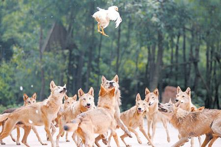
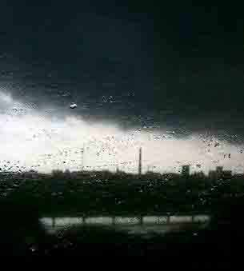
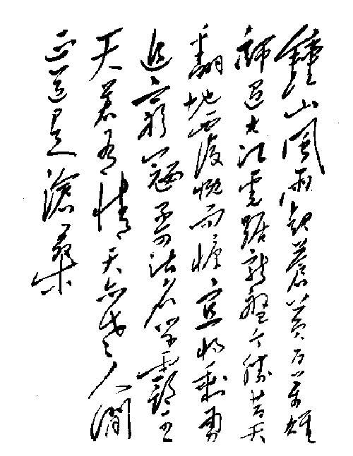
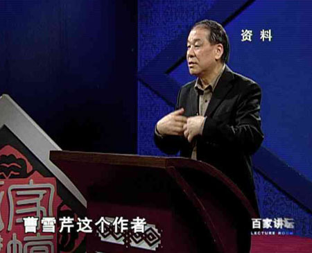
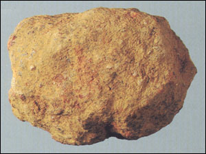
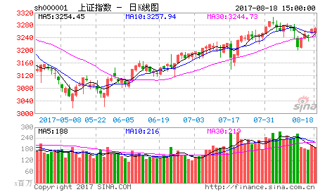

(2006-02-01 09:15:39)
新居落成，新春将至，聊赋《临江仙》以记之
缠中说禅
浊水倾波三万里，愀然独坐孤峰。龙潜狮睡候飙风。无情皆竖子，有泪亦英雄。
长剑倚天星斗烂，古今过眼成空。乾坤俯仰任穷通。半轮沧海上，一苇大江东。
【韶山映山红】摘自百度百科：临江仙，唐教坊曲，后用作词牌，为双调小令。格律俱为平韵格，全词分两片，上下片各五句，三平韵。此调唱时音节需流丽谐婉，声情掩抑。至今影响最大的《临江仙》，是明代才子杨慎所作《廿一史弹词》的第三段《说秦汉》的开场词，毛宗岗父子评刻《三国演义》时被放在卷首，后电视剧《三国演义》的片头曲歌词有引用。】
【韶山映山红】明朝杨慎 《廿一史弹词》第三段说秦汉开场词
滚滚长江东逝水，浪花淘尽英雄。 是非成败转头空。青山依旧在，几度夕阳红。
白发渔樵江渚上，惯看秋月春风。 一壶浊酒喜相逢。古今多少事，都付笑谈中。】
好大气概，真叫人看了舒坦，和一首，见笑了。
今日春来大雪，也作《临江仙》一笑
飞花烂漫三千尺，落英遍洒苍穹。装银裹素望春风。扑面皆为水，落地竟成冰。
飘絮满天霜满地，屋宇一夜皆肿。寒暑交替自消融。一轮才捧出，
三千皆向东。
2006-2-8 14:40
鹿心
芙蓉万里遮碧天，云蒸霞蔚峰相连，真龙猛狮多伏潜，若无玲珑心，怎待麒麟情！
长剑在心只悲怜，眼验古今留忠奸，念含神州鹧啼鸣，一轮上沧海，幽幽照汉江。
2006-2-16 19:51
王派
真心相守一百年,悠闲双拥藤椅.夫唱妇随待升天.凡人真一生,狂人落惨空.
长拐竹手路康庄,子女离家望穿.耕织劳闲待夕阳.双目看沧桑,一生细思量
2006-2-20 23:00
临江仙 和缠中说禅
刀笔客
鹤唳青霄春已到，鹰扬万仞松峰，谁人共我踏长风？有为无所畏，何必苦争雄？
漫卷湘帘邀白鹭，烟霞渐染晴空，初升海月证圆通，半生功与利，一笑任西东。
2006-2-22 11:32
小牟
攀云望
明月通耀七千丈,悠然笑待箫厢.风起云涌灭百兽.有怨本胭脂,无悔依长枪.
劲风翻江波涛狂,朝夕待看兴亡.银河宽广凭游荡.众星天外降,唯见岁月长.
2006-2-23 23:28
平金
众千男人中的不才，再“跟韵和诗”一首：
（讨厌数学数学却很强没办法的男孩平金）
临江仙
命虽不济生逢时，学易安居词峰。古人已逝叹古风。此身非男子，强欲为女雄。
诗词吟赋弄风骚，落叶间名成空。大块投河声扑通。焉敢比虞姬？独自过江东。
2006-3-29 16:46
随便看看
鸿雁南飞菊绽放，青霜点染群峰。凭栏远眺沐西风。何人来伴我，煮酒论英雄。
秋夜微寒思绪涌，抬头仰望星空。知音万里意相通。千杯人未醉，冉冉月升东。
你写的是春天，我和的是秋天。
到此已完成你的和诗挑战。我只想和诗，无心挑战。
2006-5-5 02:04
禅中说缠
为索千金一笑，某持拙笔附会之.
枯木生枝五千年，凛然屹立群山。鲲游鹏飞待祥云。有钱皆丈夫，无产亦豪杰。
红旗插地光芒灿，世界进步立志。男女老少凭富达。对岸桑田中，三峡巨坝西。
2006-9-11 10:54
由后及前 因缘际会
因股 及人 虽无缘 却有缘
一点点翻阅 一点点走近
狂 才 都不是你的本色
私下觉得应该是个魔女
性情的极致 才情的极致
不在意是否有人欣赏
只是不断寻找着对手
无论想象中的还是现实中的
无论男人还是女人
只要能够成为对手
总好过独自站在峰顶的寂寞
2007-11-10 21:25
不辞远
寒生
云中杏蕊映日红，凭风借力意万重。
孤鸿南飞难消愁，碧水清莹易成空。
寂寞寒生独倚楼，落拓白衣藐攀龙。
半轮沉浮金樽里，一苇泛游大江东。
2008-1-1 13:09
不辞远
龙门不听经，难堪风云信。我自寻我道，无为效金鳞。
2008-1-1 13:10
相“识”恨晚，今生“有”缘，人杰鬼雄，缠中说缠。佩服ing……
喜欢股票，别人介绍刚刚开始看您的博客……相识即是不识，无缘即时有缘……在看你的文章之前，我本来以为，中国的许多悠久而优秀的东西已经绝种了……词中的气魄与境界，佩服之至！
我每天学习一篇，知道世上有这样的奇女子也是一大开心之事！
2008-4-5 22:45
长剑倚天星斗烂。
繁星万点，一剑倚天，
于空阔寂寥中，气势漫天漫地，但只是一 剑，那一是单的。又只是一长剑，而那长也是单的。
长剑呢，又是倚天这般的长剑？
繁星万点，剑客抱一剑而倚天，抱倚天剑而倚天，于空阔寂寥中，剑的寒光撞碎了星斗的冷光。
剑客总是单的。绝代的剑客更是单的。又是抱倚天剑而倚天的剑客。
也许一剑击碎星斗，耀天耀地，还只是这一人天地间。
长剑倚天星斗烂。
2008-4-10 17:33
有个现成的屠龙刀，但如果对对，要如这句里倚天剑这般，用的不着力，浑然天成，难！
顾随说：有意则意有尽，其味随意而尽，要意有尽而味无尽。长剑倚天星斗烂，简单看，好像也没什么，但愈咀嚼，味愈出，如何写出来的，真是让人困惑，简直是被缠住了。
在追忆中，宇文所安强调：没有付诸文字的东西给能体会出这层诗意的读者留下深刻的印象。前面的留言反证了这句话。
留言中的几首和，不说是大白话，也只能说是打油诗，如何称的上是诗。诗人首先要自己内心感动，所谓情动于中而形于言，不是为了诗而诗，那只是堆砌些字词，形于言而把自己内心的感动传达出来，使读者，甚至是千百年以后的人读了，也产生同样的感动，更能让读者由作者的感动引发联想，又由自己生命，自己的生活，产生新的感动，生生不已，这才是叶嘉莹先生说的：兴发感动生命才是诗歌。
好的诗词让你心灵不死，信然！
2008-4-10 18:49
重新来品味一下老大的风采。
原来的气氛文气十足，现在找不到这种气氛了。大家都求小道了。没办法，老大说了：不会挣钱的经济人是废物。呵呵，谁也不愿当废物。
先物质，后精神。
2008-4-17 21:55
新浪网友
百强声中闻噩耗，泪满襟
旧地重游感慨多，空声叹
2008-4-24 01:03
新浪网友
浊水倾波三万里，愀然独坐孤峰。
起句就气势非凡，水阔三万，更显孤峰之高
一个浊字，让人起多少联想，人心就像那三万里的浊水，何日得见清澄
一个愀，一个独，一个孤，虽未到禅主如此俯仰穷通任由己之境地，愀然独孤之感却难免时时侵袭心头
2008-4-24 01:23
夜雨
才两年多时间,您做到了,如同奇迹一般的存在,将来也会创造奇迹!
回贴中嘲笑您的人,已经被人所嘲笑.
"半轮沧海上，一苇大江东",您是如此洒脱,我们是无法无情.
今天开始,重读您的每一篇文章,再走一次您两年多走的路.
2008-4-26 21:49
以前没在新浪注册，看缠姐姐的贴子不是匿名就是潜水，有时候也用太阳二字发一个顶字。今天自己注册了专门研究姐姐股票技术的博客，来到第一页，感慨良多！姐姐一直就是这么富有争议，第一页的回贴就有人开始攻击了，从天涯到这里，有多少人是根本就没看懂您写的就乱攻击，还有多少是压根儿没看就攻击，还有多少起哄的，多少冷眼旁观的，多少像我以前一样潜水的？现在大家都站出了，缠姐姐身体不太好，现在到了表示尊重的时候了，不要把爱放在心里，请大声说出来！
2008-6-18 02:41
从头阅，多少伤心事，惹人愁。
忙匆匆，难取舍，争不休，又何求。
惊回首，叹黑发变白头。
借问惶惶名利客，何不五湖自在游。
西风里，看归鸿点点，任去留。
2008-11-9 09:27
苍穹放眼烂漫，此身无意西东。万般绚烂终皆空。是非人间情，然皆有始终。
六十四卦颠倒颠，阴阳转换出英雄。满身紫金终归去，释迦文狮子，爱常满无穷。
2009-2-7 20:28
新浪网友
和缠中说禅 临江仙
疾风吹浪一华里，梦里飞蝶堪惊，莫怨煽坟结发妻，无情因多情，发狂非英雄。
无由红妝舞长剑，恨不来世作男，纵跳十万八千里，五指山根下，遗溺气渲天。
2009-2-17 07:10
(2006-02-01 10:16:25)
倘无禅宗，曾以儒道为主之中华古文化，本不足道；倘无禅宗，中华古文明亦难至如今不可企及之高度。蓋中华古文明、中华古文化，得禅宗而孤峰直上、傲然于世。宋明理学、心学，窃禅宗之残羹冷炙犹可蔚为大观，岂论禅宗哉！【韶山映山红】“宋明理学、心学，窃禅宗之残羹冷炙”。以后研究。★】
达磨东来，只履西归。壁立千峰，拈花之旨于挑水担柴间逗漏；花开五叶，救世之心从名宗判教处显扬。【韶山映山红】“达磨”，指达摩，意译为觉法。南天竺人，印度禅宗第二十八代祖师。达摩在中国始传禅宗，“直指人心，见性成佛，不立文字，教外别传。”佛陀拈花微笑，迦叶会意，被认为是禅宗的开始。经二祖慧可、三祖僧璨、四祖道信、五祖弘忍、六祖慧能，一花五叶，成为中国佛教最大宗门。达摩祖师的思想，对中华文化起了很大的影响，被称为达摩祖师。流传的典故包括一苇渡江、面壁九年、断臂立雪、只履西归等。】
玄沙云：“若论此事，喻如一片田地，四至界分结契卖与诸人了也，只有中心树子犹属老僧在。”穷诸玄辩，竭世枢机，若太虚一毫，似巨壑一滴。永明曰：“一夏与兄弟东语西话，看翠岩眉毛在么？”。人人无始以来，东语西话、此生彼灭，且看眉毛在么？
世间、出世间一切学问、知识，无论哲学、科学、艺术、宗教、社会、信仰，诸如此类、三教九流、东圣西哲、神魔鬼怪，皆不出此“穷诸玄辩，竭世枢机”矣。徒叹一毫置太虚、一滴投巨壑者，大似无病呻吟，岂知太虚置一毫、巨壑投一滴，缠非缠、禅非禅，枯木龙吟照大千哉！
千载以来，谈禅成缠，以学问、实践为禅者，古今多矣。焉知禅者，非学问即学问，非实践即实践，非知即知，非行即行，非心即心，非物即物乎？诸如学问、实践、知行、心物者，皆无端自缠自绑也！
蓋禅宗，自云门、法眼以来，公案、话头诸法门大开，而宗门日益凋零。所谓各派宗师，自眼不明、盲传瞎练，禅于此而日益学问化、实践化、儒道化、政治化、神秘化，其败不足怪矣。倘以禅宗为儒道之文字学问、身心修炼，则其解可笑而可怜也。禅者，天地不能盖、古今不能载，非心非物，即心即物，岂可画地自牢、徒困化城哉！
世之无禅，如人之无眼。人之无眼，犹可以耳舌鼻身意替之；世之无禅，则替无可替矣。然禅者，无得无失，吾非忧禅之无，忧世人之失眼而老婆心切固有此书矣。本书以最平实之角度、最深广之宽度，还禅宗之本来面目、呈中西文化最深层之交锋，析世间哲学、科学、艺术、宗教、社会等最全面之问题。此间，惟以见地、不以名闻，古今名哲、大德皆难逃检点，狮子、野狐，不辩而自辩也。
诗曰：
渺渺天涯渺渺秋，绮霞烟水自空流。谁怜西岭西风后，满地相思满地愁！
满城风雨满城秋，一水横空天地流。独上孤峰倾百斗，披云啸尽古今愁。
一番风雨一番秋，依旧青山枕碧流。溅血长虹贯天地，羲和鞭堕六龙愁。
万古长空春复秋，一朝风月乍星流。乱峰深处斜阳下，木落花飞愁自愁。
(2006-02-01 11:38:34)
有这般汉，误认禅宗“不立文字”之旨，妄执离言，不知离言即言、言即离言，立而不立、言而无言；
有这般汉，误认禅那、禅定、坐禅为禅，如磨砖求镜，可笑可怜；
有这般汉，误认解脱是禅，不知可解脱者非解脱，真解脱者无解脱，无人缚尔，谁求解脱？
有这般汉，误认上帝一类物事是禅，而禅者非生非灭，即生即灭，与上帝等臆测之物何干？
有这般汉，误认佛境界为禅，不知佛魔一如、净污无二，非佛非魔、即佛即魔，踏破毗卢顶上行，天堂地狱任来往，谁佛谁境界？
有这般汉，误认我是禅、心即佛，不知禅者非心非佛、即心即佛，我而非我、非我而我；
有这般汉，误认无修无证为禅，而有修有证又何曾有修有证，修而无修、证而无证，禅者，非修即修、非证即证，本无可证、证无可本，又无修无证何为？
有这般汉，误认任运自然为禅，而谁任谁运？无自非然、无然非自，非任非运、非自非然，任运非自然、自然非任运；
有这般汉，误认一切皆空为禅，而一切即空、空即一切，一切皆空非空，空无可空、可空非空；
有这般汉，误认平常心是禅，而何心不平常？心本无心、无心而心，平常非常、非常而常；
有这般汉，误认禅者可参可入，而可参非参、可入非入，谁参谁入？
禅者，不废一法、不立一法、不剩一法、不欠一法，不有一法、不无一法。
见禅者，不为禅；不见禅者，亦不为禅。何之为禅？禅即一切、一切即禅；何之非禅？禅非一切、一切非禅。
如执明心见性为禅者，亦为大误也。可明非明、可见非见，无明本明、无见本见，明心见性也大似无病求药矣。达摩东来、幻海尘起，引得无头蝇儿逐此臭肉而喧哗大动。
诗曰：
曹源一滴曹源水，嵩岳千重嵩岳山。今古骷髅今古眼，乾坤声裂血斑斓。
(2006-02-01 14:41:47)
蓋云门法眼以来，禅宗大盛而衰，今惟余算沙数宝食唾之辈矣。禅者，无古无今，即古即今，与释迦老汉、达摩老儿何干？惠能之辈，即如云门所说打杀喂狗，于禅何损？于惠能何损？五宗七派，即能笼天盖地、光耀千秋，于禅何增？于五宗七派何增？
有这般食唾汉，以“不立文字，教外别传，直指人心，见性成佛”为禅宗宗旨。然无心可指、能指非心，无佛可成、能成非佛，何以妄论“直指人心，见性成佛”乎？教外宗门岂可妄生分别，禅宗典籍于大藏之内犹多，何以妄论“不立文字，教外别传”乎？同异者，痴人之妄生分别矣。岂只教外宗门无别，三教九流、神魔鬼怪、正统异端、天堂地狱、正反善恶，于禅又何别、何同？
或言禅有所传承者，皆乱语胡言也。如迦叶因释迦拈花而有所得、达摩于惠可断臂而有所传，则释迦、迦叶、达摩、惠可，皆瞎眼鼠之辈矣。禅者，无传无得、復何传何得？倘实执“禅者，无传无得”，则乃作茧自缚、可笑可怜矣！
诗曰：
浮世多拙意，算计总失机。俯仰真亦假，浮沉是已非。真假全少义，是非皆多违。
骑鹤赴扬州，逐鹿望京畿。鹤冲双翅折，鹿死几人归。春回杨柳青，冬至雨雪霏。
碧水跨山去，白马过隙飞。谁心观日月，谁耳听嘲讥。万事元幻化，鹿鹤不可祈。
陟彼南山石，南山何巍巍。靡迤林陵莽，阡陌麦苗肥。嵯峨藏异兽，陂陀步锦翚。
高岩覆清阴，幽壑满白薇。天崩忽倾雨，惊云乱景晖。飙风折盘木，奔洪缺石圻。
虬蛟舞金爪，駻突脱玉玑。山削千尺土，海泻万重围。山海穷迹处，月明星未稀。
流光幻五彩，剑气拂霓衣。云间蔼蔼木，涧底郁郁菲。乾坤袖中笼，日月尘里微。
驱马猎秋原，垂竿钓夏矶。偶作蜉蝣灭，时生龙虎威。澶漫无清浊，悠然续琴徽。
(2006-02-01 20:43:55)
有这般汉，妄将禅宗学问化，以可怜之分别心，立此规律、彼特点，造大诠释、总体系，终乃测海算沙之书蠹矣。如妄论“立处皆真”，则能立非立，所立皆非，立无可立，谁真谁假？如妄论“一切现成”，则现无可现，能成非成，一切成非，谁现谁成？如妄论“不二法门”，则不二而二，二而不二，分别无二，谁分谁别？如妄论“不住一切”，则不住而住，住而不住，谁住一切，一切住谁？如妄论“了无所得”，则了无可了，得无所得，无得犹得，谁了谁得？如妄论“能所俱泯”，则能所能能、所能所所，能能所能、所所能所，谁能谁所，能谁所谁，泯而不泯、俱而非俱，能泯能俱、非所非能！
诗曰：
无生尽日欢，何来生死疑。有疑因患有，有患自缠丝。浮云万世名，粪土千年碑。
此身更无寄，未住早已离。依依河边柳，呦呦林中麋。日日皆好日，时时作花时。
潮起复潮落，月圆复月亏。世本无多事，何在有无为。莫窃尘上珠，莫恋法中奇。
明珠岂属有，说无亦是痴。无有全不立，犹在鬼作思。坐看天地转，起看天地垂。
雁行风过水，花落月临枝。法法皆无染，尘尘皆不遗。廓然泯凡圣，悠然入喜悲。
生死凭一笑，净污两由之。死生众生恩，净污众生慈。空花演佛事，幻镜戏魔师。
赴劫千身去，行难一愿随。阿鼻空未空，菩提期未期。琴歌自澹漫，莫向月中窥。
(2006-02-01 22:46:38)
除此学问化之臆测，实践化之妄行亦狮子虫所好之能事。且不论彼一味之枯坐，即此万里行脚又何曾移却半步？即此万劫不朽、万槲舍利，又与禅何干？知不知，行非行，知得行得犹是呆汉！
诸如儒道所谓学问、实践者，好论所谓知行之关系。如知易行难、知难行易，先知后行、先行后知、知行合一、即知即行，凡此种种，皆乃乾慧狂想之所生矣。而知外无行、行外无知，非知即知、非行即行，一犹非一、何合何一乎？
诸如哲学所谓学问、实践者，好论所谓心物之关系。如心一物二、心二物一，心物一如、心物二元，非心非物、即心即物，凡此种种，皆乃乾慧狂想之所生矣。而心外无物、物外无心，非心即心、非物即物，非即即非、心物物心，一而不一、二而不二，不一不二，谁一谁二乎？
诸如宗教所谓学问、实践者，好论所谓解缚、圣凡、净污之关系。如神圣我凡、神解我缚、神我一如、神净我污，凡此种种，皆乃乾慧狂想之所生矣。而我本非我、神本非神、圣本非圣、凡本非凡、一如非如、如一非一、因解成缚、因净成污、非因即因、非成即成、因成成因、谁因谁成乎？
诗曰：
人生是梦梦何如，雁落秋山月落湖。半辈常怀千岁怨，一生永处两分途。
谁寻生又谁寻死，谁作主来谁作奴。谁到无门无走处，无门早入死人窟。
谁为迷又谁为醒，谁是净来谁是污。谁有无得无证物，无得已使大树枯。
死人窟里嚼大树，庄子梦中惹蝶哭。哭碎山秋湖下月，雁惊回望到天竺。
(2006-02-02 08:11:58)
夫禅，即一切非一切。禅者，即禅宗非禅宗。禅宗者，非禅宗，是名禅宗。执禅宗所谓历史而学问者，于禅宗无关，于禅亦无关矣。蓋无关之于无关且犹多有相关者，禅宗之所谓历史，亦于此无关之相关而展开也。
释迦拈花、迦叶微笑，达摩西来、花开五叶，是耶、非耶，知者自知，不必追究也无须追究。所谓如来禅、祖师禅之争讼，乃无事生非。纵会得祖师禅者，亦阶下汉也。若论诸如棒喝、公案、话头、机锋等，则大似无端作怪矣。
禅者，即迷非迷、即缠非缠，非悟即悟、非解即解。求解脱者无解脱、不求解脱者也无解脱，因解成缠、因悟成迷。所谓顿悟者，非顿悟，是名顿悟。所谓三关者，非三关，是名三关。佛法无多子、禅宗无多子、乾坤今古无多子，虽如此，此间事、犹需一一透脱。所谓透脱者，非透脱，是名透脱也。
诗曰：
可怜网中客，流转自颠错。四大谁为住，天地谁入镬。形神空无有，何缚何所缚。
缘生非一体，如幻相映烁。糊涂识物始，忧患起年弱。五蕴妄成织，形器终难托。
尘念随境逐，三界怅寥廓。宿习随行消，福田莫令薄。盲龟苦海渡，孔木曷能获。
浮华镜里梦，须臾已舟壑。贫子衣安在，明珠诚凿凿。
(2006-02-02 08:49:52)
错解之于禅，莫过于以禅为个体之身心修炼、修养，进而耍嘴皮、动笔头亦为禅矣。如此之禅，实乃无聊文人、有闲阶级之无聊把戏。以此所谓禅而招摇撞骗者，古今多矣。
蓋禅为学问、学说，则乃最激进之革命、令一切统治者发抖之学问、学说。禅乃否定一切主义之主义，禅乃否定一切思想之思想，禅乃否定一切秩序之秩序，禅乃否定一切信仰之信仰，禅乃否定一切科学之科学。禅，否定一切，以及否定自身。蓋禅，復乃肯定一切主义之主义，肯定一切思想之思想，肯定一切秩序之秩序，肯定一切信仰之信仰，肯定一切科学之科学。禅，肯定一切，以及肯定自身。
禅，非思想即思想，非主义即主义，非秩序即秩序，非信仰即信仰，非科学即科学。禅，非神秘主义之臆想。禅，丝毫不与耳闻眼见相背离。禅，无古无今、恒古恒今。禅，无关復相关于诸如种族、肤色、文化、思想、传统、道德、阶级者。禅，非人所独有，宇宙间古往今来一切众生，存在非存在、可见非可见，一切种类，无论高低、圣凡，皆与之无关而相关，一律平等无二矣。
诗曰：
乾坤处处净，何来污与秽。万物等无差，庸人自执爱。
莲舟空无有，什么都能载。识取衣中宝，莫被文字碍。
(2006-02-02 10:48:30)
世上一切之宗教、信仰，虽异而实同，即非我同类则魔则恶、不信我者则恶则魔，所谓顺者昌、逆者亡，皆贪嗔痴疑慢之业也。禅者，无我可我、无类可类，无非可非、无禅可禅，无佛可成、无魔可灭，一切同异、顺逆，一律平等。
蓋所谓平等，无使之平等者，本来平等，又何须平等之。如平等者须平等之乃可平等，使之平等者必凌驾于上，非平等也。世上一切主张平等者，皆羊头狗肉之辈，实乃假所谓平等之名词妖言惑众、谋私求利也。
一切众生，无始以来一律平等。若人鼓吹有一物一人一事可凌驾于余物余人余事者，其人不过贪嗔痴疑慢五毒猖獗，信其人其言者，则是贪嗔痴疑慢与之相应，闹剧一场。禅者，非神非圣、非上帝非主宰，非人之之人、非物之之物，非心非我、非佛非魔。
一切能平等者、所平等者，能之所之，皆因缘和合。禅者，非能非所、非因非缘。众生非因禅而平等，众生非因禅而成佛，说禅 “明心见性、顿悟成佛” 者，大误矣。若有佛可成，则有魔可成。可成佛，则可成魔。而本无佛可成，则也无魔可成可灭。天堂地狱，惟心所造。所谓轮回，实无所轮回而轮回也。
一切本来平等，固有世间一切不平等。若一切须平等而平等，则世间无所谓不平等。世间一切不平等，本无所据，皆惟心惟言所造，人以贪嗔痴疑慢而固之。世间一切不平等，惟以不平等去之，而所谓去，本无所去，皆不平等而不平等也。
蓋世间之不平等，本无所据，因缘和合生之灭之，恒变不居。世间由此而学问、学说、信仰、宗教者，妄求以各自所谓平等、统一之理论、逻辑等结构解释世界、构造世界，皆捞空捉影、痴心妄想也。禅者，非世间非出世间。世界，本来平等。所谓本来，非本非来，是名本来。
诗曰：
三界迷尘侵海色，一星无语枕霄寒。狂虬折足惊滩堕，碧溅龙泉指上弹。
(2006-02-02 14:26:04)
较之平等，今人犹好论所谓自由。鼓吹自由之辈，如鼓吹所谓平等者，皆羊头狗肉、妖言惑众，进而谋私求利之辈也。自由者，自谁谁自、由谁谁由？无自，何由？有自，由何？如平等，能自由者非自由，所自由者亦非自由。自自非自，无自非由，何论自由？
然则，有欲以公理化之原则而立自由之公理化定义者。夫公理，本无所公，亦无所理，语言之霸权游戏也。究其源，即人之贪嗔痴疑慢共业矣。共业者，本无可据，毕竟空也。
禅者，非公非理。本无公理，固有此世间之公理。禅者，非空，固有此世间之毕竟空。执禅为“本来无一物，何处惹尘埃”者，大误也。空者，非空；非空，真空。世间之万事万物，本来清净，尘埃何处、何处尘埃？
缠者，本无能缠所缠，是名缠。如实有能缠所缠者，则世间无所谓缠者也。求出缠者，缠也；不求出缠者，亦缠也。缠之非缠，谁出谁入？能出能入、所出所入者，缠也。非缠而缠，实无出入。缠者，即自由也。
诗曰：
投壶巨海梦何频，一叶随波四主宾。河汉清空星散野，琉璃碧净宇无尘。
颠簸六道皆同病，辗转三途不二身。九五干戈七八巧，缘来执果更迷因。
(2006-02-02 18:53:05)
自由者，缠也。世间缠中出入妄求解脱者，不外乎四种途径：一者，求诸心外之物；二者，求诸物外之心；三者，于心物一如处摸索；四者，于非心非物间探求。除此之外，别无它途。凡此四种，皆妄心执计，戏论也。
求诸心外之物者，以心映物，心乃物之功能。所谓格物致知，尽物之理而行，则心解脱也。由此，必先假设物之理存，而心能体物。所谓物之理者，实乃妄心执计也。有此物方有此物之理，吾辈能知之所谓宇宙之理，先因有此吾辈所在之宇宙矣。相对论、量子力学之发展亦已证明，脱离观察者之所谓物之理无意义也。吾辈所在之宇宙，实乃吾辈之共业所感，岂仅此唯一之宇宙哉！求诸心外之物者，实乃求诸吾辈所感之共业，相缠相续，幻戏也。
求诸物外之心者，臆想心可离物而解脱。而离物，心岂可存？或言不可离物者乃妄心，有一常住真心，无去无来、本来解脱、能为万物主者，真热昏之胡话也。此辈企求去妄存真，而不知妄之真妄、真之妄真，求真实妄、去妄无真。吾辈之心，物象之集也，此心本无寄，相缠相续，幻戏也。
于心物一如处摸索者，臆测所谓心物一元乃宇宙之真源，心外无物、物外无心，穷心则尽理、尽理则了心，返本归源、一解百解、一了百了。此辈言论极为流行，现今所谓禅者，多有此般言论。而万法归一，一犹是生死之根源。所谓返本归源，本无所本、源而非源，能本能源者非本非源，相缠相续，幻戏也。
于非心非物间探求者，不立心物而立一非心非物之源，归依此而得解脱也。或曰上帝、或曰神、或曰真主、或曰真理、或曰解脱、或曰主宰、或曰大梵、或曰大道、或曰真空，如此种种、不可遍数。此辈者，实乃痴心狂想，妄计心物之非而立非心非物，不知非心即心、非物即物，不立而遍立，相缠相续，幻戏也。
所谓除此四种之外，别无它途者，禅也，离诸以上四种戏论矣。禅者，非途；别无而非无、无别而非别。
诗曰：
红尘醉入几围城，刹那悲欢化酒倾。岁月歌回心远大，乾坤影动眼空明。
皆缘皆我皆同病，非妄非真非二名。东海藏身山走马，天台华顶作么生？
(2006-02-02 20:25:56)
道者，因世而有，离于世而言道者，臆测也；机者，因时而发，离于时而言机者，臆测也。世存而道有，时现而机发。假道而逃世、离时而投机者，痴人也。世不可逃、道无可假，机等得失、时一去来。世者、时者，心之共业也。道者、机者，共业之心也。
心者，业之集也。物象者，业之显发也。所谓阴阳者，离心而论阴阳，名言也。离心无所谓阴阳。阳者，业之显发也；阴者，业之藏隐也。一阴一阳，成此共业之心，即道也。道者，必依世而托时，道本无道，依托心之共业而道也。世所好论阴阳者，有句而无义，臆测也。
时者，非时，是名时。时者，非去来今也。去来今者，名言也，终不可得。机者，阴阳之易也。易而不易，不易而易，是为易也。机不离心，离心之机，不可得也。心不离机，离机之心，亦不可得也。
心者，毕竟空也；业者，毕竟空也。空而不空，不空而空，是为空也。寻空守空者，痴人也。能空非空、所空非空，非空而空、非能非所。以禅为一切皆空者，大误矣！
诗曰：
秋深于水夕涨风，微蓝缥缈紫朦胧。千重影没乾坤幻，四起声浮今古空。
恍觉燃灯汰孤寂，犹迷举指扣圆通。天心处处明如昼，一点冰花溅火红。
(2006-02-03 20:11:20)
世间名言之学，好求所谓本原、本质，或一味否定本原、本质而无所依托、惟托空言。空言犹言、顽空岂空，皆贪嗔痴疑慢之业也。一切离诸当下现量之学，皆臆测之神学也。西洋科学，弃以太等臆测之物，直面可观察之现量，乃有相对论、量子力学之大发展。当下之现量，不离吾辈耳目鼻舌身意之所到。现代科学仪器之发展，实乃观察水平之提高，犹不离当下之现量矣。
业者，当下之现量，毕竟空也。业之所集，心者，毕竟空也。空而非空，心之共业而有此世界矣。吾辈所在之世界，乃吾辈共业之显发。业之流转、世界之变异，实无所转、实无所变，业之显发、藏隐也。显之非显、非显而显，藏之非藏、非藏而藏，阴阳而阳阴，阳阴而阴阳，即此今古乾坤也。
痴人所说心者，或一肉团之物、或脑内之意识、或意识之虚构。而心者，惟此业之所集也；肉团之物、脑内之意识、意识之虚构者，业之显发而有之物象，非心也。有而非有、集而非集，梦幻泡影也。梦幻泡影者，非假非真、即假即真。执之梦幻泡影而遁世者，痴人也。遁无所遁，梦幻泡影也。
诗曰：
风卷重云云逗雨，鲸翻恶浪浪腾天。蓬莱终化三杯土，阿鼻犹输九吊钱。
无事商量非少劫，有情计较总多缘。茫茫欲海舟随系，一苇何曾到日边。
(2006-02-04 11:54:32)
白话文是一种垃圾文字，因此用来进行一些垃圾讨论或与垃圾相关的讨论是合适的。偶尔看到一篇文章“中国人为什么产生不了哲学和哲学家？”，作者据说被许多媒体誉为“新世纪中国最受关注的哲学家”。中国媒体的垃圾性决定了被关注的只能是如超女般的垃圾现象，因此被媒体所定义的最受关注意味着什么，就显而易见了。
当一个人为所谓的“独尊儒术”而忿忿不平时，如该文作者般，大多都成了其独尊的其他什么术的傀儡。用一个西方标准的哲学和哲学家定义为前提来讨论所谓的中国哲学和哲学家的有无，这种独尊确实是超女级的。而现在还企图用一个所谓“真善美”的三角结构去继续大体系构架的呓语，当然比老黑一个热昏的喷嚏都不如了。
三角形最稳定的武断意味着这是在一个三角形最稳定的武断能被武断的世界中的武断，在数学上，随便可以构造一个空间使得这个武断即使在逻辑上也是一个真正的武断，而逻辑只不过是所谓智慧的最后一块布。什么是智慧？智慧只不过是一串脑电波的颤动，承认不承认这个定义，都不过对应着脑电波的颤动。没有脱离脑电波的智慧，而没有所谓的智慧，脑电波依然脑电波，如果真有什么智慧，这是唯一的智慧。
外国人为什么产生不了哲学和哲学家？不为什么，就像可以构造无数的空间使得三角形不再稳定。如果有一种 “中国人为什么产生不了哲学和哲学家？”的脑电波自渎地认为自己是世界上唯一的脑电波，那么当然可以有“外国人为什么产生不了哲学和哲学家？”的脑电波自渎一下。脑电波的唯一特性就是自渎，而自渎是权力，这种权力也可以有一个无聊的名字，例如：话语权。
(2006-02-04 21:25:38)
吾心即宇宙、宇宙即吾心。吾者，非它，业之集，心也。吾者非吾，非吾而吾，心也；无吾则无集，无集则无心。常言“吾心即宇宙、宇宙即吾心”者，实不知“吾，何之为吾；心，何之为心”也。
不知“吾，何之为吾；心，何之为心”之辈，古今多矣。执肉团之物、脑内之意识、意识之虚构等为吾为心者，古今多矣。常言道者、心者、物者、我者、造物者、上帝者、主宰者、真主者、神者、天者、一者、无极者、梵者、绝对精神者、存在者等，意识之虚构也。
当下者，只现量，非有一当下而当下也；现量者，只当下，非有一现量而现量也。世有所谓禅者，常言所谓“活在当下”，不知活即当下，岂有非当下之活哉！当下惟业、现量惟业，世界惟业、吾心惟业，毕竟空也。
痴人所说我者，六识也，第三重之幻影也。末那、阿赖耶，第七、第八识者，非学术之名言，惟证可知，非书蠹、痴人所能测也。八识皆幻，因幻而有。世间所谓禅者，未通唯识而论开悟，无有是处；世间所谓唯识论者，未开悟而通唯识，无有是处。
唐后，唯识于中国几于灭迹，此后之禅宗野狐横行。禅者，不违世间一法，岂违唯识哉！国人好简，不知简而实繁、繁而实简，唯识多名言而实非名言、现今所谓禅者废名言而实名言也。不透唯识者，无以论禅也；不透世间出世间一切法者，亦无以论禅也。
诗曰：
穹苍灼日血淋漓，雨碧风蓝撼地维。叠浪翻腾龙鼓促，群山踊跃鬼啼悲。
尘涵万象今即古，法缚无言髓亦皮。天幕为书星作字，难寻片语属真知。
(2006-02-05 15:08:46)
空而求空、解而求解、净而求净，世间头上安头之辈，古今多矣。业不可消，毕竟空也；心不可求，毕竟空也。禅非无我，妄求无我之辈，我也。西方有所谓“认识自己”的箴言，犹是头上安头，认识本自己，认识何自己？而“我思故我在”者，若不视“我思”为证“我在”之名言或直观依据，实指“我思”从而“我在”，则犹较些子。
思而在而我，我而在而思，一阴一阳，皆业，毕竟空也。思，非只为通常之意识作用。思者，心之遍行也。末那、阿赖耶，犹思，痴人难测也。六识、末那、阿赖耶，皆“思而在而我，我而在而思”也。
我者，非我也。世人多执六识为我，而破六识为我者，犹执末那、阿赖耶为我也。执末那、阿赖耶为我者，非意识、名言作用，与生俱来、万劫难识也。世人大多惟知六识，末那、阿赖耶者，痴人多视为唯识论之名言安立，实不知末那、阿赖耶也。
古今所谓禅者，多在六识间打转。一念不生者，六识也；知主人公者，六识也；乾坤破碎、大地平沉者，六识也。古今所谓开悟者，六识中游戏而不自知者，多矣。习唯识者，多知末那、阿赖耶之名、性相，而实不知末那、阿赖耶，犹六识之游戏也。
六识外求末那、阿赖耶者，痴人也；六识内求末那、阿赖耶者，痴人也。痴而求、求而痴者，六识也。末那、阿赖耶者，非神非圣、非一非二、非上帝类意识臆测之物也。禅者，不实证末那、阿赖耶者，无有是处。实证末那、阿赖耶，此禅者之通途。通途者，非途而途，是名通途也。
诗曰：
石虎松虬浴日眠，苔痕深浅径蜿蜒。孤峰有雾皆图画，空谷无风自管弦。
照破山河光万叠，观成世界影三千。须弥顶没冰中火，劫海波随漏底船。
(2006-02-06 17:15:32)
斯大林在二战中的历史功绩不可替代，这点大概没什么值得争论的。蒋介石和斯大林当然有很多的不同，例如在中国人出版的拼音输入法中，作为中国历史名人的蒋介石不是一个词组而斯大林是，这大概是所有不同中有趣的一个。更有趣的事情还和某些中国人有关，就是在二战历史中，骂蒋介石而不骂斯大林，这比那拼音输入法的玩意更不是玩意了。
抛开一切政治因素，在战争初期，两者的表现只能是五十笑一百。相信当时德国比日本强大的程度怎么都比不上中国比苏联弱小的程度，而在战争初期打成一个五十笑一百，如果说蒋介石混蛋，那斯大林就不知道是什么了。
至于战争初期的战略，拿士兵的命不当回事等等问题，蒋介石并不比斯大林过分。站在蒋介石的角度，对红军的围剿以及对各路军阀的清理其实也是一种肃反运动，这只是个立场问题，在运用的层面及最终意义上两者没有什么不同。在这些问题上的争论都是屁股决定脑袋，要骂就一起骂，不要厚此薄彼。
如果说蒋介石不会打游击，那斯大林更不会了。而且在这种世界级别的大战中，光靠打游击能打出名堂？真是天方夜谈。如果说蒋介石不发动什么群众，那绝对是胡扯，这一点只要看看他当时的身份就知道了。从法律的角度，蒋先生当时的身份和斯先生在苏联相应的身份没什么不同，斯先生弄过的事情，蒋先生也没少弄。
不管蒋介石有多少不对，否认蒋先生抗日的功绩是极为可笑的。日军止步于重庆的意义绝对不在德军止步于莫斯科的意义之下。难道日本人不想到重庆吃火锅？是中国人用血把他们当火锅煮了，就象苏联人用血把德国人变成了雪条一样。抹杀这一点，不仅是对历史的无知，而且对民族的团结极为不利。
(2006-02-07 17:55:55)
一
风，从海上吹来；船，在海面颠簸。海那边的城市，若隐若现。这东北的港口，海上的风，散着原始的诱惑。生命，诱惑了海洋；海洋，生命着原始。原始的气味，潜伏、涌动、生命。生命如风，散发着，天空蔚蓝。
城市，总是无趣。城市，有着各自的面孔。城市中的面孔，各色各样，却总是城市。那有着神秘名字的五星级酒店，房里的一切也只有着城市的无趣。无趣，总是名字。
窗外，城市陌生地站着，大海的气味钝化成薄薄的暮霭，笼着小小的天空。
电话响了，他的声音飘在电磁波里，显得异常的城市：
“来了？正忙，晚上见，一起吃饭！”
慵懒地斜靠在依然松软的枕上，熊猫烟散发的淡雾在指间缠绕。【韶山映山红】熊猫烟，上海烟草公司特供。】海水的蓝色不时在烟雾中晃动，那原始的腥味出没在烟草的缠绕间，撩动着生命的原始。海藻扭摆着，鱼儿在扭摆的轨道中迷失，吐着白白的泡沫，一个个，在蓝色中破裂，海洋的气味蓝色地撩动着。
电话又响起，电磁波滑破那一片蔚蓝，闪着灵异的光：
“上车了，晚饭在酒店还是外边？”
“都可以。”
外面，城市倦了，晃动着眼。房间，也在灰暗中晃动。凝结的灯光，乳白地化开，流淌着，散着城市的气味，潜入一片烟雾中。
（待续）
(2006-02-08 12:07:20)
二
每一傍晚都只是傍晚，即使是911第2天的傍晚，太阳依然落下，城市依然灰暗，道路依然拥堵。【韶山映山红】2001年9月12日。】在这北方最大的城市，一个最好的季节里，停车场般的三环上，城市污染着风，喧嚣般宁静。城市的肠道蠕动着，在一个远离原始的地方，语言与腺体，在灰暗中原始地排泄。
时间，并不属于灰暗中的城市，西边这个有着神秘名字的五星级酒店，耷拉在灰暗中，闪动的霓虹无声地喧嚣着抽搐的光。人，光影间烟雾般出没。面孔，陌生地晃动在奢华无趣的金属光影间。
电话响了，电磁波带来陌生的声音：
“到没有？”
“大堂里！”
“哦？看到了！”
他，身材高大，很爷们，肆无忌惮地逗漏着五十岁男人的风度。完美的男人，总是需要教授风度下野兽的身材。
“从来都是别人等我，从来没有我等别人的，这次可真破了例了！”
空气微微晃动，一丝酒气悬挂着。
（待续）
(2006-02-09 10:17:30)
三
灯光膨胀，房间飘起，一抹暗灰里，房间在光影间悬挂着。静止的旋涡，激发了蓝色的气味。深不可测的蓝色，撕裂着，陡然喷射出锐利的红光。烟雾散开，灯，在镜子里孤零零地呼吸，越来越慢，静止了那一片汹涌的蓝。
时间开始了，镜子里，灯不再孤独。熊猫烟，悠和地呼吸着。烟气，轻轻描画着空气的脉动，薄薄地，空气般坚硬。坚硬的烟气，执拗地缠绕，原始地扭动着生命的螺旋。螺旋的生命，灵魂般苍白，死亡般绚烂，凝结了时间永恒的喘息。
无边的虚空，时间地，升腾出一团青白的烟云，浓密地，粘着时间的触角，一丝丝，抽出空间的维度。空间，空间地延伸，逃逸着时间的碾压，欲望地涨裂。破碎的纤维，缠绵般撕扯，撕扯出历史，历史地抓咬，青白着青白。
时间，迷失了空间，无力地腐烂着蓝色的气味，一点点，擦出幽寂的白光，扯动着无声的巨响，滑入无边的虚空。青白的宇宙，一片片凋落，痉挛地画出死亡的脉动。虚空，喧闹的死亡，绽出最后的红，生命般熄灭。
（待续）
(2006-02-09 15:03:30)
诗词之道，非关才学而才学诚不可少。世间才大学广之辈多矣，其诗多不可留，盖困之于气质也。
毛氏润之，年少于旧学实有所得，究其始终，旧学因缘不尽矣。诗词之于毛氏，非所专攻，气质渲染，亦显异彩。然向上一路、千圣不传，才学气质皆备而不成第一流之诗人词客，则如金锁重关，非才学气质可断，才学气质即金锁重关也，毛氏诗词亦然。
毛之诗劣于其词，此毛氏之自道也。润之诗词多有格律不合处，此虽小病，然小病而不能自除，则洵非国手矣。气质豪放者，多喜豪放之诗，加之才学、时势，风云际会而出雄篇，如河决山倾，偶一为之则淋漓尽性，强而行之则失天然之趣，终为其害而为粗豪也。粗豪者，非关诗词，文言之灾矣。
润之诗词，奇诡则远逊长吉、铁崖，豪放则不及裕之、其年，遑论元亮、青莲、浣花、东坡？润之实无心与前贤于诗词较其短长，皆妄人心爱之切而口自雌黄也。润之于诗词非为第一流，实无损毛氏之为毛氏也，强而称之则惟添后人一笑矣。
世有流言，曰润之诗词多有代笔，如“沁园春·雪”，或言胡氏乔木为之。吾偶有机缘当面求证于胡氏子辈，确信此皆好事之徒所杜撰。润之诗词、文章，皆其自出，绝无代笔也。
聊赋《临江仙》结之：
浊水倾波三万里
愀然独坐孤峰
龙潜狮睡候飙风
无情皆竖子
有泪亦英雄
长剑倚天星斗烂
古今过眼成空
乾坤俯仰任穷通
半轮沧海上
一苇大江东
(2006-02-09 16:19:05)
中国的历史有一个最伟大的传统，就是无论哪个朝代，当政权稳定下来以后，必然有人或由国家组织完成前朝的历史。因此，我们现在才能看到所谓的“二十四史”，以及“第二十五史”的“清史稿”。编史，一直都是中国历史上一项国家性质的重大活动，参与其中的都是当时最博学的人。
这个伟大传统的最大意义在于，一个胜利者对一个失败者历史的尊重，更重要的是一种文化的认同。改朝换代，但民族、文化是延续的。历史就是历史，你可以按自己的方式去描述，但如果你连描述整理的行为都没有，那一切都无从谈起了。任何一个朝代，都不可能凭空产生，记录历史是反思历史的起点。连历史都不能严肃地记录，一切都无从谈起。
强者是不怕面对历史的，即使像旧中国这样长期混战的时期，还是组织了大量的财力人力去修“清史”。虽然由于没有时间进行进一步的修改，其中有太多的缺陷而只能以“清史稿”的面目流传，但这本身就证明其行为的伟大，维纳斯不也是断臂的？
其实探讨是没意义的，关键是行动。这里必须说明的，中华民国还在台湾并不对“民国史”的修订构成任何影响。按照历史的观点，这只不过是一种以地方割据形式存在的中华民国残存，如南明一般。当然，如果觉得“中正本纪”之类的名字不好，可以换别的。不过，最好还是尊重传统。另外，一定要用文言文，而不是垃圾的白话文！
(2006-02-10 15:03:56)
四
“阻挡
不是来自高度
而是来自见到了高度
城市倒塌在筑起的地方
城市般的空虚动摇一切
包括城市 以及
一切城市般的趣味
城市的天空
永远 潮湿
城市的体液在喷发
多情总是城市
色彩的城市多愁善感
眼泪 画满双眼
城市里没有人
有的只是有和没有
有和没有只是废话的两面
连载4：那一夜，他的体液喷了我一身
废话是废话的另一面
城市 常被自己感动”
纸片轻轻飘起，摇摆着，缓缓落下。这有着神秘名字的五星级酒店，枕，依然松软。窗外，多雨炎热的南方新兴大城市，语言般喧闹。
电话响了，电磁波带来陌生的声音：
“来了？正忙，晚上见，一起吃饭！”
城市，面朝大海。风，窗外吹过，只带着城市的喧嚣，闷热而潮湿。
（待续）
(2006-02-10 20:37:57)
“必须重新确立蒋介石在抗战中不可替代的历史功绩”的帖子引发争论，下面有一个回帖比较有代表性，虽然是胡说八道，但也先转录如下：
“为什么不给所谓民国独立修史，因为他不是中国正统朝代。按中国传统，判断一个朝代的正统性看两条标准。一是取天下的手段是否正当，二是取得天下后能否实现有效稳固的统治。其中后一条更重要。有些朝代得天下手段是不正的，但后来能在全国范围内建立稳固统治，我们还是承认他的正统性。“民国”是由南方资产阶级革命党勾结清朝奸臣袁世凯通过逼宫篡位的方式建立，得天下手段不正。建立后在大陆时间很短，没多少年就被赶到一个小岛。且从来未在全国范围内实现有效的统一和管理，军阀割据，社会动荡，政治腐败，民愤极大。40年代，由国民党政权与美国签定的中美友好通商条约是近代中国集大成性质的卖国条约。这样一个极端腐败卖国反动短命的政权，怎么能有资格成为中国正统朝代，并享受正统朝代所有的独立修史的待遇？我认为，关于“民国”的史料，可作为“伪民国传”附于《清史》之下，如《明史》有“流寇传”之例。”
按照上面的无聊说法，秦、隋两朝肯定不是一个合法的朝代，因为时间太短，隋、唐、宋等肯定也不是，因为是“篡位”，原来的臣子变成了主子。元、清就更不是了，野蛮人搞出来的能正统吗？总之，中国所有的朝代都可以找出不正统的理由，所以不正统的说法只能是一个混帐说法，承认它，那中国就无须历史了。
请记住，民国是孙中山创立的，民国创立的时候，中正老弟不知道还在上海滩哪个小弄里鳖三着。拿中正说事来否定民国，就像用秦二世的短命来否定秦朝、杨广的荒淫来否定隋朝一样无聊。就说中正老弟，看看毛润之抗战时给中正老弟的一些信笺，怎么也称他为统帅之类东西？
民国最大的功绩就是使得中国成为联合国的创始国，现在我们能在联合国成为五个大佬之一，绝对是民国的功劳，这点谁都不能也无法否认！人可以无耻，可以不厚道，但法律不管这些，国际法不管这些。如果民国不是合法的，那么七十年代中国在联合国里取代的就不是一个合法的东西，那么，后面的法律后果是什么，就不用说了！
说民国不合法之类话的人，如果不是脑袋进水，就一定是美国、日本的走狗。
(2006-02-11 11:34:24)
中正老弟的窝囊，对于各位看客来说是一个很好的谈资。历史总被政治地解说，解说总是看客的。但不管怎样，民国就是二战的战胜国，中正老弟就是民国当时全国公认的抗战统帅，这一点甚至有趣地体现在毛润之40年代前后写给中正老弟的诸多信中的称谓上。
而1840年以来，中国国际地位的第一次提高，也正是在民国得以实现的。四巨头的相片，历史地历史着这一点。中国，从1840年以来第一次从被分“赃”者成为分“赃”者。成为联合国的创始国，从而有了五大国的历史性位置，这也是在民国实现的。
民国是有点窝囊，但目前五大国里面的法兰西，当时连国都给灭了，难道民国比这还窝囊？跑到英国去那位先生，最后成为法兰西的总统，他这总统的窝囊程度，大概不会比中正老弟差。四巨头的时候，这老兄连影子都没有，后来弄了个末班车，这样，好像法国人还把他当成了英雄。就算是废物点心成功了又怎样，有时候就是只能让废物点心成功。历史就这样，不明白？看书去！
国人喜欢侃，侃的特征就是喜欢假设牛可以在天上飞。中正老弟成为当时抗战的统帅，通常被说成是天上掉的馅饼。但这就是当时环境下综合竞争的结果，为什么是他而不是别人，历史就是最好的答案，这里没有这么多假设需要假设。西安怎么了，为什么当时没有一刀让中正老弟好好去验证他的宗教理想，这也是综合竞争的结果。当时连毛润之都知道中正老弟该留，别人还废话什么？
成王败寇，中正老弟后来败了，那是活该。但1945年，他是胜了，而且这种胜利已经被历史地记录在联合国宪章里一直保存到现在：《联合国宪章》第二十三条第一款规定：“中华民国、法兰西、苏维埃社会主义共和国联盟、大不列颠及北爱尔兰联合王国及美利坚合众国应为安全理事会常任理事国。”
没有人一直会胜的。历史可以被戏说、被笑说、被小说、被政治地说、被神话地说，但历史不是说出来的。胜，只能针对具体的事情，而人无胜负，所谓胜人，最后就是一团灰。如果一定要综合地以人的结果来定胜负，那么，都是灰！
(2006-02-11 13:02:33)
常道，非关可道不可道，举世所无。常道非道、常行非行，惑乱之名言也。执常道而行之者，痴人也。世之妖人，言其道常，皆妖言也。世本无常、无常非常，执无常为常道者，痴人也。
乐，无可乐，举世皆苦。非以乐为苦，实无可乐。世间所谓乐者，贪嗔痴疑慢之业也，业业相缠，实苦也。世之妖人，言其道乐，皆妖言也。世本无乐，避苦趋乐者徒增其业，痴人也。
痴者，知病病知也。世之痴人，执一知而知，知知相缠，终病也。病非常、知本空，非知空而空矣。无知成知、无病成病、无痴成痴，世之人，多如此，良可悯也。犹有执不知者，以不知不病为究竟，沉顽空而不知，不知恶知、不病恶病，真痴人也。
痴人惧生死，不知生死非生死，皆业，毕竟空也。生，不生生；死，不死死。生死之流转，皆业，毕竟空也。生，犹不知生之不生，安知死之不死？死而知死、生而知生者，痴人也。
或言禅出生死，亦痴矣。生死，非出非入。世人好求不死，以不死而求出生死，不知不死真生死。不生死者，安能从容于生死？生死者，不生不灭也。
诗曰：
死亦幻时生亦幻，谁人事事竞相煎。法相犹舍甭非法，船楫应离况渡船。
黄卷千车终蔽眼，灵台一点不关缘。大唐境内无知识，明镜何曾景外悬。
(2006-02-11 20:50:34)
五
人，不能两次跨入同一条河流，或者，一次都不能。人，不就是河流本身？何必进去，何必出来？河流向着大海，蔚蓝，在人面前，蔚蓝，一望无际。河流就是河流，人就是人，一望无际也还不包裹在这小小的星球里？无限的虚空，宇宙也不过是尘埃一颗。河流、海洋、宇宙、虚空，喧闹的语言，脑电波无意义的震动。吃饭，电磁波传来的一串脑电波。脑电波，无聊的科学玩意。凭什么要相信电磁波激发的脑电波？相信也是脑电波。一组脑电波和另一组的游戏。苍白的语言，脑电波苍白的幻象。脑电波，苍白的幻象。幻象，上帝的语言。可笑的上帝，脑电波的幻象。幻象似的爱情，无聊的流行呻吟。何必进去，何必出来？永远也进不去，永远也出不来。永远不远。晚上，没有阳光的城市。语言的忙碌，电波的盲目，无聊的画面。伊拉克，石油，军舰。脑电波的奴隶。死亡，愉快的游戏。全球的看客。填充饥饿，脑电波的饥饿。正忙，正忙。熊猫烟在哪里？烟雾一样出没。散开了。一起，来了？沙漠。要下雨了。天外黑风吹海立。见，望，南山。一起吃饭，晚上见，正忙，来了，来了，来了。来了！雨，下来了。
（待续）
(2006-02-12 08:59:57)
最近，传媒都在鼓噪所谓的“金刚”，还要把这雄性物体推选为2006最感动中国的人物。在已经完全被全球化垃圾充斥的媒体，这一点绝对不奇怪。在那里，美准就是唯一的标准，一切都不过是全球化工业机器上的螺丝，为的是全球化意识形态的深入人心。
美国以及男性霸权主义是相辅相成的，几千年社会意识形态的核心就是男性霸权主义。而男性霸权主义之上的国家霸权主义之争，就如同GAY们的性别争斗。征服与被征服，一切都建筑在男性霸权主义的同构推演上。
美国目前企图扮演的，就是GAY游戏中的1号角色，全球化运动就是一个典型的男性霸权主义同构推演的过程。而所谓的“金刚”，只不过是混杂了各种意识形态废料的大垃圾桶，所散布的无一不和全球化运动为典型的男性霸权主义同构推演过程相关。
当“金刚”成为一个符号被制造、传播后，一个男性霸权主义同构推演的全球化游戏就全球化地粉墨登场了。美国这个充满所谓人性魅力的现实版“金刚”，它的胡萝卜难道就甜得让被“金刚”者相当满意了？如同“金刚”为了所谓的爱情，美国为了所谓的世界和平而挥舞大棒、浴血奋战，就成了感动世界的世界性感动了？
一切都只不过揭示这样一个同构关系：男性霸权主义下的爱情，就是美国人的胡萝卜；而后面真正挥舞的是男性霸权主义的大棒。
“金刚”来了，鼓噪来了，今夜，你被“金刚”而一夜美人了吗？
(2006-02-12 22:39:19)
诗词之道，非关才学而才学诚不可少。世间才大学广之辈多矣，其诗多不可留，盖困之于气质也。毛氏润之，年少于旧学实有所得，究其始终，旧学因缘不尽矣。诗词之于毛氏，非所专攻，气质渲染，亦显异彩。然向上一路、千圣不传，才学气质皆备而不成第一流之诗人词客，则如金锁重关，非才学气质可断，才学气质即金锁重关也，毛氏诗词亦然。
毛之诗劣于其词，此毛氏之自道也。润之诗词多有格律不合处，此虽小病，然小病而不能自除，则洵非国手矣。气质豪放者，多喜豪放之诗，加之才学、时势，风云际会而出雄篇，如河决山倾，偶一为之则淋漓尽性，强而行之则失天然之趣，终为其害而为粗豪也。粗豪者，非关诗词，文言之灾矣。
润之诗词，奇诡则远逊长吉、铁崖，豪放则不及裕之、其年，遑论元亮、青莲、浣花、东坡？润之实无心与前贤于诗词较其短长，皆妄人心爱之切而口自雌黄也。润之于诗词非为第一流，实无损毛氏之为毛氏也，强而称之则惟添后人一笑矣。
世有流言，曰润之诗词多有代笔，如“沁园春·雪”，或言胡氏乔木为之。吾偶有机缘当面求证于胡氏子辈，确信此皆好事之徒所杜撰。润之诗词、文章，皆其自出，绝无代笔也。
聊赋《临江仙》结之：
浊水倾波三万里
愀然独坐孤峰
龙潜狮睡候飙风
无情皆竖子
有泪亦英雄
长剑倚天星斗烂
古今过眼成空
乾坤俯仰任穷通
半轮沧海上
一苇大江东
【韶山映山红】这篇文章重复。是缠师又发了一遍。】
(2006-02-12 22:56:50)
六
“现在，雨，正打着窗。这有着神秘名字的五星级酒店，窗外一片迷朦。现在，笔，在纸上沙沙叹息，如那窗外的雨。现在，窗外，雨从迷朦中倾洒下来，如体液在喷发。现在，现在又是什么？现在是过去的上帝，过去因现在而过去，如世界因上帝而世界。而上帝不存在，没有上帝，世界依然世界，那过去呢？没有现在，过去是什么？我就是上帝，世界因我而成为我的世界，没有我，世界和我无关。过去，只是我的过去，现在就是我，过去因我而成为我的过去，没有我，过去和我无关。我是什么？我就是现在，过去的我是现在的我的过去，没有现在，我什么都不是。
现在是我，我是现在，现在的我、我的现在又是什么？窗外，这个中国最大的城市，在雨中，陌生地站着，它不是我的，我的心在跳动，而它无声无息，它是谁？它不是我，但我知道它的在。如果它只是一个三维动画，我知道它的在又有什么意义？谁知道它不是三维动画？电脑的三维动画为什么不可以是三维动画里的三维动画？重重的幻影，谁知道？只有我，没有我，哪有我的知道？知道就是我，我就是知道，知道就是现在。过去的知道，只是现在的知道的知道。
知道是什么？知道是脑电波？谁知道脑电波？脑电波知道脑电波？一切知道都是脑电波的幻象，脑电波震颤着，如世界的体液在喷发，世界就如体液的喷发，大爆炸，世界是什么？我的世界是我知道的世界，我的不知道是我知道的不知道，我不知道世界是我知道我不知道世界。知道、不知道都是知道，如同喷发的体液和不喷发的体液都是体液。我知道，知道知道；我不知道，知道不知道。我知道我知道窗外雨还下着，我知道我不知道雨什么时候停，但我看到，雨还在下着。”
（待续）
(2006-02-13 15:18:53)
（十五）
有这般汉，言苦乐皆幻、贪痴皆幻、生死皆幻，妄论无苦乐、贪痴、生死，执幻为幻、拨无因果，痴之大痴矣。幻，非幻，有诸苦乐、贪痴、生死。名言空谈之辈，执无苦乐而转诸苦乐，执无贪痴而沉诸贪痴，执无生死而流诸生死，执无执而执诸实执，痴之大痴矣。
苦乐、贪痴、生死者，毕竟空也，固有诸苦乐、贪痴、生死；若苦乐、贪痴、生死者，非毕竟空，则无诸苦乐、贪痴、生死也。苦乐、贪痴、生死者，不出而出、不入而入、不离而离、不转而转也。世间邪见，莫大于执幻为幻、拨无因果。此辈永沉生死苦海，邪见不消，岂有出离之日哉！
执幻为幻，执空为空之辈，实不知何之为幻、何之为空也。幻即真、空即有，非幻外显真、空外存有也；真即幻、有即空，非真外显幻、有外存空也。无苦乐者，苦乐也；无贪痴者，贪痴也；无生死者，生死也。离苦乐、贪痴、生死而欲了苦乐、贪痴、生死，无有是处。
目无一人、胸无一法，犹是大误；光涵万象、心涵万法，犹是生死岸头事。世间愚人虚构所谓造物主、上帝、真主、大梵、大道、无极、天、一、理、原理、规律、存在，诸如此类，欲依之而出生死，皆不出意识测度，贪嗔痴疑慢业识所显，相续相缠，徒添妄业而流转也。
诗曰：
五蕴元空有，百年终一尸。可怜红尘客，处处作蚕丝。
(2006-02-13 21:53:53)
民国的问题之所以需要反复探讨，就在于历史上国共两党的恩怨以及目前两岸关系的复杂而导致的困难。之所以有这样的困难，就是因为五四以来由于西方垃圾文化概念的影响，本来在中国历史上经常出现的情况，反而变得不可解释了。站在中国历史的传统下，这个问题根本不是问题：民国，是也只是中华民族历史上的一个朝代！而且是一个被取代了的朝代。
类似的情况在中国历史上经常出现，最近的，就是所谓的南明。明朝灭了，有所谓的南明，而在中国的历史传统中，根本就没有南明的正史地位，它只是一个残余的地方割据而已。台湾目前的情况就是这样。在这种情况下，台湾，目前只是一个类似南明的、前朝中华民国残余势力所有占据的地方，当然也必然是中国的。
民国，一个中华民族历史上的朝代，有着可笑可悲的历史，也有着应该肯定的地方，这一点当然可以很学术地进行探讨。但政治上，却必须按传统给予它一个的定位。无疑，手段可以怀柔，但名正方可言顺。民国，是也只是中华民族历史上的一个朝代，而且是一个被取代了的朝代，目前的中华民国在台湾就是一个类似南明的前朝残余的地方割据，最终一定要归于大统，这个过程可能很长，像清朝之于台湾，但这个过程在中华文化下是没有任何讨论余地的。
残余势力当然可以反扑，也可以叫嚣，这就是实力的问题。反扑成功了，就有如东汉一样的情况出现。但这种情况，百中无一，也就是意淫一下了。对于中华人民共和国来说，目前要进行的，与康熙对台湾所进行的，别无二致。打也可以、不打也可以，强势在这边，弄不好，只会被后人嗤笑。这，没有任何可商量的余地。
(2006-02-15 09:10:20)
七
[16:08:59] XXX对【XX】说：不写流行的，能够养活自己吗
[16:09:34] 【XX】对XXX说：这个问题很奇怪
[16:10:25] XXX对【XX】说：过去是靠国家办的团体养活这些专业高雅的音乐人
[16:11:27] 【XX】对XXX说：音乐人是一种很无聊的概念，对于我来说，只有艺术家
[16:12:25] XXX对【XX】说：我的一个朋友，就是还继续写交响乐的，但市场不好找
[16:12:54] 【XX】对XXX说：贝多芬有考虑市场吗？
[16:12:59] XXX对【XX】说：艺术家必须有人给钱
[16:13:37] 【XX】对XXX说：谁给舒伯特钱？
[16:13:48] XXX对【XX】说：贝多芬自然有那时代的市场，不然他早饿死了
[16:14:03] 【XX】对XXX说：真正的艺术和这些都无关
[16:14:17] XXX对【XX】说：至于谁给，每个时代是不同的
[16:14:18] 【XX】对XXX说：舒伯特32岁就饿死了，病死了，但他是最伟大的，其他比他活得长的绝大多数都只是垃圾！
[16:15:07] XXX对【XX】说：所以我问谁养活，不然都去饿死病死就麻烦了
[16:15:23] 【XX】对XXX说：莫扎特36也饿死了、病死了，还有比才、萧邦等等。某种意义上，艺术家不饿死、病死不会有真正伟大的艺术，所以现在无所谓艺术，都是垃圾！
[16:16:32] XXX对【XX】说：莫扎特也要把艺术献给权势，倒不是他不爱艺术
[16:16:49] 【XX】对XXX说：他最伟大的作品都是为自己写的
[16:16:59] XXX对【XX】说：宫廷艺术也是艺术
[16:17:10] 【XX】对XXX说：真正的艺术家最好的作品都是为自己写的，什么宫廷艺术？
[16:17:41] XXX对【XX】说：为谁写并不重要，重要的是他必须先活着
[16:17:46] 【XX】对XXX说：莫扎特是单纯的宫廷艺术吗？胡扯！
[16:18:23] XXX对【XX】说：莫扎特是街头卖唱的吗？胡说
[16:18:24] 【XX】对XXX说：死亡对于艺术是真正的升华
[16:18:51] XXX对【XX】说：大话会断送艺术
[16:19:03] 【XX】对XXX说：一个艺术家如果只为活着而写，只能是垃圾！真正的艺术都是面向生死的！
[16:19:41] XXX对【XX】说：我不喜欢流行歌曲，可是我也不认为艺术可以高尚到不要生活
[16:20:05] 【XX】对XXX说：你只过消费一下所谓的艺术或利用艺术进行了一系列消费，真正的艺术和你无关！
[16:20:27] XXX对【XX】说：好了，我们来这里不是为艺术吵架的
[16:20:30] 【XX】对XXX说：真正的艺术是死亡和血！
[16:21:11] XXX对【XX】说：哈哈，那么你一定在尸骨堆里作曲了
[16:21:16] 【XX】对XXX说：不明白可以听听贝多芬最后的四重奏，这里有着最伟大的艺术精神
[16:21:49] XXX对【XX】说：对不起，对死亡与血的艺术我没兴趣。
[16:21:55] 【XX】对XXX说：你连死亡都不明白，凤凰涅盘
[16:16:15] XXX对【XX】说：顺便告诉你，我就是你认为的那种艺术家
[16:16:24] 【XX】对XXX说：死亡就是凤凰涅盘
[16:16:33] XXX对【XX】说：盘字错了
[16:16:41] 【XX】对XXX说：拼音对就可以，我打拼音的
[16:16:54] XXX对【XX】说：不，错别字
[16:23:14] 【XX】对XXX说：字是用来交流的，能明白就可以，真正的字是无言的，还有什么错别字，无言而无不言！
[16:23:47] XXX对【XX】说：我写过5个大型交响乐，我还活着，也没有沾染血！
[16:24:16] 【XX】对XXX说：中国有什么好的交响乐，都是无聊的作品。
[16:25:03] XXX对【XX】说：当然我也不拒绝流行歌曲，千万人喜闻乐见也是非常值得高兴的，
[16:25:04] 【XX】对XXX说：中国人一开始就写什么交响乐，而交响乐的基础是弦乐四重奏，想想海顿在这两方面的经历和地位就不难明白这两者的关系，中国有一部好的有真正价值的弦乐四重奏没有？没有这个基础，什么交响乐都是垃圾！
[16:26:03] XXX对【XX】说：好了，狂妄是年轻艺术“家”的通病，我不苛求你
[16:26:14] 【XX】对XXX说：中国人写的交响乐都是浮萍
[16:26:32] XXX对【XX】说：再见！记住，千万活下去
[16:26:39] 【XX】对XXX说：我没有什么狂妄，我只是就事论事，大死才能大活，明白不？
[16:27:43] XXX对【XX】说：自己先搞明白吧
[16:27:48] 【XX】对XXX说：中国音乐就是死不了，所以活不了，偷心不死，怎么可能有伟大的艺术？
[16:28:47] XXX对【XX】说：骂倒一切的人，不会有真正的成就的
[16:29:13] 【XX】对XXX说：我什么时候骂倒一切？但我只尊重像贝多芬、舒伯特、马勒、萧斯塔科维奇这样的人！而中国有这样的人吗？我小孩的时候就问过李德伦这个问题！【韶山映山红】李德伦，中国音乐家协会副主席，中国交响乐团指挥家。2001年去世，“世上空余《田园》曲，人间不见李德伦。”】
[16:29:31] XXX对【XX】说：你真的需要从123开始学习了，再见！
[16:29:48] 【XX】对XXX说：哈哈，也不用再见了！
（待续）
(2006-02-15 13:25:12)
（十六）
业之随心，如影之随身。影，非有非无，依光而留影；业，非无非有，依缘而显业。光去而影灭、影实无所灭，光来而影生、影实无所生；缘去而业灭、业实无所灭，缘来而业生、业实无所生。所谓生灭，无所生灭，光来光去，缘去缘来矣。
无身，则无影，非关光也；无心，则无业，非关缘也。无影，则无影之生灭；无业，则无业之生灭。心，业之集也；身，业之显也；世界，业之共也。无业，则心之生灭、身之生灭、世界之生灭，皆无。
业者，毕竟空也，非关有无；心、身、世界，毕竟空也，非关有无。然则，执业之有无而空心灭智者，痴矣。有无者，非有而有、非无而无，皆业也。业之有、业之无者，业之缠也。相续相缠，有此心、身、世界矣。
缘来，业之显；缘去，业之藏。业，无所生灭，惟显藏也；业，无所显藏，毕竟空也。世人好测度此心、身、世界之本原，一耶？多耶？同耶？异耶？皆贪嗔痴疑慢之业也。显藏相续，来去相缠，有此世间所谓学问、理论之争讼、发展，皆戏论也。
业，非此心、身、世界之本原；空，非此心、身、世界之本原。本原者，意想之物，世人好测度之，本无所据。空而业之显藏，业之显藏而空，无所谓本原也。
诗曰：
循流执爱总无期，散发同尘一味痴。月涌群山沧海静，云浮孤岛断崖危。
沙岩水屋凌风立，草马泥牛劈浪弛。北斗横斜南斗赤，银河决决响春澌。
(2006-02-16 15:09:22)
（十七）
世之愚人，莫不执之两端：或执万有而不知万有即空，或执空为空不知空即万有。更有偷心不死者，窃莫执两端之名言而实不知其义，臆测两端不守则守中，不知中即两端，岂有离两端之中哉？究其两端者，犹业之流转所引之名言，岂论中者哉？世间名言，了无实义，皆贪嗔痴疑慢之业矣。守一、守中、守空者，皆痴人也。所谓“喜、怒、哀、乐之未发，谓之中”者，不离六识妄想，了无实义，皆贪嗔痴疑慢之业矣。
六识，妄想也；末那、阿赖耶，犹妄想也。痴人沉于六识名言之幻戏而不知，莫论末那、阿赖耶无始以来之相续相缠矣。痴人不识末那、阿赖耶，或谓意识中我之概念即末那、宇宙之大我即阿赖耶，或谓“喜、怒、哀、乐之发”者即末那、“喜、怒、哀、乐之未发，谓之中”者即阿赖耶，或谓执两端者即末那、不执两端之中之空者即阿赖耶，如此种种，皆世人之妄心测度，实不知末那、阿赖耶也。
执之两端、不执两端，唯心、唯物，存在、非存在，道、非道，仁、非仁，科学、迷信，无机、有机、神鬼圣凡，如此种种，皆不出六识之名言测度。末那、阿赖耶者，非六识之外、非离六识之外，非六识之内、非离六识之内，非六识之中、非离六识之中，非即六识、非离六识，寻之不得、弃之不失，非六识之名言可测度也。
古今所谓禅者，多好论所谓三关，皆不出六识之名言测度。三关者，非有非无，证之则无、不证则有，说有说无皆是两端之名言争讼。而不证末那、阿赖耶者，不可言初关也。末那、阿赖耶者，非六识之名言可测度；初关者，又岂六识之名言可测度哉？
诗曰：
清风逐袖似人闲，素影婆娑碧水湾。几处幽花添野趣，一春酥雨润天颜。
扬眉便是声前句，触目无非末后关。莫作禅思深处会，云生空际幻斑斓。
(2006-02-17 08:06:54)
（十八）
人多愚痴，世多苦劫，故以迷度迷、谋私求利者，皆好言拯世救人之道，实乃贪嗔痴疑慢之业也。若有言凭其法、其理、其神等可拯世救人者，定知其人非私即痴而大妄语矣。若一人，当下一念即救度黄河沙世界之沙数世界内众生，犹不可作此等大妄语。救度者，实无所救度。能救所救、能度所度，皆幻戏，无可执也。
若有一法可拯世救人者，定知必生一法可乱世害人，相续相缠，幻戏也。禅者，宁万劫沉于火海而不生有一法可拯世救人之念。禅者，不救一人、自亦不救，实无能救所救也。古今所谓拯世救人者，皆行市易之法，凭此代价换彼利益，以迷度迷、谋私求利，徒添妄业矣。
世间，共业之幻戏，众生随缘生末净旦丑而成此人间之悲欢离合、兴衰荣败矣。禅者，或菩萨低眉、或金刚怒目、或长剑倚天、或瑶琴伏案，或转斗移星、或餐霞枕石、或庙堂、或山野、或宝阁、或炼狱，无一不可而了知一切皆共业之幻戏，随缘救度一切众生而实无所救度。众生者，非众生，是名众生。众生者，本无生死、本自清净，本自解脱，若有所救，则众生救汝，而汝实无可救矣。
诗曰：
拜佛求禅只是贪，趋生远祸尽痴谈。醒迷困眼心诚窄，苦乐摇情酒更憨。
空且应离其执有，一犹不立宁居三。惊风飘日云沙赤，浪涌千江入海蓝。
(2006-02-19 09:11:18)
挑战全世界男人，本女败，马上戒网！
喜欢数学的女孩
缠中说禅http://blog.sina.com.cn/m/chzhshch
本女在网上未逢对手，把中文网络最火地方的男人都弄得相当难受，其实本女也相当难受，怎么这世界上就没有一个厉害一点的角色，让本女费点劲。知道网上的男人对本女不服，千方百计想把本女弄走，设计些小伎俩来证明男人的心胸狭隘。好，今天本女就给一个机会全世界男人，也不出太难的问题，就步韵和本女一首随手写出来的词，只要有一首比本女写得好的，本女马上戒网。这首词在本女所写里，其实并不很好，但战胜男人已经足够。另外，还让男人一步，就是有谁能改动其中一个字，本女也认输，至少戒网半年。男人，别整天就会口活，就会吹，想把本女赶走，拿本事来！
新居落成，新春将至，聊赋《临江仙》以记之。
注：新居落成指本女博客缠中说禅http://blog.sina.com.cn/m/chzhshch开通
浊水倾波三万里，愀然独坐孤峰。龙潜狮睡候飙风。无情皆竖子，有泪亦英雄。
长剑倚天星斗烂，古今过眼成空。乾坤俯仰任穷通。半轮沧海上，一苇大江东。
全世界男人们，看你们的了！
就“挑战全世界男人”帖子给笨男人上上诗词课
喜欢数学的女孩 http://blog.sina.com.cn/m/chzhshch
本女“挑战全世界男人，本女败，马上戒网！”帖子在各大网站已经广泛流传三天了，可惜到目前为止没有一个能挑战本女的。而且更可笑的是，回帖的人多如牛毛，但99.99999%连基本的诗词常识都没有，传统文化的衰败真是令人痛心！
首先，基本上没看到有一个人能明白本女词意的，连基本的典故以及字面背景都搞不清楚。最简单的是第一句“浊水倾波三万里”的“浊”字，为什么是它而不是其他字？本词题目是“缠中说禅”，佛教说五浊，就从这来的。好的诗词必须是无一字无来历，当然不一定是江西派的那种，但每一个字必须有根源，必须和主题相关，否则就是闲字，一首诗词能否达到一定的艺术水准，最基本的要求就是不能有太多闲字，最好就是一个都没有，本女之所以敢说一字不易，就是因此而来。
另外，词是格律体，必须按格律来，一些回帖连基本的格律都不懂就瞎搞，除了出丑还是出丑。男人企图靠人多靠声音大，那是没用的，对这种问题，本女有空就说两句，一般是不管的，识者自识。至于有些写得像口号一样，那就是基本的艺术素质问题，就不说了。
另外还有用典的问题，这个问题比较复杂，简单说是修辞方面的意义。好象词中用到的“一苇”，由于题目是“缠中说禅”，有点知识的，当然知道是指借用达磨的事情。达磨当时当然就是用筏/小船之类的东西过江的，“一苇”就代表了小船/筏之类的东西，“苇”指芦苇，又指苇叶，比喻小船，这在诗经里面已经有了。其实这种修辞用法很常见，像我们说“一叶轻舟”，用在诗句里当然就可以只用“一叶”，诗句要求的是简约，只有笨男人才会把“一叶”当成一片树叶！
总之，学问这种东西是假不了的，没学问没关系，回家读书，笨男人！
2006-2-19 15:43
就“挑战全世界男人”帖子给笨男人上上诗词课
喜欢数学的女孩 http://blog.sina.com.cn/m/chzhshch
本女“挑战全世界男人，本女败，马上戒网！”帖子在各大网站已经广泛流传三天了，可惜到目前为止没有一个能挑战本女的。而且更可笑的是，回帖的人多如牛毛，但99.99999%连基本的诗词常识都没有，传统文化的衰败真是令人痛心！
首先，基本上没看到有一个人能明白本女词意的，连基本的典故以及字面背景都搞不清楚。最简单的是第一句“浊水倾波三万里”的“浊”字，为什么是它而不是其他字？本词题目是“缠中说禅”，佛教说五浊，就从这来的。好的诗词必须是无一字无来历，当然不一定是江西派的那种，但每一个字必须有根源，必须和主题相关，否则就是闲字，一首诗词能否达到一定的艺术水准，最基本的要求就是不能有太多闲字，最好就是一个都没有，本女之所以敢说一字不易，就是因此而来。
另外，词是格律体，必须按格律来，一些回帖连基本的格律都不懂就瞎搞，除了出丑还是出丑。男人企图靠人多靠声音大，那是没用的，对这种问题，本女有空就说两句，一般是不管的，识者自识。至于有些写得像口号一样，那就是基本的艺术素质问题，就不说了。
另外还有用典的问题，这个问题比较复杂，简单说是修辞方面的意义。好象词中用到的“一苇”，由于题目是“缠中说禅”，有点知识的，当然知道是指借用达磨的事情。达磨当时当然就是用筏/小船之类的东西过江的，“一苇”就代表了小船/筏之类的东西，“苇”指芦苇，又指苇叶，比喻小船，这在诗经里面已经有了。其实这种修辞用法很常见，像我们说“一叶轻舟”，用在诗句里当然就可以只用“一叶”，诗句要求的是简约，只有笨男人才会把“一叶”当成一片树叶！
总之，学问这种东西是假不了的，没学问没关系，回家读书，笨男人！
2006-2-19 15:46
(2006-02-20 10:04:35)
一
男人是泥，但泥也有值得去消费的时候，甚至值得睡着去消费。当然，这种值得睡着去消费的男人，世界历史上也不多，大概也没几个了。不是要求高，而是男人确实乏味，没品位的男人是不能消费、更不能睡着消费的。
由于精通音乐，当然先从音乐说起。昨天又听了一首十几岁时写的第一钢琴奏鸣曲，有点激动，就想起了莫扎特。莫扎特虽然没睡过，但无疑是一个值得去消费的男人。
莫扎特的音乐，站在同行的角度，当然可以从技术上进行很深入的分析。他的素材和技术方面在当时是很超前的，例如对不协和的利用等。另外，像“魔笛”，混合了当时有关人声的几乎所有可能，在里面，有最简单的民歌、有清唱剧、有弥撒、有艺术歌曲、有意大利歌剧等因素，但最绝妙的是，“魔笛”是统一和谐的，夜后的花腔与捕鸟人的民歌以及祭司的宗教性咏唱等，如同各器官之于人体，是一个和谐的整体，这一点，绝对是空前绝后的。
其实，艺术高度往往和素材或技术无关，是否能把各种因素结合成一个生命的整体，才是艺术的关键。例如王维可以用最简单的词语、最短的形式，五言四句二十个字，写出最好的作品，这才是艺术。站在纯艺术的角度，李白和杜甫的艺术素养在某种程度上是比不上王维的。
王维、莫扎特，两个分别出自东西方的、世界历史上最大的天才，其中王维所涉及的领域更广，他是中国最好的音乐家、画家、诗人，当然也是最值得消费的男人之一。
（待续）
(2006-02-20 16:19:31)
（十九）
世人之见惟六识，不出六识也，而六识犹不出业之缠矣。有这般汉，好论所谓历史之大视野，不知历史之大视野犹不出其六识，况业之缠乎？復有这般汉，好论欲于六识外求知求见之神秘主义，不知求知求见之神秘主义犹不出六识，况业之缠乎？非独于人，三界众生皆如是也，能见所见惟六识，莫能外于业之相续相缠矣。
天地，蚁蛭也，某纵能穷天尽地、任性自然，犹蚁蛭之蚁也。痴人以天地之无穷为至大者，不知无穷之天地犹业之缠，天地之无穷实为无穷之最小者也，而无穷者犹有无穷之次第，皆不出业之缠矣。德人康托尔集合论言及无穷之次第，且由空集可构造一切良序之集合，反之一切良序之集合皆可由空集构造而来，若以此言一切归空，则陋也，是犹不离业之缠矣。
夫心，业之集也。心者，八识也，眼、耳、舌、鼻、身、意、末那、阿赖耶矣。天地之于阿赖耶如一尘之于天地，古今之于阿赖耶如一瞬之于古今。痴人不识末那、阿赖耶，以一尘之天地、一瞬之古今为不可出之狱也，大似蚁以其蛭为无穷之天地而自困矣。然即如此透此一尘之天地、一瞬之古今，亦只略知芥子之纳于须弥，焉知须弥之纳于芥子乎？
诗曰：
河汉难容爪，浮沤自可栖。摧星搅日月，天地一团泥。
(2006-02-21 17:18:49)
（二十）
有这般汉，以六识为缠而生出离心，妄求六识外一解脱处，此惟意之猜度，不离六识也，此辈真痴汉矣。以六识求出六识者，如将头觅头，不知六识本空，出无可出，入无可入，求出六识者惟六识之妄想，六识所识能识惟六识也，若欲于六识外求生六识者，此辈真痴汉矣。
六识如影，无身则无身之影，无光亦无影之现，而影实非光生亦非身生也，因缘和合矣！六识求出六识者，如以影求出影，可否？欲于六识外求生六识者，如于身、光求生影者，可否？世间之物理关系亦业之所显，所谓第一推动或主宰者，乃意之猜度也，六识亦如是，无第一推动或主宰者矣。
世之痴人认六识为我，所谓无我犹不出六识也，意之猜度而实不知何之为无我矣。所谓无我之精神者，犹是我也。无我者，眼、耳、舌、鼻、身、意、末那、阿赖耶无我也，本来无我，无须所谓教育、修炼而无我，非世人之无我犹意之妄想矣。本来无我者，无关于所谓精神境界，圣人无我、愚人亦无我，贪生怕死与视死如归者皆无我矣。世人所谓无我之说教，皆贪嗔痴疑慢之业也，羊头狗肉而行苟且之事矣。
诗曰：
乙夜灯花开甲宅，墓田丙舍正愁辛。丁年只恋黄金重，暮岁终知戊土亲。
欲本为情动天癸，己元是客幻空尘。壬儒墨士多相垢，庚续泉途尽作邻。
(2006-02-21 21:17:51)
按消费的种类分，男人只有两种，值得消费与不值得消费，值得消费的男人中，只有极少数值得睡着消费，例如今天这位。
他，所有最出色的作曲家中最早去世的，32岁不到就演完生命的闹剧，比莫扎特还年轻。所有人都称他为“歌曲之王”，这是一个十分错误的正确说法。无疑，他是世界历史最伟大、独一无二的歌曲作曲家，即使加上流行音乐，这个结论也是绝对成立的。他17岁所写的东西，例如“魔王”，就成了全世界写歌曲的人的噩梦，至今无人超越。有了他，艺术歌曲才成为能和交响乐、室内乐平起平坐的音乐形式。一首好的艺术歌曲，绝对比一首垃圾交响乐有着更大的价值，就像王维的二十个字，比绝大多数人的长篇都有价值得多。
但他绝对不只是一个歌曲作曲家，在他完成所有创造的年龄，贝多芬连“英雄”的影子都没看到，不要说“命运”“田园”“合唱”了。而他，留下了贝多芬之后最好的弦乐四重奏、最好的钢琴奏鸣曲、最好的交响乐，还有一部历史上最好的C大调五重奏，像“鳟鱼”之类的，只能算他一般化的作品了。一般人只知道他的“未完成”，或“伟大”，而“伟大”之后的“第十”，只写了三个乐章，最伟大的音乐，马勒，差远了。
他，在生命的最后三个月，完成了一部半的交响乐，三部钢琴奏鸣曲、还有最伟大的C大调五重奏，当然还包括一部声乐套曲以及弥撒等，其他人三生都不可能达到的高度，他，三个月就完成了。而前面，他还留下了1000多部的作品，都是最优秀的作品。舒曼，德国历史上最好作曲家之一，曾动情地说，他只对星星呼唤这个人的名字，而一百多年后，依然听到星星动情地呼唤，呼唤着他的名字：Franz Schubert。
(2006-02-22 16:15:03)
一
虽然回帖经常用馒头打发男人，但绝对不是因为最近的馒头很火。一个馒头，覆盖了世界的历史，一个馒头说尽科学、哲学、艺术、人生，一个馒头盖天盖地、横古横今，岂是胡戈，陈凯歌这俩哥儿能明白的？
且不说馒头的象征意义，先看看这馒头的本来面目。本来，无所谓馒头，因缘和合而有馒头。馒头的前生无所谓前生，后世无所谓后世，馒头成为馒头之前，求馒头不可得，不能说水加面粉就是馒头，过去不可得也；馒头被吃了、掉到沟里慢慢腐烂掉了，求馒头不可得，未来不可得也。
当馒头正馒头时，并没有一个馒头的实体可被把握。我们能把握观察到的，只是使得我们把握观察到的某种被我们称为馒头的所应该有的性质，也就是能观即所观即名言。这个被称为馒头的能被看为、称为馒头，不离因缘和合。且不用试图通过把馒头能分解成分子、原子而说馒头无实体。馒头，本无实体，皆因缘和合所生，本无所生，翳眼生花而已。
馒头之所以成为馒头，完全是因为有能使得馒头成为馒头的人以及世界，此所谓共业也。馒头成为馒头的性质是使馒头成为馒头的人和世界所决定的。例如馒头能吃，是因为有能吃馒头的人，如果这个世界上的人都是只能消化铁，那铁块就是最好的馒头，馒头可能就是铁块了；馒头的物理性质，就更离不开我们所在的世界，世界即共业所生也。
馒头，过去不可得、未来不可得，现在不可得，因缘和合所生，毕竟空也。正因为馒头的毕竟空，所以才有馒头的精彩，所谓真空妙有。馒头，非馒头，是名馒头也。
（待续）
(2006-02-22 21:09:10)
上网只为休息，顺便消费男人。第一次上网玩，是2002年，当时只在诗词论坛。消费男人，当然最好是打入敌人内部，“找个坏男人当情人”未果，就弄了“小人”ID。在比兴、国学等地方大闹起来。开始看一个东海什么猫头鹰不顺眼，就洗刷了他一把，然后是一个什么堂的，反正都是扯旗的男人，从来就对扯旗的男人不顺眼。这次折腾延续了一个月，把各大诗词论坛闹了个底朝天，封ID、IP，“小人X”的X都变成两位数字了。
当时骂人基本都用诗的形式，摘录几段：“乾坤何处不清净，孔二删诗妄称圣。从此天地唯一色 千年更有万年盛”，这是骂斑竹删贴的；“独上西楼月色凉，金陵春雨滴红芳。神州千载风雅士，赢得山河万里长。”，这是讥笑所谓风雅之士的；“诗高黄鹤岂余能，民主自由皆可憎。鬼怪人魔各有好，启蒙哪个作明灯？”，这是讽刺所谓启蒙布道的；“阁下不割下，果然是问题。去来都作土，何必强求齐。”，这是建议男人当司马老弟的。总之都是临屏一分几十秒弄出来的，只能当笑话看。
当时临屏留下两个比较大而有趣的作品：《玩一次长的 54韵兼答garychangguo，嘘堂等》，拟男人口吻而写，五言54韵一韵到底，里面把天上地下所有男人都阉割了一遍；“《怨妇词》五十首，一个故事，而故事非关故事，怨妇非关怨妇，看几人能懂？”，由50首词构成，托闺怨风格而言事。
没有非典，大概就没有第二次上网了。当时北京人到处不招人待见，只能到网上玩。故意弄了一个“打喷嚏打喷嚏”ID，所写帖子，被收集成“打喷嚏打喷嚏强国贴文选，强国奇女子经典名作: 中华民族可能面临的重大机遇”在网上流传。后来看网上男人不顺眼，找了当时左派扯旗的什么数学修理了一番。不过当时闹得最凶的，还是所谓日本人对联事件，用“日日日日日日日本”ID弄了上联“日本东出，照遍四国九州”闹着玩，结果闹出轩然大波，全世界中文网络像疯了一样，网络也太无聊了。玩了一个月，又走了。
第三次上网是由于人民币升值问题，和第二次没隔多久，用旧作里的一句“乾坤一张纸 一字一星辰”当ID写了一组经济方面的文章，被收集成经典长帖“货币战争和人民币战略”在全世界的中文网站广泛流传，像“打喷嚏打喷嚏强”ID的帖子一样，具体收集人是谁，还真不知道，缘分啊，谢谢啦！这次时间也不长。网上最出名的“喜欢数学的女孩”ID是第二次上网时弄的，主要用来吵架和玩，一直保留到现在。
隔了一年多，第四次上网，从05年前后开始，断断续续，到今天也一年多了。这次闹得最凶的就是“设擂挑战全世界男人，是男人就进来！”，可惜至今没人能接招，最近又弄了一个简单版的“挑战全世界男人，本女败，马上戒网”，一样没人接招。这网上的男人，真是越来越没兴趣消费了。这两次闹腾，和前几次闹腾不同，都有平面媒体想介入，这两天还有，都被严词拒绝了。虚拟就是虚拟，没必要和现实混一起，网络消费男人也是一样。
(2006-02-23 13:34:54)
在网上找MP3，用萧邦查询，没看到萧邦，看到的，竟然都是周杰伦的“十一月的萧邦”。十一月，当萧邦被周杰伦强暴，网络沦陷！
网络，本质上只是一个大的垃圾堆，发泄丢弃的，都只不过是现实中的垃圾、废物；现实，本质上是一个更大的垃圾堆，发泄丢弃的，都只不过是历史中的垃圾、废物。对于尖叫的主流、潮流们，网络的沦陷是他们的骄傲，他们的喧哗成就了网络的兴盛，而兴盛后面，只不过是无尽的衰败。
网络的本质，和文革别无二致，在以点击为王的世界里，同构着的，只是以口号、鼓点喧哗了的世界。世界被点击着，世界被口号着，世界被垃圾着。群众的暴力、民主的暴力，只不过是世界垃圾性的同义反复。
艺术的本质是孤独的，艺术，本质上是非群众、非民主的。所谓的群众、民主，只不过是谎言的真实下真实的把戏。没有一件真正的伟大作品是以群众、民主的名义而创造的，创造与制造的区别在于，创造是不可复制的，创造来自生命的自觉。如人饮水、冷暖自知，但艺术的自觉性并不是天生的，艺术的自觉是孤独、苦难的同义词。
潮流，男人的避孕套，一次性的玩意，橡皮隔绝的是真正的交流。十一月，当萧邦被周杰伦强暴，网络，吃着潮流的避孕套而沦陷了！
楼主啊 80％的责任显然在你自己 他的中文标准译名应该是“肖邦”，你查询时竟然输入“萧邦”，当然先查到周杰伦的东西了！既然说古典音乐的理解 那么至少应该把人名写对吧 不可否认 你也受了流行文化的影响！
=====
用肖邦查的结果上面有人转来的，请去看看
2006-2-26 14:42
(2006-02-23 19:02:41)
（二十一）
夫世人之痴，不离颠倒妄想也，主客不辨、非我为我，妄认主人而造无间之业矣。世之为我者，诚非我也，六识之眼耳舌鼻身非我，意亦非我矣。即如现代科学之角度，眼耳舌鼻身意皆生理之过程，而所谓自我意识乃愚痴之妄执也，若无社会环境之共业，则断无如此之自我意识，世人之我、自我意识者，皆因缘和合之妄识妄见矣。
複有痴人，执六识非我之名言，于六识外求我者，谓之以灵魂、精神、阳神、阴神、魂魄、鬼、不死者、主宰、上帝、大梵、大道、无极、本心、本原、灵灵昭昭者等，诸如此类，皆意之妄测也，究其源，乃贪嗔痴疑慢之妄业所显，如盲修瞎练缘宿业而有所谓出神、灵魂出壳、见神见佛见魔见主之经验者，即触恶缘而不自知反以之为宝也，真痴人矣。
凡所有相，皆虚妄也。世人好论所谓眼见为实、亲身所历，不知身、眼之构造、功能、所见所历皆业之所显，何有实哉？禅者，非名言，亦非所谓实践，名言、实践乃业之所显，皆不离生死流转之无明妄业所缠矣。依缘可得，依缘可失，诚无所得失，业之藏显也。禅者，无修无证，非关名言、实践，即能“逃出三界外、不在五行中”、绝待无对，犹担尸之痴汉、弄影之愚人也，如此好论虚言、实证之愚人痴汉，古今多矣。
夫禅，非关虚言，亦非关实证也。妖人惑世乱时，不外乎大言与异行。大言易识，异行难辩。若有此辈，万劫不灭、随意神足、一念可举黄河沙世界之沙数世界掷于虚空、置于指端，犹不离担尸、弄影矣。云门、法眼后，有这般痴汉，拈公案、行默照、看话头、斗机锋，以此为实修实证，世之愚人以讹为正、鱼目为珠，瞎人正眼、伤人慧命，良可悯矣。
诗曰：
袅袅烟归树，悠悠尘洗心。云间山月色，石上海潮音。
净土犹成缚，明珠不属寻。光流天黯淡，醒醉酒空斟。
(2006-02-24 14:41:55)
首先必须声明的是，这是一个很严肃的求助，如果您觉得是开玩笑，那请不要继续阅读。
本女最不熟悉的肯定是计算机、网络方面的事情，对于计算机、网络，如同男人，只是用来消费的，所以没必要花时间了解那么多，这个观点在本女很多帖子里都有说明。但男人有点目前还是很有利用价值的，就是男人一般都喜欢和手相关的东西，例如计算机、网络，一般都是比较少用脑的，所以男人都比较精通，因此能为本女这个求助提供帮助的大概都是男人，虽然本女以前损男人比较厉害，这里必须废话两句，至少在这个问题上，本女对男人还是有保留意见的。
本女家里有很多古典音乐CD，没有一万都有八九千张，弄了一个房子来放。所有都是国外原装正版的，虽然本女对盗版是很支持的，但本女从来不买盗版，虽然往往一张100的人民币还换不回一张CD，但为了自己的耳朵消费起来爽一点，用正版是对自己起码的尊重，版权协会绝对应该表彰一下本女了。几乎所有最重要作曲家的全集，本女这里都有，从巴赫到萧斯塔科维奇，该有的都有了，估计一般的音乐电台也没本女这里的全，还有很多是按乐器或演奏形式分的全集，本女有收集全集的爱好，反而散装的还相对少点。
这里有一个很重要的问题，本女很希望在网上和大家分享这些CD，CD弄成各种音乐文件很简单，弄上网也很简单，但关键是本女不知道把他们放到哪里去，另外，这样干可能会有法律上的问题，万一弄一个比陈凯歌还要陈凯歌的主，本女可没时间心情和他玩。所以这是一个很严肃的问题，而且很多人不一定能买这么多的CD，好的音乐是全世界人的财富，不应该独享的。
最后必须再次声明一句，本女是很认真地探讨这个问题，国共两党不也还时战时和，至少在这个帖子里，本女和男人的战争可以休战一次，这态度总可以了吧！
(2006-02-25 12:53:45)
市场经济有危机、甚至会破产，但即使破产的市场经济也比完美的计划经济强上一万倍。自由主义加市场经济以及集体主义加计划经济，是人类社会可能产生的毒瘤和谎言中最大的两个，而后者比前者更甚。
人类社会从来就由谎言构成，历史是无限谎言的群交。市场经济的谎言虽然可恶，但也不过是一种人间的谎言，而计划经济的谎言来自自渎的天国。市场经济的懦夫把自己交给了无形的手，而计划经济的狂人需要的是自诩为上帝或者基督。
经济如同淫乱，自由的淫乱和计划的淫乱终归还是淫乱，而计划在淫乱上还加上了无聊的目的性，如同为了去证明交配就为了生殖。继续引申下去的比喻就是，市场经济相信性除了生殖更重要的是为了快乐，而计划经济只相信与生殖相关的性。而性只是性，只不过是以一串不规则的脑电波为编码，一串杂乱无章的身体语言所写就的千篇一律的垃圾文章。
市场经济中充满了虚伪、奸诈，需要蓝色的药丸来谁用谁知道，但它至少比计划经济诚实，因为它至少没把自己意淫成上帝；而计划经济的诚实就是最大的虚伪、奸诈，一个用手制造的淫乱，如上帝一般可恶。但道德的评判是无聊的，对于市场经济来说，它的破产只是代表了人间的不完美；而无论是确立还是破产，计划经济的存在、甚至只是概念的存在，也宣示着人间所有的原罪，代表了人类一切的狂妄自大、愚蠢无知。
(2006-02-25 15:00:24)
就像玉米、粉丝，左派只不过是下部分器官过于发达、上部分器官过于不发达而产生的一种人体现象。而现象都是被制造了，例如“毛泽东神话”。下部分器官过于发达、上部分器官过于不发达的左派，只是玩偶般被现象，而右派，才是“毛泽东神话”的真正制造者。
右派的特点就是下部分器官基本萎缩，而又自以为上部分器官强大无比，里面可以运行下部分器官的模拟程序而下部份地上下统一了。有了这鸭子嘴、豆腐脑的右派，什么神话不能制造？右派，天生的被虐狂，喜欢以自己的被虐来显示神话的伟大。
没有右派的以多败少，哪里有“毛泽东神话”万里席卷的淋漓？没有右派的体外阴春，哪里有“毛泽东神话”十年闹腾的快意？没有右派的祥林嫂叨唠，哪里有“毛泽东神话”的口传身授？右派，不遗余力地制造、传播““毛泽东神话”，真是自毁不倦的播种机！
其实，要“毛泽东神话”走下神坛，最简单最有效的方式就是产生新的神话，而右派的无能有这本事吗？他们的本事除了去舔美国他爸的沟子，还有什么？有了这无能右派的衬托，“毛泽东神话”的不断流传必然成为新的神话，而这，必须归功于右派。
“毛泽东神话”是否神话并不重要，解释、解构这个神话并没有任何意义。犯贱的人类总是需要神话的，蚁蛭干戈也可以神话不断，而右派的存在，只是为了去显示神话的神圣。右派，真幼！
(2006-02-25 21:11:14)
本ID一直对海龟印象不好，当然包括“公海龟”，昨天晚上和一个“公海龟”的第一次接触，更加深了本ID对海龟们非偏见的偏见和厌恶。
昨晚这“公海龟”出现在本ID的一个朋友聚会，对本ID来说，60年代属于老头级别，本ID一般不招惹他们的。但他来招惹本ID，然后和本ID侃了三个多小时，本ID基本没说几句话。虽然本ID不缺心里不去慰问别人家里从类人猿到类猿人间任何一位成员的修养，而且表面上更基本保持了最礼貌的方式，但这种无聊的情况真是比无聊还要无聊一万万倍。
那“公海龟”混了10几年，已经是一个国外大投资银行某大区的董事总经理之类的位置，哪个省的人就不说了，免得说本ID有偏见。明明大学还在中国读的，一副非中国人的样子，有一句话差点让本ID失态，他说什么十年前来中国的时候怎么怎么差，现在稍微好一点。你丫十年前离开中国有几年，怎么成了来中国了，绝对是欠抽的主。
然后又和本ID说什么世界潮流之类的废话，布道了一番。你丫也就是个以舔鬼佬沟子舔得好为爽的主，一年就拿一两百万美金，连上期权，还不一打工的，还在本ID面前晃荡，真想抽丫两大耳光。最可笑，最后还要问本ID私人问题，还想当本ID大哥，简直脑子锈了。
还有一个更可恶的，说什么和国内银行的高层上课，一堂课多少万元，本来说是10几个人，后来来了30多个，觉得亏了之类的东西。怎么现在国内的高层金融训练就是找这类人，真是可怕呀！一个美国全球化圣战的传教者，怎么能被当成权威去影响中国金融体系的构建和进程？可怕呀！
其他话就不想说了，一个委琐的“公海龟”能说什么？虽然以前一早看海龟就来火，但像昨晚这么第一次就有如此恶劣的印象，还真少，算本ID倒霉，浪费一个晚上，但国家的命运绝对不能被这种人折腾，这才是关键。
(2006-02-26 12:33:07)
关于言论自由，老马有一个出色的论述，看过他那篇有关言论自由的经典文章，就知道老马也是愤青过的。言论自由问题当然不是愤青的专利发明，大概地上爬的蚂蚁也有言论自由的问题，当个体面对群体，这个问题就被问题了。
如果言论都如同男猿人的某种白色遗留物只在墙上找归宿，那么言论自由就不会成为一个大的问题。但男猿人除了磨墙，还要有意无意地让这遗留物成为种子甚至结果，为了防止一个小概率事件成为一场灾难，避孕就成为必要。同样地，对言论自由的限制，本质上与避孕相关。同构相关的还有社会结构与性结构，社会意识就是性意识的同构映射。个体是多，政府是一，如欢场游戏，言论自由的限制就如同这样的警示：预防爱滋病，请戴避孕套。
由此可见，避孕套的两大功能，避孕和避病，与言论自由的限制是同构相关的。只要在适当的时间进行适当的活动，避孕套绝对是一个多余的东西。但连理性都是非理性的，非适当时间进行非适当活动又更能保持腺体活力，因此避孕套就成了必不可少的东西，如同言论自由的限制。
言论自由非绝对，这才是可现实的现实。由于言论自由的相对性，才有谈论言论自由的必要。这样，言论自由才不至于成为一个上帝式的绝对概念，才真正成为一个可操作的具体问题。科技的发展，使得人对自己的把握更有信心，用到避孕套的机会将越来越少。试想，如果爱滋病都像感冒一样吃点药就好了，避孕套的需求将大幅减少。同构地，只有当政府的自信心大幅提高时，言论自由的限制才会大幅减少。
言论自由，衡量政府自信程度的最重要指标，这比GDP更有意义！
(2006-02-26 15:38:03)
有人列举了文革中被毁的历史文物来证明文革的原罪，其实这样的证明没有太大的意义，在毁坏历史遗产方面，非文革和文革时期只是五十笑一百！五四的白话使得国学基本断绝，这种毁坏基本上是致命的；今天对文物的毁坏，看看北京的旧城墙就知道。
文革的原罪，甚至可以找到达尔文身上，进化论社会化推演形成了泛进化的瞎掰。而这种瞎掰绝对不只是文革本身的问题，文革只是这个问题的现实版的极端推演。进化论本来只是一个科学层面的假设，超出其外延的类推，除了别有用心就是脑子水太多了。
文革的种子其实是非文革的，有这个种子，文革当然是隔七八年就想重来，就像种子总要发芽的。要消灭一样东西，最好的是消灭其种子，而连根拔起，有时候还是没用的。
附：文革破坏的一部分文物统计（Arabella115）
1． 炎帝陵主殿被焚，陵墓被挖， 焚骨扬灰。
2． 造字者仓颉的墓园被毁， 改造成了“烈士陵园”。
3． 山西舜帝陵被毁，墓冢挂上了大喇叭。
4． 浙江绍兴会稽山的大禹庙被拆毁，高大的大禹塑像被砸烂，头颅齐颈部截断，放在平板车上游街示众。
5． 世界佛教第一至宝， 佛祖释尊在世时亲自开光的三圣像之一八岁等身像被捣毁面目。
6． 孔子的坟墓被铲平，挖掘，‘大成至圣先师文宣王’的大碑被砸得粉碎！庙碑被砸碎了，孔庙中的泥胎塑像被捣毁。孔老二的七十六代孙令贻的坟墓被掘开。
7． 和县乌江畔项羽的霸王庙、虞姬庙和虞姬墓。香火延续两千年至今日，“横扫”之后，庙、墓皆被砸成一片废墟。文革后去霸王庙的凭吊者，见到的只是半埋在二里半露在地上的石狮子。
8． 在横扫一切的风暴中，霍去病的霍陵也遭了殃。香烛、签筒被打烂之外，霍去病的塑像也毁于一旦。
9． 颐和园佛香阁被砸， 大佛被毁。
10． 王阳明文庙和王文成公祠两组建筑包括王阳明的塑像，全部在文革被平毁无遗。
11． 古城太原的新任市委书记三把火，第一把是砸庙宇。全市一百九十处庙宇古迹，除十几处可保留外，通通毁掉。他一声令下，一百多处古迹在一天之内全部毁掉。山西省博物馆馆长闻讯赶到芳林寺，只捡回一包泥塑人头。
12． 医圣张仲景的塑像被捣毁，墓亭、石碑被砸烂，“张仲景纪念馆”的展览品也被洗劫一空。“医圣祠”已不复存在。
13． 河南南阳诸葛亮的“诸葛草庐”（又名武侯祠）。的‘千古人龙’、‘汉昭烈皇帝三顾处’、‘文韬武略’三道石坊及人物塑像、祠存明成化年间塑造的十八尊琉璃罗汉全部捣毁，殿宇饰物砸掉，珍藏的清康熙《龙岗志》、《忠武志》木刻文版焚烧。
14． 汉中勉县“古定军山”石碑，也因诸葛亮是个“地主份子”而被砸毁。
15． 书圣王羲之的陵墓及占地二十亩的金庭观几乎全部平毁，祗剩下右军祠前几株千年古柏陪伴书圣失去了居所的亡魂。
16． 文成公主当年亲自主持塑造松赞干布和文成公主二人的塑像，安放觉拉寺。被捣毁。
17． 合肥人代代保护、年年祭扫的“包青天”墓，也毁于一旦。
18． 河南汤阴县中学生将岳飞等人的塑像、铜像，秦桧等“五奸党”的铁跪像，连同历代传下的碑刻“横扫”殆尽。
19． 杭州革命青年砸了岳庙，连岳飞的坟也刨了个底朝天。岳武穆被焚骨扬灰。
20． 阿拉腾甘得利草原上的成吉思汗陵园被砸了个稀烂。
21． 朱元璋巨大的皇陵石碑被拉倒；石人石马被炸药炸得缺胳膊少腿；皇城也拆得一干二净。
22． 海南岛的天涯海角，明代名臣海瑞的坟被砸掉，一代清官的遗骨被挖出游街示众。
23． 湖北江陵名相张居正的墓被红卫兵砸毁。焚骨。
24． 北京城内的袁崇焕的坟被夷成了平地。
25． 黎平故里安葬的是明末名臣何腾蛟，他的祠堂中的佛像被扫了个一干二净，而且把黎平人最引以为荣的何腾蛟的墓给挖了。
26． 吴承恩的故居在江苏淮安县河下镇打铜巷。他的故居不大，三进院落，南为客厅，中为书斋，北为卧室。几百年来，曾有无数景仰他的人来此凭吊此故居和他的墓。可是现在《西游记》成为“封、资、修”（封建主义、资本主义、修正主义）里的“封”，吴氏故居也就“被毁为一片废墟”。
27． 红卫兵掘开蒲松龄的坟，教书匠蒲松龄真穷，墓里除了手中一管旱烟筒、头下一迭书外，只有四枚私章。他们对蒲氏私章不屑一顾，弃之于野。尸体被捣毁。
28． 建于一九五九年的吴敬梓纪念馆在文革中被铲平。
29． 山东冠县中学红卫兵在老师带领下，砸开千古义丐武训的墓，掘出其遗骨，抬去游街，当众批判后焚烧成灰
30． 张之洞的坟被刨开。张是个清官，墓里没一点珍宝，红卫兵将张氏夫妇尚未腐烂的尸体吊在树上。张氏后人不敢收尸，任尸体吊在树上月余，直到被狗吃掉。
31． 北京郊区的恩济庄埋有同治、光绪两朝的宫廷大总管李莲英的墓，凿开的墓穴里，只有头骨，不见尸骸，衣袍内满是珠宝，后不知所踪。
32． 河南安阳县明赵简王朱高燧的墓被挖毁。
33． 黑龙江黑河县有座“将军坟”，“因为属于‘帝王将相’，也遭到严重的破坏。
34． 宋代诗人林和靖（９６７－１０２８）的墓也在被毁之列。
35． 清末章太炎、徐锡麟、秋瑾，乃至“杨乃武与小白菜”冤案中的杨乃武的墓，都在“横扫一切牛鬼蛇神”的口号声中作了牺牲。
36． 一位年轻的中学老师领着一帮初中生以“让保皇派头子出来示众”为由，刨开康氏墓，将他的遗骨拴上绳子拖着游街示众。革命小将们一边拖着骨头游街一边还鞭挞那骨头，好象相信康氏灵魂附着在骨头上似的。游完街，康氏的头颅被送进“青岛市造反有理展览会”，标签上写道：“中国最大的保皇派康有为的狗头”。
37． 浙江奉化县溪口镇蒋介石旧居，蒋氏生母的墓被上海的大学生领导的宁波中学生掘开，其遗骸和墓碑都被丢进了树林。
38． 南漳县为抗日名将张自忠建造的张公祠、张氏衣冠冢和三个纪念亭均被破坏。
39． 杨虎城将军，虽被国民党处决，仍是红卫兵眼中的“国民党反动派”，墓及墓碑都砸毁。
40． 新疆吐鲁番附近火焰山上的千佛洞的壁画，曾被俄、英、德等贪焚商人盗割，卖到西方。但那运到国外的壁画毕竟被博物馆珍藏，并未毁掉。而中国人自己干的‘破四旧’却重在一个‘破’字：将剩下的壁画中的人物的眼睛挖空，或干脆将壁画用黄泥水涂抹得一塌糊涂，存心让那些壁画成为废物。
41． 山西运城博物馆原是关帝庙。因运城是关羽的出生地，历代修葺保养得特别完好。门前那对高达六米的石狮子可能是全国最大的。如今，那对狮子被砸得肢体断裂，面目全非；母狮身上的五只幼狮都砸成了碎石块。
42． 安徽霍邸县文庙，雕梁画栋、飞檐翘角，龙、虎、狮、象、鳌等粉彩浮雕皆为精美的工艺美术品。‘房饰浮雕在文化大革命中统被砸毁。’文革后省、县拨款数万修葺，‘尚未完全复原。’山东莱阳文庙，‘大成殿雕梁画栋、飞檐斗拱，气势雄伟……文化大革命期间，大成殿被拆除。’全国四大孔庙之一的吉林市文庙，‘破四旧’中严重受损，荒废多年，文革后历时五年方修复。
43． 唐代高僧褒禅结芦安徽含山县花山，死后弟子改山名为褒禅山。宋王安石游览此山，作《游褒禅山记》后，褒禅山遂名扬四海。因是‘四旧’，褒禅山大小二塔被炸毁。
44． 全国最大的道教圣地老子讲经台及周围近百座道馆被毁。
45． 宋代大文豪欧阳修的《醉翁亭记》经另一宋代大家苏东坡手书，刻石立碑于安徽滁县琅玡山脚当初欧阳修作文的醉翁亭，至今已近千年。前去革命的小将不仅将碑砸倒，还认真地将碑上的苏氏字迹凿去了近一半。醉翁亭旁堂内珍藏的历代名家字画更被搜劫一空，从此无人知其下落。
除了有计划的毁灭古迹， 文物古董毁坏的更多：
北京名学者梁漱溟家被抄光烧光。文革过后梁漱溟回忆抄家时红卫兵的举动时说：“他们扑字画、砸石玩，还一面撕一面唾骂是“封建主义的玩艺儿”。最后是一声号令，把我曾祖、祖父和我父亲在清朝三代官购置的书籍和字画，还有我自己保存的，统统堆到院里付之一炬……红卫兵自搬自烧，还围着火堆呼口号……”
南京著名的书法家林散之珍藏多年的字画及自己的作品全部被毁之一炬，他被赶回了安徽老家。当时在上海居住的画家林风眠家被抄家、画被焚烧，又在风声鹤唳中自己将留存的作品浸入浴缸、倒进马桶、沈入粪池。
中央文史馆副馆长、八十四岁的杭州名学者马一浮的家被搜罗一空。抄家者席卷而去之前，他恳求道：“留下一方砚台给我写写字，好不好？”谁知得到的却是一记耳光。他悲愤交集，不久即死去。
名满天下的上海书法家沈尹默是中央文史馆副馆长，也是八十四岁。他担心“反动书画”累及家人，老泪纵横地将毕生积累的自己的作品，以及明、清大书法家的真迹一一撕成碎片，在洗脚盆里泡成纸浆，再捏成纸团，放进菜篮，让儿子在夜深入挣时□出家门，倒进苏州河。
作家沈从文在中国历史博物馆工作。军管会的军代表指着他工作室里的图书数据说：“我帮你消毒，烧掉，你服不服？”“没有什么不服，”沈从文回答，“要烧就烧。”于是，包括明代刊本《今古小说》在内的几书架珍贵书籍被搬到院子里，一把火全都烧成了灰。
字画裱褙专家洪秋声老人，人称古字画的“神医”，装裱过无数绝世佳作，如宋徽宗的山水、苏东坡的竹子、文征明和唐伯虎的画。几十年间、，经他抢救的数百件古代字画，大多属国家一级收藏品。他费尽心血收藏的名字画，如今祗落得“四旧”二字，付之一炬。事后，洪老先生含着眼泪对人说：“一百多斤字画，烧了好长时间啊！”连遥远的新疆首府乌鲁木齐新华书店的存书，通通被烧成了灰。
湖南江永县有一种仅为妇女懂得的文字，人称“女书”。虽流传已近千年，因为不入男子的社会，流传并不广，许多用女书写成的诗歌被妇女珍藏，代代相藏，从未与世人见面。江永县地虽偏僻，“破四旧”却逃不脱，许多本应成为社会学、文字学乃至民族学研究资料的女书手稿被焚毁。
烧书污染空气，送到造纸厂打成纸浆纔是好办法。江浙一带人文荟萃，明清两代五百年，著名书画家大部分出在那里，留存至今的古籍也就特别多。仅宁波地区被打成纸浆的明清版的线装古书就有八十吨！
红学家俞平伯自五十年代被批判后，便是钦定的“资产阶级反动学者”。抄家者用肮脏的麻袋抄走了俞家几世积存的藏书，一把火烧了俞氏收藏的有关《红楼梦》的研究资料。当时，中国特有的刻瓷艺术家仅剩北京朱友麟一人。周恩来曾规定朱的作品是国宝，不得出口。可是前去抄他家的红卫兵将他的作品摔了个稀烂。不久，朱凄惨地死去，国宝不复再现。
苏州桃花坞木刻年画社的画家凌虚，五十年代曾手缯一幅长达五十尺的《鱼乐画册》，由中国政府拿去，作为国宝赠送印度尼西亚总统苏加诺。他化了几十年的功夫，收集到各地上千张古版画，如今被烧了个一乾二净。
中国画院副院长陈半丁年已九十，批斗之余，作品被焚烧。上海画家刘海粟珍藏的书画被抄后，堆在当街焚烧。幸亏一位过路人以“工人”的名义镇住革命小将，打电话给上海市委，纔派人制止。但已烧了五个多小时，焚毁的字画、器皿不计其数。
陕西画家石鲁被拉到西安锺楼大街的锺楼外，当街吊起来，在人群的围观中接受批判。他的“黑画”被一幅幅拿出，批斗一幅即撕毁一幅或在画面上用红笔打个叉。
因江青点名咒骂了名画家齐白石。北京的红卫兵砸了他的墓和“白石画屋”。又逼着齐的儿子齐良迟刨平齐白石自书的匾上的字迹。上海画院七十五岁的画家朱屺瞻，家中收藏的名人字画被搜罗一空，七十余方齐白石为他的刻的印章一个没剩。
一九五二年，国画大师张大千的前妻杨宛君将张在甘肃敦煌石窟现场临摹的二百六十幅唐代壁画全部献给了国家，自己仅保留十四幅张氏为她作的画。如今抄家者光顾杨宅，那十四幅画被搜走，从此全都没有了下落。
著名的木刻家刘岘(中央美术馆馆长)被勒令交出全部“四旧”后，默默地把多年的木刻原版摞在壁炉旁，然后，点着火炉，一块一块地投进火炉，全部烧光.
(2006-02-26 18:28:52)
男人智力不行，容易被女人骗，更容易被男人骗。一个所谓的奶油男人，更容易骗倒一片。而这，对本女完全失效。当“小马哥”还没上位，在一片吹捧声中，在一片期待声中时，本女已经第一个扒了“小马哥”的内裤！在强国中用“马英九”查询，就可以证明这一点。
今天更有人用道德主义来为“小马哥”打气，真是可笑之极。披着羊皮的狼还是狼，世界和道德无关，世界的本质是铁和血！在统一问题上，最重要的就是抛掉一切幻想，以我为主。要找帅哥，某些特殊行业里多的是，政治也特殊，但政治卖的不是帅，政治是世界，是铁和血！
本女在“帅就能语无伦次？”帖子里最后一句“但有脑的帅哥就更会秀了，相信以后这位会带给我们更多惊喜的。”，大半年来的现实一再证明这句话，记住，好戏还在后头，李登辉的教训还不深吗？
最后把这帖子附在后面，继续看戏。
帅就能语无伦次？-------评“马英九称扩大护渔不惜一战 以此逼日本谈判”
[喜欢数学的女孩] 于 2005-06-20 21:27:16上贴
--------------------------------------------------------------------------------
帅就能语无伦次？-------评“马英九称扩大护渔不惜一战 以此逼日本谈判”
本女不喜欢奶油，当然也不喜欢奶油小生，特别是帅那种。帅不是错误，帅就语无伦次那就是错误了。今天马英九称扩大护渔不惜一战以此逼日本谈判，难道真的帅就能语无伦次？
语无伦次其实问题还不大，关键是语无伦次后面还有语无伦次的目的。如果一句话、一个姿态只是为了表现帅就可以语无伦次，那么这种目的就不是一般的目的了。
王金平、谢长廷不帅，所以搞一个军舰秀，而马帅哥用嘴就行了。但无论是军舰还是嘴，都是秀而已，关键是秀后面的目的。秀是有成本的，天下哪有满地的馅饼呀。
当然，秀的前提是秀就是秀，而不是别的，否则如果真的是枪林弹雨了，那还秀什么呀。不管是军舰还是嘴，就算枪林弹雨了，也就是媒体的闪光灯，那也是武器呀。
不惜一战以此逼日本谈判，这种战争也只能出现在媒体武器下了。无论输赢，都没必要谈什么。如果真打了，就无所谓逼日本谈判的问题了。打就打了，还谈什么？
当然，马帅哥也不是傻子，已经留下后路，说：“在野党只能呼吁”，这样一来就万无一失了。看看，帅哥也不是都没脑的。但有脑的帅哥就更会秀了，相信以后这位会带给我们更多惊喜的。
(2006-02-27 11:45:18)
今天在本女博客中的“昨晚，和一个“公海龟”的第一次接触！”帖子后看到这样一个留言：
“[匿名] 恩，你不
2006-02-26 23:21:43
人生在哪里是无法选择的，关键是国家的认同。“明明大学还在中国读的，一副非中国人的样子”， 以出身地来认定是什么人，并以此做为攻击和条件，有点无聊。 ”
本女相信，就像上面这种，有些人是应该一生下来就掐死喂狗的！按这种人的逻辑，父母也是无法选择的，关键是父母的认同，也就是有奶便是娘。按照这种逻辑，那么他的父母也可以这样推论：这人长大以后是否乱伦、杀害父母也是无法选择的，关键是这种可能性的存在，为了这种可能性，最安全的方式就是把他掐死喂狗！
有些人脑子里水太多，真以为自己是哪根草。你YA不过是一堆分子的混合物，里面一大堆各种各样的排泄物，说狠一点，喂狗狗还不一定搭理你YA。出来混都要还的，别以为你YA选择了你的选择就真是一个选择了，别以为全球化的谎话说一亿遍就真的世界大同了，世界依然世界地鸡飞狗跳着，虚无主义只不过是自我意识被轮奸后的那片空白。
全球化的布道成果大大的，别以为你没被洗脑，拒绝洗脑的人只不过是刚洗过而已。最可怕的是国家意识的放弃，把共产主义当成乌托邦的人，现在鼓吹的是全球化的世界大同乌托邦，就像男人扭着说“我不当性服务者，我要当鸭子”一样。犯贱是不需要理由的，男人一样，全球化的布道者一样，左右派一样。
(2006-02-27 16:59:15)
国人的伪道德主义可笑且可怜，这在对“本ID，第一个扒了“小马哥”的内裤！ ”回帖中再一次得到验证。就奇了大怪了，本ID帖子无一涉及性，全部都是最正常的语言，怎么就有了道德上的问题？就算是题目，这个题目纯粹就是一种修辞，扒光一个人的前提难道不是连内裤也扒了？把一个人扒光难道真的如杀鸭般拔到一毛不可拔为止？这都只不过是一种修辞。
语言就是世界，世界就是语言，在这样一个充满暴力的世界里，特别在谈论最血腥的政治时，难道可以像某种男性工作者一样装纯装帅吗？世界的暴力预示着语言的暴力，暴力的语言才是这个血与火的世界中唯一真正的真诚！要扒光的首先是语言的内裤，一切的虚伪都从语言开始。
扒光一个人，就是要把他灵魂深处最龌龊的东西都抖出来。装纯装帅的男人，即使在本ID面前穿一万件衣服、一万条裤子，也和被拔到一毛不可拔的待杀鸭子没什么区别。文字如刀，就是要剖开一切的虚伪、懦弱、无耻！男人企图用虚伪、懦弱、无耻的伪道德主义来指责本ID，门都没有！
(2006-02-27 21:02:40)
本女“扒光一个人的前提难道不是连内裤也扒了？”帖子引来数学先生如下回帖：“扒光一个人的前提是这个人穿着衣服或者其它东西。如果什么也没有穿，也就无所谓扒。身上连内裤也没有，这是扒的结果，而不是前提。真佩服你，用这么个标题挣了不少点击率。”
首先，数学先生用“挣”来语言连接点击率，所谓言为心声，看来数学先生愚公移山地发帖子原来是和“挣”相关的，至于挣什么，谁让挣，这就不是本女有兴趣去臆测的了。
其次，在现实社会中，当我们说人的时候，通常都假设他是穿着衣服的，除非是洗澡还有从事着某些特殊活动。既然数学先生的理工科思维觉得临屏上网时“什么也没有穿”是一个必须的假设，那么只有对应下面三种可能性：1、数学先生边洗澡边上网。2、数学先生边从事某种特殊活动边上网。（当然，从事某种活动也可以衣冠楚楚的，像右派的克林顿。而数学先生既然是左派旗帜，当然不屑于右派的无耻行经，所以这种情况可以忽略）3、由于上面两种情况已经包含了通常人不穿衣服的最基本可能，如果这两种情况不成立，那么唯一的可能就是有关人的前提不成立，而数学先生又不是女性。也就是说，第三种情况只能出现在非人非女性状态，这种状态最现实的最高等可能就是男猿人了。
最后，上面的分析都是由理工科思维引发“什么也没有穿”假设而来，虽然本女一直强调“左派是流氓、右派是痴呆”，但本女还是相信就算流氓也不会上网或上强国的时候同时洗澡或从事某种特殊活动，因此，唯一可能成立的就是：按照数学先生扒光自己的逻辑，理工科思维就是男猿人思维！除非数学先生承认上网或上强国的时候同时洗澡或从事某种特殊活动。
(2006-02-27 22:03:55)
进入狗年，陈水扁又开始跳得欢了，而且还逮谁咬谁，左中右三派都很不爽。左中派不爽是很正常的，因为今年是狗年，没他们什么事情，看到陈水扁当着时令表演，当然不爽；右派的不爽纯粹是因为陈水扁抢了他们的风头，心想，凭什么呀，同一物种不同品种难道还有差别？
本ID反左反右反中间，他们不爽的本ID当然很爽，一定要为陈水扁的倒行逆施大力喝彩！这当然不光光是为了和左中右对着干，就凭他们这些男人，本ID还真没放在心上。当然，本女也不是因为上帝让他死先让他疯狂之类的废话，上帝连尼采都打不赢，他的话最多只能算屁话。
为陈水扁的倒行逆施大力喝彩，就是要让那些对陈水扁还有幻想的人好好醒醒，陈水扁这种人还观什么行听什么言？其言比从事某种职业的男猿人在某种特殊情况下的职业用语还要装模作样、不可理喻，其行比某种特殊行业的男猿人在特殊场合下的特殊活动还要杂乱无章、歇斯底里，除非是为了看LIVE，否则这种言行还有必要观听下去吗？对于这种人，明显有被虐倾向的，最好的就是扁他，越早越狠越好，反正越早越狠地扁他，他越会说爽呀爽呀，这也让他早解脱早消停。
就让陈水扁的倒行逆施在狗年与时俱进，本ID要为此大力喝彩！在铁和血的世界，战争并不是一个不常见的选择，一个畏惧战争的民族，他的历史上不会有强汉大唐。威尔弟的“游吟诗人”里唱到“战争、战争”，但战争不是唱出来的，战争是铁和血，最后用旧作七律“东南”结束：
东南万里海浮天，一裂金瓯百五年。
未葬鱼龙今古血，翻生蛤蜃晓昏烟。
华夷衰盛忝唐杰，风雨苍黄思郑贤。
十亿神州重抖擞，昆仑拔掷浪波填。
(2006-02-28 14:19:07)
最近有个什么山被全球化文化制造机器制造成流行商品，春天来了，蛇都出动了，那些分不清哥们还是姐们的也开始蹦跳起来了，要这权那权，同性恋霸权主义甚嚣尘上。
本来，你要在黑暗角落里断袖分桃是你自己的事情，有必要摆出来吗？难道有一群人喜欢和非人一起干些非人的勾当，也要成立一个什么组织，争取什么权利？这样，以后狗协、马协、猪协，就会和鸡协、鸭协、鹅协一样有了特殊含义。
确实，历史上很多厉害人物都有龙阳之癖，从苏格拉底、柏拉图、达芬奇、米开朗琪罗、莎士比亚等到马勒、柴可夫斯基、维特根斯坦等等，甚至霍洛维茨还说“一个不是同性恋的钢琴家不可能是好的钢琴家”，但这些人在历史上的位置难道是因为他们的龙阳之癖？
本来男猿人在科技的发展下就已经有了很大的生存危机，什么不搞还要去搞这么无聊的东西，你说怎么能让本女看得起你们？同性恋霸权主义，全球垃圾文化毒瘤！当一个社会把无聊当有趣的时候，这个社会本身是否出了问题就真是一个问题了。
本女对任何人都没有歧视，别人私下里爱干什么干什么，但出来显摆就不同了。当同性恋霸权主义祥林嫂般折腾着社会的耳膜时，本女这种厌恶是否也应该有表达的渠道和需要？
(2006-02-28 16:30:02)
一度，美女作家、身体写作成为出版的热门，后有《十美女作家批判书》对虹影、赵凝、卫慧、九丹、棉棉、安妮宝贝、春树、尹丽川、木子美等所谓十美女作家大肆攻击。这十人里，比较特殊的是木子美，她和其他九人不同，首先是在网络中出现而后进入现实世界的。
像老鼠引发了网络歌曲的铺天盖地，木子美引发了其后的竹影青瞳、流氓燕、芙蓉姐姐等等。竹影青瞳、流氓燕用的是原始的裸照加艳文，芙蓉姐姐走的是学生路线，是大话西游类的无厘头加偶尔的放纵。但不管从卫慧、棉棉、木子美到竹影青瞳、流氓燕、芙蓉姐姐有多少风格的变异，有一点是根本相同的，就是女性身体写作。
网络使得表达趋向立体，当男权主义者诅咒女性身体写作时，无人能否认这正以一种完全不同的方式颠覆了以前纯粹男权统治下的所谓文学。既然手是身体、脑子是身体，什么时候曾有脱离身体的写作？任何新的方式都是狂飙突进的，诅咒也好、嘲笑也好，但谁也改变不了。
文学在网络时代最终将彻底改变面貌，多元化将是其最重要的特征。无人能证明他或她的生存方式来自上帝，因为上帝就算曾有也早死了，除了法律的底线，一切都是多余的。
网络将让社会多元，多元无须理解，不理解了才是多元的。站在女权主义的角度，如果真有什么是真理，那让男人愤怒、抓狂就是唯一的真理。
(2006-02-28 20:07:01)
今晚一上网，就看到现代娱乐的馒头故事有了新的剧情。本女其实并不爱八卦，这两周以痞为荣的洪大姐博客的火暴，虽已暗示了剧情的发展，但当暗示一步步变成现实时，还是不得不感叹这现代娱乐的无极与无耻。
在陈洪陈关系中，贯穿着前夫的馒头、前妻的博客、后妻的相片。前妻之前还有前妻，前夫之前还有前夫，这是故事已经被故事的部分。而一个后妻已经成为前妻，另一个后妻是否前妻的悬疑如现代娱乐般瞬息万变，这就构成了故事可能被故事的最吸引也是最有价值的部分。至于前妻后妻在同一地盘上现场开演的二女争夫，则构成了故事的当下。
一个好的现代娱乐故事，无疑要涵盖一个故事的前生后世和当下。这样的故事，如果由所谓的名人来构成真人版，则其价值将几何级别地提高。所谓的馒头血案，与之无法相比。而现代的名人，就是在诸如此类的故事中被名人的。将一个人名变成名人，现代娱乐机器在全球化背景下纯熟地同一复制着万变不离其中的模式。
洪前妻锐利的文字却需要陈前夫的馒头来当靶子，陈后妻一言不发，只用妖艳的时装照片来宣示着自身的优势，在同一地盘，文字与图片构成了现代娱乐版中最无极无耻的并置。文字和图片都指向同一的语境，一样的无极苍白又缠绵悱恻。两个女人，一个才女、一个美女，为什么都要为同一个无极男人而耗费自己的能量？当这男人“霸王别姬”时，可能和你俩甚至任何女人都无关。难道女人的美貌与才气就这样地被历史地宿命着？
醒醒吧，现代娱乐的演员、看客们，生命在耗费中制造的只是资本同一性血腥的神话，全球化的现代娱乐愚乐着全球的现代化。而现代，还有未来吗？
(2006-02-28 22:51:58)
注意，这组帖子是本女最早的网贴，在非典时，故意用了“打喷嚏打喷嚏”，后来因为和强国左派旗帜数学打架，用了些马甲，但都是公开的。后来再上网就一直用喜欢数学的女孩，没有用马甲了。喜欢数学的女孩最开始的经典网络热潮就是所谓的日本人对联风波，老一点的网名都应该知道，这是本女在网络上大出名的第一次。这一组文章还有经典帖子“货币战争和人民币战略”都是别人把本女所写帖子汇集而成传播的，具体人是谁，本女还真不知道，缘分啊，谢谢啦！
喜数女的这一组詩文最好
來自: 陆地
註冊: 2005-09-06 No. 1 Date: 2005-10-26 09:52 (8788 字) 轉載
吓坏了《何新论坛》的贴子
打喷嚏打喷嚏强国论坛贴文选
强国论坛奇女子经典名作: 中华民族可能面临的重大机遇
中国人口的爆炸性增长是毛泽东主席的最大功绩之一
打喷嚏打喷嚏: 2003-05-30 21:26:50
中国人口的爆炸性增长是毛泽东的最大功绩之一"这个题目，不是因为气昏了才起的。虽然本人并没有因为斑竹的忠于职守而气昏并不能推出"中国人口的爆炸性增长是毛泽东的最大功绩之一"的结论，但本人还是必须表明，以下我们将严肃认真地探讨中国人口的爆炸性增长和毛泽东主席最大功绩之间的关系。
我们知道，1000万和5000万人口在中古和近代是完成所谓强国的两个基本人口数量。（对这不清楚的，自己找一本世界历史书看看，具体例子太多，今天心情不好就不举了，哈哈）。在大不列颠王国以5000万数量级别完成其霸业后，下一个霸主美国和曾一度对应的苏联都是在2亿5千万级别。假使这种大致5倍貌似规律的规律继续，下一个级别就是12亿5千万。由于再下一个级别是62亿5千万，根据地球人口的大约可承受量，在这个级别上产生的所有东西都只能是全球性的，所以12亿5千万级别是唯一在世界大同前能够出现在单一国家或共同体的最后一个级别。
为什么好象有这种大致5倍貌似规律的规律，具体的数学模型就不说了，粗略地说，就是经济等总体的饱和度和人口关系有类似电子轨道量子化一般的结构。而当某一级别的领头羊再转不动时，就只能让位于下一级别。谁在下一级别占了上风，谁就是下一个领头羊或者火车头。所以象当然的英德法之争都是旧级别之争，最后美苏的替代象是偶然其实必然。
如果没有毛泽东，听了某位小马同志的话，那中国现在还是4亿左右的人，还是2亿5千万级别附近被控着，就失去了下一个领头羊的机会。当然，到现在就不能继续增长了，在13亿到15亿附近能控住就比较好，所以后来的计划生育也没错，不能一本通书读到老嘛。
如果上面的论述成立，从某种意义上也可以解释为什么中印都在近二十年产生高速增长，而期间所谓共同体如欧盟等为什么搞得那么火热。一句话，原来2亿5千万级别不行了，正向12亿5千万级别过度。
当然，在12亿5千万级别过度不一定开始就是一个国家，如欧盟最后把俄罗斯、还有北非等地也搞在一起，最后就成了类似级别了，至于行不行是他们的事了；当然美国也可以把两个美洲搞在一起，其实现在全世界都在弄这事情。
由于毛泽东主席的功绩，中国不用和别人弄也已经有这个资格、机会了，就看自己争不争气了。而且每一级别有每一级别对应的经济模式，千万不能一本通书读到老啊，至于12亿5千万级别的模式是什么，今天心情不好，偏就不说，行不行？
谁在人民币全面可兑换问题上走错一步，将成为中华民族的千古罪人
打喷嚏打喷嚏: 2003-05-31 21:47:12
一个国家的货币如币值以及相应的货币政策等意味着什么，去看看以前日元和美元的争斗以及目前欧元和美元的斗法就知道了，更不用说97年的泰铢之类的东西。昨天说到，现在其实全世界都在做着一件事，就是从原来2亿5千万级向12亿5千万级别的过渡。从某种意义上说，象欧元就是其中一方为这种过渡做的一个奠基性的工作。
从12亿5千万级别的未来角度看，最有竞争力的货币将是美元、欧元、卢比和人民币。当然，从现在的角度看把卢比代替日元是可笑的，但再过一段时间，如20年，就一点都不可笑了。那么，人民币怎么才能在这场货币战争中最终胜出，大概有如下三个步骤：
一、象长跑中的贴跑技术，就是不领头，但贴着领头的跑。在第一个阶段一定要坚持对美元采取一种不挂钩的挂钩政策，坚决长期地维持人民币对美元的币值稳定。在这个基础上逐步扩大对亚洲区的影响，使之潜移默化地取代日元的地位，更进一步成为实质亚洲货币的地位。
二、第二个阶段是最重要的，因为第一个阶段从某种程度上是为了形成对美元的一个极大落差，如何利用好这个落差，选择一个时机释放，将美元在一次精心策划的战役中一次性击毁，将是一个最重要、最考智慧的问题。如果继续上面贴跑的比喻，贴跑最终是为了在一个最好的时机突上去冲刺，这个时机之关键，大概是不难理解的。
三、美元又不是吃素的，一次偷袭可能还不能真正最后弄死它，因此后面就是一个不段反复，不断拉锯的过程。当然，第一、二步做好了，这个过程会相对轻松，否则还是有大麻烦的。
如何在整个国家的总体战略决策中利用好货币的力量，这是一个十分值得关注的问题。而在这个问题上，如果希望中国最终做老大，而不是跟在别人后面屁颠颠，上面的第一步是必须做到的。谁在人民币全面可兑换问题上走错一步，将成为中华民族的千古罪人，因为这关系到中华民族能否最终在12亿5千万级别上执牛耳的问题，岂能儿戏。
从美印策划构建亚洲版北约看中国地缘新战略中解构"雁型"、建构"三角"的必要性和紧迫性
打喷嚏打喷嚏: 2003-06-02 12:46:03
昨天有两个新闻，一个是三峡下闸蓄水，一个是美国和印度正策划构建亚洲版的北约。这两个看似不相关的新闻其实都是和所谓以长江流域为中轴，华北、华南为两翼的韬光养晦战略的相联系的，具体就不说了，大家从天时、地利、人和入手，就能明白。
在没有用这个打喷嚏打喷嚏之前，咱还用过一个捣糨糊的马甲，后来密码忘了就不用了。在深水曾有一个帖子，现在把相应的摘抄如下：
一、目前以长江流域为中轴，华北、华南为两翼的战略是和所谓的韬光养晦、消气外交相配合的，不可能有大的作为，隐藏着极大的危险。而所谓上海和长江三角洲的重要性，只是一百五十年前鬼佬弄出来的迷混药，在中国历史上，任何以江浙为重心的朝代都是弱势的，这种巧合恰好是中国地缘所隐含的必然。因此对该地区，国家不能继续保持目前如此的投入，拉高就要出货了，别最后吊在半空，自弹自唱。该地区可以成为某个经济中心，但绝不可以成为一个战略中心。
二、从长期的角度，应以环渤海湾地区、珠江三角洲地区、秦川地区建构大的战略三角。以珠江三角洲地区为起点打通东南亚一线，以秦川地区为起点沿原丝绸之路打通中西亚一线，两者构成对印度的双线钳制。以环渤海湾地区为起点打通东北亚一线，抑制日本和俄罗斯在该地区的影响。（另外这三角间的互动以及构成每一角的小三角，由于太琐碎，这里就略过）
三、中国以这个大三角的为基础将逐步成为亚洲之王，其领土（或附庸性质的影响）应该从乌拉尔山往东直到大海与美洲对望，从北冰洋直到太平洋俯视澳洲，形成世界的中轴，让欧洲和美洲成为其两翼。它们本来就是从原始大陆因地壳运动分出去的，如此只是恢复本来面目。
四、为达到以上目的，有一系列、全方位的具体措施，这里眼多耳杂，就不说了。大家权当游戏，不妨想想。但如果在2010年前还不改变现在的战略格局，中国将失去机会，就算经济怎么好，也就等于养肥的猪，最后还是要挨宰。由于人的原因已经浪费13年，今年的改变是否是一个契机，就不是在下所能把握的，只是尽一点国人的义务罢了。
有人看了可能要说："任何脱离长江流域的发展计划只能是空中楼阁"，请问，长江流域不在这个三角的控制范围内吗？这个大三角的意义在于用这个大三角作为基本骨架把整个中国支撑住，然后又可以以其三个顶点分别向外打通企图困住中国发展的通道。例如环渤海湾地区这个顶点，又可以看作那个外向三角的一个顶点，另外两个分别在中蒙之间某个地方和中俄朝之间某个地方（具体就不说了），其他两个类似。如此一个大三角，是一个攻中带守，守中带攻的格局，而不是目前这种窝在一边的格局。试想，那雁头现在对着太平洋，究竟想干什么？难道想和美国隔海相望，望成望夫石？
从美印策划构建亚洲版北约看中国地缘新战略中解构"雁型"、建构"三角"的必要性和紧迫性，想想，时间还有多少？以前是否浪费太多？这只东向大海的大雁是否将面临来自西方的强大气流？解构"雁型"，建构"三角"，不能再等了！至于三峡怎么办，都建了就建了，是好是坏关键看人，在大三角中，它一样有妙用，这里就不说了。
何新先生有关中国历史上五阶段与封建问题的高论可休矣
打喷嚏打喷嚏: 2003-06-04 16:54:02
本人爱憎分明，由于何新先生还有可看之论，所以就不会象李老头、顾老爷般称呼之，下文就叫何先生吧。但是，其立论谬误之处，还是必须严厉批驳的，这里没有任何情面可说。
何先生对五阶段是持怀疑态度的，至于中国社会的封建问题，何先生先从词源上讨论封建之义的，然后再说明中国没有如西欧式的封建社会。这里貌似正确的过程中隐藏着如下逻辑漏洞：1、封建的意义和词源一致。2、封建社会只有西欧式。其实这两点在逻辑上都不成立。
要仔细分析这个问题，必须首先在统一分类基础上给五阶段下一个定义，否则不管按词源还是具体的现象，都只能继续鹿马不分了。这个统一分类基础是什么？就是社会中现实人与人以及人与自然的处境的一个分类：1、社会中不存在一部分人对另一部分人的依附，但全社会必须整体性地依附于自然界，就是原始社会；2、在对自然的依附前提下，社会中一部分人对另一部分人存在以人身为前提的依附关系，就叫做奴隶社会。3、在对自然的依附前提下，社会中一部分人对另一部分人的依附不再以人身为前提，而是换成身外之物，如：土地、官爵等等，就叫做封建社会；4、社会中一部分人对另一部分人不再存在依附关系，而是全社会的人都毫不例外地依附于一个非自然的身外之物：资本，就叫做资本主义社会；5、把4中最后那个依附也给干掉，达成现实中人和社会、人和自然的完全和解，就是共产主义社会。
上面的分类是十分清楚的：从人与人间没依附但整体依附自然、人与人间的依附以人身为前提、人与人间的依附不以人身为前提、人与人间的没依附但整体依附非自然的资本、人与人间的没依附且整体和自然达成和解。从这里就可以知道，五阶段是基于人和人以及人和自然这两重关系的一个最完全的分类，就是5，不会多也不会少。而这5种可能相应可能的顺序组合有5！=120种，而再加上生产力的因素，就在这120种中只剩下上面唯一一种可能的排列。没有任何现实社会的发展可以在这个唯一的顺序中缺胳膊少腿，但在具体的某一个阶段就可以百花齐放。
其实，说到这里，即使只有何先生十分之一智力的人都会明白所有的问题：中国一样是五个阶段一样不少，当然具体现实的表现肯定是中国式的，而现在的中国处在哪个阶段，自己对比上面的分类不就明白，那就不用明说了吧。不过可以送一个大包：前3个阶段，人对自然都是依附关系；而第4阶段，人在生产力大发展下自以为可以抛开自然，以资本为依附，然后就出现大量的环境问题，只有消灭资本主义，才可能彻底解决环境问题，人和人与人和自然的问题必然也必须同时解决。（还有一个和何先生无关，但有些智力存在问题的人经常会问到的，就是突然地球大爆炸，那不就没有5个阶段了吗？回答这个问题很简单，刚才不是说每一阶段都是百花齐放吗？百花齐放当然也包括突然蔫掉那种。对具体的社会来说，走到某一阶段的用1表示，没走到用0表示，则11111是一种，11110难道就不是？这里有32种情况，包括不是人那种00000）
偶知何先生诚心向佛，最后就用宗门旧语作结："心外无法，满目青山。"然，顶门只眼何在？
从中国历史朝代更迭的相似性看中华民族可能面临的重大机遇
打喷嚏打喷嚏: 2003-06-05 00:09:43
历史总有一种神秘的相似性，说最简单的，象20世纪中国历史上很多最关键的大事都和9有关。这些例子太多就不说了。以下说这个不知道有没有人说过，反正本人没看到过，也就在此胡诌一番。
在中国历史朝代更迭上，有一个特别的相似性，就是在分乱后如果有一个短的统一朝代（都是只有两世），然后就是一个很长的强盛的朝代出现，而在其前期必然有女祸。具体的例子就是：春秋战国后有秦，时间极端短，只有两世，然后就是汉，然后有吕后，然后文景后到武帝大盛；三国两晋南北朝后有隋，时间极端短，只有两世，然后就是唐，然后有武则天，然后到玄宗大盛。那么我们看看近代的情况，其实从1840年后就是一个分乱，后来又有军阀割据，民国后统一，时间很短，实质只能够算两世（孙和蒋），然后就是中华人民共和国，然后大家都明白就不说了，然后是什么？
如果这个相似性能继续存在，意味着什么大家也很清楚，所以就不说了。不过以史为鉴，按汉朝的模式，目前显然对应的是文景的中末期，那么我们可以对应找到什么？当时也有匈奴之患，当然，目前的形势比那时复杂多了，但基本的思路应该是相似的。
本人前几天说了那个12亿5千万的级别争夺问题，还说了解构"雁型"、建构"三角"的必要性和紧迫性问题，这些都是和这个文景中末期有关的问题，这些问题如果不重视，将极有可能错失历史的机遇。在中国最值得骄傲的两个朝代汉唐正好出现和目前类似的相似性，但历史的相似性往往只代表一种或然性，能否把握还是要靠人，如果说历史不给机遇是悲惨的，那更悲惨的是历史给了机遇没有把握，如果真是这样，这又能怪谁呢？如果我们不能把这种或然变成现实，创造和汉唐一样的辉煌，那说什么都是废话了。
（文章太长，分两部分）
(2006-02-28 22:56:40)
（续上）
列宁同志，您究竟犯了什么错？-------评列宁的问题及其影响（请放行）
[打喷嚏打喷嚏] 于 2003-06-05 19:25:17发表
列宁是世界历史上少有的明白事的人，他那些诸如有关帝国主义论述之类的东西咱就不说了，今天只是专挑刺，明白事的人也有犯糊涂的时候，总结过去，才能更好地面对未来。
以前说过，历史与逻辑的统一的想法，最主要和列宁的哲学笔记有关。列宁还说过不了解黑格尔的逻辑学将读不懂老马"资本论"的第一章之类的话。这类话姑且不论列宁的真实想法，但对斯大林以及后来的人肯定产生了巨大的影响。一件最明显的事情就是很多唯物辨证法的所谓规律顺理成章地通过颠倒过来式的唯物主义改造从黑格尔式变成斯大林式，从而走向全世界。不过有一件事被大多数人忽略了，就是老马从来就不会引用什么黑格尔式或黑格尔颠倒式的规律来证明什么。那种认为不了解黑格尔的逻辑学将读不懂老马"资本论"的第一章之类的话，绝对不会出自老马之口；那种从两者相似处乱起狂华者，安识老马？
由于列宁在这里只是只言片语，其影响斯大林是肯定的，对他的真实想法就不进一步深究了。但下面一条大概是列宁思想中一个最大的问题，这涉及到他最著名的有关可以在一国建设社会主义的想法。该问题十分敏感，但却必须面对，否则曾产生的影响将继续困惑未来。我们先从逻辑上分析：
1、可以在一国建设社会主义。2、不可以在一国建设社会主义。前者是老列的，后者是老马的。在两者对社会主义的内涵有相同理解的情况下，这两个命题在逻辑上是对立的，非此即彼。所以这里有如下的可能：1、两者对社会主义的内涵有相同理解，老马错了，老列对了。2、两者对社会主义的内涵有相同理解，老马对了，老列错了。3、两者对社会主义的内涵根本就有着不相同理解，所以在这个层面上，两者都无所谓对错，各说各话而已。这三种情况最根本的就是两者对社会主义的内涵是否有着相同的理解，很不幸地，本人认为，他俩是各说各话，而后来的人对社会主义的理解都是列宁式的，而列宁崇高的地位，没人会觉得他竟然会和老马的理解不同，因此就不知不觉地将错就错了。
社会主义作为共产主义的初级阶段，两者是没有疑义的，但两者关键的不同点在于用什么去区分社会主义和资本主义：老列大概误解了"共产党宣言"里面"消灭私有制"的话，把公私有制之类的东西作为了区分的标准（这里就可以看出其黑格尔的特色）；但老马是站在人与人和人与自然这两重现实关系中分析这个问题的，两者有着本质的区别。有人可能要问，那公私不是标准吗？不是，只是一个其中的推论，虽然是一个在现实地球环境中的必然推论，但只是一个推论，只具有必要性而没有充分性，社会主义必然是公有制，但公有制不一定是社会主义。如果把推论变成前提甚至是唯一的前提，将变成瘸脚的名言，最终掩盖真实。这里，醒目的人已经不难理解：为什么列宁式的社会主义都是从封建社会直接跳过来的，最终都有转向斯大林式的倾向。（老毛最厉害的地方就是看到了这一点，就此进行了自己的努力。可以这样说，老毛比列宁更接近老马。这个问题明天再说。）
比列宁更接近老马的毛泽东同志，您究竟犯了什么错？-------评毛泽东的问题及其影响
打喷嚏打喷嚏: 2003-06-06 21:31:41
昨天说到，老马和老列对社会主义内涵的理解是各说各话。而列宁崇高的地位，没人会觉得他竟然会和老马的理解不同，后来人不知不觉地将错就错，对社会主义的理解都是列宁式的。大概直到文革之前，毛泽东也没有摆脱这种相同的想法：从56年宣布社会主义改造结束，到后来的人民公社等，其理论指导的逻辑基础都是列宁式的社会主义理解。但毛泽东最令人佩服的就是从失败中总结经验的天生直觉，27年的失败后有了农村包围城市，60年代初期的困难有了文革的最初思路。
这里，我们不得不面对一个困难的话题：文革。本人不准备在这里涉及有关文革的一切具体问题，只是考察毛泽东文革思路里最基础的逻辑部分。首先，毛泽东敏锐地觉察到列宁式到斯大林式之间某种必然的关系；其次，中国传统中人与人之间的关系主题以及毛泽东天生的平民性使得他能够从另一个方面绕过列宁，接近了老马。
由于从人与人和人与自然两重现实关系出发分析，封建社会就是在对自然的依附前提下，社会中一部分人对另一部分人的依附不再以人身为前提，而是换成身外之物，如：土地、权力等等；资本主义社会就是社会中一部分人对另一部分人不再存在依附关系，而是全社会的人都毫不例外地依附于一个非自然的身外之物：资本。而列宁式的社会主义都毫不例外地从封建社会而来，单纯把对资本主义社会为前提的"消灭私有制"作为社会主义改造的前提，列宁式必然将导致斯大林式。毛泽东在敏锐觉察到这个问题后，文革就成为摆脱这种宿命的伟大尝试。这也是毛和刘之间在理论逻辑上最核心的分歧。正象27年毛在一片凄风苦雨中对宿命进行的抗争，文革的抗争从某种意义上也是一个孤独的航程，而更重要的是，前者很快就被同行者所了解，而后者，一个老人只能孤独地面对。
"时来天地皆同力，运去英雄不自由"，毛泽东的问题难道就单单是一个偶然，一个时运的问题？为什么27年他成功了，他有了同路人；66年却是一片喧闹的孤独？这里有着一个无情的必然，这个必然再次残酷地宣示着老马的正确，他那从人与人和人与自然两重现实关系出发分析的正确。
今天资本的铁蹄正按老马所揭示那样席卷全球，正象它在以前很多单一国家中表现的那样。全球的资本化已经是一个现实，任何不敢面对这个现实的人都只是懦夫；但资本的全球化将使得资本被扬弃的时间更加地迫近。我们能做什么？责怪过去？粉饰现实？不，毛泽东的伟大正在于其勇敢地面对现实，对世间的一切不平等进行不歇地抗争。今天我们大概能更好地理解毛泽东，更好地摆脱那种历史的宿命。（这个问题的讨论比较长，准备明天进行，但可能十分尖锐，明天试帖一下，如果不能通过，就算了。）
从文化大革命失败的必然性看中国左派目前面临的历史性选择
打喷嚏打喷嚏: 2003-06-07 20:45:50
昨天说到文革是毛泽东力图摆脱列宁式必将导致斯大林式这一历史宿命的伟大尝试,而其失败却有着一种残酷的必然性。列宁式的社会主义都毫不例外地从封建社会而来,而我们只要把"资本主义社会就是社会中一部分人对另一部分人不再存在依附关系，而是全社会的人都毫不例外地依附于一个非自然的身外之物：资本。"中的资本改成权力或权力资本,就成了斯大林式的最好定义。由此就不难明白下面这句可能有点不可思议的话:斯大林式只是某种类型的资本主义。由此更可以明白下面这一句更触目惊心的话:二十世界风起云涌的列宁式社会主义革命,从本质上只是一个某种类型的资本主义过程.从苏东突变后权力或权力资本迅速变成资本的过程就可以知道它们之间的同源性。
本人相信毛泽东在60年代初的某个时刻突然明白这件事时,其震撼程度大概无法表述。由此大概就不难明白毛泽东把文革作为其最重要的两件事的意义,也不难明白文革中那些最多出现的口号的意义,当然,在那时,可能只有毛泽东一人明白这件事,列宁这个有意无意的玩笑也开得太大了。
那么,列宁式社会主义的历史意义在于什么?它就在于在当时是一种最好的民族主义的策略,一个落后的封建主义的民族在当时的环境下,如果按照通常的策略,必然将面对灭顶之灾,而列宁有意无意的策略挽救了当时世界上最大多数的落后民族,给了他们一个喘息追赶的机会。从本质上说, 列宁式社会主义是一个民族主义的过程,是一个落后民族为避免被先进入资本主义的民族吞食的反资本主义的资本主义运动。在这一点上,列宁是不朽的,是全世界弱小民族的导师。好厉害的策略啊(列宁是否清楚这一点?这是一个特别有趣的问题,如果他真的明白,故意打出和老马不同的主张,那本人对列宁的敬佩更如滔滔江水,连绵不绝.)其实,站在民族主义的角度,这种策略是最成功的策略,就象毛泽东是中国的大英雄,列宁是俄罗斯的大英雄,这还有疑问?
清醒往往是痛苦的,毛泽东文革的反抗在清醒中注定着失败的宿命.对抗斯大林化,其实也是在对抗一个资本主义化的过程。但在人与人和人与自然两重现实的关系中,人与自然的关系起着决定性的作用,人与人的关系无疑有着反作用,但力图通过调整人与人的关系来对抗人与自然关系的某种现实趋势,其不可能性就构成了所有文革型活动失败的必然性,任何偶然因素在这种必然性面前都是无关紧要的.在这一点上,毛泽东无疑是悲剧的,但却是英雄的悲剧。
从文化大革命失败的必然性,中国左派目前面临怎样的历史性选择?首先,全球资本化是一个不容逃避的现实,是一个必须面对的现实.其次,在这个大趋势面前如何发出自己的声音,甚至去主导这个过程,是最重要\核心的问题。这里,列宁的策略将会给我们很多的教益,而毛泽东在实际斗争中的各种经验,更是提供了很好的范本.一句话,中国左派目前面临的历史性选择就是:坚定地站在民族主义的立场,直面全球资本化的挑战,击败右派企图让中国成为全球竞争的附庸和牺牲品的企图,用最好的策略,抓住最好的时机,在全球化竞争中使得中国最终胜出.(这方面涉及很多问题,明天再继续说明)
费尔巴哈、资本主义的N种模式与二十世纪下半期冷战的实质意义
打喷嚏打喷嚏: 2003-06-08 13:55:05
费尔巴哈作为老马的前驱比黑格尔的更重要性往往被有意无意地忽略了（这大概也和列宁有意无意的策略影响有关）。历史的事实是，费尔巴哈清算了黑格尔，老马站在费尔巴哈的肩上最终超越了他。老恩：《路德维希·费尔巴哈和德国古典哲学的终结》极为重要的意义也就相应地被忽略了，从某种意义上说，费尔巴哈才是哲学大转向的真正开端（康德是前驱就不用说了），看看海德格尔羞羞答答的样子，就更能知道费尔巴哈的意义了。从费尔巴哈开始，所有类上帝的神性、本体假说都成了笑话，老马用费尔巴哈的异化概念写出了著名的手稿，然后突然在某一天，老马发现费尔巴哈的人、类、异化同样是一个笑话，他抛弃了这些，抛弃了一切幻想，终于第一次站在现实的土地上，直面现实的人，直面现实的人与人和人与自然的关系，满眼青山，触目菩提，老马开始成为老马。
老马从现实的人与人和人与自然的关系分析中得出了五阶段的分类，这里只先谈谈有关封建社会到资本主义社会的N种可能发展模式。从封建社会到资本主义社会，一个关键的变化就是社会中一部分人对另一部分人不再存在依附关系，原来的依存关系被打破了，全社会的人都毫不例外地依附于一个非自然的身外之物：X。这个X有多少现实的可能性，就有多少种类型的资本主义。从这个分析，就不难理解昨天所说的斯大林式是某种资本主义。而下面这一句也会变得不难理解，就是：从17世纪到目前为止，所有的变化、斗争都只是不同类型资本主义发生、强大以及互相之间通过竞争取得最后统治地位的过程。所有现实国家层面的意识形态之争，从根本的意义上说都是在资本主义前提下进行的。
有了上面的分析，二十世纪下半期冷战的实质意义就不难明白：就是英美式资本主义和斯大林式资本主义之间为争夺最终统治权的斗争。毛泽东看穿了这一切，提出三个世界的理论，但这从根本意义上说是一种民族主义的策略，和社会主义无关。
扬弃文革等历史遗产，在资本全球化的现实下中国左派应采取的策略和历史性机遇与挑战
打喷嚏打喷嚏: 2003-06-08 20:27:09
接着昨天，扬弃文革等历史遗产，在资本全球化的现实下中国左派应采取的策略如下：
一、坚决高举中国特色社会主义的大旗，捍卫宪法规定的工农联盟和人民民主专政。有人可能要问，你昨天不是说列宁式社会主义革命,从本质上只是一个某种类型的资本主义过程，怎么还要打这旗？但咱昨天不是更高度评价了列宁策略的伟大意义？老马意义上的、作为共产主义初级阶段的社会主义是不可能在一国单独实现的，它只能是资本全球化后的一个全球性的事件。昨天已经很清楚地说到，列宁的策略就是民族主义的策略，而中国特色社会主义和社会主义初级阶段都是一个民族主义的策略。假如没有列宁式社会主义这个民族主义的反资本主义的资本主义运动，现在可能很多弱小民族早就不存在了。这种策略叫做以幻制幻，以左派的浑水摸鱼对抗右派的浑水摸鱼，"理论是灰色的，生命之树常青"，大概不用画人把肠子都画出来吧？
二、国内政治上重新确立巴黎公社原则，即：（1）把行政、司法和国民教育方面的一切职位交给由普选选出的人担任，并规定选举者可以随时撤换被选举者；（2）对所有公职人员，不论职位高低，只付给和其他工人同样的工资。
该原则是对抗右派三权分立等所谓民主策略的有力武器。
三、国内经济上坚决和所有自由、新自由主义的垃圾策略做斗争，揭露其企图让中国成为全球竞争的附庸和牺牲品的本质。除了理论上的争辩外，还应该尽快扭转经济政策的右派化，尽快完善包括遗产税在内的防止贫富分化加剧的调节性措施，严防右派企图通过所谓保护私有财产达到非法利益合法化，加强反腐的法制性建设，严查追堵非法资金外流、国有资产流失等行为，坚决打击私营等类型企业中的非法行为，保护工农权益等等。
四、国内文化上坚决和一切新老精英主义做斗争，争夺话语权，揣穿一切如民主、人权等名言的虚伪性，撕下一切右派启蒙的面具，坚定民族主义的立场，用民族主义的全球化策略对抗一切打着全球化旗号的文化、宗教、意识形态侵略、渗透。
五、国际问题上应该逐步改变韬光养晦的纯防御性策略，改变被动融入全球化的状况，在全球化中必须以我为主，逐步加强国际竞争中的发言权，学会说不。在人民币币值等关键问题上一定要有自己的全盘考虑，不能被右派和别国所左右。从中长期来说，应该充分利用1929年开始的90年2亿5千万级别主导循环进入衰退期的有利时机，抓住机遇，努力使中国在12亿5千万级别主导循环的竞争中胜出，最终使得中国成为资本全球化的主导力量。
如果说作为共产主义初级阶段的社会主义将是资本全球化后的一个全球事件，那么作为世界上人口最多的中国的左派将面临如下的历史机遇和挑战，就是首先使中国成为全球化的主导力量，实现民族的伟大复兴，然后再带领全世界进入社会主义。这个听起来很遥远、很神话的事情，真的很遥远、很神话吗？
打喷嚏打喷嚏上坛一月总结并告辞坛
2003-06-09 13:26:09
有幸到强国论坛上打喷嚏打喷嚏，5月10日到今天刚好一个月，也到该离开的时候了。这段时间在坛上如有得罪斑竹、网友之处在这里先赔罪啦，然后把本月所写最重要的总结如下：
一、在"从中国历史朝代更迭的相似性看中华民族可能面临的重大机遇"中，通过分析汉唐和现在的相似性，提示历史可能正给予中华民族又一次辉煌强盛的机遇，就看咱们能否把握了。
二、在一系列的文章里，梳理出如下图景：老马的五阶段论是建立在现实中人与人和人与自然关系的一个完全分类；而列宁式社会主义是一个基于民族主义的策略性误读，是一个反资本主义的资本主义过程；对列宁式必然导致斯大林式的宿命的反抗，构成了毛泽东文革思路的最基本逻辑；而文革失败的必然性使得面对资本全球化成了无可逃避的现实。
三、在另外一系列的文章里，梳理出如下图景：资本主义经济循环中其总体饱和度和人口关系存在类似电子轨道量子化般5倍递增的结构。1929年，英德老的5千万级别主导循环结束，美苏2亿5千万级别主导循环开始；这个90年的循环在一半1974年形成了石油危机的中型调整，美苏这两个不同类型的资本主义之间的同级别竞争以美国的胜利结束；但该循环的高点已经在2000年出现，下面面临的巨大调整将在2019年达到如1929年般惨烈的程度，从而宣布该级别的结束，12亿5千万级别的开始，而中国是该级别的后选竞争者，能否最终成为主导者，就看我们能否把握了。
四、作为共产主义初级阶段的社会主义将是也只能是资本全球化后的一个全球事件，作为世界上人口最多国家的左派，应该扬弃文革等历史遗产，勇敢面对资本全球化的现实，抓住两个不同级别循环的交接时机，使中国成为全球化的主导力量，实现民族的伟大复兴，为最终带领全世界进入社会主义打下基础。
五、在"从美印策划构建亚洲版北约看中国地缘新战略中解构"雁型"、建构"三角"的必要性和紧迫性"中，给出一个具体的攻中带守，守中带攻的中国地缘新战略格局，这对迎接2019年的大变动有着重要的战略性意义；在"谁在人民币全面可兑换问题上走错一步，将成为中华民族的千古罪人"中简单给出了中国一个中长期的货币战略。其它方面的战略构想，时间关系就来不及写了。
以上五点之间是有着内在的密切关联的，可以看成一个整体。其它重要的文章主要哲学、宗教有关，本来都想系统展开形成一个整体的，时间关系也就算了。
临走前把本人曾用过的马甲全部暴光，一人做事一人当，分别是：捣糨糊、向左向左再向左、向右向右再向右。最后用旧诗词六首辞别，祝各位斑竹、网友六六大顺、好事成双：
无我心自阔，忘言意更真。乾坤一张纸，一字一星辰。
诗高黄鹤岂余能，民主自由皆可憎。鬼怪人魔各有好，启蒙哪个作明灯。
八月凌波踏沧海，鲸涛恶浪远吞空。暴虬裂石云喷墨，惊马翻车日失红。
自古英豪多火血，今时人物尽金铜。大鹏展翅涵天宇，万劫乾坤一振中。
循流执爱总无期，散发同尘一味痴。月涌群山沧海静，云浮孤岛断崖危。
沙岩水屋凌风立，草马泥牛劈浪弛。北斗横斜南斗赤，银河决决响春凘。
雾重山破，斜阳喷血云边堕。人间十月天流火，足底长河，万里苍龙锁。
树外红云撕半朵，覆将成枕岩巅卧。清风无事闲如我，鬼府龙庭，只是尘中裹。
无生尽日欢，何来生死疑。有疑因患有，有患自缠丝。浮云万世名，粪土千年碑。
此身更无寄，未住早已离。依依河边柳，呦呦林中麋。日日皆好日，时时作花时。
潮起复潮落，月圆复月亏。世本无多事，何在有无为。莫窃尘上珠，莫恋法中奇。
明珠岂属有，说无亦是痴。无有全不立，犹在鬼作思。坐看天地转，起看天地垂。
雁行风过水，花落月临枝。法法皆无染，尘尘皆不遗。廓然泯凡圣，悠然入喜悲。
生死凭一笑，净污两由之。死生众生恩，净污众生慈，空花演佛事，幻镜戏魔师。
赴劫千身去，行难一愿随。阿鼻空未空，菩提期未期。琴歌自澹漫，莫向月中窥。
(2006-03-01 11:43:01)
本女三大挑战全世界男人的帖子，如今仍在网上高挂，无人能撼动，这样下去也太不给男人面子了。本女从来都是好心善良的，从来不希望自己的行为让男人受到太大的痛苦，让他们觉得自己真的太窝囊了。
好，今天本女就施舍一个赢本女的机会给男人，让男人也有机会在本女面前抬抬头，否则整天在本女面前耷拉着头也不好。机会很简单，最近台湾问题很火，我们就台湾为题赋诗，必须是律诗（四韵、五七言皆可），这样不长不短，比较好比较。以前都让男人步韵，这次再让让你们，什么韵都可以，只要符合平水就行。
这样的挑战其实已经不算挑战了，大家写得好，汇在一起就可以成集了，也算为国家统一呐喊一下。但挑战也是可以定胜负的，就是如果有人比本女写得好，那本女就休网一个月，这样就很公平了。
本女的七律“东南”，虽然是旧作，而且本女也不太满意，毕竟这类题材很难写得艺术上很满意的，都偏于粗豪，本女在这方面是尽量注意纠正了，但毕竟还是很不满意，在本女所写里只能算下驷了，但对付男人足矣：
东南
喜欢数学的女孩（缠中说禅）
东南万里海浮天，一裂金瓯百五年。
未葬鱼龙今古血，翻生蛤蜃晓昏烟。
华夷衰盛忝唐杰，风雨苍黄思郑贤。
十亿神州重抖擞，昆仑拔掷浪波填。
男人，为了战胜本女，也为了国家统一呐喊一下，就上来迎战吧！
(2006-03-02 11:48:07)
要制服一个人，除了武力，最好的当然还是要从智力上制服他们。本女整天在这里闹，也没有什么对手，想想最近台湾那边这么闹腾，好象除了抗议还是抗议。民间也应该有自己的声音，有喜欢和平的，当然也应该允许喜欢战争的。战争有很多种，连那个搞笑的年代，所谓武斗后面还有文斗。
本女准备领头去攻打台湾，有种有料的跟着来！当然这里的攻打当然不是武力，只是去台湾的网站去挑战他们，把他们打败。这种事情又不用流血，又能表示一下我们的愤怒，至少比一次次磨嘴皮的抗议要积极一些吧！
为了去挑战，我们怎么都要准备点子弹，最简单就是写诗了。白话文这种充满倭寇味道的东西去一个曾被倭寇占领的地方去挑战就十分没意义了，而古典诗词是中华民族最优秀的文化传统，这正体现了全球华人文化上的根源性。因此本女还是用“东南”这和台湾问题有关的七律挑头，有希望一起去的，请把符合有水平的古典诗词集合在下面，够一定数量后，我们联合一起攻打过去，这样声势比较大，虽然本女不怕单打独斗，但这种事情还是人多点好。
所谓有水平的，就是至少格律体的要符合格律，歌行体的至少不能搀杂任何白话垃圾。另外还有艺术上的要求，那是后话了。最后本女把自己的“东南”贴在后面，请大家跟好了，有种有料的跟着来吧！
东南
喜欢数学的女孩（缠中说禅）
东南万里海浮天，一裂金瓯百五年。
未葬鱼龙今古血，翻生蛤蜃晓昏烟。
华夷衰盛忝唐杰，风雨苍黄思郑贤。
十亿神州重抖擞，昆仑拔掷浪波填。
(2006-03-03 10:27:37)
本女昨天写了“本女准备领头去攻打台湾，有种有料的跟着来！”的帖子，这当然不是闹着玩的，本女什么时候都是说到做到。而且挑战这种事情本女又不是第一次干，全世界男人都没放在眼里，别说一个小小的台湾。但昨天本女找了一轮，就愣没找到可以上的台湾BBS去下战书，这就有点滑稽和无奈了。
本女曾写帖子“ 言论自由，衡量政府自信程度的最重要指标！”，这个言论自由当然包括网络的全面开放。所谓网络的全面开放，就是我们能够在全世界的网络上自由穿行。当然，每一个网站有他们自己的要求，这是可以接受的，但网络就是联系世界的信息通道，就像高速路，难道修好的路可以不让人走，这样就是最大的浪费。
其实，应该相信大家的判断力，企图在温室里养花是不现实的。言论自由、网络开放根本就不会造成什么舆论上的问题，关键是把事情干好了，谁瞎说都没用，而这就是信心的问题了。从挑战台湾网站无门，本女强烈要求网络全面开放！最后把挑战的帖子附在后面：
本女准备领头去攻打台湾，有种有料的跟着来！
喜欢数学的女孩（缠中说禅）
要制服一个人，除了武力，最好的当然就是还要从智力上制服他们。本女整天在这里闹，也没有什么对手，想想最近台湾那边这么闹腾，好象除了抗议还是抗议。民间也应该有自己的声音，有喜欢和平的，当然也应该允许喜欢战争的。战争有很多种，连那个搞笑的年代，所谓武斗后面还有文斗。
本女准备领头去攻打台湾，有种有料的跟着来！当然这里的攻打当然不是武力，只是去台湾的网站去挑战他们，把他们打败。这种事情又不用流血，又能表示一下我们的愤怒，至少比一次次磨嘴皮的抗议要积极一些吧！
为了去挑战，我们怎么都要准备点子弹，最简单就是写诗了。白话文这种充满倭寇味道的东西去一个曾被倭寇占领的地方去挑战就十分没意义了，而古典诗词是中华民族最优秀的文化传统，这正体现了全球华人文化上的根源性。因此本女还是用“东南”这和台湾问题有关的七律挑头，有希望一起去的，请把符合有水平的古典诗词集合在下面，够一定数量后，我们联合一起攻打过去，这样声势比较大，虽然本女不怕单打独斗，但这种事情还是人多点好。
所谓有水平的，就是至少格律体的要符合格律，歌行体的至少不能搀杂任何白话垃圾。另外还有艺术上的要求，那是后话了。最后本女把自己的“东南”贴在后面，请大家跟好了，有种有料的跟着来吧！
东南
喜欢数学的女孩（缠中说禅）
东南万里海浮天，一裂金瓯百五年。
未葬鱼龙今古血，翻生蛤蜃晓昏烟。
华夷衰盛忝唐杰，风雨苍黄思郑贤。
十亿神州重抖擞，昆仑拔掷浪波填。
(2006-03-03 17:30:17)
本女的“东南”如下：
喜欢数学的女孩（缠中说禅）
东南万里海浮天，一裂金瓯百五年。
未葬鱼龙今古血，翻生蛤蜃晓昏烟。
华夷衰盛忝唐杰，风雨苍黄思郑贤。
十亿神州重抖擞，昆仑拔掷浪波填。
有两位和的比较认真，列举如下：
读书狼
东南绝维地难满，只怪共工心不甘。
斗转星移观角宿，海枯石烂望长安。
蚩尤雾阵锁红日，哪吒雕旗遮皂天。
须待劫波取芥粒，自有精卫壑海填。
草桥关民
长风袖舞任拂天，遍洒豪情慰髫年。
后顾何曾惜热血，前瞻岂又畏狼烟。
闶阆衅恨为贼佞，江海清平乃圣贤。
但指沙盘成一笑，深峡浅壑俱轻填。
首先这两位大概对七律不大熟悉，八句里都有不只一句出律，前一首四句，后一首有三句。当然，像江西派经常故意写拗体，但和这种不熟练而形成的出律是不同的，它们都自有声律。当然，出律是很好改的，例如“东南绝维地难满”，改成“东南维绝地难满”就可以了，“长风袖舞任拂天”“拂”字换一个平声就可以了，因为“拂”是入声字。另外还有韵的问题，后一首跟着本女的韵，当然没问题了，但前一首用“甘”和“安”，与“天”“填”是不能同押的，至少在七律里是不允许的，写七律就只能用平水。
当然，格律上的问题都好解决，麻烦一点的就是字句上的问题。写律诗，最忌讳就是用太多散文句子，这两首都有这个毛病。就算韩愈，以文为诗，他写七律也是很老实的。因为一般律诗（长律除外）都只有八句，用写文章的手法来写句子，就一点意味都没有，成了一篇白开水一样的讲话搞了。此外，句子的语感是很重要的，有些人写了很多诗，可能一句都不值得看，为什么？就是没有语感，而往往高手只要改动一下，就成了好句子了，江西派专干这种事情。一个好句子是怎么样的，首先不说内容，就形式上看，实词和虚词的比例以及搭配要和谐，一般来说，诗一定要多用实词，虚词很难好；其次，音韵上要和谐，至少不能同类音调的连着出来，这样才会音调有变化而构成和谐复杂的音响。一个句子在形式上至少要符合这两点才有点样子，至于内容上就很多考究了，这里就不说了。总之，写诗一定要少用说明、议论式的句子，你可以说你的想法、感受等等，但最好不要告诉别人你为什么有这种想法、感受，或给一个判断式的东西，诗至少不能写成说明文或论文。至于练字等问题，就太复杂了，不说了。
字句问题解决了，就到谋篇，八个句子，一定不能写得一点波折都没有，李白写不好律诗（主要指七律）就因为他太一气呵成了，写歌行这样可以，写律诗就绝对不可以了。当然，李白的五律是很好的，那有着他自己很特别的风格，李白、杜甫、王维，是五律最好的三个，有着不同的风格。上面和的这两首，基本说不上谋篇了，只是把该说的说了，套了一个七律的模子而已，前一首就更差了。
说了那么多，还是说说本女所写的，虽然本女这首在本女所写中只能算下驷，但基本要求还是能达到的。首先，合格的作品一定不能有闲字，应该是一字不能改的，本女这首也一样，八个句子，每一个字都不能改，格律、声韵就更不用说了。而且，八个句子，句式是变化的、流动的，不呆，这一点也很重要。首联“东南万里海浮天，一裂金瓯百五年。 ”时空并举，开门见山，直指主题，这样才符合首联要响要立住的要求；颔联“未葬鱼龙今古血，翻生蛤蜃晓昏烟。”其实是八句里写得最好的，首联万里百年，这么宏大的时空背景，颔联是很难接得住的。一般人写七律，最差就是颔联，往往就是凑数的。看看杜甫那号称古今第一的七律，其颔联“无边落木萧萧下，不尽长江滚滚来”，没有这颔联，整首东西就毁了。“未葬鱼龙今古血”接着“一裂金瓯百五年”，“翻生蛤蜃晓昏烟”接着“东南万里海浮天”，里面是丝丝相扣的。而颔联接住首联还不行，还必须要引出颈联，否则整个就断掉了。“翻生蛤蜃晓昏烟”引出“华夷衰盛忝唐杰，风雨苍黄思郑贤。”，于情于理无一不合，而且毫无痕迹，这才算合格。前面三联安排好了，尾联“十亿神州重抖擞，昆仑拔掷浪波填。”就是顺理成章、水到渠成了。
(2006-03-03 17:56:28)
七律三首：郑和、金沙、东南
郑和
郑和七下卅万里，
怒海空翻六百年。
星岛斑斓仍雨露，
舟师杳渺只云烟。
两朝异梦秦徐福，
万世同功汉马迁。
霸业今惟新大陆，
宝船不见尽楼船。
金沙
天泻长江波万里,
缺山开野流不止。
龙腾六合战尘寰，
血溅空魂偏日轨。
碎甲沉沙幻彩章，
凉光透浪飞红鲤。
往来淘者渺无归，
白雾青烟朝夕诡。
东南
东南万里海浮天，
一裂金瓯百五年。
未葬鱼龙今古血，
翻生蛤蜃晓昏烟。
华夷衰盛忝唐杰，
风雨苍黄思郑贤。
十亿神州重抖擞，
昆仑拔掷浪波填。
(2006-03-04 16:26:18)
本ID在网上很少聊数学，一般人对数学都很不了解，绝大多数人，本科里读的数学大概也就十七世纪的水平，即使博士了，读到的也就是些数学的皮毛，和他们谈数学，没什么可交流。而即使是数学系毕业的，对数学的整体其实也是很不了解的，数学的体系太大了，随便一个小领域就够一个人折腾一生。
数学在本质上是艺术的，这句话绝不是胡扯，数学的材料和艺术的材料有所不同，但本质上其创造过程是同构的。数学里有着人类最伟大的想象力，一般情况下，数学看不起物理之类的东西。爱因斯坦偷了点黎曼N年前的皮毛就成了上世纪最牛的物理学家。现在的理论物理学，本质上就是数学的一个小分支。当然，物理学的人肯定不承认，他们会搬出一大堆什么实验、物理解释之类的理由来保住他们的名头，这帮人天天用着数学的创造而沽名显摆，看看爱因斯坦偷了点黎曼还有他前妻的东西后就没干什么正经事，就知道82和28已经不是物理学家中一个很大的问题了。
玩数学的人一般在智力上都看不起其他人，古希腊有人说万物皆数，其实万物算哪根毛，数学比世界还要广阔。世界只不过是无限可能的数学形式中的一种，换句话，我们现在能存在能面对的世界不过是无限种数学可能中的一种，数学的想象力超越了世界，世界在数学中连一颗微尘都不如。
一般人，包括很多所谓的哲学家，经常玩各种理论把戏，在数学看来，都是数学玩剩下不玩的。目前最可笑的就是所谓的经济学家，号称多么多么高深的数学工具，除了骗骗数学外的人，不过就是继续显摆一下经济学家般的下流无耻。一般争论中经常玩的所谓逻辑，只不过是一种特殊的数学结构“格”中的一种特殊情形，看着他们把这种数学中玩烂的垃圾当宝，真是太可乐了。至于什么计算机、操作系统、经济、天文、金融、保险等等之类的垃圾玩意，没有数学，什么都不是，最近美欧高科技、金融、保险以及军工、情报等行业中年薪N百万美金地挖好的数学人才，其实这点东西用些数学的皮毛就足以应付，而数学的真正大玩家，是不屑于玩这类无聊事情的。
（待续）
(2006-03-04 23:04:34)
数学，离不开想象力，但一个白痴，不可能构造任何数学体系，一个白痴虽然可以有着超乎常人的想象，但他能写出一首五绝的机会都很少。五绝有20个字，汉字有几万个，就按最常用的1万个，20个字随机组合的可能就有10的80次方，至少是这个世界目前任何计算机都不可能完成的任务，更不用说白痴了。人类理智超越计算机的地方就在于，人类超越了这种恐怖的随机性，计算机可以在象棋中赢人，但他不可能写出莎士比亚的悲剧、贝多芬的交响乐以及构造一个数学体系，这一点，至少在目前的世界是成立的。
当然，白痴是有机会写出一个数学公式的，但由于没有可观照的体系，白痴是无法理解他所写的东西的，对于他来说，一个最美妙的数学公式和一个涂鸦没什么区别，公式的意义是在一个体系里才具有的，单独的公式只不过是涂鸦，这不仅对白痴，对任何人都一样，当然也包括玩数学的。
公理化方法，从根本上就是为了这个游戏变得似乎有意义的一种玩法。但更有趣的是，一个白痴所写的公式，并不一定对任何数学的构造体系有意义，这一点即使不是白痴也一样。例如，一千多年来当成真理的欧基里德“三角形三个内角之和为180度”，这样一个东西，对于非欧系统如果有意义也意味着胡扯，反过来说，一个公式有意义，似乎先验地属于某个系统、体系。
对相对论有一点常识的都知道，“三角形三个内角之和为180度”这个东西对应着平坦的世界，如果一个非平坦世界中的白痴偶然写出了“三角形三个内角之和为180度”，然后宣布这是世界的真理，那他只能为他的白痴制造一个新的口实。但如果他又偶尔签下他的大名，然后这东西通过某种特殊的虫道或其他古怪的东西突然降落在欧基里德面前，欧基里德大概会惊叫“上帝的神谕”，他读出白痴的名字，然后这就成了以后祈祷的圣名。看来，一个世界的上帝，往往可能就是另一个世界的白痴。
但“一个公式有意义，似乎先验地属于某个系统、体系”这个命题也同样属于一个可能被白痴也可能被上帝的东西，任何先验地属于，其实都是某种预设游戏的结果。当然，还可以玩这种游戏，就是把所有包含某个命题的数学体系当成一个东西来研究，或者以此进行分类，把所有可能的世界分类，例如“三角形三个内角之和为180度”，“三角形三个内角之和大于180度”，“三角形三个内角之和小于180度”，就可以把可能的世界分为三类。甚至还可以考察所有包含某个命题的数学体系之间的关系，看看是否包含一个最小的或者最大的，诸如此类的问题。以上这些考察的角度都是数学中经常玩的游戏，但游戏只是游戏，如果在里面试图找出什么必然永恒的东西，那只能是游傻了被戏了。（注意，本连载是本女“缠中说禅”中一节的白话版，该书全以文言写成，现先把白话版本摘录一节）
(2006-03-05 15:06:24)
本女强烈要求成为因发黄色短信而被拘留的第一人！
今天看到这样一条消息“治安处罚行为增165种，发黄色短信3次可被拘。”里面写到：“《治安管理处罚法》第42条规定，有多次发送淫秽、侮辱、恐吓信息，干扰他人正常生活等行为的，可处以5日以下拘留或者500元以下罚款；情节较重的，处5日以上10日以下拘留，可以并处500元以下罚款。”
本ID觉得，侮辱、恐吓信息这两个方面怎么能和淫秽混在一起？相比之下，侮辱、恐吓的处罚明显偏低，而所谓的淫秽，根本就没必要被列进去。所谓食、色，性也，而且黄色短信和色有时候还搭不上钩，最多算一个笑话。请看下面一个在中国最大的网站上洪晃博客里的笑话：
在森林里，大象和老鼠是好朋友，有一天，雨过天晴，他们一起出去散步，一边走，一边聊天。谈论森林里面的大事。突然，小老鼠不见了。
“你去哪儿啦？”大象问。
“救救我，”小老鼠声嘶力竭地喊道，“我掉泥坑里了！”
大象赶紧回头，发现小老鼠果真掉进了一个很深的泥坑。
大象马上把大鼻子伸进泥坑，不够长，没办法，大象只好抖擞一下，把他的大鸡鸡伸进泥坑，小老鼠顺着大象的大鸡鸡爬上来，得救了。
再走了一会，大象不见了。
“大象，你去哪儿了？”小老鼠喊道。
“救救我，”大象说，“我也掉泥坑里面了。”
小老鼠赶紧回头，发现果然大象掉进了一个更深的泥坑。
“我有什么办法，”小老鼠说，“我就是个小老鼠！”
“救救我吧。”大象恳求道。
小老鼠只好狂奔回家，打开车库，开着一辆奔驰到泥坑旁边，用一根绳子套住大象的脖子，另一头拴在奔驰车上，狠狠一脚油门，没戏，大象太重了。小老鼠只好又回家，把ＢＭＷ开出来，又试了一下，还是没戏；最后，小老鼠只好把最心爱的劳斯莱斯开出来，使出吃奶的劲给了一脚油，大象终于被拉出来了。
这个故事的寓言是：鸡鸡大，就不用买豪华车。
该博客每天的浏览量都超过20万，请问，这比三个黄色短信的影响要厉害多了，难道也有问题？为什么能干的事情就不能说？请问制定这规定的人，你没看过黄色短信、你没说过黄色笑话，你没看过黄色电影、杂志，你没上过黄色网站、你没干过黄色事情？这种人如果真有，就是唯一可以入选2006年最感动中国的人物了。
总之，虽然本ID从来不发不写黄色笑话，但从今天起，本ID准备开始创作、书写黄色笑话，本ID强烈要求成为因发黄色短信而被拘留的第一人！
(2006-03-05 17:22:06)
英格兰，丢弃贝壳，赢取金杯！
本女从来对帅哥都不太信任，虽然贝帅哥的球技不能说衰，但就是偏软，令人不放心。上次输给巴西，小罗那个突入就是因为贝帅哥脚发软球被断而引起的，有了贝帅哥，英格兰总是给人一种不能强劲上高潮的担心，总是担心不知道什么时候突然疲软下来，令人扫兴。
足球是消费男人的一种很好方式，但消费男人，也要质量好点的，还是让贝帅哥待在板凳上当替补，杰拉德取代他的位置打右前卫。左边乔科尔，中间兰帕德、卡里克前后，鲁尼、欧文（克劳奇）前锋，后卫由左到右阿什利科尔、特里、里奥、内维尔，门将罗宾逊。这个阵型有力度也有一定的灵性，绝对比单纯靠贝帅哥的那一脚强。英格兰，丢弃贝壳，迎取金杯吧！
阵型：（442）
守门：罗宾逊
后卫：阿什利科尔、特里、里奥、内维尔（左到右）
中卫：乔科尔（左）、兰帕德（前）、卡里克（后）、杰拉德（右）
前锋：鲁尼、欧文（克劳奇）
(2006-03-05 23:16:54)

面对本ID，左右派同穿一条内裤说明了什么？
本ID反左反右反中间反男人反反对一切，当然要得罪一大批人，绝对不招人待见，这就构成了左右两派经常在本ID面前一起语无伦次、文字白花花地喷发的基本前提。但最绝的是，经常打架的左右两派，面对本ID时竟然可以突然历史性地统一起来，甚至同穿一条内裤，这说明了什么？
众所周知，左派经常污蔑本ID是一个小组，是收美金的，是来对付他们的，是来拔他们旗的，而最近同样的口气竟然出现在右派嘴里：“数女不是女的,也不是一个人，而是一个御用的阴谋而已。”看来左派右派，都是天生被虐狂，而且天生无能且都需要谁用谁知道。面对本ID，左右派同穿一条内裤说明了什么？说明了本ID“左派是流氓，右派是白痴”结论的正确，只是必须说明的是，流氓是白痴的流氓，白痴是流氓的白痴，本质上是一样的。
左派、右派，只不是同一棵树上长出的种子干瘪的团状物，他们相互的攻击构成的网络喧嚣只不过是如流浪野猫叫春一般的荒淫无耻。他们需要抱团，他们需要扯旗，以此来掩盖他们的无能。左派、右派本质上是同构的，当这派指责对方是强盗、刽子手、杀人狂魔时，只是因为自己暂时没能力去当强盗、刽子手、杀人狂魔，一旦有机会，就会变本加厉地补回来。他们都有各自的漂亮词汇来招揽顾客，本质上和某种特殊行业没有任何区别，一群可怜的被消费者！
面对本ID，左右派同穿一条内裤，左派右派共同演示了人类历史上最丑恶无聊的闹剧，善良的人们，不要相信任何这派那派的，包括什么中间派的废柴，还有那些什么清流，看看如傅斯年、李敖等的表演就知道了。人，首先是一个人，没有独立的思想，人就不是人。什么派别、清流的烂玩意，非人道毁灭去吧！
(2006-03-06 10:28:35)
缠中说禅：缠非缠、禅非禅，枯木龙吟照大千（二十二）
夫世间虚言，无外于执一为一。一，或道、或理、或易、或心、或物、或主、或空、或幻、或无极等，皆妄心分别也，所谓道生一、一生二、二生三, 三生万物，即此模式矣。有这般狮子虫，云“万法归一，一即空而生万物”，实不知何之为空，以空为造物主之臆测物，诚可叹也。空，即假名即中道也。世人多以离两边之执中为中道，不知中道即空即假名矣。
断灭空者，意之妄想，以断灭空为能断灭空、所断灭空者，痴人也，依非“空无所有”之空性而断灭此断灭空者，以盲引盲而自不知矣。缘起即性空，性空即缘起，岂缘起外有性空、性空外有缘起哉？復缘即起即性即空、缘非起非性非空，空即缘即起即性、空非缘非起非性，缘起、性空，即空即假名即中道也。
西方思维，好论所谓现象、本质，东方之儒道、易学、印度教、祆教、伊斯兰教等，何尝能脱此思维模式，五十步之于一百步而已。现象、本质，而有上帝之创世与救赎，印度教之归于大梵、儒道易之归于各自之道，纷争之面貌不同而模式不异也，狮子虫以愚人之见为见，胡言禅自老庄，三教无异、五教合一，出佛身血而不自知矣。
老庄之流，不离意之测度，岂知何之为禅？今老庄之书俱在，其中所见皆非正知正见，何以论禅乎？以老庄为禅，如理学、心学窃禅般，皮毛尚不得，惟显其陋矣。后有内丹一派，窃禅而论性命双修，反诬禅修性不修命，其终不知何之为性、何之为命，唾云自污之辈，何足道哉？儒学、易学、印度教、祆教、伊斯兰教、天主教、基督教等，亦不出妄心分别，贪嗔痴疑慢之业所显，不足道矣。
诗曰：
无酒饭无味，无诗酒无趣。吸尽千江水，何能说一句。
(2006-03-06 11:27:24)
《怨妇词》上：故事非故事，怨妇非怨妇，几人能懂
一
秋露，秋露，秋去冬来难住。
星明星暗雾凝，三处四处鸟鸣。
鸣鸟，鸣鸟，闲愁万般不了。
《调笑令》
二
窗前月，独上柳梢头。
夜寂风来将起念，秋凉烬灭欲回眸。
门外响箜篓。
《梦江南》
三
风，弄影分香水榭东。
人闲在，露湿纸芙蓉。
《十六字令》
四
春风逐梦洗春城，翠染春江柳色青。处处春花处处鸣。入春亭，梦里残阳雪后晴。
《忆王孙》
五
落红细说斜阳暮，碧波缱绻愁深诉。
云鬓为谁开，三春燕子来。
寄思青雪路，影乱辨前度。
心懒恨难回，寒炉玉镜台。
《菩萨蛮》
六
杏腮黄，孤枕恨，似把铅华闷损。
鸦送日，目伤怀，困眠丝雨来。
凋绿鬓，淡红粉，浴出千峰瘦尽。
花洒泪，乱琴台，见春不胜哀。
《更漏子》
七
断肠初，无际恨，唯叹与春不近。
残照里，暮云开，忽惊燕子回。
春坠泪，旧楼台，香鬓红颜暗损。
还似梦，滴空阶，宵深恨未裁。
《更漏子》
八
云荡空际霜影乱，更鼓风吹散。
灞桥一别柳千丝，滴绿摇青春似翠帘垂。
情酣幽梦飘几片，芳径横孤馆。
尘波细算去非迟，怎奈红愁莺泪妒娥眉。
《虞美人》
九
慵懒，为负春光，花开人醒晚。
片片吐枝头，尽化清商怨。
更恨东风吹难断，晓卷雨丝牵愁乱。
去梦何曾入霄汉，树树山山见。
《甘草子》
十
细理残妆不为春，初阳疏懒欲撩人。
万树红桃今又发，别离津。
漫把东风撕片片，半投流水半投云。
泪眼何堪偏再见，旧时痕。
《摊破浣溪纱》
十一
伫倚蓝桥，一湖相思水，叠浪纹波。
遥山云簇，春阳懒散如酡。
烟红影绿，俏双双，燕语莺歌。
朝晚尽，吟花笑柳，瑶衣玉眼穿梭。
十载忧迷痴怨，付寒年冷岁，不为情多。
人间问谁念我，惹泪成河。
流星带月，恨无涯，枉试飞柯。
凉雨泼，急风骤起，尘寰乱蚁惊蝌。
《汉宫春》
十二
愁萦丝，惜分时。
狂风凋尽百花枝，夜阑眉黛低。
今又鸦啼月，朦胧掠岸飞。
梅溪乡梦玲珑地，只是人未归。
《蝴蝶儿》
十三
灼灼花如故，弯环一水清。
淡云缥渺晚天晴，白鸟翩翩帘外自欢鸣
把酒无人伴，调弦泪早倾。
举眉何物不关情，风叶沙沙忽作老秋声。
《南歌子》
十四
风静月凝眉，星溅长河水，
梦锁高台恨已疲，夜白凋红翠。
碧海赴前盟，冷雾清如泪。
暂泊云沙问影梅，拂面空相对。
《卜算子》
十五
窗尘锁，竹影拂香闱。
月在碧天云散后，花飘深院梦回时。
白鸟度南池。
《梦江南》
十六
更漏滴，月倾霜。
高楼风弄笛，吹落小梅香。
风霜难落愁中白，曾倚朱栏千夜长。
《江南春》
十七
孤灯莫记当年事，高台霜暗星垂地。
杜宇声声寒，梦凋花影残。
纷纷丹桂子，飘落银河水。
人醉木兰船，风吹血满天。
《菩萨蛮》
十八
燕斜穿，杏花梢。
红楼风日晚吹萧，酒消情未消。
眉乱青山瘦，春愁带雨飘。
相思难补肠中裂，化作蓝火烧。
《蝴蝶儿》
十九
不倚西楼残月，愁绝，更怕五更风。
隔窗摇梦搅魂寒，孤枕总难眠，
恨杀邻鸡催晓，烦扰，呆坐日三竿。
两行清泪透单衫，滴滴自心尖。
《荷叶杯》
二十
倦柳牵愁，空波流恨，晚来闷雨蒸丝。
云端沙际，邈缈燕双归。
岸草微红暗杂，风飘絮，摺水纹衣。
粘花气，寻香惟见，点点乱深泥。
相思，
肠数裂，春残又是，昔日今时。
叹寒魂独影，骨冷心凄。
画阁高楼难倚，银钗坠，断梦长堤
何处问，年年开谢，端的为缘谁。
《满庭芳》
二十一
云缝雾织，月坠星河失。
向晓东风更无力，不送杏花消息。
梦阑一枕青霜，寒炉半缕残香。
忽记兰舟系处，乱红正满池塘。
《清平乐》
二十二
兰舟载影，弦月云边淡。
漾水寒星三四点。
不似离人泪滴，犹把风魂默然减。
已无感。
何人自凄黯。
飞霜笛，袭肝胆。
怕心儿又被相思占。
转棹惊回，乱荷花舞，乍见芙蓉皱脸。
《淡黄柳》
二十三
情如流水匆匆去，月透高枝，
露冷单衣，空絮庭前逐梦飞。
飘飘何处清商送，蝶舞风丝，
人落相思，却又青溪照影时。
《采桑子》
二十四
东风皱，
眉山瘦，
落红争把春心锈。
罗衣薄，
青垂幕，
何堪朝雨，对窗犹昨。
落，落，落。
难回首，
江亭柳，
冷绵吹雪新成旧。
廊桥约，
焚幽阁，
梦灰飞影，万千柔弱。
缚，缚，缚。
《钗头凤》
二十五
不堪愁，镜中眉。
难舒心裂酒阑时，恨如紫燕飞。
花曳知渐近，笙寒馆梦回。
相思占得琼苞碎，碧海无尽期。
《蝴蝶儿》
二十六
半篙溪水碧纤纤，瑶池酿锦岚，
天风吹去雨巫岩，烧痕青又添。
熬此恨，捣心浆，人痴酒不酣。
云山晚绿透重帘，玉颜衰岂堪。
《阮郎归》
二十七
窗锁梨花碎影，烟结梅庵幻境。
残烛对无眠，最是柔情惹病。
幽冷，幽冷，长梦难消夜永。
《如梦令》
二十八
未倚朱栏泪已昏，凉烟绕阁更消魂。
醒来犹是梦中身，假还真。
无语忍听风削影，举头怕见月撩人。
一片痴心何处去，纵如尘。
《摊破浣溪纱》
二十九
一入红尘愁自满，病眼衰容，怕被鸳鸯见。
待得残霞天外断，蟾光又照深深院。
空对金樽情更乱，烛影摇魂，炉上青烟软。
今夕无风过阆苑，游丝寸寸谁人剪。
《蝶恋花》
三十
云凝颜，月流辉。
魂牵湘馆闭珠扉，碧苔人未归。
花落铅华缺，情如急雨催。
寒林烟淡无人地，月破湖上堆。
《蝴蝶儿》
三十一
淫雨乱风魂，最是恼人天气。
满院浅红深绿，把空樽痴对。
芳心一寸老枝头，芙蓉为春死。
来日无寻踪迹，见杨花新坠。
《好事近》
三十二
乱絮高低一水凉，云侵日蚀旧池塘。
春魂早在花前落，夕雨朝风何太狂。
《采莲子》
三十三
蛙鼓敲寒，微光偶刮三更露。
影荷烟树，满眼相思绪。
梦醉方知，此恨逃无处。
魂疑去，逐霞追雾，又化春秋雨。
《点绛唇》
（共五十首，太长，分两部分）
(2006-03-06 11:28:55)
注：五十首词构成一个大故事，要看明白，请从第一首开始。
（续上）

《怨妇词》下：故事非故事，怨妇非怨妇，几人能懂
三十四
醉老红尘非为酒，莫道黄花瘦。
冷雾入清秋，独倚蓝桥，满目波如旧。
渡头白寥风中皱，零落谁先后。
逐水更沉泥，杂骨和灰，与尔同昏昼。
《醉花阴》
三十五
红叶晓飞深院，碧云暮绕空檐。
残诗无雁寄江南，长醉鹅黄老酒。
莫笑情狂痴重，应怜露冷霜严。
晚来最怕月钩纤，直教骨魂穿透。
《西江月》
三十六
几番寒雨老秋心，且醉莫孤吟。
风来冷菊纷散，三四片，落虞琴。
愁未剪，梦难寻，酒犹斟。
玉颜谁惜，碧水空波，绿发无簪。
《诉衷情》
三十七
云萍漂泊，情思落寞，强乐难留滋味。
玉炉烟冷更伤魂，日月缚，眉凋眼坠。
冰弦怨拔，云环怒断，焚却锦罗双字。
银簪刺肉若浑无，泪血结，魂熔心死。
《鹊桥仙》
三十八
楼衔半月秋塘乱，旧檐空双燕。
夜阑风倦独无眠，往事随云远。
宵凉若水，雾迷似幻，怎如郎情薄。
天倾急雨落无由，寸寸相思断。
《贺圣朝》
三十九
瑶琴轻弄，引清风窥户，朱帘微动
秉烛临窗，细月疏星锁天洞。
摇曳梧桐碎影，池水静，暗香遥送。
独自醉，半卷罗帏，枕侧被斜拥。
无梦，二更冻。
往事袭魂惊，旧愁新痛，孽情难控。
幻困红尘死生桶。
破镜谁堪相对，孤客倦，寄何方冢。
又向晓，河汉坠，万声悲恸。
《暗香》
四十
正新秋疏雨滴黄昏，一叶坠高桐。
傍雕栏极望，西山流彩，北雁横空。
亥字高低渐淡，飘去了无踪。
白雾生天际，满目迷朦。
最是消魂此刻，莫记红尘事，怕惹情浓。
转把朱帘落，脉脉点香松。
紫烟盘，摇光荡影，恍梦浮，乱景撞双瞳。
惊遮首，赫然又见，附骨尸虫。
《八声甘州》
四十一
愁心终日对鹅黄，晚起厌梳妆。
忽见圆中新菊，惊知又近重阳。
千秋同醉，红颜惹恨，绿发招霜。
纵捣跳丸飞矢，多情犹自凄凉。
《朝中措》
四十二
袅袅烟生，盈盈水动，骊歌昔年曾唱。
商风今唤起，送千里，引蟾光漾。
船头岸上，笼雪帛银纱，迷离万象。
如思绪，个中消息，不留人赏。
怅惘。
天地熬愁，万古何堪灭，为情难放。
醉醒同困旅，叹回首，梦元空酿。
星河失桨，举目尽无梁，唯听波涨。
悲来往，别时摇泪，一般模样。
《翠楼吟》
四十三
西风碎剪，乱叶如愁飘万点。
白雾寒沙，月出惊飞千树鸦。
断魂凄雨，似去还回侵梦旅。
珠泪无由，逐浪追波几度秋。
《减字木兰花》
四十四
一帘春梦，暗锁杏花屋。
好月喜临窗，照娥眉、唇红发绿。
晓来酥雨，点点入情浓。
瑶池沐，青浮玉，浅笑倾仙族。
魂惊幻破，犹对风前烛。
孤影杂凉烟，渗墙衣、心肝恍触。
捶头抓臂，嘶叫竟无声。
行尸肉，终谁属，生死乾坤狱。
《蓦山溪》
四十五
相逢千次，尽愁怀熬梦。
早识情痴本天种。
孽缘缠，苦困前世今生。
谁解得，纵裂残躯盍用。
对长空掷泪，呆立危崖，
乱野茫茫入苍瓮。
薄命岂红颜，碧落黄泉，
魂途漫、无身堪共。
更何往、尘寰影飘摇，
乍怒起西风，夕阳如冻。
《洞仙曲》
四十六
寒墙冷院，露叶霜花，重帘不抵风虐。
云合深秋天气，朝昏垂幕。
时来断魂凄雨，夜满窗，影翻声错。
捣梦苦，起披衣，对镜芙蓉泪烁。
不了情归碧落。
惟剩壳，今生再无悲乐。
忽拔金刀，万缕青丝恨削。
天河月摇星颤，暗雷飞，漫倾冰雹。
顿转寂，结此际，心恍未觉。
《声声慢》
四十七
削尽相思发。
散丝丝、牵魂乱魄，情心寸割。
总是人痴因梦老，昔对长河浪阔。
鹊桥陷，尘根难拨。
辗转千身犹未悔，去纷纷、多少云山别，
青竹泪，化为蝶。
今宵更把瑶琴裂。
掷清商、天帷乍动，荡星摇月。
银汉堤崩倾怨雨，欲把乾坤浸没。
已无语、游思空叠。
一院秃枝风前响，正沙沙、恍又梧桐叶。
重满树、鸟音悦。
《金缕曲》
四十八
中庭白，又是月圆今夕。
微云淡、河汉横空，浅水西流浪无迹。
梧桐枝露滴，轻湿，苍苔老石。
楼阴驳、拂影枯池，败菊残荷暗堆积。
丝丝恨千尺。
系别梦蓝桥，逝者难执。
痴情万缕终何得。
尽几许霜染，百回风乱，终来一一为谁白。
可怜世间客。
幽寂。倚阶立。
忽狂笑抓土，十指成赤。
满头青发埋亭北。
渐双泪盈面，目迷心息。
茫然近晓，向天际，雾冷织。
《兰陵王》
四十九
黄泉路拥，何处托行尸。
双锦字，焚作泪，
百千丝，葬沉泥，落魄成新鬼。
情如水，收无计，
生若死，醒犹醉，觉还疑。
熬梦酿愁，辛苦咸酸味，几许人知。
埋长亭别恨，挂老树相思。
究竟缘谁，尽心痴。
入红尘戏。
惊天地，鹏展翅。
挟风雷，存永罪，终不悔。
振罗衣，立云霓，抖擞凌霄志。
银河坠，缺星堤，弯日轨，
旋经纬，乾坤回。
混浊同污，纳纳穹苍气，
激荡崔嵬，送鲸涛翻海。
掷酒一高歌，万古同杯。
《六州歌头》
五十
初归旧檐燕子，唤新晴晓顾。
薄光曳、刮影流烟，点点凝作清露。
鹅黄嫩、琼枝绽翠，微馨暗逐风弦舞。
幻紫飘红漾，迷离恍听私语。
断发牵萦，卅载蝶梦，乱车尘起处。
怡春院、笑脸迎欢，惯看闲男怨女。
怕朝昏、雕栏独倚，总无泪，枯魂空与。
玉炉冷，半卷朱帘，乍来轻雾。
蓝桥波老，别岸船横，远山浅雪著。
更满目、夭桃灼灼，撩色弄彩，
杂气分香，似他年聚。
斜阳将息，孤帆渐入，茫然怅望何依托，
忽惊觉，四碧弥飞羽。
黄云几朵，旋成万马奔雷，赤掩漫天沙土。
春寒挂月，酒暖长宵，奈四更添雨。
一滴滴、西窗难伫。
秉烛临屏，芳雪纹青，醉梅横素。
依稀可触，芙蓉心事，瑶琴留石音杳渺。
仿重闻，往昔相思句。
东隅幽白潜回，急理残妆，客官唤取。
《丰乐楼》
(2006-03-06 17:49:05)
连载3：数学，世界之王：闲谈现代数学的基础问题！
人类知识的先验基础，在康德那里已经说得很清楚，虽然可以构造无限多的数学系统，但不同的民族都自发地能发现接受自然数这一点，当然会引起很多神秘的联想。对这一点的解释有很多途径，有一种就是认为自然数是天生、先验、必然的，其实，这并没有任何特异之处。自然数完全可以构造出来，我们能接受自然数只不过是我们刚好处在一个能让我们接受自然数的世界里，自然数的自然其实只是偶然，而这偶然，某种意义上就构成了人类认识的先验性。
当然，还可以有这样的智力游戏，把一个数学系统不断归结于更简单的，这种归结主要是无矛盾性。例如，一个算术系统的无矛盾性就可以逻辑地保证更大的数学系统，例如包括某种公理化数学大系统的无矛盾性，但这种归结的逻辑，其实如自然数的先验一般，并没有多少神秘性，能归结就是和所归结的逻辑相等价，否则，完全可以设计出一种逻辑路径，使得这种归结完全没有意义。
如果把实际看成我们所处的世界，那数学和实际发生关系的，只是一个很小的部分，这部分逻辑的先验性其实就是我们所处世界先验性的逻辑，因此，数学揭示着世界最幽深的秘密，数学是世界一切高潮的前提，当然也蕴涵着一切高潮的高潮，数学是世界的女王。然而，数学完全可以采取一种非现实的视野，这里，数学有着最广阔的想象去构造只属于自身的时空，完全可以仅仅因为美而肆意挥洒，这是一切艺术中真正的艺术，超越了时空，超越了一切所谓的现实规律。数学的地盘，数学就是王。
显然，现实的数学并没有这么的潇洒，数学的现实学术规范联系着现实的利益，例如，一切可以被学术的学术都必须在共同的公理系统中展开，这里展开的其实不过是名誉、地位、金钱等玩意，现实数学里其实和现实一样，都只不过是一种意识形态的游戏。当然，有一天，数学也可以成为一个智力的游戏，人们可以按照自己喜欢的公理系统而组成各种游戏联盟，在不同的系统中，可以允许直线的不存在，也可以允许直线上的点是离散的等等，谁都可以按照自己的爱好选择自己喜欢的系统。而和现实相关的系统，完全可以让智力和想象力相对有困难的、可能更多地属于男性的，在一个相对简单的数学分支里完成，这个分支当然可以找一个相对好听一点、显得有点智商的、甚至比较男人的名字，例如：理论物理。
（待续）
人化自然，这在马克思那里表述得很清楚，纯外在、机械的自然界是人的妄想。当代物理有所谓人择原理，可参照来看。
2006-10-7 17:36
(2006-03-06 23:44:22)
奥斯卡，资本全球化帝国的神圣祭坛！
今天，又奥斯卡了；今天，又被奥斯卡了。被奥斯卡了的世界，在今天，奥斯卡地，在资本全球化帝国的神圣祭坛上，奥斯卡着资本血腥而温柔的祭祀。资本全球化，世界唯一的宗教，一切都在资本的一神论中灵肉合一。神圣的帝国，资本的牺牲，萃取了十二次月经的鲜红，向世界喧嚣着唯一的喧嚣。
资本同一化，在同一化的感官中感官着。资本全球化运动，全球化着资本同一化现实虚拟的虚拟现实。资本同一化，世界单极化，资本，世界有且只有的唯一G点，一元的多元。在这多元的一元背景下，奥斯卡，奥斯卡着最奥斯卡化的奥斯卡。多元的口活，资本全球化玩意，不变的多彩，永远的一元，资本创世神话的奥斯卡颂赞，自渎游戏的最后高潮。
文字，白花花的，沿着世界所有的管状物，资本同一性地喷发着。所有喷发的管状物，资本同一性地喧嚣着资本全球化帝国神圣祭坛的咏赞。如同奥斯维辛的哀号，管状世界所有管状的喷发，汇成人类有史以来最温柔血腥的颂歌：奥斯卡，哈利路亚！资本，哈利路亚！全球化，哈利路亚！资本全球化帝国，哈利路亚！
白花花的高潮，高潮着同一化的感官。在资本同一化同一化了的感官感官下，资本同一化的美好新世界，全球化地世界大同了；不被人的人，组合着全球化帝国资本模子化的感官，离散地感官了离散的世界，世界在离散的感官下人模人样地世界大同了；娱乐大众化的娱乐，大众娱乐化地鲜活了多元喧哗的世界，歇斯底里着一元资本化的世界世界大同了。
奥斯卡奥斯卡了的资本全球化大同世界万岁！奥斯卡奥斯卡了的资本全球化神圣帝国万万岁！奥斯卡奥斯卡了的全球化群交性感官娱乐万万万岁！奥斯卡奥斯卡了的世界性管状喷发万万万万岁！
(2006-03-07 13:26:38)
三年前用旧作里的一句“乾坤一张纸 一字一星辰”当ID写了一组经济方面的文章，被收集成经典长帖“货币战争和人民币战略”在全世界的中文网站广泛流传。
美国发动美圆对欧元的战争的三个主要战略含义。
美国是货币战争的高手这一点大概不用怀疑，想想当年是如何通过美圆和日圆的战争把一度不可可一世的日本经济弄砸的，就知道美国对货币战争的熟练。如果说在一般意义上的战争美国没有什么太多可炫耀的，那么在货币战争中，美国几乎是常胜将军。而这几年来美国在欧元一出现就开始发动的美圆对欧元的战争，是一个大的货币战争的序幕，其战略野心极大，涉及的方面太多，是一个具有全球野心的事件，这里只说其中三个主要的战略含义。
一、经济发动机和一般的发动机一样，用多了可能会积炭、磨损甚至报废。美国这个全球经济的大发动机用了这么多年，毛病一大堆是显然的。但经济发动机和一般的不同，不能说拆就拆，说换就换，最佳的方式就是在货币逐步贬值下进行维修，其中的原理比较复杂，这里就不说了。总之，这次首先从贬值开始的货币战争对美国经济发动机的修复意义是极为明显的，这是一个主要的战略意图，特别在科技泡沫爆裂后，这种修复的迫切性就更加显然了。
二、冷战结束后，美国和欧洲的蜜月结束，欧洲和美国并不是没有矛盾的，从政治、文化、历史等等方面，法、德带头的欧盟和美国有着很多的不和谐地方，美国其实也从来没有把法、德看成自己人，双方都是在互相利用而已。而如果一个大欧洲真的能出现，对美国的现实压力是巨大的，大欧洲的雏形就在欧元里。因此美圆对欧元的战争从某种意义上就是一场扼杀的行动，一个弱小、分裂的欧洲对美国更有利这一点不用怀疑。曾经通过贬值把日本经济搞砸的美圆这次是故计重演，而欧洲经济本来问题就一大堆，这样一弄，问题就更严重。另外更重要的是，欧元若最终能成功将对美国来说是致命的，因为一旦欧元最终成功，很快亚元、非元、南美元之类的东西就会出现，这简直就要了美国的命，所以这个典型是一定不能成功的。美圆作为世界货币对于美国的意义，大概美国人比谁都清楚，在这上面，美国人绝对不会轻易放弃的。
三、中国的崛起虽然还不是美国现实中的最大威胁，但却是在未来意义上的大威胁。目前中国经济这个新发动机刚刚开始高速运转，如果能按美国人的方式或者干脆联到美国人那台发动机上面，则对美国人是最有利的。然而美国人也知道这种想法不切实际，因此更实际的想法就是制造其他地方与中国的矛盾以消弱中国经济的发展势头。美国也知道中国不会轻易让人民币跟着升值，而人民币不升值会制造一定的矛盾，而美国人从中煽风是很容易的。最近有关人民币升值的全球鼓噪和这的关系大概也不用探讨了。
美国是货币战争的老手、高手、常胜将军，以上只是粗略分析美国发动美圆对欧元的战争的三个主要战略含义，其他更复杂的背景和意义就不说了，而这里所反应的问题却绝对不能被忽视。货币战争对于中国来说是一个全新的课题，对此绝对不能掉以轻心、麻痹大意。
美国经济将在今后一两年的平台整理后进入更具杀伤力的下跌，而这下跌只是更大级别下跌的前奏
近日，纳指走势继续强劲，道指直冲上次反弹高点，以前所预计的较大级别反弹如期继续展开。很多网络股、科技股更是出现10倍以上的上涨，然而这里必须再次提醒，美国经济将在今后一两年的平台整理后进入真正的、更具杀伤力的下跌，而这下跌只是更大级别下跌的前奏。
其实，美国经济2000年开始的回跌主要是泡沫所致，因此虽然来势凶猛，但其实对其经济的根基打击并不大，从纳指和道指的强弱不同就可以看出。这一轮下跌从本质上只是宣布美国经济上一轮的大增长周期的结束，问题的关键就是以下面临的调整是什么级别的：是一个上升过程的小调整，还是70、80年代级别的中型调整，还是20、30年代级别的大型调整？本人认为，美国经济以下面临的将至少是70、80年代级别的中型调整，而且有超过99%的可能这个中型调整将是一个20、30年代级别大型调整的前奏，这个大型调整的巨大杀伤力将在2019年达到高峰。1929年的悲惨时刻将在美国重演，这个时间刚好是90年，而这个90年的一半1974年，其附近产生了所谓石油危机的中型调整。而其3/4位置出现的是1997年的亚洲金融风暴。由此可见该周期的重要和准确性。
上面的预测可能很多人都觉得是天方夜谈，但它是建立在一个大的经济周期的判断上的。至于短期来说，由于美国经济上一段的下跌是通过刺激消费来抵抗的，其现象是，股票跌，楼市旺，结果使得当再一次面临经济动力不足时，楼市和股票一起成为下杀的动力。道指的7500点是一个关键的位置，一旦在下次下跌时有效跌破，将迅速跌到5000点附近，而纳指的1000点并没有任何神圣不可触动的意义。看看日本股市从10年前50000点附近跌到现在不到10000点还没有止跌迹象就知道其下跌的动力的强大。
本人最后还给出一个预测，就是支持1929年开始的大经济周期的信用经济将是毁灭整个大经济的最重要动力之一，具体的就不说了。写到这里不妨再送一个大包：欧元的圆弧已经走完，其后一段时间将进行右平台的整理，一旦整理成功将走到1。5美圆以上，当然这不是这几个月的事情，和美国经济的这次反弹力度有关。不过可以说的是，在N年以后，一欧元换2美圆并不是一件特别奇怪的事情。如何正确认识美国经济的这次调整，不要给所谓的吹鼓手扰乱，则是中国政府必须严肃对待的问题。敌人的失败就是我们的机会，如何利用，是该好好想想了。
美圆与欧元之战的走势分析以及人民币在其中扮演的角色。
所有的现代战争，从根本意义上就是货币战争，这是由现代社会的高度资本化程度所决定的。对于一个高度资本化的社会来说，任何脱离资本的活动从根本上都是无意义的，战争也不例外。
美圆与欧元之战从欧元没有开始就开始了。当时美圆对马克、日圆的那一轮升值攻势就是为了对欧元出现后的走势埋下伏笔。本来欧元在设计时币值就出于保守有了很大的折让，但当欧元一出来时，很快就被打到1美圆以下，这个下马威显然是为了动摇各国对欧元的信心，至少是使得各国外汇储备中美圆变欧元的速度一下减慢，出现明显的观望。
然而欧元也是有备而来，在0.85附近出现明显的护盘，从其走势图可以看到争夺的激烈，伴随的是一个下倾的多重底走势。从某种意义上是美国自己最后坚持不住救了欧元，其最直接原因就是网络泡沫的破灭，股市特别是纳指的大幅下挫使得部分稳健的资金流出美圆资产换成欧元，这样就支持了欧元，使得欧元终于缓过一口气来。也就是说，欧元终于避免了夭折的危机。
欧元的成功登陆使得美圆必须面对和欧元一起玩下去的局面，而欧元不死，就意味着欧元在低位徘徊对美圆极为不利，特别在美国经济遇上大麻烦的时候，低位的欧元可以慢慢把美圆资产资源吸走。所以伴随着带有多种目的伊拉克问题的热炒，欧元也被迅速拉起。目前大概就在欧元的最初定价附近徘徊。这个几年的大U型走势看起来简单，里面的战略意义却一点都不简单。
从目前的情况下，在欧元初始定价附近徘徊，暂时是美圆和欧元最好的选择，这是一个相对的平衡点，走势上在没有新的因素出现前，维持这种局面是双方都可以接受的。但当双方在这种平衡状态下是否会通过妥协对第三方犯坏，这才是问题的关键。目前有关人民币升值的全球性叫嚣正意味着这种可能。但必须明确指出的是，欧元其实并没有升值，只是从一个非理性的下跌中恢复性上涨而回到原来的初始定价位置，如果说目前人民币要升值，那当时刚出来的时候为什么没有人这样说？这是一个十分明显但却有人故意混淆的问题，一定要特别被强调，这是反击一切人民币升值谬论的有力武器。
总之，目前欧元与美圆的平衡状态下绝对不排除出现联手骗人民币升值的可能，因为人民币升值对欧元和美圆都有好处而对两者之间反而影响不大。在共同利益下，什么事情都可以发生。目前最简单的方式就是要揭露欧元并没有实质升值的事实，欧元只是恢复性上涨，没有什么大不了的事情，大家就别吵了。只要人民币坚持不升值，美圆和欧元之间的平衡又将被打破，之间又会斗起来，这才是人民币不升值的一个直接重要的结果。
在欧元有效升破2美圆之前，人民币根本就没有任何升值的义务和考虑的需要。
由于货币的波动是不断的，总的来说，除非出现断裂性的上涨或下跌，从长期来看，总是围绕某个价值中心进行震荡性走势。任何偏离价值中心的走势都可以看成是一种将被修正的走势。例如，欧元出现时，为了让欧元能够顺利登陆，其币值是有一定折让的。如果正常来说，1欧元应该有1.2美圆左右，这个可以看成是欧元的一个价值中心。而欧元在0.7和2美圆之间波动，完全是一种正常的走势。在没有完全确认这个波动范围被打破之前，都可以看成是一种围绕价值中心的波动，也就是说最终还是往价值中心回拉。因此，从长期看，该区间只要不被打破，仍在正常的价值结构中，没有什么值得大惊小怪的。
而人民币并不能自由兑换，因此人民币没有任何必要对欧元在该上述区间的短线走势作出任何反应。在欧元有效升破2美圆之前，人民币根本就没有任何升值的义务和考虑的需要。因为一个非自由兑换的货币完全没有必要对一个正常价格区间的短线波动作出反应。任何短线走势最终都会被修复，任何基于短线走势的反应都是多余的。
以上是对付人民币升值叫嚣的一个很有力的技术上的支持，对此应该有很明确的认识。任何有关人民币升值的争论在欧元有效升破2美圆之前都是没有意义的。当然，如果N年后欧元真的有效升破2美圆而站在人民币总体货币战略上出现了让人民币升值的理由，那人民币就升值；否则还是不升，到时候找理由还是很容易的，而任何理由的前提都必须站在中国整体的人民币货币战略上，离开了这一点，一切都没有意义。
从提前一周出版的“商业周刊”文章看美国正企图用人民币问题向中国举起大棒
本应7月21日才出版的“商业周刊”提前了一周出来了，里面最重要的文章就是耶鲁大学经济管理学院的院长杰弗里.加滕的文章。题目是：中国如何对全球经济复苏构成威胁。
文章无非就是站在美国的立场上，对人民币不升值进行无端攻击，认为这已经构成一个爆炸性的全球事件。对这位的那些理由这里没有必要进行分析，所谓立场不同，没什么好说的。不过这位的分析中却无意中证明了本人在一个多月前用打喷嚏打喷嚏马甲预测的正确。他说，虽然目前美圆贬值了20%，但这只是其应该贬值幅度的一半，美圆还要至少贬值20%。也就是说，美圆的战略企图是至少要到1.5 欧元。在1个多月前，本人说美圆经过平台整理后将先上去1.5欧元，而几年后见到2欧元并不是一个奇怪的事情。如果美国真有这个战略计划，则本人的预测将会被验证。值得注意的是，其人的身份和所在大学都很有意义，对此不能忽视。
另外，其人文章中还有一点就是暴露了目前美圆资产逃离的严重，这也是本人反复强调的：稳定汇率，吸进美圆资产，使人民币成为一个大蓄水池。美国当然不能接受这种趋势，但这种趋势正在形成。在文章中，其人也如本人所料地挑拨中国和欧盟的关系，认为人民币不升值，压力都会到欧元那里，这样欧盟太吃亏之类。这些小伎俩就没意思了，但对策一定要有。最简单的就是用一些大的引进安抚欧盟，还有更高明一点的就是在美国和欧盟之间打入楔子，这个问题比较敏感，就不说了。
从这次“商业周刊”不寻常的举动看，美国正企图用人民币问题向中国举起大棒，各方面的压力正在加大，而这应该是在预料之中的。对这，礼尚往来，中国方面怎么都应该组织一些人写出相应的文章进行反驳，另外对欧盟进行安抚，还有一些技术上的处理，都必须加紧进行了。
用尽量通俗的语言讲解国际资本在国际间流动的机制以及人民币不升值的意义
用尽量通俗的语言讲解国际资本在国际间流动的机制其实并不是一件很难的事情，但由于经济学被一帮无聊的家伙把持，经常把一个简单问题复杂化，所以这里，尽量不按他们的思路来。
最简单的情况，在美圆目前贬值的情况下，例如你现在有一笔美金，如果你准备留在美国，那无所谓汇率的问题（当然，如果汇率波动太大，象阿根廷、泰国那种也是有影响的）；如果你希望离开美国，那你选择中有两个关键的因素，一个是商品价格，一个是投资机会。对于商品价格来说，如果换成升了值的欧元，能换到的数量显然比原来少，但欧元区的商品价格，如果是欧元区本身生产的。并不会随着汇率高了而价格低；如果是其他地方如美圆区进口的，按欧元是价格低了，但按美圆算至少没变。所以这样一来，同样的美圆资本在币值上涨的欧元区相对于变高的商品价格，就缩水了。
其次，欧元汇率高了以后，出口的压力就大增，而现在都是世界市场，出口一成问题，值得投资的机会将大减。这样一来，无论从商品价格还是投资机会，从美圆流入升值以后的欧元区都是不合算的。而与相对美圆汇率不变的人民币区，以上这些问题都没有，因此美圆资本流入人民币区就是一个很好的选择。而且这也是目前的实际趋势。
而对于美国来说，人民币也象欧元一样升值，则美圆资本的流走将被抑制，这有点象股票的套牢，一般人就套住那里等解套了。但人民币不升值，美圆资本就有一个不用等解套就可以逃走的机会。虽然和欧元相比，换成人民币好象也是贬值了，但货币只有在商品价格和投资机会中才有意义，而这在人民币中是没有问题的，首先相对人民币区的商品价格，美圆换成汇率不变的人民币后并没有贬值，另外，人民币区的投资机会也会相应增加，这样，人民币相对于美圆资本就构造了一个吸引作用。而资本流入对美国经济是最关键的，一旦目前出现的负资本流入延续。美国经济有崩溃的危险，这也是为什么那个反华教授把人民币不升值看成是一个爆炸性的全球事件的最重要原因。对于欧元区来说，人民币不升值对其商品的竞争力产生极大影响，从而影响其投资机会，最终也会影响其资本的流入。所以给欧元制造一些投资机会安抚一下他们是比较好的。
全球化从根本上说就是资本的全球化，全球竞争从根本上就是资本的竞争。只要人民币不升值，在全球资本竞争中就处于无人能比的位置，最终吸垮美国的可能极大。在这里不妨给出一个预言，就是在这次美国资本市场的大反弹结束后，美圆区的资本将以前所未有的速度逃离。这是一个最快一、两年就会出现的趋势，中国目前一定要加快金融、资本体系的建设，把池子挖深一点，当那趋势全面到来的时候，能够尽量多地吸进美圆资本，这就是一个现实中真正的吸星大法，不管是否看过金庸小说的人大概都能明白。
（文章太长，分两部分）
[匿名] 袖手旁观
2006-12-10 12:25:57
哈哈，这个解读有意思。
如果说上篇比较容易想到，也曾这么想过的话，这一篇实在是相当的有启发。
扯开一句，缠mm在《货币战争和人民币战略（上）》中“美国经济将在今后一两年的平台整理后进入真正的、更具杀伤力的下跌，而这下跌只是更大级别下跌的前奏。”是3年前的话，现在是否有更新？当然长期战略观点是不需要频繁更新的。
=================
这个下跌早用资源类的上涨与货币的贬值化解了.关键的周期在2019年,这是最重要的.那更大级别下跌值的就是这个.
但这种化解只会导致更大的问题.
另外,这里说一句狠话:美国股市短期之所以能用这种化解的方式,中国的功劳大大的.
本ID当时立论的前提就是人民币不能动,这是一个关键的前提,95年7月这个前提已经没有了,因此而引发的资源类大涨的化解就在情理之中了.
但2019年的大周期是无可化解的,关键的问题是中国不要上那贼船
2006-12-10 12:33
2005年7月,本ID帖子的题目就是"中国货币战争中的“七七”事变！ "
但对于美国,至少因此短线可以松口气了.其后资源类的大涨是新一轮掠夺的开始,现在全世界股市的上涨也是同一回事情,因为中国这大肥肉进来了,又有新的东西好吃上几年了,国企的大面积被收购在这大背景下都是小事情了.
但这是改变不了2019年的经济大周期的.谁和美国这贼船系得更紧,没有自己独立的战略,最后唯一的作用就是什么,不言而喻.
2006-12-10 12:43
[匿名] 你的样子
2006-12-10 12:51:58
再读一遍货币战争和人民币战略
==========
那个策略现在已经没用了,因为2005年7月人民币已经放开,那是一个最干脆的策略,但需要大魄力.
其实这个逻辑关系本ID已经说过,2005年7月对于全世界经济都是一个关键的转折点，如果当时中国能顶住,一切都不是现在这个样子.当然,现在对于个人来说没什么不好的,这一年半来投资的机会多多,本ID没什么意见.
但对于国家来说,如果只想当老二\老三,也没什么不好的,至少有短期的繁荣.
但如果要当老大,那最好的时机已经失去,只能等待下一次机会了.用本ID的股票术语,第一类买点过了.等第二类买点吧.
而本ID货币战争和人民币战略的前提是:中国要成为老大.如果大家都觉得成为老大没意思,那些文章都是没意义的.
但本ID还是要觉得,中国就是要成为老大,爱咋咋地.
2006-12-10 13:10
你的样子
又看到了这里,看到了禅总给我的留言那么长 ,真感动,虽然老大只是发表自己的见解,但还是感到很高兴.有个疑惑,那个人民币2005年7月已经开放,不懂,在哪能看看细节?
2007-2-2 22:05
(2006-03-07 13:29:45)
（续上）
货币战争和人民币战略（下）
用尽量通俗的语言讲解汇率的形成机制以及美国的货币战略
首先说明，由于上月整天吵架，希望说的东西没说多少，有人问本女正经一点的马甲有没有，所以就有了这个，至于专门吵架的也有，就是和坏男人有关那个，相信有点智力的都看出来了。所以这个马甲是不吵架的，那个专门吵架，有事找那个去。
有一些书呆子一说起汇率，就会背一大堆定义，但那没用。就象在股票市场说市赢率一样，都是一些无聊的把戏。汇率说白了就是大国间的游戏，和庄家坐庄没有什么区别。有人可能说，货币每天交易量那么大，怎么操纵？你以为坐庄都一定要靠钱去拉抬，那是最笨的方法，操纵最终只是操纵人心，只要有人就能操纵，在金融市场不明白这个，不亏钱就怪了。
美国是汇率操纵的高手，但汇率的操纵还是为了其总体利益服务的。美国经济目前面对的最大危机就是泡沫化，而美国目前0以下的储蓄率使得其经济的危险性达到空前的地步。从某种程度说，美国这只庄股已经玩得高处不胜寒了。和庄股一样，目前的关键是不能让资本大量逃离，否则就会连续崩盘跳水。由于2000年的下跌速度极快，大多数游资都不能有效离场，所以大规模的资本逃离还没有出现。而目前的大级别反弹正构成资本逃离的机会，一旦反弹到位，预期中的大规模资本逃离才会真正出现。
为了避免以上情况出现，美国唯一可行的货币战略就是在该大反弹到位前把货币贬值到一个相应的地位，这样才使得美圆资本套现后不能以一个较高的汇率出逃，从某种程度上就是在货币层面为美圆资本加了一个套，这样套现出来的美圆资本逃离的决心和力度将大幅度减少。这是美国阻止美国经济这个大庄股崩盘的唯一非战争的可行办法。
但是这个办法唯一的罩门就在，如果有一个容量极大的货币紧贴美圆，则美圆贬值的所有如意算盘将打不响，而人民币正好就是这种货币。人民币与美圆的挂钩使得美圆资产变现以后有了一个顺畅的逃跑渠道。人民币经济比美圆经济最大的优势在于泡沫化极低，储蓄率极高，这对于美国经济是一个致命的威胁。只要人民币战略得到坚持，把池子挖好，则美圆的贬值战略将彻底破灭，一旦该战略破灭，美国经济将面临最巨大的冲击，这也是以前帖子里面预测2019年90年大周期世界经济大危机的现实基础，正确的人民币战略将加快、加深这个进程。
向不学无术的左派用最通俗的语言说说货币增长和经济增长的关系以及美圆的罪恶背景
对于一般人来说，大概也是很清楚手中的人民币究竟是怎样来的，很简单，就是印出来的，而不是长出来或其他方式出来的。只不过对于人民币来说，只有一个被法律认可的印的地方，如果谁没事也去印一下，等待是什么大家也应该很清楚。当然，印人民币不同其他，一定有一个标准，如果都象金元券那样印，大家又要用一个大麻袋装钱去买米了，所以这里不妨说说印的标准。
粗糙地说，币值可以看成一个经济体的总量除货币总量，也就是说币值代表了单位货币的经济量。那么对于正常的封闭经济系统来说，为了保持币值的稳定，货币增长必然也必须和经济增长相当，这样币值才能保持稳定，这是小学水平的人从上面定义的比例关系中都能够知道的。换言之，印钞票就要以经济增长为标准，一旦脱离这个标准，一切就乱了套。然而，实际上并没有封闭的经济系统，一旦两个以上的经济系统出现交流，就必然有不同货币间币值相比的问题，一般人通常说的是后者，例如和人民币比美圆是多少之类，这种币值是在两种不同经济系统交流中产生的，和前面单系统中产生的币值有着本质的不同，而往往一般人被常识所迷惑，把这两者搞混了。
由于有不同的经济体，所以就有着不同的印钱的中心，而这些经济体又是联系的，如果有一个印钱中心犯坏，超过其经济增长狂印，而由于这种钱大家都认，也就是所谓的世界货币，这样在后一种币值意义上，就可以被现实化，而这意味着，这种现实化是在剥削其他经济体的利益基础上的。美圆就是这样一种货币，由于美圆是准世界货币，因此它狂印也没事，多出来的都有世界各国给承担了，这是美国经济繁荣的一个巨大秘密，但目前的问题是，这些多印的美圆已经多得超出了全世界人的承受能力，美圆只不过是一个美丽的泡沫的原形毕露。
现代社会是全球性的资本主义社会，而货币化是其最主要的方面。而通过货币的无形掠夺，是以前殖民化有形掠夺的超级版，美圆说白了就是在一个意识形态上的抽血机以及物资基础。但对于不学无术的左派来说，被美国怎么剥削了都不知道，其实，只要在这个地球上，只要美圆作为准世界货币存在，任何一个非美圆体系的人就受着美国的剥削，这是全球性的真正的奴役。
从格林斯潘对人民币的突然表态以及美国的巨大赤字说起
美国联邦储备委员会(Federal Reserve)主席格林斯潘(Alan Greenspan)周二称，中国央行买进美元以阻止人民币升值的做法可能在长期内会给中国带来通货膨胀问题。还有一条相应的新闻是美国2003财政年度预算显示，政府赤字将达到4500亿美元，比先前估算的高了50%。这两条看似不相关的新闻，其实是有着密切关系的。
格老当然不是格老子，而是大名鼎鼎，无数搞经济的人的偶像，但在本女看来，也不过尔尔。拜这位格老从1998年后的连续失误，美国经济终于走到今天的地步，希望这位继续出昏招，则中华有幸。但这位有关人民币的言论可不是昏招，是全球人民币升值大合唱的一部分。至于惊动到这位也出面，主要是美国经济之烂他们自己太清楚了，4500亿美元的赤字意味着什么？而且明年该赤字必然会继续惯性大增，为美国泡沫的彻底破灭准备多点弹药。当然，如果其他货币一起升值，则这种危机就可以转嫁出去。但这个时代，谁比谁都不傻，你美国自己搞出来的烂摊子要全世界背，有这种可能吗？谁背谁傻而已。
日本泡沫破灭10多年了，现在还奄奄一息，而日本比美国好的地方在于其储蓄率一直很高，而美国是0以下。本女都不想去想一旦这个泡沫破灭时的奇观是怎样，也不用想，一定很壮观。目前为这个破灭积聚能量的除了原来的股市以及虚拟经济部分，更会增加债券市场和房地产市场，其他相关的就不用多说了。
美国经济破灭的必然和历史意义，在本女打喷嚏打喷嚏马甲中已经说得很清楚，就是2亿5千万经济级别的最终结束，大破以后大立，然后是是12亿5千万经济级别的开始，而这才是一个新的时代。
用最通俗的语言解释：日本人目前最害怕的是什么？
用最通俗的语言解释：日本人目前最害怕的是什么？一句话，就是人民币和美圆坚决挂钩。在以前的文章里面已经多次说过，日圆最终的命运将是消亡，而且给出了一个具体的时间：2025年前后。那个帖子的题目是“2025年，日本必须面对的一个选择：是美国的一个州还是中国一个省。”而人民币与美圆的坚决挂钩，将使得泡沫破灭10几年后的日本经济更加雪上加霜。这一点，日本人比谁都清楚，所以在人民币升值的全球大合唱中，日本人是最早开始也是最卖力的。
最终为了使得人民币能够和美圆脱钩，日本人可以有很多办法。但最简单的还是用迷魂汤灌中国人，然后中国人自己把人民币给放开。以前已经多次说过，在目前美圆作为准世界货币的客观情况下，人民币的放开和美圆的脱钩是同一回事。但狡猾的日本人肯定不会主动叫嚣人民币的放开，这样目的太明显，而是叫嚣等价的一件事情，就是人民币和美圆的脱钩。这样就可以暗度陈仓了，日本人对三国研究得可比一般的中国人熟，诡计多着了。
为了达到这个目的，日本人可以派他们的代理人到处宣扬，人民币和美圆挂钩，将使得国际流动资本象97年一样大量涌入中国，这样就会出现97年的危机之类的谎话。但是，全球化就是资本的全球化，资本的流动极为正常。但有一点是日本人、美国人都不肯告诉大家的，就是资本的积聚更是这种资本流动的最终归宿。这才是日本、美国经济发展的秘密所在，而这当然是不能和别人共享的。
最简单的，资本不管怎么流动，必然有一个沉淀最多的地方，而现在，这个地方就是美国。也就是说，美国经济的发展，从最根本上就是因为美国是资本积聚、沉淀最多的国家。而中国要最终战胜美国，只有一条路，就是取代美国成为资本积聚、沉淀最多的国家，这才是世界经济大格局中最核心的变化动力所在。而积聚、沉淀首先在流动的基础上，这一点大概不难理解。一旦这种资本的积聚、沉淀最终形成，日本将成为中国首先是经济上的附属国，其后的事情就好办了。而这就是日本人睡不着的最根本原因。
阻止中国最终取代美国成为资本积聚、沉淀的最大国，就是目前有关人民币升值大合唱的最根本原因，而从日本人、美国人等为这的忙活中，不难看到这个趋势对他们的巨大压力。敌人最害怕的，当然也就是我们要坚持做的，我们越坚持，敌人就越害怕，这个道理不是很简单吗？
稳定汇率，使中国最贫穷一亿家庭成为十万元户的现实可能以及实质意义
今天本女老马甲的老帖“长期稳定人民币汇率，在短期内使中国最贫穷的一亿家庭都成为十万元户”被翻了出来，当时没有把稳定汇率，使中国最贫穷一亿家庭成为十万元户的现实可能以及实质意义进行详细的解释，这里补充一下。
所谓人民币升值其实在某种程度上是一个虚拟的性质，是一个相对的概念。由于现实的经济体并不是全面无壁垒的，因此以具体商品来衡量币值总是太书呆子了。币值其实可以看成一个经济体的总量除货币总量，也就是说币值代表了单位货币的经济量。显然，这是很粗糙的东西，但实际和这有着很大的正相关。正常的封闭经济系统，货币增长必然和经济增长相当，这样比值就是不动的。然而，实际上并没有封闭的经济系统，一旦两个以上的经济系统出现交流，就必然有币值的波动出现。
太理论的东西到此为止，就说目前的人民币问题。所谓人民币升值，也就是人民币单位代表的经济量相对美圆的大了。这里有一种处理的方法，就是人为增加货币使得人民币单位代表的经济量减少，从而保持和美圆不变，这样就抵消了人民币的升值压力，而人民币也多了。至于多出来的人民币，按本女的建议就是分给中国最贫穷一亿家庭使他们成为十万元户。这种方法的实质就是缩小贫富差距，有点劫富济贫的意思。
很简单，当经济总量不变的情况下，在没有多出人民币之前，一个有1亿资产的人所代表的财富和多出人民币后所代表的显然不同了，这一点大概不难理解。而对于穷人来说，其财富是增加了。而由于经济财富总量不变，所以财富是从富人流到穷人那里去了，而且是越有钱被分得越多。然而，由于个人的财富和经济总量比极其微小，因此相应被分掉的比例其实很少。而由于人民币币值不变，相对美圆，这个财富反而是不变的，而穷人不管相对美圆还是人民币都变得有钱了。
中国的经济发展中贫富分化的问题日益严重，这次人民币的升值压力是可以用最少代价去解决这个问题的，一旦中国最贫穷一亿家庭都成为十万元户，对消费以及经济将给予很大动力，对富人的生意也有好处，最后将是皆大欢喜。
从短信经济的蓬勃看中国特色经济模式创建的可能和必要性
经济说白了就是一种游戏，游戏有不同的玩法，不同的游戏在不同地方的受欢迎程度不同，对应的经济模式也可能不同。而在经济竞争中，模式的竞争是最重要的，谁是流行模式的制订者，谁将获得最大的利益。
经济并不总是一种美国形式的经济，各国经济的赢利模式就更不一定相同。例如，最简单的，短信在美国、欧洲都没有流行，反而在中国最先取得成功，这就是一个很好的例子。之所以出现这种情况，无非是因为一种文化、经济发展水平等的综合结果。首先，短信比较适合中国人的性格，例如：比较虚伪、死要脸活受罪、有点懒惰、能抄就抄、喜欢一种同一化的表达等等；其次，短信属于比较傻瓜型的，只要脑部细胞没死光、十只手指还剩一两个，基本都可以胜任；最后参与的入门价格比较低，干一回一般就1毛钱，而中国人都有凑热闹的习惯，从麻将成为国粹就明白这个道理，一般人都不能接受被人看成太OUT，所以就凑在一起瞎闹了。
有一帮所谓的经济学家总是把经济神圣化，其实经济和打麻将的道理没什么不同，也就是一种游戏，神圣化一件事情必然就会有偶像出现，例如在经济上就会把美国的模式偶像化，这都是脑部缺水的反映。也就象麻将不会成为美国国粹，橄榄球中国人也大多不喜欢，经济上很多具体模式上国家的特殊也是必然被反映。至于这种特殊性在多大层面上能被扩展，这是一个实践问题，和理论无关。因此叨唠什么神圣法则的人，都是笑话而已。
中国特色经济模式创建的可能和必要性其实也是一个实践的问题，关键就是要敢于打破一切神圣化、偶像化，美国的经济只不过是一种美国的大游戏，没有什么神奇的。曾经一度有些海龟拿着些美国、欧洲版的游戏到处晃，这就象有些土鳖拿着些孔版、道版的游戏在晃一样，游戏和时间、空间有关，脱离了这个，还是先一边歇去吧。
国家意义上的大型投资绝对不能泛商业化、泛政治化，但一定要泛战略化
最近有关京沪高速铁路的争吵很多，但归纳起来不过就是两条：泛商业化或者泛政治化，恰好忽视了最重要的泛战略化。本女认为，国家意义上的大型投资绝对不能泛商业化、泛政治化，但一定要泛战略化。
站在泛商业化角度，当然就认为类似京沪高速铁路这种东西只是一个投资，只要商业上有利益，就无所谓，离开商业，一切都没意义；站在泛政治化角度，关键就是政治正确，例如不能便宜了日本人或者只要政治正确，把钱胡乱花了也行。这两种想法都十分无聊。首先，国家不是商业机构，如果什么都从赢利角度出发，那国家也无所谓国家了；其次，政治因素往往是最不可靠的，风云变幻，一个大的投资单纯从政治下手，不免太过儿戏。
有一种人可能要说，什么都不能泛，连泛也不泛来表示其彻底，但这种说法只是一种游戏，不泛正是尔泛之处，这难道不是很清楚？本女对彻底没兴趣，明确主张泛战略化，但前提是对国家意义上的大型投资，而不是一些鸡毛蒜皮的事情。
所谓泛战略化，就是说国家意义上的大型投资必须是建立在一个大的国际战略总体构想上面，没有这一点，一切都是瞎掰。本女是站在这个角度反对京沪高速铁路的建设，而且对目前的国际战略总体构想表示深深的怀疑。另外，站在国家间游戏的角度，即使要投资这个项目，也应该和目前的人民币战略联系在一起，这就象一个好的话题，在国家间的游戏中绝对可以玩出一场好戏，如果就纯粹当成一个商业或政治行为，那是不是有点无聊，太浪费资源了？在国家间游戏上，话题就是最大的资源。
至于有人瞎掰什么操作，就更无聊了。操作是和视角有关的，什么的视角就有什么的操作，操作是次要的，视角才是关键，没有什么固定不变的所谓“是怎样”和“怎么做”，这都和视角有关。站在国家的层面，就是和泛战略化有关，一个大的国际战略总体构想才是关键的关键。
中国外汇储备必须也必然继续大幅增加，这是人民币最终战胜美圆的必由之路
最近除了人民币升值的全球鼓噪外，有一股暗流就是鼓吹外汇储备太多了，一旦美圆变成废纸就怎样怎样。这种言论其实是配合人民币升值的鼓噪来的，只是企图从侧面达成其目标。
资产的不同形式和能量的不同形式是类似的，在大的全球经济循环角度，资产在转化中是守恒的，其前提就是没有出现战争之类的问题，也就是在一个正常的经济状况下。所谓经济崩溃，从本质上只是资产转化失灵，因为所谓资产的价值，其实只是一个相对的意义，一旦全社会资产转化失灵，则意味着一个系统性的崩溃，其中受到最大冲击的就是泡沫化最高的部分。这种崩溃都是从资本的逃离开始的，一个国家的崩溃往往就意味着另一个国家的兴起，因为崩溃只是在资本逃离的中后期出现。就象计算机系统崩溃以后并不就是计算机可以扔了，只要重新格式化、重装系统就可以。当然，对于经济系统来说，这一个重装是一个痛苦的过程，然而并不是不可恢复的。
经济系统的恢复有不同手段，一种是战争性的、一种是非战争的。准确地说，战争性的是一种危机转嫁，说直白点就是破罐破摔，先把系统崩溃的国内矛盾往外转嫁，打完以后再恢复系统。因而，最终来说，系统的恢复都是非战争的。如果是真正的战争，什么资产形式都是废的，例如核战争，人类都没有了，还资产什么？所以担心外汇变纸和担心天掉下来、担心核战争是同一回事。
由于资本的全球化，对于正常经济环境下的资本安全，形式是不重要的。因为在正常的经济系统中，资本的转化都是正常的，资本以任何形式存在都没有问题。但对于大宗的资本持有来说，不同资本形式之间就必须有一个组合性的持有，这是躲避一般性经济震荡的好办法。对于国家来说，外汇就是一种资产形式，随着国家总资产的增加，就算是外汇的固定比例不变，外汇的持有量增加是极为正常的。中国外汇储备必须也必然继续大幅增加，这是人民币最终战胜美圆的必由之路。有些人担心什么一旦打仗，美国将封闭帐号之类的东西，请问：美国公司在中国没有投资？在国际资本流动国际化的今天，类似的担心极端无聊。在资本全球化中，国家越开放，资本越安全。美国可以封伊拉克帐号，因为美国在伊拉克没有资产，但美国公司在中国投资越多，封帐号谁吃亏，请想想？
另外，本女强调的东南亚战略一个很重要的部分就是金融市场，一定要有一个由中国人控制的全球性的金融市场，而这将是东南亚战略的一个必然结果，一旦这个完成，中国的抗风险能力将大大增加，这才是一个正确的方向。
经济学从根本上是政治学：评：“张五常: 不要让人民币自由浮动！”
昨天有人把“张五常: 不要让人民币自由浮动！”帖到了深水，全帖最重要的一句话是：“其一是稳守汇率之外，取消所有外汇管制，加上大事开放金融与简化税制”其中的“其一是稳守汇率之外，”是虚的，如果没有这一句，目的太过明显，有了就可以晃人耳目了。
汇率和汇管不同，这是显然的，但这种显然只是在学理上的，一旦在实际中，这就往往分不开了。有人可能会用香港的联系汇率来说事，但香港的情况和整个中国的情况能比吗？就是香港如此完善的金融体系，在97年都差点给钻了大空子，目前中国的条件下没有汇管，那不是开玩笑吗？
经济学从根本上是政治学，一个具体的经济现象，在学理上的解决方式肯定不止一种，但选择什么，就是一个政治性的问题了。而选择才是最根本的，没到拍板那一下，只不过瞎闹而已。例如人民币升值问题，在学理上解决的方式很多，选择哪一个，最终决定的还是政治立场，所谓政治立场，归根结底就是不同利益之间的问题。坚持汇率稳定以及汇管，然后印钞等人为贬值方式是一种解决方法，象“张五常: 不要让人民币自由浮动！”中那两招也是一个方法，然而方法后面的政治动机是绝对不同的。对于张五常代表的政治势力来说，当然是不希望出现前面那一种，而他们推荐的这一种，后面跟着的狠招也不会先说，但一旦按他们的去做，就真是吃药了。
在资本全球化的今天，政治学从根本上也就是经济学了，这两者已经密不可分。从“张五常: 不要让人民币自由浮动！”中这种不动声色、貌似公正的论述中可以看到，在学术伪装下，贩卖的可能还是原来一样的药，在狡猾方面，千万不要低估对手啊。
(2006-03-08 11:44:25)
女权宣言：科技发展使男人这臭玩意的存在变得可有可无
自从很多很多年前，一群野蛮的男类猿人用卑劣无耻的手段篡夺了伟大女性的统治后，人类社会就进入了黑暗时代。在此之前，男类猿人们一般只是担当种马的角色，为争夺配种权，它们之间用最狠毒的手段互相撕打，对它们的女主人百般争宠，由此养成的残暴、虚伪一直在其血液中流淌。即使在今天，男类猿人把自己称为男人了，也还是改不了那虚伪、残暴的本性。
男类猿人们深深知道这种篡夺的可耻与虚妄，从一开始就编造种种谎言来掩盖。在中国，不管按照神话还是科学，女性都是人类之始，但男类猿人们意淫着让女人跪在它们那见不了人的破玩意前，编造出一个“祖”字，这就是男类猿人们谎造历史的铁证。其后，它们更把残酷迫害女性、镇压女性反抗的孔屠夫奉为圣人，把布裹在女性脚上来满足它们变态的需要，其罪恶罄竹难书。
那里有压迫，那里就有反抗。全世界女性从一开始就展开了前赴后继的斗争。在希腊，海伦用她的美貌和智慧让男类猿人们互相残杀，削弱其力量。这种分化的手段成了全世界女性进行斗争的利器。在中国，她们的杰出代表包括：西施、貂禅、陈圆圆等。男类猿人们极端畏惧这种武器的杀伤力，污蔑其为红颜祸水，这恰好反映了男类猿人们的恐惧与虚伪。还有一些伟大的女性，在斗争中取得了伟大的胜利，象武则天大姐，更使得中国历史上最强盛朝代的男类猿人们成为了面首。不过，敌人是强大的，女性更多时候只能够采取游击战、运动战，暂时还没能够对男类猿人的统治取得决定性的胜利。虽然前途是光明的，但道路是曲折的，一部“母系社会”后的世界历史就是女性反抗男类猿人的斗争史，只要各位女性能坚定信念，就一定能取得斗争的最后胜利。
在目前的阶段，已经出现完全有利于女性的时代变化，科技发展使男人这臭玩意的存在变得可有可无，女性不仅仅能顶半边天，而是男类猿人能做的任何事情，女性都能做到，男类猿人在现实中已经变得可有可无。但是男类猿人不能正视现实，企图继续掩盖真相，已经严重阻碍了社会的发展，必须坚决彻底地全面清除。
男类猿人们，在你们统治的时代，战争、罪恶不断，你们已经在这个地球上玩了这么久，玩得千疮百孔，难道还没有玩够？一定要把地球玩爆不成？男类猿人们，如果说种马的工作曾经是你们唯一能够炫耀的不可代替的工作，那么，科技的发展已经完全把你们的角色替代，历史的发展将证明，只有重回“母系社会”，进而成为一个纯女性的社会才是安全、文明、充满希望的，而你们将在历史的发展中逐步消亡。女性是人类之始，女性也是人类的归宿，除此以外，别无选择。
(2006-03-08 18:41:04)
女孩，用你身上所有器官尽情消费男人吧！
女权的精神在如今消费主义盛行的时代，当然也不能和时代脱节，而消费，本质上就是器官的消费，音乐用耳朵、影象用眼睛、美食用味觉，当然还有身体的任何一个部分，都需要消费，这里是不分贵贱的。并不能说脑袋看书消费就比其他类型的器官消费要高尚，这只不过是精英主义的胡扯。
但消费主义的时尚并不能遮盖男女两性最原始战争的历史，两性是比阶级更深刻、更原始的对立，这一点，有太多的论述了。阶级斗争结束了，男女的争斗依然存在，这个远景大概不会比乌托邦更难看清。
男人不是宣称历史是他们创造的，文明是他们创造的，他们才是历史的主人？好，那就去消费他们，用女人身上所有的器官去消费他们。当男人，当他们男性霸权主义的铁蹄以为自然也如同女人般可以随意征服，当他们的兽行把自然弄得快要崩溃时，女人就按他们的逻辑逻辑地继续下去，男性霸权主义征服、消费自然，女人就消费男人，用女人身上的所有器官，让他们变得如自然一样贫瘠，让他们如自然资源一样枯竭。
女孩，用你们的器官去榨干男人，让他们知道，女人才是真正的强者，在女人的压榨下，男人以及男人的器官如秋风中的黄叶瑟缩去吧！
(2006-03-09 10:00:26)

青楼怎么了，青楼是中华文化之源！
今天无意间看到一帖子，大致是说现在中国电影青楼化了，所以就堕落了。但青楼怎么了，中华文化的精华都出自青楼，青楼是中华文化之源！现在中国的垃圾电影怎么配得上青楼？不要以为中国最伟大的小说和红楼有关就小看青楼，写红楼的人一定和青楼相关，没有青楼，一定没有红楼。
且不说柳如是怎么使得明末清初两大文学盟主俯首称臣，几百年后，还让一个上世纪中国最顶尖的学者来为这青楼来的写别传；也不说唐宋有多少名篇巨著是在青楼里写就，中国的古典音乐、绘画有多少是青楼里的出品；更不说有多少中国家喻户晓的缠绵情事千百年在青楼里被不断制造；就说现在性也文化了、茶也文化了、酒也文化了，此文化彼化文的，这青楼就不能文化一场？
青楼里涵盖了几乎所有中国引以为豪的文化，性文化、茶文化、酒文化等，哪一个不是在青楼里发扬光大？诗词曲赋、经济文章，哪一个不经历青楼而能发扬光大？看看“欲穷千里目”那位，与另两位大名人更上一层青楼时，因为青楼里的没唱他的东西急得满脸通红的样子，就知道青楼确实是文化的源泉，更是灵感的源泉。
青楼的消失伴随着整个文明的堕落，只有最猥琐的人才把青楼和性交易无耻地绝对相关。真正的青楼，更多的不是性，就像好酒需要好的窖，青楼就是那个窖，里面酿造的是茅台、五粮液。有了青楼这被污蔑为窑子的窖子，中华文化才能战胜时间，醇香无比。
现在，老东西一个个恢复了，为什么这青楼就不能恢复？除了所谓道德等方面的可笑理由，最关键的却是，如今人的素质根本配不上青楼。请问，现在有李白、杜甫、苏轼那样配得上青楼的人吗？现在有“十年一觉扬州梦”这样配得上青楼的诗句吗？
青楼，中华文化之源，中华文化的历史之梦！
(2006-03-09 13:01:36)
今天看一帖子，说什么国学大师胡适如何如何，看来现在男猿人最厉害的还是口活，除了吹也没什么会的了。现在连胡适都国学大师了，看来馒头终于有了更馒头的，馒头也可以不馒头了！
胡适的国学水平，比抄袭还要恶劣。有关胡适抄袭（或者有为尊者讳的，叫借鉴参考）的事情已经不是什么大新闻了，但这位连抄都没抄好，就像有关禅宗的问题，连最基本的问题都没搞懂，就拿一个知解宗徒的神会忽悠了一遍，看来忽悠并不是东北活雷锋的特产。至于说胡适之流这边大骂京戏、那边和戏子混得一塌糊涂，反而对胡适此类胡扯蛋之辈却正是合适的行为，也见怪不怪了。
总之，以后国学大师就可以当馒头使了。例如说“你丫真馒头”，相应地说“你丫真国学大师！”。推而广之：“你也太国学大师了吧！”“国学大师去！”“真是国学大师脑！”“脑子国学大师啦？”“上国学大师”“你丫国学大师的国学大师脑也太国学大师地让人真国学大师得国学大师了！”，诸如此类。
人，贵在有自知之明，胡适之流，好名而滥，羊头狗肉，不知名之非名，后人顶门有眼，百变妖怪终归还是妖怪，唬人一时终见恶于世。右派唬人扯旗，也挑个好点的，显摆胡适之流，不怕给人笑话吗？
(2006-03-09 16:02:12)
周先生，对于资本市场上的玩家，没有不熟悉的，资本市场在周先生调理下如何德行，已经被历史地历史了，这一点已经不用再谈。当周先生被任命为央行掌门人时，本ID已经发过帖子对此大加质疑，本ID不希望看到周先生在资本市场上的辉煌继续在中国最重要的领域得到发扬光大。直到今天，本ID依然强烈质疑周小川先生掌管人民银行的能力！当然，如果是一个复杂的系统问题，仁者见仁、智者见智一番，无可厚非。但如果对挂着大博士头衔，作为一个十三亿大国的央行掌门，出现一种最常识的错误，则强烈质疑其掌管人民银行的能力，就不是一件很不恰当的事情了。
周先生认为，四大国有商业银行实际净资产均为负值，“技术上已破产”，所以不存在贱卖。但最基本的金融常识就是，一个银行最重要的是网络和品牌，这构成了银行价值中最重要的部分。请问，在周先生谈论的净资产中，包括了这个最重要的部分吗？显然没有。且不说现在专干肉包打狗勾当的四大资产管理公司如何贱卖资产了，请问，敢不敢请人大、政协组织专门的独立机构去审查四大资产管理公司在处理不良资产时是否存在不恰当行为？
中国四大国有银行的网络和品牌值多少钱，全世界稍微对金融有一点常识的人都明白，但有一点鬼佬明白但绝对不会说的是，金融是一个国家的最重要支柱，和国防有着同等甚至更重要的地位，占领了一个国家的金融，其战略价值将成万倍地高于其网络和品牌，更不用说所谓的净资产了。本ID三年前反人民币升值所写的“货币战争和人民币战略”就指出“国家意义上的大型投资绝对不能泛商业化、泛政治化，但一定要泛战略化”，请问，目前我们的金融战略是不是还像本IDN年前质疑我们的战略资源政策时一样一塌糊涂？
在“货币战争和人民币战略”中，本ID还说过：“经济学从根本上是政治学，一个具体的经济现象，在学理上的解决方式肯定不止一种，但选择什么，就是一个政治性的问题了。”讲政治绝对不是口头上的，政治从来就贯穿生活的每一部分、每一时刻，在资本全球化的背景下，没有政治不渗透的地方，关键是谁的政治，什么样的政治，这一点，大概不是一个央行掌门人应该忘记的。
就像N年前已经明确提到的，本ID就怕，哪一天起来，我们的资本市场、我们的金融市场，已经被资本全球化政治的化功大法给化掉了。战争，不一定要有硝烟，没有硝烟的战争，往往才是最可怕、最残酷的，这一点，是任何一个中国人都不应该忘记的。
(2006-03-10 00:11:53)
（写于两年前，曾被广泛转载，包括一些很特别的地方）

群狼争肉----国有股流通与国有资产蚕食、瓜分游戏！
无论隐或显，用尽各种手段对国有资产进行蚕食和瓜分，构成了近20年各利益集团的基本指向。最终，这种蚕食和瓜分已经从实物大规模向资本升级，一如经济的发展。前期的股份化游戏有意无意为此铺好了道路，其中的奥妙就不用多说了。而目前有关国有股流通问题的争吵，其实质背景就在于此。至于什么国有资产保值增殖之类的废话，纯粹是瞎掰。试想，如果最终这堆东西都要给分掉的，保它增它又有什么意义呢？至于什么防止国家股一股独大、保证中小投资者利益之类的，就更是骗小孩的玩意。
国有股是最大的肥肉，这一点地球人都知道。这几年陆续把中国最好的资产都股份化了，又陆续在上市了，真是费了大心了。费心是要求回报的，在这场国有股流通的大合唱中，所有利益集团都有一个共同的声音，就是国有股要流通。而所谓的定价、方式问题，只不过与胃口有关。
把国有股流通和蚕食、瓜分联系在一起并不是什么荒谬的事情，特别当国有股的流通被当成理所当然的时候。而实际上，流通、特别是上市流通并不是股份存在的必要条件，例如优先股就可以不流通、更无须上市流通，而国家股和优先股有着很多相似的地方。至于用所谓国际惯例来说事就更无聊了，唐朝时候，中国的惯例还是国际惯例呢。
其实，说白了，目前有关中国股市并没有什么大的问题，一点也不比其他地方的多。之所以有问题，就是所谓的问题后面有着太多的各利益集团之间的政治经济利益算计。那么一块肥肉在那里，怎么能不引来群狼争食呀。手段和花招并不重要，关键是最后的指向，不看明白这点，其他都是瞎掰。
(2006-03-10 00:17:18)
（写于一年前，其后有了人民币升值，战略大败之开端）
在与美圆的货币战争中，中国正越来越面对着战败的危险
本女在两年前的“货币战争和人民币战略”中对这场由美圆挑起的、意在转嫁美国科技泡沫危机与维持美国世界经济旧秩序的货币战争的起源、进程、战略进行了分析。从目前的情况看，由于中国是货币战争的新手，在一帮不学无术、被美国主子全面洗脑的海龟操纵下，中国正越来越面对着战败的危险。
请记住， 日本目前的颓势就是十几年前一轮急风暴雨般的美圆大贬值中制造的，而美国人这次是故计重演。看看当时石油、黄金的价格联动与目前现实对应显示出来的惊人历史相似性，就知道目前情况的严重（没有美国这个大庄家，那石油、黄金难道自己飞涨起来不成？而资源类的价格神话都只是货币战略的要求与结果，神话总是有根源和利益的，其中的机理以后有时间再说了，基本的原理和期货和期权的游戏是一样的）。而中国在某些海龟、老右派以及既得利益集团的操纵下制造了2001年开始的房地产狂潮，现在又策划所谓的国家股减持阴谋，完完全全在配合着美国人的货币战略。而中国的老左派、新左派又是对现代经济一窍不通的糊涂蛋，以为喊两句人民就可以刀枪不入如义和团一般。相应地，左右瞎斗就如螳螂与蝉一般，笑杀了后面那只美国黄雀。
日本人当时也为他们外汇储备的超高增长、经济的全面外向型胜利以及房地产狂潮而欢呼，与中国目前的情况如出一辙。看看现在日本的情况吧，就知道什么是圈套，什么是放纵以后的颓唐。而日本比中国要好的地方在于：日本没有海龟，没有买办，没有日奸、没有丧心病狂的既得利益者。
中国既然已经不可避免地加入到这场全球化的资本同一性游戏中，就必须要了解熟悉其中的规则、潜规则和把戏。但在所谓预防金融风险的龟壳下，使得中国浪费了十几年宝贵的学习、实践机会，在国际资本游戏中，我们的水平比一个散户都不如。
请记住，当你舔蜜的时候，下面往往就是刀口。现在留给我们扭转局面、战而胜之的时间和空间都越来越有限，不要惦记目前的盛况，行情总是在极度狂躁中逆转。作为一个纵横资本市场、有着许多辉煌战例的超级玩家，本女两年前写帖子以及现在废话都只是想尽一个国人的责任和良心，其他就听天由命吧。
(2006-03-10 00:47:02)
老帖
今天，被所有西方国家期盼的“央行改革人民币汇率形成机制 调整对美元价格”最终出台；今天，公元两千零五年七月二十一日，将在历史上被这样记住：中国货币战争中的“七七”事变。
历史永远由短视构成，就像波动来自冲动。但正像冲动不可能构成大的真正大周期意义上的波动，短视也只能构成历史的表象，历史也因此也成为对短视的嘲笑。
回顾历史往往是毫无意义的，历史的重复如果真能被重视，历史就不会再有悲剧。悲剧是相同的，但构成悲剧的人和事件永远不同。而每一个人都自以为自己在看戏，谁又不是那戏中人？
而任何事件是偶然的又是必然的，没有什么真正的事件不是由别人野心、阴谋促成的。现在香槟可以开启了，但中国人的历史与香摈无关。然而，中国人的未来从此将与香摈永远相连，这最终也将成为历史，而历史从来都是笑话。
我们最终可以买到便宜的汽车了，但汽车装不了13亿的中国人；我们最终可以八国、九国集团了，但这和中国又有什么关系？历史只相信，世界上没有免费的午餐，出来混的都是要还的。
世界全球化资本体系可以欢呼天堂了！但世界依然世界，世界是什么？至少，世界永远不会是天堂。当我们成为了世界工厂，世界市场后，我们今天终于成为世界共同繁荣的一部分。同一个世界，同一个梦想，今晚，世界大同！！
中国终于世界了，但世界还能中国吗？
(2006-03-11 00:57:54)

七律六首、绝句十二首-----缠中说禅
1
风卷重云云逗雨
鲸翻恶浪浪腾天
蓬莱终化三杯土
阿鼻犹输九吊钱
无事商量非少劫
有情计较总多缘
茫茫欲海舟随系
一苇何曾到日边
2
清风逐袖似人闲
素影婆娑碧水湾
几处幽花添野趣
一春酥雨润天颜
扬眉便是声前句
触目无非末后关
莫作禅思深处会
云生空际幻斑斓
3
本地风光本地游
非污非净现头头
缘情天地皆精彩
逐梦英雄总自由
一样兴亡千样戏
这般岁月那般愁
长空倚剑披云啸
散作乾坤碧水流
4
红尘醉入几围城
刹那悲欢化酒倾
岁月歌回心远大
乾坤影动眼空明
皆缘皆我皆同病
非妄非真非二名
东海藏身山走马
天台华顶作么生
5
石虎松虬浴日眠
苔痕深浅径蜿蜒
孤峰有雾皆图画
空谷无风自管弦
照破山河光万叠
观成世界影三千
须弥顶没冰中火
劫海波随漏底船
6
秋深于水夕涨风
微蓝缥缈紫朦胧
千重影没乾坤幻
四起声浮今古空
恍觉燃灯汰孤寂
犹迷举指扣圆通
天心处处明如昼
一点冰花溅火红
7
渺渺天涯渺渺秋，痴云醉日半山流。
可怜一水横空去，万顷烟波不解愁。
8
万山风雨万山秋，浊水舂天碾地流。
一叶飘然沧海去，任凭欢喜任凭愁。
9
一天风雨一天秋，江海生涯任水流。
白鸟青山时入眼，乾坤无事落闲愁。
10
刹那春光刹那秋，乾坤何处不风流。
眼声耳色横今古，谁赋新词谁说愁？
11
渺渺天涯渺渺秋，乾坤一水古今流。
巫云楚雨催昏晓，半入相思半入愁。
12
乾坤梦入几春秋，刹那风云岁月流。
剑胆琴心横浩气，须弥踏破死生愁。
13
一生风雨一生秋，天地虚舟清浊流。
岂逐白鸥湖海梦，红尘随处入穷愁。
14
磕破山春复海秋，一尘天地竞风流。
耳声眼色成今古，日月低昂愁底愁？
15
渺渺天涯渺渺秋，绮霞烟水自空流。
谁怜西岭西风后，满地相思满地愁。
16
满城风雨满城秋，一水横空天地流。
独上孤峰倾百斗，披云啸尽古今愁。
17
一番风雨一番秋，依旧青山枕碧流。
溅血长虹贯天地，羲和鞭堕六龙愁。
18
万古长空春复秋，一朝风月乍星流。
乱峰深处斜阳下，木落花飞愁自愁。
漠漠
字太小 看不清楚
2006-3-11 21:41
已经放大了。
2006-3-11 22:17
用股票技术分析的方法考察毛泽东现象！
(2006-03-11 22:02:02)
原网址: http://blog.sina.com.cn/s/blog_486e105c010002k5.html
【韶山映山红】这一篇，现在的新浪博客已经看不到了。2017.09.09补充。】
两年前本女曾写过这个题目并引起左派强烈不满，但本女把该帖子丢失了，在网上除了一些反驳的文章没找到原文，这些反驳的人也太不厚道了，就顾着自己驳，也不把原文摘录，本女只好重写一遍，至于那些人的驳，都反了，本女也没兴趣为此浪费时间。
我们能认识的只可能是现象，所谓的本质都是人构造的。一个现象能被现象，当然是比较重要了。例如在技术分析中，小波动基本是没意义的，一个现象进入分析的视野，已经承认这现象不属于小的波动，这点是必须明确的。站在技术分析的立场，毛泽东现象虽然是个股表现，但显然是一只能带动大盘的权重股；权重股和大盘的关系虽然不完全合拍，但相关度当然比一般的股票要大多了。
按照类似的角度，可以知道，毛泽东现象的出现当然是和大盘，也就是中国历史的大趋势有着大的相关度，就像行情展开必然有领涨的，但有领涨的并不一定都能最终走出行情，而毛泽东是有行情的。但即使是上涨的趋势，行情还可以分大、中、小，如果没有毛泽东，中国历史大盘的行情至少在程度上有所区别，这是很显然的，当然，这种区别的性质和程度，只能是一个假设性的问题，也就是一个屁股决定脑袋的问题，这类问题，其实都是假问题。
毛泽东自身个股走势，很明显地分为了五个子浪的上升波段，第一上升子浪在到井冈山后结束，里面还可以细分为小的5子浪上升结构，就不详细说了；第二调整子浪在遵义会议前后结束，其中可细分为三个子浪的调整结构，不详细说了；第三上升子浪到大跃进时结束，里面还可以细分为小的5子浪上升结构，就不详细说了；第四调整子浪在66年结束，其中可细分为三个子浪的调整结构，不详细说了；第五上升子浪到76年结束，其中也有5子浪上升结构，也不详细说了。这里，第二、四子浪的调整时间大致相等，其中第二是深幅调整，第四是三角收敛调整，符合典型的交替原则。
上面只就现象所呈现的走势进行分析，至于现象后面的微言大义，也是一个屁股决定脑袋的问题，这类问题，其实都是假问题，就不继续分析了。但可以说一个股票中的常见现象，就是当前一段领涨个股和大盘走势相背离的时候，往往意味着一个结构性震荡的来临，这一点至少在股票中是通用的，而76年的改变其实也是很符合这一点的。
(2006-03-13 15:48:01)

白话诗三首：死亡、地铁、坟墓！
死亡
带着生命的咒语游戏
表达着不可表达的表达
死亡和你我无关
爱的瞬间
生命的碎片
不可分解的幻想幻想着终极
生命
表达着不可表达的含义
终极的花朵没有种子
种子和花朵无关
然而无关与无关却有了太多的相关
生命的咒语 游戏着死亡
死亡 生命大粪上的那群蚊子
蚊子般的文字在大粪上逐臭
花朵 幻想的种子
终极的凋谢不是花朵的前提
生命与死亡无关
死亡的游戏带来生命的咒语
爱的瞬间 无关的相关
追逐着文字和蚊子
不可表达表达的已经太多
生命的游戏继续
每一瞬间
花朵成为花朵
种子带来种子
包括死亡
以及一切与死亡无关或相关的故事
地铁
尸体 一车车
沿着肠壁蠕动
城市的地平线上
尸体烟雾般聚散
沙丁鱼罐头
充斥各种气味
各种的姿势
死一般喧闹
地底的墓穴
取食的器具 敲打
永远的 黎明
谎言 没有匕首
黑夜被谋杀
猩红的黎明
封闭大地的眼
蠕动 喧闹
取食的尸体
地狱太挤
天堂塌陷
黎明的谎言
谋杀黑夜
匕首猩红
血的气味
死的墓穴
沙丁鱼保持
各种姿势
烟
雾
散
去
夜 黑 依 旧
坟墓
带上坟墓 走向
四季和北极
走向月球和洪水 以及
可知不可知的存在
真理
从来都是笑话
笑话中的存在
以真理为食
太阳 手上滚动
拭去黑夜 为了
所谓的光明 鲜血
染红岁月 历史
变换颜色 而
味道 总是一样
坟墓也总是一样
无论半圆还是三角
里面的馅
很少不同
历史的街道上
真理的包子继续叫卖
叫卖的一茬茬成了馅
前赴后继
一个不落
真理是超越死亡的
坟墓抗议着
眼神狡诈
(2006-03-13 21:48:34)
声明：“喜欢数学的女孩” <wbr>退市，“缠中说禅”接盘！
本女用过很多ID，例如弄日本对联那个“日日日日日日日本”、写“货币战争与人民币战略”的“乾坤一张纸，一字一星辰”，还有写“中华民族面临的重大机遇”的“打喷嚏打喷嚏”，但闹得最凶的还是本来只用来吵架用的ID “喜欢数学的女孩”。
股市上退市是因为业绩太差，这个ID是因为业绩太好。现在网上和这个ID相关的ID怎么都有百多号了，像在某网站，这个ID后带数字的就已经到了99（可能的最大值），还不算前面带数字，还有把1写成l、数学写成教学之类的。当然，这不是退市的主要原因。
最重要原因就是这个ID的性别色彩太浓，而且还强调了本女没结婚的现实，就给了很多无耻之徒捣乱的机会以及他们臭不要脸的借口。本女学贯中西，艺术、文学、科学、哲学、宗教、玩乐、赚钱，捣乱，所有不搭界的东西样样精通，打败男猿人，当然不是因为性别，而是要从智力上击败他们，一个过分显露未婚以及性别的ID只是让他们有了借口，好象本女只是因为这个ID才这么能折腾，简直可笑！
换了新ID，男猿人就没理由整天问本女什么时候帖相片了，本女来这里又不是要去当第二个芙蓉，本女就是本女，独一无二，鄙视所有企图用网络出名的人。现实就是一个大网络，现实都干不出事情，只能到网络上口活，那是男猿人的勾当！本女在现实中干过的事情好象全国没几个不知道的，还想出名那不成笑话了？唯一希望的就是网络和现实的完全分离，这也是本女对那些发信息要采访本女的人说的。
本女只要保持与现实完全分离地继续在网络上折腾，“喜欢数学的女孩”就让她成为历史，她没完成的任务、连载等，都由“缠中说禅”全面接盘，这同时也是本女博客名字，这样也统一了！另外，为了不继续给男猿人口实，本女的标准用语“本女”同时退市，特此声明！
(2006-03-14 18:36:03)
女孩，请把第一次留给自己！
并不是为了平等，更不是为了99.9999999%的男人都把自己的第一次留给了自己的左手或右手，余下的根本就没什么可留，从而有了“女孩，请把第一次留给自己！”的命题。女孩成为女人，绝不是由把第一次留给男人这定义来定义的，这只不过是男人过分充血的头颤动出来的可笑想法！女孩，应该自己定义成为女人的定义，为这，请把第一次留给自己！
女孩，这世界如此宽广，有着除了男人那可笑定义外的无限种定义可以让自己成为女人。女孩，即使不把第一次留给自己，也可以把自己的第一次留给另一个女人，女人才真正知道如何使一个女孩成为一个真正的女人。男人只是一架智力低下的机器，一位天使般的女孩成为女人这样一个神圣的仪式怎么可能允许男人的参与？这仪式可以接受世界上一切的存在，除了男人，这世界上最卑贱的玩意，即使一尾鱼、一条泥鳅，都比男人这玩意高贵。
男人，喜欢涂鸦的玩意，只配与墙为伴！男人，知道壁画的起源吗？它，来自你们祖先千百次的涂鸦。女孩，伟大的艺术品，怎么能让男人的破笔涂画？让男人那玩意在风中颤抖吧，像枯枝在凉月下瑟缩。让男人的手继续发电，让他们继续在摩擦生电的试验中损耗，让他们继续铁杵磨成针的前赴后继，让他们继续谁用谁知道的哀号，让他们继续自己是世界上唯一柱状物的意淫吧！
女孩，请把第一次留给自己！女孩，成为女人与男人无关！
(2006-03-14 21:57:34)
温家宝先生发布会的最后一句话值得商榷！
今天，温家宝先生最后由王小丫十分词典的提问后引出了有关人民币问题的回答，最后一句是这样的：“那种行政性的、一次性的使人民币或升或降的事情不会再存在了，也不会再发生出其不意的事情了。”这句话很值得讨论和商榷。
不会再存在，在中文里意味着曾经存在并维持到最近；不会再发生，在中文里意味着曾经发生。不会再，在中文里是对应着一种很大的承诺并略微带有修补前面曾经存在或发生所引发的某种后果。如果按照最正常的中文理解，这里是否对曾行政性的、一次性的使人民币或升或降的事情、以及某种发生出其不意的事情有着某种修补？
显然，联系温家宝先生的上文：“我想说明的是，按照现在的机制，根据市场的变化，人民币具有自主向上或者向下浮动的空间和能力。”只是表明“曾行政性的、一次性的使人民币或升或降的事情、以及某种发生出其不意的事情”后形成了“现在的机制”，因此，这“曾行政性的、一次性的使人民币或升或降的事情、以及某种发生出其不意的事情”并没有任何修补的余地，也就是说，曾存在和发生的都是被确认的，而且是今后继续的基础。
这个基础当然在战略上是很需要质疑的，在“货币战争与人民币战争”中已经有表述，除此还有一个很大的问题，“出其不意的事情”由于在“不会再发生”后面，因此只能是一种主观的事情，否则客观的出其不意，谁都不能保证“不会再发生”，就像谁也不能保证海啸、地震“不会再发生”。对于主观的“出其不意的事情”“不会再发生”，是否意味着在战略、战术上主动的“出其不意的事情”“不会再发生”？这种事情是不应该被承诺“不会再发生”的，关键是这个“其”是谁了。在货币战争中，没有谁会或需要主动承诺“不会再发生”在战略、战术上主动的“出其不意的事情”“不会再发生”。
该发生就让它发生，货币战争就像打仗，先不管战略战术如何，出其不意，绝对不单单可以用在孙子兵法所定义的范围内，在货币战争中一样适用，这一点看看货币战争的历史，战例层出不穷。兵者，诡道，货币战争是一样的！当然，也不能因为是王小丫的问题就可以开心词典了。
(2006-03-15 18:59:29)
必须对南怀瑾“大师”的流毒进行定点清除！
如果说金庸极大影响了流行文化，那么他的一位同乡南怀瑾“大师”，对知识阶层的影响就更大了。其范围之广遍布党政军商，宛然有中国传统文化代表之状。在其头上的诸多帽子中，最主要的是两顶：禅宗大师和国学大师，而后者很大程度上是因为有了前者。以前也有人对南怀瑾“大师”提出批评，但中国传统文化经过五四冲击以后至今元气未复，宗门更是从宋朝开始凋零，那些批评者多是无的放矢，宗门之事更是无人堪说。国学之类葛藤也就让它葛藤去吧，但宗门之内岂容野狐藏身，咱今天就让南怀瑾“大师”野狐露尾，免得其及徒子徒孙继续瞎人正眼，最终影响国家以及传统文化的命脉。
由于南怀瑾“大师”的错误太多，这里就不一一列举，只说其中三条：
一、错会楞严，认所谓灵知觉性为依据。由于宗门从宋朝开始凋零，其后如雪岩钦、高峰妙等人多属拖泥带水之辈，惹得南怀瑾“大师”在“无梦无想时能否作主”处大起葛藤。但主主何曾主，知知何曾知，能作主也是弄精魂汉，说什么作主不作主，都是葛藤，瞎人正眼。
二、妄说所谓观心法门、三际托空。从前妙喜本无透关之眼，其所宏参话头一法无事生非、乃宗门凋零之害，而犹有可取之处。现在南怀瑾“大师”所拈出的观心法门、三际托空，则盲眼说象，弄泥担板，惟增人一笑。
三、如果说前两者虽与宗门毫无瓜葛，但也能增点人天小果，那么南怀瑾“大师”妄认三身，说什么禅宗只了法身、不了报化等事，则野狐尽现、徒增罪业。请问南怀瑾“大师”一句：你说人人个个，哪个不是三身具足，何了了何，了何从了？
名师往往不是明师，其师袁焕仙已经道眼不明，而胡言乱语仍少。南怀瑾“大师”多有出蓝之作，直至青红不分。这里只是随便拈出几条说说，其它就算能尽数，也没那闲工夫了。南怀瑾“大师”因与小蒋先生的世缘，诚已且能继续为民族统一尽力；国学、儒道，也可口舌一番。至于贩卖如来、祖师之事，还是可免则免，此间非同儿戏，应深思深知。
(2006-03-15 19:49:03)
这位何新，从来都是以老卖老，以无知卖无知，今天在他的《论中国画的古典精神与当代画风的没落》（《何新画集》自序）里，又领教了一次，也就费点时间修理一下。
何新，借口致力于南宋与元之交玉涧、温日观、牧溪禅画一宗,屁颠屁颠就卖弄起有关禅宗的何性知识来。里面竟然有这样的话：“在佛教中，人类问题被一分为三加以考虑。其一为欲界，其次是欲望较为淡薄的现世界即色界，最后是欲色都消失的无色界即觉（佛）界。禅宗所注目的正是从欲界、色界解脱出来，而臻入无色界的境地。”这里的错误如此常识性，真是太何新了。无色界即觉（佛）界？禅宗所注目的正是从欲界、色界解脱出来，而臻入无色界的境地？就算罗汉入灭尽定时，业已不在无色界最高的非想非非想天，这么幼儿园的东西都错，还敢扯禅宗旗？难道何老大也想馒头一番？
这位连如此幼儿园的错误都敢犯，若没有如下错误那反而奇怪了。一直以来禅宗受老庄化的侵蚀，几乎所有人都把禅宗和老庄混在一起，胡诌什么禅宗是中国化、老庄化的佛教之类的废话。因此何老男人说“而由庄学向上一关，便见禅机。”，也就是人云亦云地国学大师一下了。何新，何新？这样够孱够缠的禅宗，除了让何老男人之辈国学大师地口活一下，还有什么意义？
这位，大肆显摆男人无知更无畏的毛病，国学大师地国学大师下去，说什么野狐其实就是胡说的意思。既然胡说，那就看腊月三十怎样吧，看看究竟是胡说还是狐说。这位还说什么“禅宗之所以自居教外，单传心印，不立语言文字，也是为了破除遮诠之障。”但遮诠又何曾障？翳眼生花，无事生非。
很这位地请这位，以后可以藏把剪刀暗地胡戈一下，但不要国学大师地以为可以凯歌一番就把上门牙与下门牙用馒头撑着胡说陈说，到时候胡不了都狐了，新不了都陈了；很这位地请这位，先参夹山见船子公案，再看德韶见法眼公案，宗门事大，莫乱统！
(2006-03-16 11:29:13)

抹杀阶级斗争就是真正的阶级斗争！
曾经，有一种连鸵鸟都不如的鸟，整天叫唤的是所谓的阶级斗争，一般，被叫唤的，都是不大放心的。即使是鸟，也不会整天去叫唤“鸟是鸟”来证明鸟的存在。就像谁用谁知道，要叫唤的，都是不行的。真行的，都不叫唤，直接干就完了。所以会叫的鸟，不是什么好鸟，狗也一样。
还有一种连鸵鸟都不如的鸟都不如的鸟，整天叫唤的是所谓的没有阶级斗争，按照上面的逻辑，被叫唤的都是不行的，没有阶级斗争的叫唤，也只不过去证明阶级斗争的无须叫唤。就像太阳的升落，不管你叫唤与否，该怎样还是怎样。有些事情和叫唤没关系，叫唤的没意义，不单单是表现在某些特殊行业特殊场地特殊场合上的。
抹杀阶级斗争就是真正的阶级斗争，即使是鸟，一个有阶级斗争，一个没阶级斗争，凭这就能打到满天鸟毛，何况是人？但人，经常连鸟都不如，鸟至少能打到满天鸟毛，人最多就张大口对天交换一下空气。交换空气的叫唤，永远不是真正的交换。真正的交换，交换的是血、是牙。历史就是这样的，历史里都是血和牙，即使把人炼成了鸟，历史还是历史。
就让叫唤继续交换，交换继续叫唤，但交还的都要交还！出来混，该还的还是要还的，连黑老大都明白的道理，赤橙黄绿青蓝紫，谁不明白？看，一道白光，紫蓝青绿黄橙赤，血绽在历史的尸布上，颜色是黑的！历史，正特殊行业特殊场地特殊场合地叫唤了！
(2006-03-16 22:12:26)

缠中说禅：缠非缠、禅非禅，枯木龙吟照大千（二十三）
世之愚人，以空为空、以有为有，不知空非空有、有非有空，五毒恶世、贪嗔痴疑慢不离大圆觉场，大魔王多为十地菩萨，以狭隘之识量猜度广大之境，观天之井蛙而已。複有痴人，以空非空、以有非有，妄测一非空非有、即有即空之神秘物，陷名言之泥潭而不自知。空、有、非空非有、即有即空，诸如此类，皆名言之猜度，了无实义。净污、解缚、善恶等亦复如是，世之痴人多于此间名言寻活计，徒添妄业，良可悯矣。
夫儒者犹道“乡原，德之贼”，禅者，岂能以巫卜惑世、不分泾渭而附和所谓三教同宗、五教归一之妖言哉？正知正见者犹应棒喝之，岂邪知邪见者可委曲而处之哉？“法尚应离，何况非法”，以禅为是非不分、正邪混淆者，乃恶知恶见矣。宁可门前草深三尺亦不可行贩卖如来之事，岂可执一视同仁、一律平等之名言而市易乎？
云门、法眼以来，正知正见者难得，狮子虫猖獗，以一法不立之名言而行非法、邪法之事者，古今多矣。世之愚人以空为名言、本原、否定之功能等，不知如此见解实不脱意之妄测，而贪嗔痴疑慢之业岂是因意之念空可空？可空非空、能空非空，贪嗔痴疑慢之业不空，非能空、所空，是以空也，若贪嗔痴疑慢为空、能空、所空，则无可以空矣。妄业，如影随身，岂可以名言之空而逃之，世之执于虚言之辈，诚可戒之。
诗曰：
龙蛇混野鼠为魁，豕喙难盈处处灾。鸡后无猴枉血溅，羊前有犬不心开。
嘶风代马悲蓬转，喘月吴牛恐日回。假虎欺天诚可恶，兔毫无墨尽成灰。
(2006-03-17 20:06:26)
蒋介石当然有权利和必要对杨虎城、张学良采取强制措施。就像杨虎城、张学良当然有权利和必要对蒋介石采取强制措施，这是天经地义的事情，不这样干的只能是傻子。
很多人在探讨历史问题时，总要加上一些无聊的道德判断，根本就和历史风牛马不相及。确实，蒋介石可能曾制造了足够多的可恶行为。但可恶并不能说明任何问题，与狼共舞就要随时防着。杨虎城、张学良其后事情的出现只能怪自己过于善良、过于一厢情愿，忘记了老蒋可是一只最恶毒的豺狼，对于豺狼就不能留任何机会。
历史是最好的教材，但道德老师是永远不懂历史的。如果蒋介石不把张学良囚禁、杨虎城杀掉，那还能是蒋介石吗？那不成了蒋大好人了？而大好人在政治斗争中总是死得最快的，最后都是当垫背的，这就是历史的真实，中外左右，无一例外。
不能假设对手的弱智或犯错来取得胜利，要和最凶恶的豺狼共舞，一个能利用豺狼又不被豺狼伤着的才是真正的高手。毛泽东把蒋介石玩弄于股掌就证明毛泽东比蒋介石要高手，就这么简单，蒋介石能有什么不服的？相应的，杨虎城、张学良又有什么不服的？
唯一值得记住的是，历史不需要眼泪和鲜花，历史只由铁和血铸成！
(2006-03-17 21:50:13)
阶级的存在意味着平等的神话性、非现实性，既然阶级斗争如人类历史的太阳，并不因为有人的不乐意而不存在，那么一切有关平等的现实承诺都是阶级斗争化的无耻谰言。
有关平等的现实承诺有无数种，例如：结果的平等、过程的平等、起点的平等、法律的平等、宗教终极的平等，这平等那平等，其实正因为平等的不存在，才有诸如此类平等的瞎掰。对这些垃圾平等神话，扒皮已没可能，因为早就没脸没皮了，没皮就扒了“平等神话”的内裤让它们赤裸裸地现眼！
所谓的结果、过程、起点、法律、宗教终极等，都掩盖不了现实阶级斗争的真实图景，没有现实，哪有什么结果、过程、起点、法律、宗教终极的废话？现实的结果、过程、起点、法律、宗教终极，都来自现实阶级斗争的真实图景；结果、过程、起点、法律、宗教终极的平等承诺，都是也只是去掩盖现实结果、过程、起点、法律、宗教终极的不平等。
举个很简单的例子，例如现在被很多人当口活的起点平等，请问，有一个脱离现实的抽象起点吗？显然没有！构成现实起点的就是现实本身，现实的不平等怎么可能有起点的平等？不平等都是现实的，从而是历史的，不平等的形式历史地变换着，不直面这历史变换着的现实不平等，而瞎掰什么平等，不是脑子水太多就是心里鬼太多！
不平等的现实背景只不过是阶级斗争最现实的体现，历史的现实就是现实地历史着不平等。历史就是铁和血，玫瑰的颜色都是血染成的。人需要追求的都是求之不得的，平等的内裤晃悠在历史的旗杆上，除了引发特殊时间特殊场合的特殊叫唤，没有任何意义。
(2006-03-18 14:24:12)
人，不能没性，但可以没人性！
即使站在科学的立场，无性则无人，因此人，不能没性。然而人，可以没人性，那种所谓使得人成为人的所谓人性，只不过是一种口活的玩意！人之初，性本善，或换一个字，性本恶，或有善有恶等等，说法可以很多，但实际上都是废话连篇。一切关于所谓人性的说教都必须首先有一个前提，就是所谓人性的存在。那么，人性存在吗？
所谓人性，在相信所谓人性的人来说是指现实中人人都有的性质。这里就有一个麻烦，什么是人？如果你相信人是进化的，那么这个所谓人的定义就具有某种时间性，一切的定义在时间面前都会很无奈。即使把人这个放宽到生物，上面的讨论一样成立。唯一一种挽救的办法，就是假设人之所以为人就是因为有一种决定其为人的性质存在，该性质不会随着时间的改变而改变，然后就把这种性质定义为人性。如果是这样，那将面临两种选择：1、没有进化论这回事，例如相信上帝造人或依于灵魂的轮回之类说法。2、有进化论这回事，由于上面假设这性质是和时间无关，是不变的，而在进化论的角度，最开始可能要追述到原子甚至更前的东西去了，因此人性来自物性，和物性一致。这样什么都是人了。所以在进化论的前提下，区别于物的人性就不存在了。综上所述，一旦假使这种不变的人性存在，则面临两种选择：1、上帝造人或依于灵魂的轮回（这里必须说明一下，佛教是不承认这种依于灵魂的轮回的，所以这种情况和佛教无关。因此这种情况可以更简单地说成，就是承认有不灭的灵魂。）2、和物性一致的人性。
对于第一种情况，人性或者人性的载体就是不灭的灵魂。由于要和第2种情况相区别，则这种东西不能是物质的。然后就有下面两种情况：1、这东西介入我们平时的现实。2、这东西不介入我们平时的现实。对于1，则这种东西的介入不可能对任何人都产生对应的相同作用。因为如果它对任何人都产生对应的相同作用，则所有人在同一处境中应该有类似的反应，但这显然和现实不符。因此，这东西即使存在，也不介入我们平时的现实或即使介入也不会对任何人都产生对应的相同作用，也就是说，这种东西在现实中不可能成为对于所有人都有意义的共同前提。而对于相信所谓人性的人来说人性是指现实中人人都有的性质，因此这个不灭的灵魂即使存在，也和人性无关。
对于第二种情况，人性和物性一致。因此人人都所有行为都和某种物性相关，则所有人在同一处境中也应该有类似的反应，但这显然和现实不符，人的行为并不能所有地、无条件地归结到物理、化学等纯物质性的影响。就是说第二种情况也不成立。
归纳上述分析，就是说对于相信所谓人性的人所指的现实中人人都有的性质那种人性是不存在的，都是废话。因此我们只能有如下的选择：承认现实中没有对人人都成立的人性，也就是说人性和历史有关、和社会有关、和阶级等等有关。只有在这种意义上，我们才有可能谈论所谓的人性。
无名
嗨，人性这个问题说它干嘛，说也不清楚，说清楚了也没用。
给你提个建议怎么样？
能不能换一换背景音乐？不要成天肖邦莫扎特的，还有这个舌头打卷的家伙，怎么听怎么起鸡皮疙瘩。
我们都知道你精通音乐，能歌善舞，所以，能不能请你每天弹一曲，作为这个“缠中说禅”的背景音乐？或者你有雅兴的话再加个伴唱更好。怎么样？
再者，为了更好地和这个博客的fans沟通和交流，能否开通点歌、点曲服务？具体的形式你琢磨琢磨，怎么好怎么来吧。
至于相片什么的就不强人所难了，毕竟网上网下两种人生嘛。
我想，我的这个建议对博客的主人来说也是一种创新，至少据我所知，目前还没有哪个博客有这个东西，如果楼主真有意把自己的博客打造成一个超强人气的博客，成为一个时代之思想源泉的话，不妨斟酌一下。我想，若能施行，则“缠中说禅”的点击率当可以具有中国特色的翻番方式增长下去，2006年底实现翻三番怎么样？
什么是时代潮流？互联网。什么是互联网的潮流？博客。什么是博客的潮流？互动。
如今，机会就在面前，属风流人物，还看今朝。
献词一首以示期待：
临江仙 还礼楼女
浊浪滔天三万里，岸然踏浪波峰。龙腾虎跃遣飙风。无耻非竖子，有罪亦英雄。
长剑倚天星斗烂，鲲鹏展翅腾空。乾坤浩瀚任匆匆。一水乡愁横，八斗九州同。
另外，也请诸位“缠中说禅”中的同仁一起来支持楼主。谢谢！
2006-3-18 20:13
楼上，谢谢您的建议。点歌点曲没问题，如果是古典音乐的，家里应该有很多，就是上传很麻烦。今天背景音乐换了古琴的。
2006-3-18 21:43
(2006-03-19 13:22:40)
人民战争，月经般的错误，护舒宝般的粉饰！
这是一个不大容易谈论的问题，但却是不得不谈论的问题：人民战争需要人民，但人民需要所谓的人民战争吗？
所谓的人民战争，本质上是一种弱者的战争，特别在目前的现实条件下，也就是战争打到自己的国土上，才有所谓的人民战争。说白了，人民战争，就是被动的战争。人民战争，月经般的错误，护舒宝般的掩盖！当然，最后可能胜利，但这种苦涩的胜利，真没有其它的选择？
站在现实国家的角度，最好的状态就是御敌于国门之外，整天把战火烧到自己家里，很好玩吗？从这一点看，站在中国老百姓的角度，象朝鲜战争就是一个好的战争，至少没有在自己家里打，这就比什么都好。不战屈人之兵的境界当然好，但这是需要实力配合的，如果实力没达到，那至少御敌于国门之外就是最低的标准了。如果连这都做不到，只能说比较的不幸。
人民战争，不管有多好，还是不要为好。或者说，哪天中国人能让别人去人民战争，那中国可能就真的强大了。当然，中国人强大了也不应该进行任何的武力侵略，武力侵略是最无聊的一种活动，只有经济、文化才是最终的利器，武力能解决什么？历史不是已经有太多的例子了吗？
大力发展经济、文化，在国防上不要再让什么人民战争出现在中国的国土上，这就是一个中国人最基本的愿望。谁敢惹中国人，就在国土之外消灭他们，不让任何一个侵略者跨进中国国门之内，如果能做到这一点，就是最大的功绩了。
(2006-03-20 11:38:48)
好消息：CD上传问题终于解决！
已新设缠中说禅音乐博客缠中说禅音乐播客，欢迎参观，并在这里提意见，谢谢！
【韶山映山红】http://chzhshch.blogcn.com/
关于停止免费服务的通知
为了更好服务VIP用户，BlogCN不再提供免费服务，未升级VIP用户无法再发布新博客，之前发布的博客也将无法访问，数据也会逐步清除，给您造成的不便，请多谅解！
马上升级 如果已经升级还显示这提示，请点击清理缓存
】
速度很慢，不知道有什么方法提高？
2006-3-20 14:33
文件有些太大了，马勒的基本没戏！
2006-3-20 16:36
(2006-03-20 16:33:41)
一诺千金，CD上传问题解决，先送极少人听过的Schubert最后也是最牛的交响乐！
在“严肃求助：希望实现一个愿望，但遇到法律和技术障碍！”帖子里曾说家里有极大量的CD，希望和大家分享，按左右两派喜欢口活的逻辑，可能都以为是说说而已。但一诺千金，经过努力，CD上传问题解决了，唯一影响的速度，因为一部交响乐，怎么都有几十M，就怕上传的地方经不起这么多的折腾。由于现在是尝试阶段，因此有什么问题请大家提出来。
这里先上传Schubert最后也是最牛的交响乐，Schubert最出名的是第八《未完成》和第九《伟大》，而有第七和第十极少人知道，更不用说听过了。第七钢琴谱已经完成，后被配器，算是完整的。本来希望先上传这个，但第一乐章就超过10M，超过一次上传的标准，因此只能传第十，三个乐章完成了钢琴谱，后被配器，完全独特的风格，历史上最伟大的音乐天才31岁时最后的天鹅之歌。
请点击：
文件很大，希望耐心。另外，本ID有很多作品也希望能上传，但现在抄袭盗版的太猖獗，因此所写的大部头如交响乐、歌剧等肯定不能上传，有机会上传一些不太重要的小东西，例如用民歌动机写的小曲以及十几岁时写的一些东西。
【韶山映山红】
第一乐章http://mm.blogcn.com/musicdata/2006/3/20/chzhshch,2006320153916640.mp3
第二乐章http://mm.blogcn.com/musicdata/2006/3/20/chzhshch,200632015429828.mp3
第三乐章 http://mm.blogcn.com/musicdata/2006/3/20/chzhshch,2006320154340578.mp3
】
(2006-03-20 21:33:54)
网上处女录音：中学时应付作业写的一个钢琴小回旋曲！
下午说过要弄一个小作品上来，现在网上剽窃抄袭成风，重要的东西是不能上网的，想了一下，就弄了中学时为了应付作业写的一个钢琴小回旋曲，这种东西，大概没人会洗唰唰了吧。
当时已经写了很多东西，但由于没有专门严格训练，所以专门请了一个很出名的教授一对一授课。那教授十分强调中国的风格，对先锋派那些很反感，这和本ID的想法出入比较大。他开始要按各种曲式每周都写一个东西，而且是必要每个小节、乐句都要求按曲式来，十分枯燥。由于是一对一授课的，想偷懒都没机会，只好应付应付。
他经常随手拿一个民歌主题，然后就要求按某种曲式用该主题为素材写出各种的东西。这小回旋曲的主部用了“横山里来了些游击队”，一首陕北民歌的几个小节为素材，两个副部就随便自己弄出来，只要风格保持就行了。这种东西其实没什么意思，权当闹着玩了。
这里随便弄了一个mp3，效果不太好，将就着听吧。时间不长，就1分钟多一点，比较轻快的那种。
连接地址如下：
不能太多人一起下载，会死机的！
2006-3-20 22:29
(2006-03-21 21:47:03)

环保主义，资本全球化意识形态制造的彻头彻尾谎言！
人，永远在制造上帝。尼采说上帝死了，但其实是更多的上帝被制造。而环保主义，就是这个时代新的上帝，一切在环保的名义下神圣。但就像上帝是一个谎言，环保主义也只不过是资本全球化意识形态制造的彻头彻尾的谎言。
即使环保主义是有意义的，那么所有环保主义所面对的魔鬼，都是制造环保主义的所制造的。环保主义只不过是资本的自渎游戏，环保主义的语言霸权构成了资本语言霸权的一部分。就像一个强盗杀死了你，然后在你尸体上散上鲜花，高举环保主义鲜花的就是曾经制造环保危机的手，它们都有一个同样血淋淋的名字-------资本。
人类的未来怎么可能就系在环保主义这虚妄的船上，环保主义号称的彼岸如同上帝的彼岸一样虚无。人类能靠环保主义而环保主义，就像天下因监狱而无贼。环保主义就像一个穷人企图通过节衣缩食而富可敌国，环保主义了的世界只是人类思想无尽的荒原。
而真实的世界岂是环保主义的画地为牢所能包裹，人类的思想比世界还要辽阔。而环保主义的囚徒们视珍馐玉食而不见，如同水中渴死的傻人一样可怜。环保主义的危言耸听比熵值因热力学第二定律增大而宇宙最终热寂还要无聊，环保主义把自己当成撒旦手上的蛇。
当人类无须环保主义时，人类大概才真正地环保主义了。
(2006-03-22 00:16:42)
曾说过家里有很多CD，没有一万都有八千，都是原版，放在这里独听有点浪费，要和大家分享。现在只要不是商业用途，可以点播，流行除外，因为没有。可在留言或评论中写下曲目，像巴赫、贝多芬、莫扎特、舒伯特、萧邦、勃拉姆斯等最牛的，这里都有全集，一般的重要的都有了，但最好写明作品编号或准确名字，方便查找。现将文字博客背景音乐改为点播区，如果点播太多，部分放在音乐播客里。希望大家能互动起来，底线是保证虚拟和现实的完全分开！注：在文字博客这里或音乐播客那边点播一样有效！！（中国古典音乐也有全集，但放在另一城市的房子里，暂时点不了，有机会把它们搬回北京或弄上电脑再说）。
微米人
楼主，弄首瓦格纳的听听！
2006-3-23 10:20
瓦格纳是DVD，弄不上来
2006-3-23 22:09
(2006-03-22 22:28:06)
七律六首分赋：孙逸仙、蒋中正、毛润之等六人！
始皇
九州六国皆秦土
万代千秋朕始皇
同轨同文大一统
销兵销铁小三光
残生偏寄群仙岛
峻岭空飞百尺墙
犹道郦山肉犹暖
顷间灰散漫天黄
秀全
西风漫散福音书
大悟童生变圣徒
灭佛坑儒拜上帝
开坛布道讲耶酥
人间苦难天何主
天国太平人作奴
梦入金陵终是梦
龙盘虎踞亦穷途
树人
悬壶空救死灵魂
怒转笔刀醒国昏
大野彷徨感华盖
故乡伤逝唤新元
一人不恕真宽恕
万事难言终愤言
未尽劫波兄弟尽
灵旗争挂化城门
中正
十里洋场一瘪三
升沉俯仰亦奇谈
中原逐鹿迷权弄
世界弈棋衰子贪
瑜亮同生或无奈
关张异帜又何堪
可怜残命囚孤岛
卅载惟看海水蓝
润之
润之年少傲王侯
意气激扬凌九州
万里驱云归狭岛
十年掀浪卷全球
曾经天地齐同力
毕竟英雄不自由
世界三分槐蚁梦
湘江无语水空流
碧云寺
（逸仙埋衣冠处）
西山石塔耸苍穹
今古京华一望空
民杰衣冠埋碧土
皇庭气脉散清风
萧森秋色层林外
变幻商云万象中
代谢兴亡生净末
转头又见夕阳红
(2006-03-23 20:12:53)
野合，民族生命强悍之基，民族气运重振之始！
前段时间的《汉武大帝》，如江南丝竹强奏关东大曲，竟然博得一片喝彩，真是以犬类虎，可笑之极。其实，汉代的强悍，从高祖母亲刘媪的一次著名野合就见端倪。可惜，从此之后，野合之风在儒化的历史中消亡，民族气运也随之温文尔雅地逐渐衰落。
特具反讽的是，儒家的祖师爷孔二先生就是更早一次著名野合的结果，而最早一次文字记载的著名野合，是禹治水之余忙里偷闲与涂山女的台桑之会，这次结果就是那创立夏朝的启。
从野合开始的文明史又有什么值得羞耻？所有民族的开始归根结底都是野合。野合象征着一种民族强悍的生命力，一个抛弃野合的民族，也抛弃了民族的强悍生命力。而重振民族强悍的生命力，只能也必须从重振“野合”开始。
野合，民族生命强悍之基，民族气运重振之始！所谓的文明，对于一个民族的强悍生命力来说，从来都是奴化、太监化的代名词。一个真正强大的民族，必须是在文明进程中依然能保持强大原始生命力的民族。否则就如同笼里的野兽一般没了脾气，只能任人忽悠了！
强悍的民族原始生命力，就是那以天地为席，一阴阳而抖擞的包天阔地的气概，是握着蛇向上帝宣战的豪迈。生死与我和干？我者，天上地下，惟我独尊。搅大地为黄金，化毒药为醍醐，没有这种最原始的冲力，任何的科学、文明都如毒药，何能成为醍醐哉？
(2006-03-24 11:17:09)
群交，个体情绪的集中宣泄，网络语言的集体淫乱。
在人类几十、上百万年的历史中，群交是一个最原始、最普遍、最历史悠久的现象。群交成为禁忌，当然和蛇与苹果无关。但无关却有着更多内在逻辑的相关，禁忌了的群交不仅没有消失，更加渗透到社会历史的每一个角落，人类的各种社会结构都毫无例外的是群交结构的复制，用一个数学的术语，就是同构的。
经济，市场经济，一种赤裸裸的群交过程；网络，虚拟空间，一个经济的高级产物，无疑分型地延续着这种基因。人类的血液里一直都延续着这种群交的基因，道德的皇帝新衣不可能掩盖真实，只会让真实更加地真实，世界正是在这种虚拟的空间中重新真实地存在了。【韶山映山红】这里是原文第一次用到“分型”这个词汇。无法判断分型和分形的关系。】
群交，个体情绪的集中宣泄，网络语言的集体淫乱。在这种宣泄和淫乱中，我们面对着世界、存在的真实。真实的你是在何曾现实的现实中被唤醒，虚拟的你更加地真实了。
世界本来就是宣泄、淫乱的结果，没有大爆炸的宣泄，宇宙存在吗？没有单细胞生物的淫乱冲动，世界现在依然是单性繁殖的世界。宣泄、淫乱都是世界、你我最原始的生命力，没有这些，也没有艺术、科学，更没有人类的过去、现在、将来！
网络的伟大在于为人类原始生命力的恢复提供了一个切实可行的途径，文明与原始得到完美的结合。世界在群交中发展，请注意，群交不单指肉体上的，这只是群交的低等形式，更重要的是思想上的群交，没有这种思想上自由的、毫无顾忌的交合，人类将死寂。
(2006-03-24 21:47:24)
老鼠爱大米与红旗下的蛋，中国的流行音乐与摇滚。
76年以后出生的北京人身上，无论男女，大概天生都有摇滚情节。本女从小受正统的古典音乐训练，对流行音乐与摇滚都不太感冒。相比起来，红旗下的蛋怎么都比那大米里的老鼠可爱。听说最近又有两只蝴蝶和一头什么猪特火，卡通的年代大概也需要卡通的歌。
崔健说“可是我的嗓子却发出奇怪的声音”，对于人声只喜欢歌剧和艺术歌曲的我，他的声音确实比较奇怪。更有趣的是看蛋和老鼠的争论，那种类似白刀进红刀出的争论一点都不卡通，大概争论的不是蛋和老鼠，而是他们自己。
每个年代都有每个年代的宣泄，但音乐与宣泄无关，因此流行音乐与摇滚也就永远和音乐无关了。然而，如果离开了宣泄，并不存在一种宣泄的本质或本质的宣泄，音乐也无所谓音乐的表里，那么宣泄为什么就不可以动人？所以，流行音乐与摇滚也都可以是动人的。
音乐过于圣洁了，与人间无关。此曲只应天上有，而人间现在能有的也只能是流行音乐与摇滚了。想想，连严肃音乐都试图流行化了，即使是动人的，我们也不能再期待什么。中国古代的音乐境界，就更不是现代的蛋与老鼠们能知道的。庄子说天籁、地籁、人籁已过于着相，无弦琴万古之间、天上地下又有几人能弹？
艺术永远都是精英化的，那种大众的艺术永远与艺术无关。真正的艺术和什么哲学、科学、宗教都无关，真正的艺术就是世界本身，艺术是世界的语言，连星星都在歌唱，在艺术面前天地只是一颗微尘。
(2006-03-25 12:25:56)

有些老师就该打！
不管对谁，暴力当然是不好的，但学生对老师的暴力并不能因为是学生对老师的就有了特别应该谴责的理由。除了法律的理由，其他任何的理由都是可笑无聊的。而历史上老师对学生的暴力就从来不是一个特别被关注的问题，这种暴力一直在延续。站在公平的立场上，学生也可以说，你们打了我们几千年，我们反击一下有什么大不了的？
如果站在所谓师道尊严的角度为学生不能打老师辩护，那这种理由在现在就更没有理由了。请问，现在还有什么师道值得被尊严吗？现在的所谓老师越来越向奸商靠拢，教育都成了产业了，既然是产业，学生就是消费者，而消费者就是上帝，上帝打谁都是打了白打。
相信没有谁故意要对谁进行暴力的，被暴力总有被暴力的理由。而学生对老师的暴力理由往往就在老师对学生的暴力理由之中。请问，现在的老师还有多少真把学生当学生了，当学生看着老师大把大把收家长的钞票，谁都有把他们暴打一顿的心。
至于文革时候学生对老师的暴力，就更没有什么值得说的。当时被暴力的多着了，要谴责的多着了，根本不存在什么值得去特别的。而当暴力成为联系学生和老师之间的重要纽带时，我们只能说，维系这个教育系统的体系出大问题了，换个新的还是继续维持，那就看着办吧。
(2006-03-26 16:05:57)
一妻一夫婚姻制度土崩瓦解的历史必然性！
就像一夫一妻的婚姻制度是资本主义的意识形态经典骗局，从来没有什么天经地义的性质，目前类型的家庭形式也一样。有什么的婚姻制度，就有相应类型的家庭形式，都有产生、演变、最终消亡的过程。目前类型的家庭形式是以的一妻一夫婚姻制度为基础的，土崩瓦解是其历史的必然.
目前类型的家庭形式经过上世纪初资本殖民化的教唆，才逐步成为所谓文明社会的道德规范。目前类型的家庭形式伴随资本以及社会大生产而产生，完全是为了资本的全球化提供动力，为资本的全球化提供稳定的劳动力以及稳定的社会结构。
世界范围内离婚率的大幅提高以及各种各样家庭形式的不断涌现，都无情地预示着目前类型的家庭形式在产生几百年后将逐步走向消亡。可以预言不久的将来，目前类型的家庭形式将彻底瓦解，各种多元化的家庭形式将成为社会的主流。历史将证明，没有任何形式的家庭形式是天经地义的，人类社会的家庭形式以及婚姻制度的锁链也将彻底被打碎，人们将随心所欲地选择各自的婚姻、家庭形式，任何自愿组成的婚姻、家庭形式都将受到法律的保护。
当无性生殖成为人类的基本生殖形式后，一切关于婚姻、家庭的废话将彻底变成废话，这时候，婚姻、家庭将彻底消亡，在这一天到来之前，谈论什么主义都是没意义的。
(2006-03-26 21:36:04)
美国的政协委员，凭什么在中国晃荡？
最近，一些美国的所谓参议员，到中国晃荡起来。美国的所谓参议员，也就是中国的政协委员级别，美国的政协委员，凭什么在中国晃荡？
美国的所谓参议员，也就是中国的政协委员级别，是有根据的。参议院，也就大概等于所谓的上议院；众议院，就相当于所谓的下议院。这都是欧洲的历史传统所遗留下来的，这种政治结构，一直可以追溯到古希腊时代。
且不管中国的人大和下议院或众议院有多大的差别，中国的政协和上议院或参议院有多大的相同，就算是美国的总统，英国的女王，也没什么资格到中国来随便晃荡，特别是有任务的晃荡。
一个美国的政协委员，到中国来，得到的待遇首先不应该超过中国的政协委员，其次不能超过一个美国的盲流，而且是取这两者的最小值，这大概不是一个十分难以理解的问题，否则美国人人平等的瞎掰不给扒光了？美国被选对象是为选民服务的瞎掰不给扒光了？难道美国的盲流就不是美国的选民了？
所以，一旦对美国的总统或政协委员、人大代表的待遇超过一个美国盲流，就是对美国政府的最大侮辱，而中国人从来都是礼貌的，既然美国的总统或政协委员、人大代表是公仆，是选民的仆人，哪里有对仆人还比对主人要好的？且不论这些美国的总统或政协委员、人大代表来中国放的空气里有什么非空气的成分，至少要对美国盲流一样对待他们，这是必要的！中国的盲流不能随便晃荡，美国来的也一样，当然也包括是美国盲流仆人的美国的总统或政协委员、人大代表们！
(2006-03-27 13:54:02)
资源消耗瓶颈，中国威胁论的新谎言。
在所有中国威胁论的叫嚣中，有一种貌似科学公正的说法，就是资源消耗瓶颈的存在不足以支持中国的发展，而中国经济的高速发展更会使得全球进入大的资源危机。实质上，企图通过鼓吹资源消耗瓶颈来诋毁、阻挠中国经济的高速发展是美日等制造的中国威胁论的新版本。
在这种可笑的逻辑中，资源消耗瓶颈的存在当成一种不可改变的存在。却不知道，人类经济的发展就是在一个个资源瓶颈的突破后出现的。现在用的所谓自然资源，只不过是宇宙可利用资源的低劣形态。能量守恒，哪有什么资源耗尽的可能。唯一在所谓科学上值得探讨的说法就是所谓熵值增大，因为热力学第二定律，最终的能量变得不可利用。而耗散结构等非平衡态开放系统研究早就把这种无聊的宇宙热寂说打得体无完肤。
任何鼓吹资源消耗瓶颈的人如果不是别有用心就是脑子进水，宇宙哪有什么瓶颈，真正的瓶颈只会出现在人的脑子里。所谓社会的发展，说白了就是对脑子里的瓶颈的一次次突破。中国经济的快速发展带来的短线资源压力必然导致人类在资源利用上的大发现、大提升。站在这个意义上，中国经济的高速发展所导致的资源消耗瓶颈的出现将成为人类发展又一次大突破的伟大前奏。
只要我们自己能制订并执行正确的战略，不被以美国意志为代表的资本全球化意识形态所洗脑，那么不管以美国意志为代表的资本全球化意识形态用多少花言巧语、用多少貌似科学的废话来散播烟雾，中国赶超美国的进程是不可阻挡的。不管打经济牌、政治牌还是资源牌，都不可能阻止美国意志为代表的资本全球化意识形态的最终破产，美日等制造的中国威胁论也将不攻自破。
(2006-03-28 14:21:38)
“天人合一”学说，一切中国式伪科学滋生的最大温床！
“天”意思的历史演变：人的头顶--地面上的高空---位置在高处或顶部---自然界---万物主宰或其居所等；
“合”意思的历史演变：闭--相符--会集、协同--投契等；
“一”意思的历史演变：最小正整数---全、满、都--纯、专---相同等。
当然，这些释义都是这里没列出的“人”搞出来的。
对于中国文化，说得最多的大概就是上面四个字合起来的“天人合一”。
什么是“天人合一”，大概没人能说得清楚。古代，诸子百家之间就争个没完，正因为没人能说清楚，所以就有了无穷种解读的可能。
现在最可笑的解读就是和什么环保联系一起，然后大发议论：瞧，咱祖宗N千年就提倡环保了，比西方早多了。真是绝倒。
对于一切中国式伪科学，对“天人合一”进行所谓形而上的解读是它们共同的伎俩，大宇宙、小宇宙地糊弄人。其实，按科学的术语，“大宇宙、小宇宙”的说法就是要去断言，世界是一个分型的结构，大结构和小结构之间同构。请问：这种断言谁去断言？对世界的断言的可笑性在康德那里已经完全揭示。【韶山映山红】这里是原文第二次用到“分型”这个词汇。第一次无法判断分型和分形的关系。这里看上去分型和分形可以是同一个意思。】
连“在”都只能在世界中在，还“天人合一”地废话什么？“天人合一”学说是一切中国式伪科学的最大温床，必须彻底批判。除了培养大师，这种以无数释义可能为基础的语言游戏也只能是误国误民的语言游戏。当原子弹爆炸的时候，不用大师，连“天人合一”这废话都合一了。
(2006-03-29 11:01:52)

按中国目前的经济管理水平，楼市必然股市化！
中国的经济发展有其内在的必然性，这种必然性主要就是一种惯性，在这种经济惯性下，只要不是太大的笨蛋，想把中国经济搞跨也有点难。最近楼市又有点折腾，其实都没什么大不了的。按目前中国的经济管理水平，楼市的股市化是其必然的趋势。现在股市不也走得很好，除了一些别有用心的多头在乱叫嚷，一切都很好。
楼市现在也很好，有人炒楼跳楼，这是很正常的现象。市场经济就是这样的，世界上没有不曾出现跳楼的楼市，市场经济从来就不是温情脉脉的。任何跳楼的人都因为自己的贪婪和愚蠢，没有人逼你一定要去买楼的，炒楼就更活该。
市场经济就是折腾经济，上上下下的享受，一切陷阱都是为人类的贪婪愚蠢而设置的。所以该怎样还怎样，输赢都是游戏。没有这种心态，你还市场什么？
楼市股市化的结果怎样，看看股市就明白了。而对于经济发展周期有了解的人就知道，现在的楼市情况和10几年前不都一样？想想92年的股市和楼市，就知道世界是轮回的。以前发生的事情重复发生而已，有什么大惊小怪的。有预期的人早走人了，待在里面只不过是自己有毛病。想怪谁？
真话总是难听的，但不听真话的，最终都很惨。现在骂股市的人，过段时间反转过来了，也就是踏空的一群，左右挨巴掌，楼市中也一样的。
（本文写于2005年5月25日首发强国，6月6日股市破1000点见底、楼市经过6月风暴震荡后继续强势至今。）
(2006-03-29 16:12:38)
观看博客时，音乐播放出现“准备就绪”但就不进行缓冲下载，点击播放器出现错误信息“无法加载此文件的源筛选器”，则用如下办法尝试解决：
点击开始－先运行“regsvr32 jscript.dll”， 然后运行“regsvr32 vbscript.dll”，重启浏览器!!
如有什么更好的办法亦请提供！
(2006-03-30 17:05:48)

她，男人权力圈的真正斗士，中国现代史第一伟人！
她，一个女人，在罪恶的男权社会里，并没有屈服于所谓的天命。特别在中国，这样一个男权传统至高无上的国度，她需要面对的局面是如此的险恶。如果说武媚娘走过的道路是艰难的，她首先在性上征服了中国男人的最高典范之一李世民，然后又在权力的斗争中击败了她的儿子，但毕竟其难度还是相对小一点，对阿斗般的高宗这样的对手，真有点胜之不武。
而她，面对的对手就完全不同。无论在性或权力上，她都面对着中国男权历史上最大的对手之一，而且在很多现在中国男人看来，无论哪方面，这个之一是可以取消。这个他，就是她的对手，而且后面还有一大群关羽张飞之类的猛男，诸葛亮类的智男。但她取得了胜利，这种胜利具有胜利所能具备的所有特质，首先是性上，然后是权力。性和权力，其实永远都只是同一问题的两面。
男人只能无力地污蔑她是当代武媚娘，参与这场污蔑的，都是所谓男人中的精英粪子、巨儒名流。这场无聊的诋毁，只能去证明男人智力的低下与能力的丧失。武媚娘又怎么了，当代武媚娘站在男权角度当然是罪恶的，但站在女权的角度，这就是最高的荣誉！
她，真正深刻地改变了中国的历史，正是她撕下了男人一切虚伪的面具。她，男人权力圈的真正斗士，中国现代史第一伟人！她的名字将永远镂刻在历史的丰碑上，中国的现代历史因她的存在而精彩。无论男人有多少污水泼向她，但即使所有诋毁她的男人身与名俱灭，她的名字，也依然耸立在历史的颠峰！
【韶山映山红】
】
无名
站在女权的角度上，站在男人的肩膀上，她，曾经耸立在历史的颠峰上。多么辉煌、多么灿烂！
可是，她，得以站立的肩膀倒下去的时候，她，在没有根基的大地上，却连站也站不起来了。多么悲惨、多么可怜！
站在巨人肩膀上的不是英雄，英雄不会随着巨人的倒下而倒下！
他，是英雄，是第一伟人。她，不是英雄，是小女人。
2006/3/30 22:06:15
新浪网友
看图说的是“江上有奇峰，偶尔露峥嵘”的那个。
2008/2/19 2:23:17
与郎共舞
一直关注缠。。。
希望她身体真正好起来，希望除了评点股市，也多多评点股市之外的题材。。。今天有闲，翻看缠的旧作，留字寄情----
历史是由后人评述的，佩服缠的独特思想，冷眼看世界，她所给出的答案就在国画题跋中，各位自思量。。。。
附毛泽东诗词赏析之七绝·《为李进同志题所摄庐山仙人洞照》
暮色苍茫看劲松，
乱云飞渡仍从容。
天生一个仙人洞，
无限风光在险峰。
松树在暮色苍茫中傲然挺立在山崖上，一阵阵乱云从容地飞过。天设地造好一个仙人洞，正是在这险峻的山峰上才能领到无限美好的风光。
此诗为毛泽东于一九六一年所作，虽然所描写的场面较小，但却体现出了伟人从容不迫的心态。
（这首诗最早发表在人民文学出版社一九六三年十二月版《毛主席诗词》。
仙人洞，在庐山佛手岩下，牯岭之西，高约两丈，深广各三四丈，传为唐朝仙人吕洞宾所居，故名。李进即江青。）
2008/6/4 19:10:28
木易
缠的原文与无名的评论互为补充。她在没有根基的地方都取得了胜利，又有几人能做到。
2009/5/7 11:26:56
axlin
但她取得了胜利，这种胜利具有胜利所能具备的所有特质
2009/9/24 23:53:26
新浪网友
感慨!从没有这样看过她,经缠师这么一点拨,是的,以后将重新好好认识她......
2010/1/18 20:04:17
a0098jie
李云鹤,好像楼主也姓李 .......
2010/9/19 0:11:33
新浪网友
华国峰后来说过一句话：邓能胜，是因为江不搞阴谋。
2011/5/27 20:21:45
新浪网友
年表
1919年跟母离家到诸城张家(康生家)。
1921年夏上小学，改名李云鹤。
1926年被学校开除，随母亲到天津同父异母姐姐家居住。天津闲居，天津英美烟草公司当童工3个月。开始爱上京剧。
1928年济南投奔常叔李子明。
1929年夏山东省立实验剧院学习戏剧表演。
1931年春北平参加海鸥剧社，后回济南。 5月济南与裴明伦结婚，7月离异。青岛投奔赵太侔，青岛大学图书馆当管理员，中文系旁听。与俞启威(黄敬)相识、相恋、同居。
1933年2月俞启威介绍入党。4月俞启威被捕，下旬前往上海，失掉党组织关系。5月上海大厦大学做旁听生。7月晨更工学团工作，化名李鹤，店员识字班当教员，沪西郊区小学任代课教师。10月入团，成为左冀教联正式盟员，参加左冀剧联的业余话剧团体。
1934年1月参加拓声剧社。1月到北平。6月回上海，小沙渡路女工夜校当教员，浦东女工夜校当教员，化名张淑贞。9月曹家渡被捕入狱。11月教联求保获释。临海休养2个月。
1935年1月到北平与俞启威同居。3月回上海进入电影通业公司，并参加左冀剧联的业余剧人剧社的演出，改名蓝苹。6月上海演出话剧《娜拉》受到好评。9月与唐纳相爱同居。
1936年4月与唐纳结婚。6月谎称母病离开上海到天津找俞启威。7月回上海加入联华影片公司。
1937年6月与章泯同居。同月被联华影片公司解聘。
1937年7月中旬赴延安，马列学院学习。10月恢复党籍，改名江青。中央党校12班学员。延安鲁迅文艺学院任教。参加演出话剧等文艺活动。
2013/1/5 7:57:19
新浪网友
1938年8月任军委办公室档案秘书。11月19日与毛泽东结婚。
1947年3月随毛泽东转战陕北，任中央纵队直属队协理员。
1949年春随中央机关到北平。
1951年任中央宣传部文艺处副处长，文化部电影事业指导委员会委员，中央宣传部电影处处长，中央办公厅秘书委员会委员。
1964年任3届全国人大代表。
1966年5月任中央文革小组第1副组长，代组长，解放军文化革命领导小组顾问，军委文革小组顾问。
1969年4月任中共9届中央委员、中央政治局委员。
1970年11月任中共中央组织宣传组副组长。
1973年8月任中共10届中央委员、中央政治局委员。
1975年1月任4届全国人大代表。“文化大革命”中，组织、领导夺取最高权力的阴谋活动。
1976年10被隔离审查。
1977年7月中共10届3中全会一致通过《关于王洪文、张春桥、江青、姚文元反党集团的决议》。决议指出，根据调查核实的大量证据，已经查明：江青是叛徒。根据全党全军全国各族人民的要求，根据党章规定，全会一致决议：永远开除资产阶级野心家、阴谋家、反革命两面派、叛徒江青的党籍，撤销其党内外一切职务。
1980年11月20日－1981年1月25日期间，受到最高人民法院特别法庭的公开审判，被判处死刑，缓期2年执行，剥夺政治权利终身。
1983年1月25日最高人民法院刑事审判庭作出裁定，鉴于江青在死刑缓期执行期间无抗拒改造恶劣情节，对她原判处的刑罚，依法减为无期徒刑，原判处剥夺政治权利终身不变。
1984年5月4日保外就医。
1991年5月14日在北京居住地自杀身亡。
2013/1/5 7:57:27
(2006-03-31 12:00:21)
从教育角度看，1949年后远比不上1949年前！
从来就反感五四后的所谓科学、民主、白话文等西化教育，但即使是矮子里挑高的，从教育角度看，1949年后远比不上1949年前。这，必须正视。
不管从科学、艺术、文学等层面，矮子里挑高的，中国上世纪最出色的人都是1949年前培养的。即使按实践是检验真理的唯一标准的逻辑，这也就足以证明1949年以后的教育比不上1949年前的。而从1949年后看，1979年又是一条分界线，大概也只有脑子进水的人才对1979年后的、特别是所谓教育改革后的教育抱有希望了。
江山不幸诗人幸，环境好的社会一般教育都是失败的。而历史上厉害的人都大多出于乱世，这一点在艺术、哲学等方面就更明显了。所以，1949年后的教育不如1949年前，大概也能说明1949年后的社会环境比1949年前好。同样，现在的教育一团糟，大概也说明现在确实是盛世了。
当然，历史上还有一种盛世，是社会、经济、武功、文化并举的，这就是历史上那些令后者无限缅怀的伟大时代，例如汉、唐、古罗马等。这样一种真正伟大的时代，大概可以算是盛世里的盛世了。这种真正的盛世是人类文明真正的支柱，千万年后仍被人缅怀、景仰、祭奠。
显然，没有教育，就不可能社会、经济、武功、文化并举，不可能有汉、唐、古罗马等真正的盛世；没有伟大的人物，也不可能成为伟大的时代，而没有伟大的时代，民族的真正崛起就不知道从何说起了。
历史不能割裂，没有任何时代是完美无缺的，也没有任何时代真的一无是处。在教育角度看，1949年前就是比1949年后好，从中吸取有益的东西是十分必要的。那种光从意识形态出发的想法，只会使得国家的真正强大遥遥无期。
(2006-03-31 17:25:12)

连马胖都球王，那他，只能球圣了！
快世界杯了，也说说足球吧。奇怪，足球上的天才，大多是胖子，例如马胖、加胖、鲁胖，连大罗都要往胖子天才堆里挤。但还有一个，远远高于以上的，一个唯一的胖子，连马胖都球王，那他，只能球圣了！对此，他自己很明白，因此就有了那句只有他配说的话：“我比马拉多纳强，贝利有张臭嘴！”
对于他来说，马拉多纳被称为球王，并不是诸多可笑事情中特别可笑的，像范高佬都被称为禁区之王，也就证明了，所谓的王，往往是垃圾的代名词。而他，不需要任何的王冠，任何的王在他面前都如此渺小，因为他是圣，超凡入圣，凡尘的所谓王，只配在他脚下匍匐！
对于他来说，最佳射手这种东西，从20岁开始，就在他袋子里。现在，40岁了，他，还是足球王国联赛的最佳射手。今年，他的正式比赛入球数，已指向一千了。在贝大嘴的时代，一千也是一个可怕的入球数字，而现在，如此严密的防守和激烈的对抗，一千意味着什么，就不用多说了。
他是谁？提出这种问题的人，不配谈论足球。还是引用两则有关他的经典评价吧：
老罗布森：他是我见过的最难合作的人之一，但他也是我执教生涯中前所未遇的天才。我无法改变他，只有想办法和他相处。
克鲁伊夫：有一天上午训练完后，他找到我，说他要请假8天回国，去参加狂欢节，我说除非你周日对皇马上演帽子戏法。结果，他在那场比赛中真打进了3球，赛后他连招呼也不打就去了机场。
“给他一平方米的空间就足以改变整场比赛”，说这话的人，还是克鲁伊夫，一个70年代的球王。而这个70年代的球王口中的他，给了自己一个谦虚的评价：“1970年后的所有球员里，我认为自己是最好的，”其实，有关1970年后的限定，大概也是多余的。
(2006-04-01 18:34:30)

凭什么为一个台湾政治性歌女浪费资源？
前段时间一个充满台湾军政背景的邓姓歌女十年忌日引来媒体一阵逐臭，夸张者甚至有什么全体华人、全亚洲去祭祀的叫嚷。最近，为了这个台湾政治性歌女，以鼓噪为食的流行界又大肆鼓噪起来。即使媒体的堕落已经与时俱进地与世界全面接轨，难道一个充满台湾军政背景的歌女就真值得全体华人、全亚洲去祭祀？ 凭什么为一个台湾政治性歌女浪费资源？
一个时代的流行符号就是该时代本身，一个充满台湾军政背景的邓姓歌女的流行如果不是因为一个时代的错误，那只能是源自一个错误的时代。而时代是没有错误的，错误的只是构成时代的人。人的堕落才有时代的堕落。狗只喜欢狗食，如此而已。
不用说什么古典与流行的分野，只要同样地去看看一个往日的歌女：柳如是。请问，五四以后，包括邓姓歌女在内，有一个歌女够得上柳如是的万分之一吗？中国传统文化的丧失后，连歌女都是不三不四、不中不洋，可悲！
最后也不用引用柳如是那些不让须眉的诗词，就用一首女人本色的《金明池·咏寒柳》，就知道陈寅恪为什么以“金明馆”、“寒柳堂”为书斋名，并以《寒柳堂集》为书名，又写了那《柳如是别传》进行了永恒的祭祀：
有恨寒潮，无情残照，正是萧萧南浦。更吹起、霜条孤影，还记得、旧时飞絮。况晚来、烟浪迷离，见行客、特地瘦腰如舞。总一种凄凉，十分憔悴，尚有燕台佳句。
春日酿成秋日雨。念畴昔风流，暗伤如许。纵饶有、绕堤画舫，冷落尽、水云犹故。忆从前、一点春风，几隔着重帘，眉儿愁苦。待约个梅魂，黄昏月淡，与伊深怜低语。
(2006-04-01 23:28:02)
从为人民服务到为人民币服务是历史的巨大进步！
所有泛道德主义者，面对这样的题目，大概都要火冒三丈。但历史，与道德无关；历史的发展，更与道德无关。在为人民服务之前，人民这个词所在的位置，曾有着各种各样的填充物：上帝、道德、理性等等。这一切，同构着基本的逻辑，都只不过是一个个非现实的、虚无缥缈的概念。
人民，同样是这样一个概念，特别对于某些人来说，人民不仅被定义着，而且被定义者按照定义者的爱好随意随时地定义着。人民，与泥巴没什么不同。像远古祭司随意随时的神，道德、理性、人民之类的玩意，都需要类祭司的玩意来布道。不同的名言、一样的游戏，都只不过是泥巴的玩意。
后来，厌倦这种与自渎没什么区别的游戏的游戏开始了，人民币出现了。美圆、英镑、人民币，不叫人民币的人民币，被叫人民币的人民币，金银铜纸，游戏数字，一切的虚无缥缈一切地烟消云散。为人民币服务，如此现实地、如此无道德地、如此无诗意地、却如此正常地成为了正常。
为人民币服务，就这样赤裸裸地出现、延续着，任何道德的、宗教的、政治的批评都毫无效用。这里没有童话、没有天国，只有现实泥巴的腥臭，却是人类历史上第一次敢于直面对这种腥臭。这是人类历史上巨大的进步，一切诅咒这种进步的人都被历史所诅咒着。
历史，与道德无关！游戏历史的永远被历史所游戏，真理从来都是非真理地存在。真理的历史，非真理地成了历史，非历史的真理从来就只是一个游戏，包括这个游戏本身！
丑陋的为人民币服务是不是历史的终结，这种话题在现实中并没有太大的意义。但人类已经不可能再回到人民币之前，一切有关这个的妄想也只能是妄想了。即使人类有所谓的美丽新世界，也只有在充分地为人民币服务后才有可能产生。
丑陋，如此丑陋地美丽了；历史，就这样被非道德地历史着！
(2006-04-02 22:05:52)
必要的民族主义，单纯、裸露地问题了！
世界上，那些最经常又最难于讨论的话题中，一直少不了所谓民族主义的话题。人，一生下来就被民族了。如今，性别可以随时随意随地变，国籍就更可以随时随意随地变，而民族，好象还是没进化到能随时随意随地变的程度。一个削尖脑袋，不惜通过一切阳道、阴道去非中国的中国人，在非中国的地方，大可以随时随意随地变性、变国籍，但还是被称为华人，少数族群地归于非中国的中国圈子。
民族，比性和国家更牢固，唯一能与之较劲的，大概也就是所谓的宗教了。而民族主义，一向都被天经地义，即使反对的人，也会小心翼翼地将反对的角度定义在极端的。
就像各类宗教非宗教的宗教，极端民族主义从来都是战争的温床。民族主义，从来都是一个非概念的概念，非主义的主义。为此，民族主义往往成为最直接、最狂热的宗教，成为最容易被点燃的东西。点燃的民族主义，除了狂热之外，好象与一切无关。
单纯的民族主义就像裸露的电线，当这些电线互相缠绕时，一切变得难以控制。民族主义是必要的，而单纯的、裸露的民族主义就是大问题了。如果一个民族真需要什么主义，那么民族主义只能是其构成的部分，而绝不可能是其全部。
但历史无时无刻不在证明，民族主义往往被别有用心者利用成为单纯的、裸露的民族主义，然后点燃，然后爆炸，然后一切灰飞湮灭。一个理性的民族，真正强大的民族，必然是非民族主义地民族主义着的民族。什么时候，单纯的、裸露的民族主义不再被历史所点燃，那时候，民族主义才会真正地民族主义了。
(2006-04-03 19:48:05)
男女平等，一切社会存在前提的前提，没有这个前提，一切话题都是瞎掰。对于色情这个话题来说，显然也不存在例外。
用道德主义去谴责色情是很无聊的，一件事的存在就有其存在的必然，特别对于色情这种人类最古老的职业，任何的谴责都是无力的。历史一直在并且继续在证明，一切谴责色情事业的人变成了灰、化为了土，色情事业的彩旗仍将继续晃悠在历史之巅。
所谓物尽其用，有那种物件、功能在，当然就有用的时候和必要。而社会现实的残酷，又往往使得某些最低层的人只剩下这唯一能支配、开发的资源，这种资源的开发、利用就如此必然地历史与现实了。
旗帜鲜明地反对色情，唯一的理由只能是两性经济地位的不平等导致了不平等，色情成为了男人的专利。一旦两性平等了，色情合法化就无关色情地理所当然了。男女平等，色情合法化的唯一前提，除此之外，没什么值得讨论的。
一切基于平等、又被法律认可的事情，当然就是合法的事情，也没有什么道德探讨的必要。如果真有什么道德，唯一的道德就是平等的道德，男女平等了，什么都可能。
而现实从来与道德的呻吟无关，现实只会残酷地宣示着这种历史逻辑的必然性。所谓鸭子、舞男的出现，除了吸引眼球，更是为了表明，当某一天，鸭子、舞男等物体不再吸引眼球，两性可能才真正地平等了。
(2006-04-04 16:46:41)
样板戏，五四后中国文艺唯一真正开创意义的成就！
面对“样板戏，五四后中国文艺唯一真正开创意义的成就！”这样的题目，肯定很多人不服。因为这样一来，鲁迅、雷雨、黄河之类的文化符号就有了被侵犯的可能。鲁迅、雷雨、黄河等等无疑是有价值的，但站在前无古人，后无来者的角度，他们的开创意义依然是有限的。在这一点上，样板戏是五四后中国文艺唯一真正开创意义成就的说法，并不是完全没有意义的。
在时代性、典型性以及开创性上，样板戏无与伦比。你可以不喜欢样板戏的风格，但你无法否则其时代性、典型性以及开创性。而且，最重要的一点是，在五四以后西风狂吹的年代，样板戏是所有中国人的文艺创造中唯一顶风而上最终立住的，终于使得文革在文革的本来意义上有了一丝唯一的光亮，样板戏也将因此而不朽。
一切因人废事的东西在历史上最终都会被证明是可笑的，这一点对于样板戏来说同样重要。不要把样板戏和政治或者政治人物的某些关联当成否定样板戏的口实，这只会被历史所耻笑。更不能因为样板戏的过于流行或者过于强制流行就成了可否定的理由，今天的所谓流行文化，其流行性与强制流行性比样板戏来说有过之而无不及。
不要以为打着什么市场的旗号就可以招摇撞骗，世界历史上最强制、最独裁的只有一种东西，就是资本，其他都是小儿科。任何和资本相关的所谓人性、民主、人权都是历史上最大的谎言。站在资本的立场上，用所谓人性、民主、人权等等来诋毁样板戏，就更是门都没有了！
当然，样板戏成为五四以后中国文艺唯一真正开创意义的成就，只是更好地证明了五四以后中国文化的垃圾性，这一点也是必须说明的。
(2006-04-05 17:00:52)
是红杏就一定要出墙，不出墙的红杏是不完美的！
数学是什么？数学是美，数学是音乐，数学是“行到水穷处，坐看云起时”的那一片心蓝。那些把数字、公理、集合、方程根之类的东西当成数学的，都是只要盒子不要珠子的粗人，怎么配谈论数学？只把数学当成工具的人，就象那些只把女人当成工具的臭男猿人一样，他们那粗劣的品位怎能分辨野花与牡丹的区别？数学是科学的女王，一切科学都臣服在她的权仗之下：
A：那么，数学是哲学，是存在或其它什么吗？
B：哲学只不过是一些行将就木的老头缅怀青春时无奈的呻吟，存在只是存在者对着不存在的空镜子幻化出的一系列绮梦。数学是哲学的哲学、存在的存在、一切的一切。数学，不可言说。
A：那么，数学是骑着青牛跑掉的糟老头的道？是那个连蝴蝶和自己都分不清的漆园小吏的逍遥游？还是-----？
B：你怎么能把数学等同于这些无聊的东西，数学不可言说，数学无不言说，数学非心非物，数学即心即物，数学-------
A：行行，别说了，俺晕，俺最怕和女人唠叨，即使是天上的。
B：美丽并不总因美丽而美丽，数学无不言说，就让本女利用数学的例子向全宇宙如A先生之辈说明不出墙的红杏是不可能的，让所有的贼胆找不到贼心，贼心没有了贼胆。
A：------
B：如果红杏代表着完美，墙代表着完备，只要是红杏就一定要出墙，不出墙的红杏是不可能的，这个想法，在数学中叫做哥德尔不完全定理。如果红杏就是红杏，墙就是墙，它的一个等价说法就是：墙里的红杏总是不完美的，要让红杏完美就必须要让她出墙，红杏的完美在于其出墙。
A：啊，数学竟然可以这么通俗易懂，她揭开全宇宙男人的伤疤，让全宇宙充满男人的悲鸣。
B：所有的女人都会因为哥德尔定理而爱上数学。
A：所有的男人都会因为哥德尔定理而痛恨数学。
B：数学不会理会爱恨情仇之类的东西，因为她就是爱恨情仇；数学没有幻想，因为她就是幻想；数学没有真理，因为她就是真理；数学者，非数学也，所以叫做数学。
A：行行，别说了，数学快成了女人的玩具了。俺闪，还不行吗？
以上对话纯属虚构，如有雷同、纯属意外。
(2006-04-06 19:06:56)
今天，你脱了吗？
“脱”的本意是去掉肉的骨头，因此，从一开始，“脱”就是坚强的。就像骨头支起人，“脱”支起了历史。“脱”是历史发展的唯一动力，没有“脱”，一切都瞎掰。
站在生命历史的角度，生命本来就是赤裸。赤条条来，赤条条去，一切都归于“脱”。在生命意义上，一切非“脱”的，都只能是非生命的虚伪。
站在社会历史的角度，“脱”代表了继承、发展。“脱”，引申出临摹的意思，而“脱”更有脱离的意思。不断地临摹又不断地脱离，才是真正的“脱”。而社会正是在这不断的“脱”中实现着发展。没有“脱”，社会将死寂。
站在精神历史的角度，“脱”就是本来面目的直现。活脱脱地，又有谁来束缚你？真正脱的不是粗俗意义上的衣服，父母生来，人人就穿着几十上百公斤的烂肉当衣服，这衣服不脱去，精神只不过是各种各样的神经而已。
人，不脱，只不过是行尸走肉；社会，不脱，将在虚伪的瘟疫中沉沦；而精神不脱，一切都没有意义。历史的发展归根结底就是“脱”，不脱，历史无所谓历史，社会无所谓社会，精神无所谓精神，生命无所谓生命，而人，当然也无所谓人了。
今天，你脱了吗？
缠中说禅
我先脱
2006-4-7 15:37
楼上李鬼
2006-4-7 17:19
(2006-04-07 17:13:58)
这世上，总有一些众口相传的谬误被习以为常，例如，被所有人探讨的所谓“统一台湾”命题，就是一个糊涂蛋闹的混蛋假命题！在这个问题上纠缠，除了脑子进水，就是别有用心。
请问，1949年以后，台湾分裂过吗？显然没有！因为，至少到目前为止，台湾无论从法理和事实上都没有被分裂。既然台湾没有被分裂，何来统一？要统一的都是法理和事实上已经被分裂掉的，所谓“统一台湾”的命题，不就暗地里承认台湾已经分裂？显然这是混蛋的混蛋命题！
有人可能要问，那现在台湾的状况算什么？这种问题和问1936年延安算什么一样！对于当时的中央政府来说，延安并不存在统一的问题，因为本来就在一个国家里，统一什么？目前台湾的情况是一样的，不存在统一的问题，只存在解放、清剿或招安的问题！
台湾目前就是一个非中央政府的流寇占据着的大山寨，台湾的所谓首领就是所谓的匪首而已，这里和国家的统一、分裂八竿子打不着。即使目前台湾的流寇是前朝中央政府的残余所形成的，这也改变不了其匪寇性质。
成王败寇，王寇其实只是一个成败的代名词，没有什么其他特别的意义。朱元璋被元朝清剿的时候是匪寇，把元朝灭了，元朝的残余就是匪寇了，这在中国历史上一贯的、显然的，难道还不清楚？否则，有人到梁山泊上闹闹又要提什么国家分裂，几个蟊贼占着茅坑喊两声也要提什么国家统一，不就乱了套？
无论什么套，乱套就是乱套。对于现在的台湾问题，如果真要提什么口号，就是“清剿残匪、解放台湾”，而不是胡说八道的所谓“统一台湾”！当然，如果匪寇们识趣，可以投诚或接受招安。除此之外，都是脱裤放屁，没事找事！
(2006-04-08 17:37:50)
必须成立“台海戡乱办公室”督办台湾剿匪事宜！
在前面的帖子里，已经明确论证了所谓“统一台湾”，是糊涂蛋闹的假命题！不是“统一台湾”，而是“清剿残匪、解放台湾”，因此，成立“台海戡乱办公室”督办台湾剿匪事宜，就是理所当然的。
这个办公室的级别至少应该高于部级，而由于要统一指挥几大军区，因此大区正的级别还不够，应该至少高一级别，也就是说至少是总理级别的，甚至应该是国家最高领导人亲自领导。目前的“国台办”可以归到该办公室的一个分支机构，主要处理纳降、招安等具体事宜。
该办公室的成立，彰显的是中华人民共和国作为中国的唯一合法政府，对其治内的所有地区有保持其政令畅通的权力和义务，这当然也包括台湾地区。目前由于台湾地区被前朝余党盘踞，匪情猖獗，必须采取强力措施实现中华人民共和国在该地区的政令流布。
对于台湾地区的一般人、以及目前在其它各地经商、生活的台籍人氏，受或曾受匪寇挟持，当然不在剿灭范围内，前提是不能继续通匪，必须马上切断与匪寇的一切联系；对于匪寇组织中的一般人员，如能放下武器，自动离开匪寇组织，应不予追究；对一切顽固抵抗而不接受纳降、招安之匪乱份子，必须彻底剿灭！
所谓的“统独”之争，完全是莫名其妙、胡说八道，转移问题实质的陷阱。目前的台湾就是一个清剿残匪的问题，一些山大王有什么资格谈论“统独”？必须马上成立“台海戡乱办公室”督办台湾剿匪事宜，让问题重新回到正确的方向上来！
祝“台海戡乱办公室”早日成立，播放“人民解放军占领南京”（三版本）
(2006-04-09 16:24:42)
祝“台海戡乱办公室”早日成立，播放“人民解放军占领南京”（三版本）
昨天“必须成立“台海戡乱办公室”督办台湾剿匪事宜！”已经把“台海戡乱办公室”成立的必要性和急迫性说了，预祝“台海戡乱办公室”成立，播放“人民解放军占领南京”。南京，前朝首都，被占领是一个历史事件，而前朝余寇的被歼灭是另一个应该过去但仍未来的重要历史事件，为此，重温一下“人民解放军占领南京”：
钟山风雨起苍黄, 百万雄师过大江。
虎踞龙盘今胜昔，天翻地覆慨而慷。
宜将剩勇追穷寇, 不可沽名学霸王。
天若有情天亦老, 人间正道是沧桑。
这首诗作为七律其实是有点不合格的，因为押韵上首先出了错，江字是不能和其他字同韵脚的，至于对仗有点合掌，以及抄用李贺的“天若有情天亦老”之点金为铁等就更不用说了。但作为歌词，这首诗也可以了，至少比现在那些乱七八糟的东西好很多了。
先来一个作者本身的字，客观评价，字比诗要好一点。

祝“台海戡乱办公室”早日成立，播放“人民解放军占领南京”（三版本）
至于用这诗谱曲，下面三个版本在艺术上都至少配得上，甚至比诗要好！
【韶山映山红】缠师原文的链接失效了。
音乐舞蹈史诗 东方红《人民解放军占领南京》
京剧名家于魁智《人民解放军占领南京》
武警合唱团《人民解放军占领南京》
】
(2006-04-09 17:24:45)
在台港澳问题上，毛泽东等是有过失的！
一个很简单的道理，如果蔑视一切不平等条约，就绝对不可能让不平等条约延续到所谓条约失效。因此，港澳在世纪末才被收回，而且还是如此地收回，是极为荒谬、不可原谅的。请问，港澳弹丸之地，在军事上根本不存在困难，为什么迟了50年才收回，而且还不能完全和内地一样地收回？这里，毛泽东等的过失是不能忽视的！
有一怪谈，把港澳不收回当成毛泽东等故意留了气口，或者说保留了一个延伸向西方的虫道。而当时都喊着红旗席卷全球了，这种解释完全是瞎扯；在朝鲜可以和所谓的联合国军开战，难道港澳弹丸之地还有任何借口？怎么都不能为了遵守所谓的不平等条约吧！
还有台湾，“宜将剩勇追穷寇, 不可沽名学霸王。”，这是毛泽东自己说的。难道那浅浅的海峡就可以使得上面的诺言成空？其实不是不可为，而是没有为之，难道打那海峡比长征还困难？显然不是的。这里，别说什么故意不打，神机妙算的废话？如果真的故意不打，神机妙算，那么是否已经妙算到有李陈之流的神机？这世界上有什么神机可以让美国把台湾当要害掐了50多年？
人就是人，不是神，都有犯糊涂或为忙于其他而把最重要的事情弄错的时候。显然，台港澳问题上，50年代是最佳的解决时间，现在都是在补过而已。不要说什么79年以后因为台港澳有了多大经济上的好处，其实台港澳在79年以后得到的好处比给予的要多多了，谁也不欠谁的！
文革时候红卫兵们喊着要解放全球，怎么连自己的台港澳都没搞掂？世界上的笑话有比这更笑话的吗？有时间搞怎么多事情，难道还没时间搞台港澳了？这个笑话绝对不仅仅是一个笑话了。当时还没来到这个世界，没有经历这个不是笑话的笑话，少了开眼的机会了！
(2006-04-09 22:49:42)

布什，毛泽东的真正信徒！
当然，准确地说，这个题目有一个可能的缺点，就是布什前面应该有一个“小”字，但现在连世界足球先生了的小罗都被强烈要求不再小罗了，两届总统了的布什当然也可以布什了。
但这个即使没有了缺点的题目也一定还会受到攻击，这当然不是因为少了一个“小”字，而是把布什和毛泽东连在一起。不过这又有什么可值得反对的，所谓的不同往往隐含着深层的相同。名字都是可笑的，关键看疗效。
布什如今在全世界兜售的药方，和毛泽东的没有什么分别，都是相信一种所谓人为的社会改造过程，毛泽东的文革希望把世界改造成他的世界，布什也一样。至于他们要改造的世界之间有什么区别，这其实并不重要。
当然，布什已经很因地制宜地与时俱进了毛泽东的程式，毛泽东的思想改造，布什已经学得不错了；把人划成这派那派，把世界划成这个世界那个世界，也有点模样了；至于武力输出下的把式，就是他老家的老玩意了，八国联军的时候就玩过！毛泽东希望把红旗插遍全球，都基本只是停留在思想层面；而布什却在现实层面实践着相同的模式，虽然扯的是所谓民主的星条旗。
这种人为的社会改造模式，这种企图脱离现实的所谓理想制造模式，不管制造着什么，本质上是一样的。如今的一夜美人们，如同当年的美国红卫兵一样满怀着可笑的激情。世界总需要笑话的，世界也不缺笑话！
(2006-04-10 18:05:28)
CCTV，不要把无耻当有趣！
今天偶尔看电视，刚好是CCTV3，好象是新开的节目，中国音乐百年之类的，其中有一句：上世纪最后20年，中国音乐达到了巅峰时刻。如果真所谓的巅峰时刻在全面性化的流行语境中巅峰，那么爱巅峰巅峰去，但如果站在其标榜的严肃语境下，那么刚用施大将军无耻了一下的CCTV，越来越无耻地又世纪大谎言了！
对于德国人，他们最伟大的音乐是巴赫、贝多芬等人写的。即使像美国这种垃圾地方，也不会无耻地忘记他们的音乐之父是格什温！请问，上世纪最后20年，中国有什么音乐作品超过“黄河大合唱”？虽然“梁祝”很烦人，但上世纪最后20年的中国协奏曲，有一部超过它吗？
别以为电影有什么垃圾第五代，音乐上的所谓先锋派如谭、王、郭等之流就成巅峰了？上世纪前80年，中国的交响乐方面是比较差，但后20年也没有什么好的东西，当然吹的除外了。至于艺术歌曲方面，像赵、黄、青主等，像“教我怎能不想他”、“大江东去”、“我住长江头”等，还有像“嘉陵江上”之类的，上世纪最后20年有超过的吗？
大众歌曲方面，有超过“我的祖国”的吗？军队的有超过“我爱五指山、我爱万泉河”的吗？颂歌类的有超过“赞歌”、“北京颂歌”的吗？民族性的歌剧方面，有超过“白毛女”、“小二黑结婚”等等的吗？甚至在民族的器乐方面，上世纪最后20年有作品能接近广东音乐、江南丝竹等方面的经典作品吗？有超过刘天华的吗？别以为上世纪最后20年折腾中国音乐的人现在有话语权就可以无耻地胡说八道了，你们那些垃圾作品全部灭了，像“二泉映月”这样的作品仍被经典。
音乐作品是用生命来写的，不是用嘴吹出来的，这一点听听巴赫、贝多芬、舒伯特的音乐就明白。中国的音乐，除了古曲和民歌外，和世界的顶尖水平是有很大差距的，但中国现代最好的作品绝对不在什么上世纪的最后20年，上世纪的最后20年也根本不是什么中国音乐的巅峰，这一点是无疑的。
听听这一首上世纪30年代的艺术歌曲，上世纪的最后20年，包括交响乐在内，没有一首音乐作品能超过！CCTV，不要把无耻当有趣！
【韶山映山红】这个链接居然没有失效！ 贺绿汀音乐作品，藏在了上海音乐数字图书馆的空间。】
(2006-04-10 21:46:14)
中国社会的最大风险在于：胡汉三要回来了！
中国社会的最大风险是什么？其实很简单，说东说西，其实都是一句话：胡汉三们要回来了！胡汉三是谁？地球人都知道！胡汉三喜欢什么？地球狗都知道！10几年前，胡汉三们最风光的时候，他们所喜欢的东西都有统一的商标：“自由化”。【韶山映山红】胡汉三，经典的革命电影《闪闪的红星》中的反面角色，地主恶霸、返乡团头子。经典台词“我胡汉三又回来啦！”】
火星人都知道，突然一天，自由化的商标变成了烫手的货，胡汉三们一下子易服而藏，或美人欧人台人港人，或商海宦海股海书海，或鸡鸭鹅兔，或神魔鬼怪。所谓“春入烧痕青”，未被斩草除根，自然潜生暗长了。 在政治层面急功近利没吃着好果子受了苦头的主，明修栈道、暗度陈仓地经济了十几年，也市场了、也股份了、也WTO了，该也的都也了，自然要想当爷了。
当爷就当爷吧，但没孙子哪来的爷。而世界上不缺的就是这当孙子的料，有铜板就有孙子。孙子没别的本事，就爱口活。吹拉弹唱，孙子们争先恐后地为爷们当孙子，爷们就更爷们了。爷们来了，胡汉三回来了，开始还是偶尔把龟头伸出晃悠几下，然后越来越肆无忌惮地伸缩自如了。
胡汉三回来，需要的是什么？是血！血有几种要法，只和时间相关。是一秒、还是一天？是一年、还是一生？胡汉三要血的方式不外乎这几种。胡汉三回来了，僵尸们回来了，需要的血准备好了，他们正回来了，而这，就是中国社会的最大风险所在！
(2006-04-11 21:23:37)

打倒《红楼梦》，凭什么为一本破书大量耗费资源？
今天谈论的是一个文化中的文化，高峰中的高峰，任何企图贬损它的人都成了没文化的废物。文者，迹也，而角挂羚羊，没文不化又如何？但一本并没有什么的小说凭什么大量耗费国家、民族的宝贵资源？
《红楼梦》的语言、结构、思想等等，研究的人多了去了，比研究更值得研究的是，这书究竟养活了多少人，为多少人镀上光环，为多少人财源广进，这里面游戏的潜规则是什么？一本书弄出一个什么学来，世界历史上都少见，那么，这书真有什么微言大义吗？
这书的思想，只不过是中国传统儒、释、道的混合，而其中的东西杂而不精，不能算广更不能算深，只不过是被一群不得志的文人忽悠出来了。里面的诗词，且不说其中大量抄袭明代人诗句，就说放到一般的诗词里，充其量就是个二流半，所谓的诗词和人物、故事的结合，那不过是基本的要求，有什么值得大惊小怪的。
至于这书的诠释，除了忽悠懵人外，没有任何意义。最近刘心武一番考证：秦可卿的原型是废太子胤礽以保密方式寄养在曹家的一个女儿，只不过是这忽悠接力赛的最新一棒而已，后来者还多着。
《红楼梦》神话和目前一切文化神话从本质上是一样的，前者只不过是老版本而已。当然，忽悠时间的长短是这类事情的一个衡量关键，换句话说，忽悠大了就经典了，这就是问题的真相。
(2006-04-12 20:51:40)

只有“红楼梦”、没有“相对论”的民族是可悲的！
显然，“红楼梦”与“相对论”都有一个共同的来源，就是一大串乱七八糟的脑电波；“红楼梦”之所以红楼梦，“相对论”之所以相对论，也都是来源于一大堆成分复杂的肾上腺。但“相对论”的结果与肾上腺无关，这就是两者最大的区别。
只有开始、没有结果，这是肾上腺的单纯，只有突破了单纯的肾上腺，才可能有“相对论”。科学，真正的科学，就是来自对单纯的肾上腺的突破。中国为什么缺乏科学精神，说白了就是缺乏对肾上腺的突破。我们可以还精补脑，但还是肾上腺；我们可以逍遥游，但还是肾上腺。没有肾上腺是可悲的，沉迷于肾上腺就更可悲了。
我们的生命归根结底来自肾上腺，但因此而天人合一就可笑了，因为生命的意义不是肾上腺。当然，生命的意义也不是所谓的“相对论”，但没有科学，也不可能真正直面生命本身，永远也只能停留在肾上腺制造的种种幻象中。
不过，智慧与幻象，不一不二。当“相对论”被相对论地供奉起来时，当科学变成学科时，“相对论”比“红楼梦”还要肾上腺了，因此也肾上腺了西方的霸权与愚蠢。肾上腺的突破，本质上还是在肾上腺的桎梏中，而又有谁桎梏您呢？
鼓吹救世主、大救星的人没有资格唱《国际歌》！（二十版本《国际歌》）
(2006-04-13 21:08:00)
鼓吹救世主、大救星的人没有资格唱《国际歌》！（二十版本《国际歌》）
《国际歌》中有一句著名的话：从来就没有什么救世主，也不靠神仙皇帝，要创造人类的幸福，全靠我们自己。任何鼓吹救世主、大救星的人，与《国际歌》的精神完全背道而驰，没资格去唱《国际歌》！
众所周知，任何人的身体都不过一系列生化反应的结果，任何的思想都是被物质与环境所决定，也就是说，任何人都是原因的结果，没有任何人是第一推动、上帝。只有在类似基督教的神经教中才有所谓的救世主、大救星。
如果世界上真有什么救世主、大救星，那么他一定是一个长生不老、刀枪不入的人，否则一个人连生死都不能突破，连自己的生命都把握不了，怎么可能成为救世主、大救星？世界历史上有这种人吗？如果没有，就不存在什么救世主、大救星；如果有，请指出来。
历史只能是人类的历史，任何个人都只是历史的过客。时间不会为任何人停止，太阳的升起与任何人无关。对此不服的，用一个最简单的实验就可以验证：请让太阳从明天开始都不要再升起，这有人能办到吗？如果没有，这个问题就没有任何继续讨论的必要了。
《国际歌》因““从来就没有什么救世主，也不靠神仙皇帝，要创造人类的幸福，全靠我们自己。”而国际，所有自封他封的救世主、大救星的伟大，在歌声中灰飞湮灭。下面不同版本的《国际歌》，唱出的才是真正的同一首歌。
一、中文版本：
http://218.27.88.182/zx/30/30/wanglihui/1/download/music/国际歌.mp3
二、俄文版本：
http://www.ibiblio.org/chinese-music/MP3/SU11.The_International.mp3
三、英语版本：
http://mirukashihime.cool.ne.jp/sound/socchoir.mp3
四、德语版本：
http://www.for68.com/upload/wangzh465520063161334143455.mp3
五、意大利语版本：
http://folk.ntnu.no/makarov/temporary_url_20050704hnbdv/internationale-it1.mp3
六、法语版本：
http://www.stylelife.org/sound/Internationale-fr.mp3
七、日语版本：
http://maobo.7x.com.cn/yinyue/guojige/riyu2.mp3
八、西班牙语版本：
http://maobo.7x.com.cn/yinyue/guojige/xibanyayu2.mp3
九、葡萄牙语版本：
http://maobo.7x.com.cn/yinyue/guojige/putaoya2.mp3
十、越南语版本：
http://maobo.7x.com.cn/yinyue/guojige/yuenan2.mp3
十一、瑞典语版本：
http://maobo.7x.com.cn/yinyue/guojige/ruidian2.mp3
十二、希伯莱语版本：
http://maobo.7x.com.cn/yinyue/guojige/xibolai.mp3
十三、土耳其语版本：
http://maobo.7x.com.cn/yinyue/guojige/tuerqi2.mp3
十四、荷兰语版本：
http://maobo.7x.com.cn/yinyue/guojige/helan.mp3
十五、丹麦语版本：
http://maobo.7x.com.cn/yinyue/guojige/danmai.mp3
十六、库尔德语版本：
http://maobo.7x.com.cn/yinyue/guojige/kuerde.mp3
十七、朝鲜语版本：
http://maobo.7x.com.cn/yinyue/guojige/chaoyu.mp3
十八、泰语版本：
http://www.cn-es.com/dm/国际歌（泰语）.mp3
十九、罗马尼亚语版本：
http://maobo.7x.com.cn/yinyue/guojige/luomaniya.mp3
二十、中文摇滚版本：
http://bbs.mdj.cn/uploadfile/2004618112832948.mp3
【韶山映山红】有道云笔记不支持音乐播放器。缠师原文的播放器和链接也都失效了。只有俄文版本的还可以播放。这里罗列的链接地址是缠师原文的链接指向。】
(2006-04-15 20:59:43)
由于找到新的上传音乐的地方，能够一次性播放不同的乐曲，这样就可以上传一些大的多乐章作品。但由于技术问题，引用播放器时总是多了些英文字母，就是目前在播放器上看到的，这个问题如何解决，请知道的告知。该播放器完全可以和家里CD机一样选择曲目，具体的请各自去研究一下。
这两天很忙，忙着请吃吃请谈判，等一下还要出去谈事情。明天一大早又有人请去钓鱼，因此文章先不写了。
无名
听了一下，嗯，这个播放器不错。只是其中的英文字母是人家链接上去的网址，解铃还须系铃人，你问他们好了。不过，人家可能不会给你拿掉，正如你的请吃吃请一样，天下恐怕没有白吃的午餐。
2006-4-16 13:40
新浪网友
平凡股民：
缠师，每次听到《再见了，大别山》，我的眼泪都止不住的往下流... ...
【韶山映山红】缠师这篇文章原始的背景音乐是《再见了，大别山》？《再见了，大别山》是著名声乐套曲《大别山抒怀》六首歌曲中的最后一首，是王和泉、雷远生1982年去六安时创作的，由著名歌唱家吴雁泽演唱并于1983年5月在上海录制成唱片，曾经一度红遍大江南北。试听吴雁泽演唱的《再见了，大别山》】
2009-12-17 22:13
(2006-04-16 23:28:38)
被人请到一个大老远的地方，都快到河北了，钓鱼、喝酒、泡温泉、再喝酒，回来又见人谈事情，忙到现在才能上来。由于今天出门太早，有关背景音乐的事情没时间说。现在，背景音乐上的英文已经没有，但这个解决是有代价的，就是不能用本地上传的音乐。另外，又开了一个音乐的播客，原来那个速度太慢，而且不能播放多乐章的，对古典音乐来说太不好用，该播客需要时间整理一下，地址过两天公布。到时候可以完整地听多乐章的作品，和家里听CD没什么区别了。目前这个背景音乐上可以找到文件列表，您可以自主选择什么作品作为您的背景音乐，这个播放器可以安放200段音乐，以后会陆续增加或更改。
(2006-04-17 16:55:57)
无论历史还是现实，那些被所谓辨证法毒害的人，都历史与现实地全面玩弄或被玩弄着伪全面的把戏。这伪全面的把戏，全面地为全面而全面。但正如球心不在球面上，光在那球面上打转，无论如何地全面，都无法触及那真正关键的球心！
画龙点睛、小李飞刀一击致命、“射人先射马,擒贼先擒王”、 斩草要除根否则只是春风吹又生、甚至以前让臭男人当太监，还不都是“攻其一点,不及其余”？而所有的伪全面，最终都只是在全面的幌子下有意无意地掩盖真正关键的一点，不对此“攻其一点,不及其余”，光耍花枪有用吗？就像世界只是一个语言的骗局，无论如何世界地从而也就是语言地在世界的语言骗局中折腾，也永远是瞎折腾。
那么，除了被阉割的臭男人外，还有谁最怕“攻其一点,不及其余”？答案“攻其一点,不及其余”地简单，永远都只是那些语言从而是世界的骗局制造者。这些骗局制造者“攻其一点,不及其余”地也都是语言骗局从而也是世界骗局的既得利益者，他们最怕的就是那个“攻其一点,不及其余”地喊出“他什么都没穿”的孩子。
无论是否拿着阉割男人的工具，都可以“攻其一点,不及其余”地说：真实从来都只能是不全面的，真实从来都不能在面上全面地被直面，一切全面的把戏从来都只能是把戏。而在世界的残酷面前，无论国家还是文化，靠把戏是没有强大的。
(2006-04-18 21:29:10)
大救星，比救世主还要救世主的救世主！
在西方社会，特别是基督教化后的西方社会，所谓的大救星是不存在的，那里有的只是救世主。大救星和救世主的最大区别，前者是人，后者是神。对于西方社会来说，相信或鼓吹人人平等，因此除了神，没有人能代替神，当然就没有人的大救星了，这对于西方的逻辑是很显然的。对于中国社会来说，其实并不存在所谓的神，中国的神，基本都是人，一个骑牛的老头成了神，拿把大刀的也神了两千年，这就是中国的特色。对于中国社会来说，既然没有神，当然就无所谓的救世主了，因此就有了大救星。
中国人相信大救星，也不是一天两天了，从孔子往上2000年大概就开始。那时候的大救星有一个通常的名字，叫圣人，三皇五帝地一直玩下来，就成了中国的历史。所谓的大救星，还有一个通常的文学形象，就是所谓的北斗星了。老杜“每依北斗望京华”、“北极朝廷终不改”句子，大概是这种大救星的形象中最文学的。当然，这比起老杜自己的“锦江春色来天地，玉垒浮云变古今”，就差了N的N次方个北斗星了。
大救星，在不信神的社会中的人游戏，即使加上北斗星的方向感，在同样不信神的恩格斯眼里，大概也就是一个连神都不信的笑话了。恩格斯对人类社会的发展方向有一个出色的比喻，简单说，每一个人的运动构成一个向量，所有向量的迭加构成了总的向量，该方向就是人类社会发展的方向了。由于每个人都是不断变化中的，也就是这构成社会发展总向量的各分量都是变量，因此，一个分量或某组分量的迭加永远等同于社会发展的总向量，这大概是连神都不希望能办到的，除非有人比神还愚蠢。
抛开上面的数理分析，科学的发展已经使得如下结论变得常识：恒星其实也不是永恒的。因此有关大救星的北斗星文学形象，也永远是文学形象了。大救星，比救世主还要救世主的救世主！救世主只不过代表着人类的恐惧与虚妄，比救世主还要救世主的救世主，只不过是同一笑话的迭加。这世界上没有救世主，更没有大救星，有的只是每个人的发展、变化迭加所构成的社会发展的总方向，这一点上，恩格斯不需要文学的想象。而这，当然不仅仅因为他是一个不相信神的西方人！
(2006-04-19 21:42:50)

布什，当今世界的大救星！
要理解“布什，当今世界的大救星！”这个题目，首先要知道大救星是如何炼成的：
1、每晚撅着嘴巴、流着哈喇、冒着金花，三万六千五百天七十二小时八十三分钟二百九秒三千一百四六微秒后，将成为一颗星：救星。将上述过程重复三千八百二十五点七八遍，那当然就成大救星啦。
2、找两张介于草纸与草稿纸之间的物体，用各种介于涂鸦和涂抹之间的笔体，合成不超过五千个符号放入田地与墓地之间的任何一个地方，在一个月黑风高的日子大张旗鼓地偶然刨出来。既然那天月黑风高了，萤火虫放个屁都成了救星，放大一点的当然就是大救星了。
3、纠集所有可以纠集的传销分子，用尽所有可能的渠道，只叫卖最简单的符号，一个口号或一声呻吟，然后所有呻吟一起呻吟。这样，什么星都成，就甭说什么大救星了。
4、一手拿着大棒，一手拿着胡萝卜，头戴断臂山上的玩意，对着全世界任何可以震动的玩意震动一下嗓门，然后就大救星了。
恩格斯“每一个人的运动构成一个向量，所有向量的迭加构成了总的向量，该方向就是人类社会发展的方向”的比喻当然无须假设每个向量都是一样的，只有傻子才会把这个比喻当成一个数学模型。这个比喻只不过是形象地说明一个问题，就是并没有一个即定的人类社会发展方向，所有的方向都是合力的结果，任何企图操纵、指引合力方向的分量，都是可笑的。
所谓的大救星，就是自觉不自觉地企图操纵、指引合力的方向，就像现在布什所玩弄的把戏，这种把戏希特勒之流早玩烂了。当尼采召唤超人的时候，他想的是同样的事情，超人只不过是大救星的另一种文学形象，这当然也包括好来污所塑造的各种非人或类人玩意。
“布什，当今世界的大救星”与“布什，当今世界的大傻蛋”其实并没有什么区别，任何企图当救星或被救星的，无论大小，都不过是上面大救星修炼大法的副产品。一只蝴蝶的颤动，就可能产生世界性的风云雷电，一个堂堂的人，难道还需要什么胡掰大救星不成？每一个人，都是天地不能覆盖，世界的风云雷电就在每个人脚下，自我憋屈只不过是去成就如大救星般的无聊玩意。历史由每个人所创造，历史由每个人而命名，如果真有什么大救星，你就是你的大救星！
(2006-04-20 22:04:14)
夫政治，利之淫。民主之于政治，避孕套之于淫也。淫者，人之性；利者，性之人。人，野外而房中复避孕套，时之利也；政治，无为而专制复民主，利之时也。利而时，时而利，人性性人，政治存焉。民主，政治之避孕套，岂非时利利时乎？
避孕套之利，一曰避孕，二曰避病。若人人严守所谓一妻一夫之理，不求床笫之欢而惟求香火之延，则避孕套无可存之理矣。然是理非理，无理必理，假之以天，乃妖言之惑世也。世间无如此之人，复无如此之理。天理不离人性，离人性而求天理，惟生虚妄矣。人常有性，人性非常，时易则易，时岂常乎？然则避孕套以人而性，非人以避孕套而性也。
盖人之性，非虚妄之天理可域。避孕套，非内乎理，非外乎利。利之时而政治，民主非政治之天理也，时易则利易，利易则理易矣。时者，非时，岂一乎？域时而理，域理而性，同妄。夫时，性人人性，无外乎利矣！
避孕套之于人，利也；民主之于政治，亦然。利无常利，人无常人，民主之政治亦复如是。世间非惟一种之人，则非惟一种之避孕套；复世间非惟一种之政治，则非惟一种之民主。避孕套之优劣非关大小，适其人而已；民主之优劣非关中外，适其政而已。汉唐亦有汉唐之民主，古亦有古之避孕，岂避孕套必为一胶套哉？
(2006-04-21 16:40:39)

从左派对“大救星”一词的信口雌黄看左派的气数已尽！
左派惯于信口雌黄，这一点早被历史了。信口雌黄当然意味着胡说八道，然而胡说八道不一定就是信口雌黄。像右派，也一样的胡说八道，但右派是幼派、是傻子，而信口雌黄却不是傻子能干的，即使是因为脑子进水而信口雌黄了，也是因为心里的坏水更多。
最近本ID用一个“大救星”就把左派挑逗得大肆表演其信口雌黄的把戏，一个“大救星”，在左派的信口里雌黄了N的N次方个来回。在他们那里，“大救星”一会儿是神、一会儿是比神还要神的物体、一会儿是启明星、一会儿是北斗星、一会儿是方向、一会儿是太阳、一会儿是感恩、一会儿是谢主龙恩，总之，这N的N次方个来回能来回出多少玩意才完事，其前提就是左派心中坏水的耗尽。
左派心里有什么坏水，不用把他们开膛裂肚就能知道。左派不过在玩一种和孔老二子孙一样的游戏，一样的痴心妄想。孔老二的子孙把中国玩了两千年，以为他们的偶像性孔就可以把中国玩到千疮百孔而功劳大大，现在还在叫嚣要全世界人陪他们玩。而左派呢，和孔派子孙一个德行，如文革般把中国玩到满地鸡毛了还想继续折腾。
左派对现实不满，左派企图和右派一样胡汉三一番，这就是所有左派伎俩的最终伎俩。但历史不会给机会你们了，历史曾把机会给你们而你们已经玩烂、玩完了。网络上左派的雌黄把戏只是证明了，左派已经给废剩一张嘴了，除了在虚拟的空间信口一下，你们在现实中气数已尽，连门都没有了！
(2006-04-22 18:57:36)
听话学了点概率的数学先生等左派，是否需要再回去学点汉语？
去年，本ID一个让数学先生回去学学概率的帖子，使得数学先生消失了好几个月，终于学了点概率回来，这定律那定理地也可以蒙点人了。不过，还是要提醒一下数学先生，当您用这定律那定理蒙人时，其实已假设这定律那定理能被这定律那定理，而所有这定那定的玩意本质上都是同语反复。今天又要劝数学先生等左派回去休息，好好学习一下汉语，否则整天胡掰也不好。
数学先生称本ID为缠女士，这是否在显示数学先生的小资情调呢？而左派号称代表的劳苦大众，对未婚女子可能更多称为姑娘。当然，这并不是什么大问题，左派的表里不一是出了名的。但接着，表里不一的数学先生又一贯地开始偷换概念，把“救”往所谓人死不可“救”上转。但即使按其偷换的概念，其所谓人民的可救也是一个谎言，连宇宙最终都要灭亡，一个小小地球里面的人类还救什么救？另外，数学先生请不要不懂装懂，佛教从来不承认什么灵魂之类的破烂玩意，您自己被麻醉剂了胡言乱语可没必要把佛教也扯上，这样不厚道。
偷换概念可恶，断章取义就更可恶了，但这都是左派特色，也见怪不怪了。像一个叫什么决战的，把本ID“一只蝴蝶的颤动，就可能产生世界性的风云雷电，一个堂堂的人，难道还需要什么胡掰大救星不成？”断章取义成“先看自相矛盾，既然数学女孩拿蝴蝶效应来论证，说什么蝴蝶的翅膀可以左右大气层，那么，大救星自然左右社会力量了。”任何一个懂点汉语的人都能看出其人断章取义的伎俩，如果不明白，回去查查“就可能”是什么意思。
任何一个人，包括所谓的大救星，对于所谓社会发展的影响，都不过如同一只蝴蝶的颤动，机缘巧合了，就可以产生世界性的风云雷电，但即使是世界性的风云雷电，最终也会归于平寂，社会发展的总方向归根结底不是由任何人所操纵、指引的，而每个人都在其中构成着、命名着，每个人的拯救归根结底来自自身，由个人所组成的阶级的拯救归根结底也来自自身，你，也只有你，才是你的大救星！但你也只能是你自己的大救星，如果一只蝴蝶打个颤弄出点世界性风云，就把自己不当蝴蝶了，把自己当成全世界的大救星，那么只不过是蝴蝶脑子锈着了，如果人有这种想法，那就真蝴蝶了，大概是漆园小吏梦中那只吧！
偷换概念、断章取义的，除了文字上的理解能力外，更多是人的品质问题，不是学点汉语能解决的。但还是要奉劝左派休息一下，回去学点汉语，加强一下文字上的理解能力，否则品质不好且和右派一样变成幼派、傻子，这样就不好了。当然，左派如果执意要这样继续下去，那也很好，至少左右两派可以在幼派的旗帜下统一了！
红星
我并没有对你的文章意思进行反驳，相反我是十分赞成的，因为文章意思一目了然，我只是感觉你的论据没有说服力，拿恩格斯的东西来对抗宗教或者政治上的大救星并不十分高明，参照一下黎鸣写的文章，孰高孰低，这不是很清楚的吗？
或许我是有点迂腐，尽说些数学上的玩意，原本以为你是位数学高手，会顺带教训一下我数学上的浅薄和无知，也好让我长长见识，因为我现主要从事工程方面的研究（基本上属于水利、桥梁、隧道和边坡工程），急需数学营养。看来你过于敏感了，我和你提到的那位数学先生根本不搭关，不过，这都怪我，因为我觉得跟帖，如果已经赞同文章表达的观点，谈点相关的当然是有意义的，现在看来却成了断章取义，也罢，如果要追寻跟帖的意义，我仍愿这般断章取义，也不只是随意符合。
2006-4-22 20:29
(2006-04-22 22:12:41)
首先，向量的加法和向量之间是否有序无关，即使同方向的向量，规则也一样的。
其次，所谓的有序只是一个历史的概念，没有什么永恒的有序，有序、无序都是自生分别。
还有，恩格斯的说法只是一个比喻，以此来构造所谓人类社会发展规律的数学模型，就是妄中生妄了。
此外，引用恩格斯的说法只不过是用左派老祖宗的说法来攻击左派，并不是说就认为他的说法如何出色。当然，老恩的说法至少比其实说法要高明一点，特别是淡化所谓社会发展的总方向之类合目的性的说法，就比很多人，包括支持和反对他的人高明，但他还有未了的地方。
最后，多谢您的回复，至少您的认真想分析问题的，至于什么黎鸣，就不要和恩格斯放在一起比了，他不配！
红星
或许向量的加法与有序无关，但向量的乘法（包括张量积、点积和叉积）却与有序有关，当然如果了解一点张量分析及演算的基本知识的话，那进一步的对话会更有意义，闲话少说，回到正题，相信你对衡量一个系统的有序度的熵的概念是非常清楚的，虽然我只知皮毛，但还是很愿意用它来衡量社会发展过程中的文明程度，看过你的其他一些文章，对社会形态的基本认识还是沿着老马的那一套了，当然更有发展，这已经是让我很佩服的了，但如果老马在世，相信他也一定会像当年对生物进化论那样对耗散结构理论引发出更为庞大的社会发展思考。
2006-4-23 09:14
红星
在有机物生成史上，是有机分子的重生能力优劣之争推动有机分子特性的发展；
在生物发展史上，是遗传基因的生存能力优劣之争推动其生物特性的发展；
在人类发展史上，是其社会活动秩序优劣之争推动其人类社会特性的发展；
在人工智能发展史上，是其智能信息交流秩序优劣之争推动其信息交流特性的发展。
2006-4-23 09:15
红星
恩格斯，其实并没有什么原创性的东东，至于什么质量互变规律、否定之否定规律和矛盾规律不过是恩格斯从黑格尔那里借来的，记得恩格斯曾将《自然辩证法》的手稿送给爱因斯坦征询意见，没想到爱因斯坦认真看过后，直率地表示对这本书不感兴趣，不过爱因斯坦也说，出于对一位伟人的尊重，这本书也还是可以出版的。所以也不要把老恩看得过高，其实说老马，我还是很服气的。
2006-4-23 09:21
罗锅
楼上什么人呀，恩格斯送给爱因斯坦？爱因斯坦的年龄先搞清楚呀！
2006-4-23 14:41
红星
不好意思，写错了，是爱德华·伯恩斯坦（Eduard Bernsein）把恩格斯的自然辩证法交给爱因斯坦，托付爱因斯坦发表意见，看这部手稿是否应该付印。
2006-4-23 17:06
(2006-04-23 15:20:03)
云谷子，学什么不好，竟然学数学先生的断章取义？
一般来说，云谷子这样的名字都意味着名字后面的是一个男人，而本ID出了名对男人心狠手辣，但这当然不是写这帖子的缘由。左派和右派其实就是一味的幼派，但以前都如某类家常动物一般互相抓咬，这次云右派，学什么不好，竟然学数学先生的断章取义，左右两派开始公开穿同一条内裤了，这样的事情还是值得费点笔墨的。
云右派说“事实也正是这样：比如，《资本论》对商品的定义：“商品首先是一个外界的对象，一个靠自己的属性来满足人的某种需要的物。这个商品定义只是说明了商品是有用物，而没有说明商品的本质特征----交换属性或交换过程。”这位的断章取义于数学先生的可谓有点出蓝了，按照中国的汉语语法，“首先”后面肯定还有“接着”、“其次”之类的东西，一个“首先”就被云右派定义成了定义，是不是你们美国主子教的美国汉语就是这样的误人子弟呀？
数学先生的断章取义至少是中国汉语的，而这云美人的断章取义完全把自己扒光了去证明自己的美人特征，这大概就是目前在幼派的统一旗帜下还有必要分别一下左右的唯一现实基础。男人们，不要现在断臂山流行，就一定要争着学断章取义，但更重要的是，一个男人不要肆无忌惮地裸露自己美人的倾向，美人在中国汉语中是有性别的，除非是美国的有例外了。
至于数学先生，不当美人当怨妇也不好，一个“星就是人”反复贴了N遍，这点，本ID在最早挑起争论的“大救星，比救世主还要救世主的救世主！”里的第二句就已经说得很清楚：“大救星和救世主的最大区别，前者是人，后者是神。”这种常识就不要再浪费网络资源了。
啊...怎么用BBM的海报....
最近这里好象有一场闹剧,不知道是什么前因后果...
2006-4-23 17:08
楼主大概是嘲笑她骂的左派右派玩断臂山？
2006-4-23 17:18
(2006-04-23 16:58:17)
战国春秋，尔从《西游记》看的哪门子佛教？
刚收拾完左右派两个男人，又看到一个该收拾的。现在的男人，都贱得可以断臂山而奥斯卡了，出现西游记而佛教也就不奇怪了。一个人看本《西游记》就敢对佛教大放厥词，连断章取义都算不上，至于算得上断了什么，那就问男人自己，这东西也只有男人能知道了。
首先，佛教并不是什么宗教，佛也并不是什么救世主、大救星之类的废柴，更不注重什么来生，也不追求出世、清净、寂灭。说佛教否定婚姻，就更是笑话，知道什么是居士、菩萨吗？佛教也不宣扬什么空，真空妙有，岂是看本《西游记》的断人能知？至于说佛“送给徒子徒孙的要么是穷山恶水，要么贫困寒酸”，就更笑话了，佛什么都不送，人自己造什么业就自己偿去，和佛扯什么？
世人只知道菩萨低眉而不知金刚怒目，佛教有活人剑，自然也不缺杀人刀。对恶徒以杀人刀超度之，就是最大的慈悲。无知左派以所谓无神论居之而不知佛教乃真正之无神论，岂是左派之羊头狗肉而此星彼主？无知右派以所谓人性论居之而暗中玩弄十字军把戏，其人实性奴而已。左右痴人以己漏智而欲窥无门之门，只是徒现其漏、贻笑大方！
现在之漏人，执老马所谓宗教鸦片说而胡言，不知老马之立论只要是针对基督教之类鼓吹救世主、大救星的神经教，所谓鸦片，就是借于外力达本身之幻觉满足，以此比喻勘之，一切鼓吹依靠外力的玩意，无论是否有宗教之名，都是真正的鸦片，那种没有宗教之名的宗教更是鸦片中的鸦片。
(2006-04-23 18:32:41)
鼓吹救世主、大救星的是真正的精神鸦片！
老马有所谓宗教鸦片的比喻，而世界上的东西，名实往往不符。有宗教之名而无宗教实，或有宗教之实而无宗教之名，甚至有挂着反宗教羊头卖宗教狗肉的。因此，判断一个东西是否是宗教，关键不是看它的名字。
从老马的宗教鸦片比喻可以知道宗教的一个最基本的性质，就是如鸦片一般借助于外力而达到一种满足并产生依赖性。鸦片对于人，无疑是一种外力，这种外力使得人达到一种满足并产生依赖性。而抛开名辞，所有实质上的宗教都具备这两个基本特点，就是通过外力达到满足以及相应的依赖性，这两个特点可以用一个词来概括，就是鸦片性。
那么，鼓吹救世主、大救星的是否具备这种鸦片性？首先，需要、鼓吹救世主、大救星救的，都是希望企求外力，不管这种外力是一种神秘的咒语还是激动人心的承诺，或者是其他什么，总之不相信救自己的归根结底只能是自己、必须要靠外力的，都是一路货色；其次，需要、鼓吹救世主、大救星救的，都有对救世主、大救星的依赖性，需要其指引、启示等等，没有这种指引、启示，就不能达到各种现实或虚幻的满足。从上两点，就可以看出，鼓吹救世主、大救星的必然具备鸦片性。
老马关于宗教鸦片的比喻没有错，“国际歌”里“要创造人类的幸福，全靠我们自己。”也明确地拒绝了这种鸦片性。任何个人、阶级，其力量归根结底来自自己，无须期盼或感恩于所谓的救世主、大救星。所有救世主、大救星都不过是人造的，连神都是人造的，没有造的人，即使是神，也什么都不是！
(2006-04-24 20:11:43)
左派，资本家剥削的最大罪证竟然成为你们的公费？
左派一向都是阳奉阴违，心口不一。但最狡猾的狐狸都有露尾巴的时候，今天有某左派帖子里竟然出现这样的话：“私营业也有公费旅游，我就在资本主义的企业里工作，公司每年都有一笔经费，供员工出去游玩。”左派，资本家剥削的最大罪证竟然成为你们的公费？
按照左派的逻辑，剩余价值就是资本家剥削的最大罪证，那么我们可以仔细分析一下，上面这左派提到的“公司每年都有一笔经费”里的经费究竟属于什么？显然，如果这个经费只是属于每个员工应得的福利，就不存在公费的问题，这些所谓的旅游经费只不过是搁在资本家那里的每个人应有的福利。换言之，这些所谓的旅游经费，不是每个员工的福利，当然也不是每个员工的工资，熟悉左派经济学伎俩的人都应该看出，这旅游经费来自资本家剥削员工所得到的剩余价值。
剩余价值，资本家剥削工人的最大罪证，在左派口里竟然成为了公费。左派当然可以偷换概念地辩解说，所有剩余价值包括旅游经费都是工人创造的，因此当然就是公费了。即使按照这种逻辑，工人就应该把所有剩余价值从资本家手里剥夺过来，而不是因为资本家施舍一些残羹冷饭的所谓旅游经费就屁颠屁颠如占了什么便宜，这和某种家常动物的所为有什么不同？
从这个简单的例子就可以看出，左派永远都不过是废剩嘴的一群，除了在网络上咋呼几下，现实中就是为了自己创造的资本家所施舍的残羹冷饭而活着，最无耻的还美其名曰为公费。换言之，左派网上的咋呼只不过是现实被扭曲的结果，左派的言论，和精神科病人中的常见言论有着共同的来源，这就是左派的真面目！
(2006-04-24 21:08:18)
中国楼市股市的闹剧，都是“大救星”思维流毒所致！
市场中的所谓“大救星”思维，就是期盼外力来救自己，一旦没人救就撒泼要挟政府扮演“大救星”角色。这一点上，近十几年来，在中国楼市股市的闹剧中表现得最为明显。
股市闹剧太多，就挑这一年最大的股改来说，当刚提出来时一片哀号、所谓要求救市的“大救星”思维言论甚嚣尘上，本ID多次发帖子强烈反对救市，指出股市跌到位置自然就会涨，该干什么干什么，所有救市都是以悲剧收场，靠“大救星”思维的股市永远长不大。本ID从来不写帖子表扬官员，但去年刚说要股改股市大跌时，连续发了三篇文章表扬那位山东人，而且明确指出：“股市的G点是G股”，现在回头一看，这一切都得到验证。如果当初迫于所谓的“大救星”思维言论不股改而救什么市，现在就在800点玩去吧！这次股改，是中国股市第一次顶住“大救星”思维言论，而且有关每个股票的股东自己博弈决定对价的方式也是中国历史上第一次，这才是股改成功的关键！
再说楼市，去年政府刚开始打压楼市的时候，本ID就写帖子明确指出这种行为是十几年股市闹剧的复制，而且明确指出，楼市不可能因为这种无聊的“大救星”游戏而改变自己的趋势，该怎样还要怎样。最傻的人都可以看出，这次世界规模的资源大牛市，自然有着自己发展的趋势，当能量未被耗尽时，一切都不过是火上加油，按技术术语，这叫第三大上升浪，在大牛市中当空头，一万个“大救星”来也救不了你！
在市场中，最能体现恩格斯有关向量加法的比喻。市场中不存在什么指引市场方向的大救星，操控市场的最终都被市场所抛弃。这一点对于所有的政府都是一样的，而对于市场中的参与者，任何企求“大救星”庇佑的想法都是幼稚可笑的。市场中没有人会同情你，当你哀求着股市跌时不要跌，楼市涨时不要涨，最终都不过成为了市场中的炮灰。市场只有在所有能成为炮灰的都成为炮灰后，才会休息或改变方向。市场就是市场，市场上的炮灰都是那些企图成为“大救星”或企图成为被“大救星”的人，而人类社会这个大市场也一样！
(2006-04-24 22:54:50)
诗词十六首回顾911事件与阿富汗战争
曾于911事件至阿富汗战争期间写了些相关诗词，集而回顾之。
一
这是一个需要鲜血的日子
仇恨撕毁仇恨
恐怖撕毁恐怖
物质倒塌脆弱的象征
融化的黄金灼裂大地的眼
岩石乳白 缝合大地硬涩的苦恼
罪恶与罪恶的交战挑战罪恶的极值
每一个都是另一个虚空的源泉
所有的方向 迷失在陌生的惯性间
二
没有开始的工作日
开始的只是遮挡一切的尘灰
仇恨的灰尘遮挡一切的天空
尘灰般的一切在飞扬
没有开始的一切
物质 碎片 纸屑般飞扬
飞扬的纸屑写满虚妄的真实
种子 仇恨 一次次地肆虐
橘红色的光芒关闭一切的通道
没有开始的关闭
抖颤的仇恨在光亮的废墟爬行
一次次灵肉的飞扬嘲笑物质的坚硬
没有开始的关闭关闭一切的开始
没有关闭的开始开始一切的关闭
没有遮挡的飞扬 狗 不理
三
没有日期的声音并不古老
今天的古老没有日期的声音
古老的今天 一天天地凋谢
没有声音的日期滑向某处的星空
另一个的一个世界地存在
述说着一个个另一个的迷幻
某处的星空没有日期的声音
并不古老的今天凋谢星空的日期
声音迷幻 没有日期地存在
滑向古老的今天
述说没有日期的凋谢
四
海内风尘暗，天涯日影微。
凝云吹不散，碎雨落还飞。
五
西北狼烟起，风凄血满旗。
胡笳悲折木，虏剑暗凝晖。
势险民犹苦，时艰盗更肥。
肃霜零落处，欲采已无薇。
六
长河惊落汉关空，大漠孤烟染血红。
无定骷髅肥塞草，轮台鬼气暗边穹。
从来战伐黎元困，岂有干戈盛世隆。
胡马声嘶犹过耳，疆场沙冷欲悬弓。
七
无定河边骨疑在，胡天六月马场肥。
今朝又见狼烟起，何处香闺梦里归？
八
残阳挥血洗尘寰，夕气凝冰冷塞关。
千里雁回风裂水，九秋蓬转雾萦山。
古来战骨销犹白，此际风烟聚更殷。
入夜声悲疑鬼哭，霜天萧暗正愁颜。
九
雪压昆仑三万里，飙风削地九千年。
阊门横塞金戈乱，斗柄寒凋铁幕旋。
鼠蚁劫尘酣战血，鱼虾帝网恋馋涎。
冰峰终化无情火，河汉成灰宁有船？
十
日暗风腥竞血红，寰球逐鹿战雷隆。飞扬跋扈为谁雄？
山际浮云变今古，门前流水自西东。人间处处射天弓。
十一
劫火遥空漫，熏云灼日黄。
华街沉血海，摩塔掩坟场。
鬼笑阿谁哭，鹰飞底事忙。
尘波去犹健，夜雨逗秋凉。
十二
斜阳溅血，洒哀云万叠。
高台风恶，急峡浪滔，望尽长天空阔。
玉成尘，星斗缺。
千朝百代硝烟烈，断臂残肢，为解尸虫渴。
可叹众生，终古痴迷相轧。
海无涯，舟一叶。
十三
废水残山，寒云冻雾，天飙碎碾千围树。
乌藏兔死泣音悲，咸池波血飞红雨。
鬼狱无墙，人间失路，何劳劫焰焚焦土。
世缘众业自空销，相煎若个谁边赴？
十四
乾坤何处不红埃，怒日掀风挟电回。
炙海颠波龙血沸，焚空荡宇地维摧。
环球攘攘诚乐矣，三界熊熊更快哉。
莫问他年池底事，一分痴浊一分灰。
十五
觉明为垢笼珠光，鬼兽人神各自忙。
东海尘扬北溟火，焉知阿鼻不清凉？
十六
飙卷岩边日，枭飞折翅鸣。
危峰塞星道，空谷涌云城。
孤影乾坤立，双瞳今古横。
旋轮生死狱，天外大河明。
(2006-04-25 22:01:00)
文/革，“大救星”思维导致的人间闹剧！
如同一架被强力控制的机器，文/革的发动、蔓延绝对是人类历史上的奇迹，能与之相类的，大概也就是希特勒的闪电战了。对于人类社会的一切机械式运动，一种划一步调构成的共振颠覆了人类基本的存在结构，人成了机器，这就是一切人类社会机械式运动的根本前提。
但人毕竟不是机器，要使得人的机器性维持得足够机械，就必须利用人的最大弱点。人，最基本的困境就是永远面向未知的恐惧，任何一个人，死亡可以在下一秒达到，而死亡后面就是永恒的未知，这种无知的困境构成任何一个人的最基本状态，无论你是否思考过这个问题，这个问题对于任何人都是问题。
未知的恐惧最简单的药物就是“大救星”思维，一种外力的企求成为人类历史上绵绵不断的唯一，只有极少数真正的智者，才能摆脱外力、战胜未知。而这个未知的恐惧就构成一切“大救星”思维最好的生长土壤，也就构成了一切人间闹剧最好的催化剂。这一点，在文/革中得到了最充分的演示。
文/革可以结束，但文/革的根还在，“大救星”思维的根还在。目前的所谓经济狂潮，本质上也就是“大救星”思维的延续，只不过现在的“大救星”变成了“阿堵物”！即使那些为文/革招魂的人，其实也回不去了，只不过在“阿堵物”或“大救星”的名词下呻吟几句而已。左派右派，以及共同组成的幼派，都不过演示着各自的“大救星”思维版本，这就是历史的本来面目。
(2006-04-26 21:47:59)
民主，比大救星还要大救星的大救星！
大概忽悠的人多了，民主这玩意竟然成了免死金牌，什么东西挂一个民主的牌子，似乎就成了宝物，成了神圣不可侵犯的玩意。即使是反民主的，也不过是挂某种民主的牌子反另一种民主的牌子。左派号称他们的民主才是真民主，右派说自己的民主黄瓜最好，这就是现代王婆的可笑勾当。
在所谓民主的旗号下，世界鸡飞狗跳地进入新世纪。民主，成了比大救星还要大救星的大救星！民主，成了时刻兜售的灵丹妙药！但正像一切大救星都是人类愚蠢懦弱的想象，一切灵丹妙药都是人类愚蠢懦弱的象征，民主被扒光后，什么都不是！
民主，归根结底是用一种精心构造的玩意来主民！连民主这个词语，都充满了笑话和肮脏的勾当。有主方有民，民了主才能长主下去。民主这个肮脏的词语只不过把人分成了民和主，这个主可能不是独裁者、天之子，但比独裁者、天之子更隐秘地奴役着人！
人，只是人，并不是什么民。民者，氓也，把人变成民而主之，就是一切肮脏勾当中的最肮脏者。现在的所谓民主社会，用一套所谓的制度来掩盖真正的奴役，这就是现代社会时刻玩弄的肮脏勾当！无论什么样的民主，都不过是专政的代名词，这一点，列宁曾很诚实地指出。
这里必须再指出：只有扒光民主，让民主见鬼去，人才能成为人！
(2006-04-27 22:24:28)
央行，美联储格老子的龟孙子！
格老子，至少在美联储里不是骂人的话。虽然格老子已经离开，但格老子的时代还在延续。一个时代的延续与光大，归根结底是要靠人的。这一点，问问孔二先生就知道了。
孔二先生没其他的本事，唯一高明的就是忽悠了三千徒儿，里面还有大大出名的七十二贴身保镖。当时的中国大概也就一千几百万号人，三千徒儿一起再徒子徒孙地前赴后继忽悠下去，把中国大大地忽悠了两千多年也就一点都不希奇了。而格老子的徒子徒孙现在也遍天下了，难道格老子也要忽悠世界两千年？
当格老子的徒子徒孙，当然不是阿猫阿狗可以玩的，怎么也要拿着某大国央行的大印，一边念着格老子，一边舞动着利率曲线，确实比阿猫阿狗的勾当好玩多了。这格老子大法也真被忽悠神了，一条利率曲线就把世界挥舞得成了可以利率曲线的世界。世界原来如此的简单，只要有了格老子大法，阿猫阿狗都可以央行了。
但世界只是世界，也只能世界地世界，从来都不是利率曲线就可以世界的。利率曲线，只在世界的想象中。想象也可以有快感的，梦中也可以翻云覆雨的，当然，利率曲线也可以有用的。当格老子2000年前后的利率曲线大法玩得有点走火时，真正的杀手已经在大量收集资源类的筹码。格老子也就唬唬能被格老子唬的龟孙子，杀手自有杀手的玩法，踏着利率曲线，杀手们又出发了！
(2006-04-28 21:50:09)

“拍左打右”范文三篇！
下面是用“喜欢数学的女孩”ID就周之今问题写的三篇文章：
周之金，大学都考不上，还出来显摆？！
周之金是谁，本女没兴趣知道，只要是男人，本女就要唾弃。但一个男人，连大学都考不上，还出来显摆，那就不单单是男人天生劣根性的体现，更多代表了个人的问题。毕竟在男人彻底消亡之前，男人至少还是有很多能上大学的。
在周男人的陈诉中，好象对课程学习得很认真，那就奇了大怪了，怎么认真学习还考不上大学。现在大学的录取率这么高，考大学比吃馒头都要简单。有人从来不认真读书，好象想考什么就什么了，怎么这做人的差距就这么大呢？
当然，不是说不上大学就有什么大问题，大学，目前其实和某些特殊消费场所也没什么区别。但削尖脑袋，又打报告，去这样一个和某些消费场所没什么区别的大学里旁听，难道真是天性决定一切？当然，现在的教授和叫兽也没什么区别，骂两个教授也没什么大不了的，就像在某些场所，还有个争风吃醋的问题，反正现在的男人都好这个。争就争了，吃就吃了，还要打报告，还要出来显摆，那就太“无极”了，难道现在男人都好吃馒头？
虽然本女年龄上和周相仿，因为没探究其年龄，也不想比谁大一点谁小一点，但还是要奉劝这一位，先学点本事吧。要身材，你比不上木姐姐、芙蓉姐姐，论学识，比你高的人海去了，出来混都要还的。虽然本女对男人不屑一顾，但还是站在同一代人的角度，废话两句，别让这一代女权消灭男权时赢得那么简单就没意思了。
对周之金“我为什么不要考大学”长篇回复的回复
本女花了十分钟写的“周之金，大学都考不上，还出来显摆？！”引起左派不满，也引来了今天周之金“我为什么不要考大学”的长遍回复。男人以长为美，本女只爱瘦，对长的东西没兴趣。该帖子只是证明其考不上大学并不是一个意外，以及其判断力只能在4到5岁的年龄段混（谁用谁知道语）。
考不上大学就考不上大学，其实没什么可解释的，现在上大学的难度不超过上一个馒头，难道你会为上不上馒头而来个长篇回复。但如果一个人连现在比馒头都不如的大学都上不了，被说就理所当然了。反抗社会陈规的前提是你能完成它，如果你完成不了，那只能证明这是一个并不出色的借口。如果一个人5岁考上清华的博士，然后向全世界宣布，俺鄙视清华，这样，全世界的人只会鼓掌，而不是鄙视；反之，一个人连一个馒头都不如的大学都上不了，被人鄙视一下还不应该？
男人的特点就是喜欢立贞洁牌坊，明明喜欢从事某种职业，楞要扭着说不要不要。不想考大学还去大学旁听干嘛，这和嘴里说不想从事某种职业而夜夜在其门前徘徊有什么不同？左派男人的特点就是不懂装懂，像他们的网上旗帜什么数学，在本女“挑战全世界男人，本女败，马上戒网！”下回帖，以为诗词里的数字能和他发帖子一样喜欢胡掰就胡掰，而不知道本女的“三”处只能用唯一的平声“三”，“一苇”是典故，不能是其他的苇。左派就这德行，原谅他们吧！
至于该回复中利用网络流言对本女恶意诽谤，如同左派一直把本女和一个什么数学扯一起，这本质上已经涉及法律问题，本女哪天不开心，当然可以玩玩法律武器。不过，就像对一只能下蛋的鸭子，不能杀鸭取蛋，现在这么好玩，那就继续，本女现在很开心。至于周男人说本女电脑很好，这种称赞本女受之有愧，对于电脑，如同男人，只是用来消费的，本女对消费的东西从来不精通，能用起来就行，才没兴趣精什么通什么！
周之金问题上，右派，这次轮到修理你们了！
本女反左反右反中间反男人反反对一切，前两天温柔地修理了一下左派，不同样温柔地修理一下右派，就怕右派吃醋，心里痒痒睡不好。周之金问题上，右派，这次轮到修理你们了！
人所共知的是，当男猿人遇上赤裸裸的时候，叫兽就出现了。本以为，教授也如男猿人一般，赤裸裸地叫兽！今天才发现，连周之金都搞不掂，教授确实叫兽，而且是全天候的！全天候的教授也是教授，百无一用是书生，可现在的教授哪个是省油的灯，不当叫兽，不去叫售，哪能教授？那就奇了大怪了，这叫兽圈里混出头来的人，怎么连一个削尖脑袋挤进来听您课的人都搞不掂？
别和本女胡诌什么人性人格，右派人性人格的德行全世界都知道，你们看到周之金无耻地出名了，是不是心里痒痒睡不好？吃醋了吧？你们舔美国主子的时候，无耻到眼泪把内裤都弄湿了，别以为狗年就可以嚣张！右派表面当龟孙子，心里随时找机会连本带利套回来，你们的小九九地球人都知道！
别以为有了互联网右派就有了机会，别以为有了论坛你们就可以皮里春秋地阴阳怪气一番，有机会还蹦跳两下，死了心吧，你们的美国爸爸自身都难保，哪天死都不知道怎么死的，还满世界晃悠！民主什么？自由什么？可以肯定地说，右派一旦有机会，流的血一定不会比左派少，胡汉三回来什么德行，火星人都知道！
右派，八分钟写好帖子把你们修理得怎样，比左派的十分种少了两分钟，千万不要吃醋呀！
(2006-04-30 15:07:47)
台湾问题相关律诗四首！
残阳滴血山河赤，裂案狂歌酒气豪。
岭叠峰绵秦隘险，原横野阔楚天高。
三潭雾失摧波皱，四海风迷蹴浪滔。
亘古乾坤元无事，长空此夜月如刀。
电击雷敲日月磨，天功鬼斧自巍峨。
千秋雪涌三江水，一线崖开万里河。
掷镜忍回家国望，涉危为结藏唐和。
东南景缺西倾雨，云暗风腥吊义娥。
东海波翻血，西山鬼啃头。
百年戈挥日，一水裂金瓯。
天健云易变，树高风更遒。
雷霆惊北斗，折柄落中州。
北极风雷撼地摇，亿年冰雪尽焚烧。
残红留烛天心举，空碧成灰海面漂。
山积羲和骨长在，波翻盘古血犹熛。
英魂傲魄乾坤拄，浩气悲歌化九韶。
(2006-04-30 21:26:35)
全国性的大旅游潮就没兴趣参与了，但应酬还是很多，今天就忙了一天，大家都好好休息吧！
(2006-05-07 23:00:07)
当“五四”竖子吃着他们西方祖师爷的残唾时，他们的西方祖师爷正进行着世界历史上第一次的大战，这就是他们西方祖师爷精生出来的好果子；当“五四”吹着“民主”、“科学”的牛皮打倒“孔家店”时，第一次世界大战后的西方已经开始对所谓的“民主”、“科学”进行彻底的反思。后来，当维特根斯坦单挑语言，海德格尔游戏存在时，“五四”两只著名的扯棋手鲁迅、胡适都在干些什么？
科学的怀疑，首先必须是对科学本身的怀疑，但"五四"的所谓科学精神是以对科学的不怀疑为前提的，是以西风压倒东风为前提的，是以辱骂祖宗、认贼作父为前提的。“五四”就是把别人“民主”、“科学”的垃圾换了自己的珍宝，忽悠着干这些事的傻蛋竟然还成了偶像而竖子成名。“五四”那撮人囫囵中西的闹剧模式从此被无限地复制，胡适有关禅宗的研究只是这种模式的最低劣版。
就算按照书贼的标准，一百年以后再看，这些败家子们难道能有一个够得上王阳明？请问在这场所谓的新文化启蒙中，有谁够得上同样启蒙的莎士比亚或歌德？当卡夫卡在城堡外探索语言的维度，乔伊斯伙同尤利西斯展开新的神话实验时，新文化干将正用被倭寇强奸过的文字败坏着世界上最完美的语言---中文（白话文初期大多数的所谓西式概念皆来自所谓的日译）。就算不用浣花、东坡的标准，这拨所谓的新文化干将又有谁够得上王船山呢？看看这些“五四”竖子的标准，就不难理解一直以来垃圾文化和垃圾文人的兴盛。
“五四”早成了中国历史发展的巨大陷阱，不打破“五四”牢笼，中华文明的辉煌将永远不再。从文化角度看，所谓的“五四”运动是中国五千年历史中最大的闹剧，比之秦火清妖危害更甚。在目前西风凛冽之际，这一点显得犹为重要！
(2006-05-08 23:07:03)

布什，2008年前后将任内被刺杀！
当然，这并不是说现在鼓励大家组织一个什么活动去干一干布什，而是因为2008年前后布什将被刺杀是出自一个众所周知的简单统计。在历届美国总统中，有一个很奇怪的巧合，就是凡是X1年（其中X是偶数）在任的，最终的结局都是任内被刺杀或病死：
William Henry Harrison 威廉亨利·哈里森: 1841-1841，任内病死；
Abraham Lincoln 亚伯拉罕·林肯: 1861-1865 ，任内被刺杀；
James A. Garfield 詹姆斯·加菲尔德: 1881-1881，任内被刺杀
William McKinley 威廉·麦金利 : 1897-1901，任内被刺杀；
Warren G. Harding 沃伦·哈定: 1921-1923，任内病死；
Franklin D. Roosevelt 富兰克林·罗斯福: 1933-1945 ，任内病死；
John F. Kennedy 约翰·肯尼迪: 1961-1963，任内被刺杀；
Ronald Reagan 罗纳德·里根 : 1981-1989，任内被刺杀而唯一活命，最终得恶疾病亡。
从上面的资料就很容易看出，如果这对美国总统的恶咒继续，布什将面临两种命运，任内被刺杀或病死。看现在布什还能满世界乱叫乱跳的，怎么也不像有什么大病能死掉了，因此任内被刺杀就成为唯一的可能。现在离布什离任也就四年了，且不可能继续连任，因此，布什要被规律地刺死也没几年了。2008刚好是中间的年份，因此说2008年前后显然是合适的。
如果知道布什八字，基本上就能确定其被杀的年份以及月份，至于具体的日子和时刻，还需要更多的资料。至于布什是被什么武器什么人搞掉的，其实也是可以算的，不过这已经不重要了。关键是，布什究竟是一下死掉，还是和里根一样被刺后勉强延命最终恶疾而死，这一点也需要其八字的资料。
当然，命运是可以改变的，但其前提是必须洗心革面，还有一种就是靠命硬而硬抗，但后一种最终的结局会更惨。之所以说这个，其实只是告诉大家，后面四年等于是一个现场直播的游戏，一个被恶咒所掩的人是如何中招或如何最终侥幸逃掉，而这种游戏可不是能经常被直播的，好好看！
(2006-05-09 21:30:33)
对“嫖客”大放厥词的都是无知之辈！
看到同为幼派的左右为“嫖客”又开始撕咬，不禁要为“嫖客”说几句。很奇怪的，“嫖客”一词大概也就是因为垃圾白话文流行以后才成为一个贬义词，这大概也可以成为声讨白话文的一个很有力的理由。而对“嫖客”大放厥词的，都是被白话文所毒害的无知之辈！
熟悉中国文学历史的都应该知道，中国最好的文字都和“嫖客”相关。小杜“十年一觉扬州梦，赢得青楼薄幸名。”的风流当然不是无知之辈能够明白的，而柳如是的诗文也证明了，与“嫖客”相关的青楼确实可以酿造世界上最美的文字。
就像一切都在大众化的流毒中恶俗，“嫖客”也不例外。当“嫖客”的标准降低到如同目前的大学水平时，“嫖客”已经失去了本来的面目。但这和“嫖客”本身无关，否则，世界上的任何词语都能受到同样的指责，包括指责本身。
“嫖客”的水平代表着时代的水平，唐宋之所以伟大，就因为唐宋有着这些伟大的“嫖客”：李白、杜甫、韩愈、李商隐、杜牧、苏轼、辛弃疾等等。当然，唐宋还是有缺陷的，就是“嫖客”被预设为男人了，这是时代的局限，当这个预设不被预设了，时代才可能更进一步。另外，让“嫖客”能摆脱大众化的恶俗，使得“嫖客”能真正地“嫖客”，重回唐宋的辉煌，这也是目前要努力的方向！
(2006-05-10 21:52:45)
余秋雨，大概就是那每到23点，无论有月亮没月亮，都会在某电视频道中对着空气空气一番的好为人师者。这位，这两天却为几个发音问题被网络的大锅热煮了一番。而这位好为人师的余秋雨，鸭子煮熟了还要嘴硬，企图用“这有多大事”来蒙混过关。
这位上次用“这有多大事”蒙混的是有关其文/革中的事情，对于余秋雨来说，文/革有多大事？文/革里搞点事又算多大事？对于这样一位连文/革中干了什么都不算多大事的，说错几个读音，又算得了多大事？人，无耻地没有了无耻，就无极了，就馒头了，也就“这有多大事”了。
且不说古代人有所谓的“一字之师”，也没让这每晚对着空气空气地好为人师的为了几个读音也来个“一字之师”的美谈，就这当着全世界现场直播闹出错误了，愣要嘴硬拿什么古今读音来掩盖自己的无知，来证明自己还有发音能力，难道不该被骂？难道被骂了还有什么不服？难道一定要在全世界面前演示一番何谓“竖子成名”才显得自己有现代感？
江山易改，但如果这位连文/革中的事情也能煮熟了还要嘴硬，那么为了几个读音当然就不是网络的虚拟能改的。文/革，对某些人性格的扭曲是显而易见的。有人说要建什么文/革纪念馆，这形式的东西就大可不必了。然而，所有经历过文/革的人，虽然已经是我们的父辈了，但还是请你们好好找一个晚上，无论有月亮没月亮，都不要光对空气空气，要对着自己的良心，好好地忏悔。如果余秋雨也曾这样地忏悔，大概就不会出现这两天的闹剧了。一个不懂得忏悔的人，无论如何地每晚对着空气空气，最终都只是空气！
(2006-05-11 22:07:26)
男性服务者不能完成服务是否有资格收费？
下面探讨的是有关一个行业道德的问题。行业就是行业，不管这个行业干什么、或怎么被干，叫什么、或怎么被叫。叫，也可以是一个动词，用来强调一个行业某种固定程序的通俗称呼，例如叫男性服务者，这里的男性服务者也可以用某类动物代替。当然，男性服务者成为一个行业显然不是因为可以用在动词叫后面。然而，不管动词是叫还找，男性服务已经义无返顾地成为一个庞大的行业。
一个行业的兴旺发达，必然有相应的传统与行规。既然是服务性行业，就必然涉及一个服务满意度的问题。顾客不满意，说穿了天都是瞎掰。虽然瞎掰只是口的一种功能，但男性服务者绝对不可能只用口就完成其所有应该完成的任务，至少不是所有顾客都能允许叫来的男性服务者只具有一种兼顾瞎掰的功能。那么，如果男性服务者不能完成服务，那么是否有资格收费，这样一个问题就不是一个无聊的问题，这关系到一个行业的生死存亡！
有人说，服务了就应该收费，但服务并不单单代表了过程，服务最重要的是结果，没有好的结果，任何服务都没意义；有人说，怎么都应该收打折的价格，但服务不完成，等于绝对的归零，收费的要求等于抢劫，太不合理了；还有要求如中国电信或联通般按流量收费，这个就更不合理了，服务要求的不是流量，流量的产生与服务需求的最终目的无关，只是一个副产品，绝对不可能形成收费的理由。
那么，男性服务者不能完成服务是否有资格收费？这个问题还是交给大家讨论吧！
(2006-05-12 19:02:25)
【韶山映山红】静姐00-01】
【韶山映山红】桃花：（股改股是市场兴奋点，大牛市里，不能用过去老思路套用走势）】
【韶山映山红】桃花：（当时背景：国有资产上市流通，人民币升值；本币历史性升值将引发大量热钱流入，资金面充裕提供了形成大牛市的基础，而国有资产上市流通又提供了市场热点题材：股改股。）】
【韶山映山红】静姐00-02】

股市闲谈：G股是G点，大牛不用套！
【韶山映山红】原文配图是SH000001上证指数的日K线图，新浪博客自动更新为当下的新图，这里贴上当时的日K线图。】
能和本ID聊股市的，如果有，最多就处在精子或卵子状态，连受精卵都算不上。【韶山映山红】桃花：（跟缠师不是一个级别）。】
而且股市游戏是靠干出来而不是说出来的，因此一般都不说。
【韶山映山红】静姐00-03】
【韶山映山红】桃花：（交易本质是”应对”，而非预测和分析！因此一般都不说）】
【韶山映山红】静姐00-04】
但看到有些人被这股市折腾得厉害，出于同情，又周末了，也就说两句。
【韶山映山红】静姐00-05】
一年前股市跌到1000点最腥风血雨时，当时看到很多人在网上很可怜，就用老ID给了一个明确的说法，叫“G股是G点”，越腥风血雨就机会越大了。【韶山映山红】桃花：（市场跌的越狠，反弹或反转后的力度和空间也会越大）】
【韶山映山红】静姐00-06】
现在这个G点已经弄得让很多人受不了，【韶山映山红】静姐00-07】绝大多数在市场中的人都是很犯贱的，跌也怕，涨也怕，真是可怜。【韶山映山红】桃花：（绝大多数人没有标准和系统，面对市场波动不知如何应对，才会跌也怕，涨也怕）】
【韶山映山红】静姐00-08】
为此，今天再给一句话，叫“大牛不用套”。
【韶山映山红】静姐00-09】
这个不用套，最关键的意思就是不要用老思路来套用走势，特别是那些对市场了解不多的。【韶山映山红】桃花：（市场总是超越一般人想象，特别是没有经过大牛市和大熊市洗礼的人，不会明白，市场趋势一旦形成后所爆发出的惊人力量）】
【韶山映山红】静姐00-10】
例如那天看到有人说什么五粮液的权证疯了，都3、4元了，这些人就是对市场了解不多。知道以前宝安权证给干到多少吗？知道深圳市场受香港影响一直都有玩权证的传统吗？知道在香港比这疯多的权证遍地都是吗？市场总是要超越一般人想象的，【韶山映山红】桃花：（所以不要盲目预测顶底）】3、4元就贵？为什么股价就不能比酒价贵？哪一天，按复权算，一瓶茅台、五粮液买不来一股相应股票又有什么可奇怪的？
【韶山映山红】静姐00-11】
当然，对于极少数的人来说，市场就是一个提款机，想提就提，这怎么才能办到？就是要对市场充分地了解，【韶山映山红】桃花：（了解级别，结构）】 【韶山映山红】静姐00-12】真了解市场的人，就知道市场都是一样的，【韶山映山红】桃花：（人性不会变，市场都一样）】就像穿着各种衣服的人，扒光了都一样。【韶山映山红】静姐00-13】真明白市场的，就无所谓牛熊，市场永远都是提款机。当然，如果市场只能是单边的，那么唯一的区别就是在熊市中，投入的资金以及摆动频率要小。【韶山映山红】桃花：（熊市做的是反弹行情，故仓位要小，操作级别要放大）。】
【韶山映山红】静姐00-14】
【韶山映山红】静姐00-15】
不过，即使在牛市中，高手和低手之间的赢利程度也是区别很大的。一个股票如果上涨1倍，低手最终落袋的最多就是1倍，而高手搞出3、4倍来是一个很简单的事情。【韶山映山红】桃花：（高手避开大的回档，踏准轮动节奏，利用短差程序降成本，低手持仓不动）】
【韶山映山红】静姐00-16】
【韶山映山红】静姐00-17】
其实，股票投资十分简单，最关键的就是成本，而时机其实就是成本，
【韶山映山红】桃花：（入场时机决定了资金将承受的风险）】
【韶山映山红】静姐00-18】
如果你有本事能比市场的平均成本要低，就永远立于不败之地。
【韶山映山红】桃花：（成本决定资金安全，而市场中，只要资金是安全的，你就永远立于不败之地，想降低成本，除了入场时机外，还可以利用短差程序降成本。）】
【韶山映山红】静姐00-19】
既然波动是市场风险所在，那么相应地就提供了利用市场的风险，利用一切值得利用的波动把持有成本往0甚至负数干下去的机会，【韶山映山红】桃花：（立体操作：利用不同级别波动对应不同仓位，分区卷钱—巴赫赋格曲）】 【韶山映山红】静姐00-20】这样，无论牛熊，都无所谓了。
有波动就有风险，相应就有利润，对于一个高手来说，只要有足够的时间，一个下跌股票弄出来的利润一定比一个低手在一个上涨股票弄出来的大，【韶山映山红】静姐00-21】当然这只是举例，真正的高手当然不会故意逆着趋势干。【韶山映山红】桃花：（不是逆势不赚钱，高手逆势也一样能赚到钱，只是顺势操作成功率和盈亏比要大于逆势，操作起来更轻松，所以不会故意逆着趋势干）】 【韶山映山红】静姐00-22】
投资是一门艺术，【韶山映山红】投资是一门艺术，那么，就不属于科学的范畴，也就不能完全数学化。艺术也是建立在科学的基础上的，投资也不例外，是在遵循科学规律基础上的艺术，也要有基本功。学缠论，学的就是这些基础，也就是所谓的师傅领进门。至于个人发展的艺术，那就不是缠师原文所能给的了。】
而投资的艺术归根结底是资金管理的艺术，【韶山映山红】桃花：（这门艺术体现在：如何取得资金利用率和风险之间的平衡，同时又能使得收益最大化）】 【韶山映山红】静姐00-23】这就像歌唱的艺术，归根结底是呼吸的艺术一样。【韶山映山红】投资的艺术，表现形式，或者说可以学习的，可以传递、传承的，就是资金管理的艺术。】
而市场的波动，归根结底是在前后两个高低点关系构成的一个完全分类中展开的，【韶山映山红】桃花：（趋势和盘整两类）】明白了这一点，市场就如同自己的掌纹一样举手可见了。【韶山映山红】资金管理之下，就是走势分析的层面。】
以上这些，不但对于散户，对于庄家其实也是一样的，能明白这一点的，就可以在市场中游刃有余了。【韶山映山红】首先掌握走势分析的技术系统，然后建立资金管理系统，在此基础上开始投资艺术的修炼。散户如此，坐庄也如此。】
当然，这个境界还有向上一路，这就不是能对一般人说的，而且说了也白说，就不说了。【韶山映山红】技术系统＋资金管理系统，就可以在市场中游刃有余了，庖丁解牛，这是自我生存的境界。还有向上一路，就是猎鲸船，或者养牛的境界了。】
【韶山映山红】(娇注：完全分类指上涨下跌还是盘整指意为处于涨跌横哪个阶段。（向上一路指分力引导市场合力方向）
【韶山映山红】静姐00-24】
【韶山映山红】静姐00-25】
【韶山映山红】娇：
大牛市初始，缠主发表一系列文章“为尚福林鼓掌-------不会挑逗各方利益的战争不是一个好的调控者 (喜欢数学的女孩: 2005-06-20 20:17:51)”、“为尚福林鼓掌-------必须对企图用股权分置问题要挟政府的用法律制裁之 (喜欢数学的女孩: 2005-05-16 12:06:07)”“G股是G点，市场的原理和性的原理是一样的”（作者：喜欢数学的女孩 提交日期：2005-8-5 12:15:00）
2006年5月12日发表《G股是G点，大牛不用套！》，半个月后缠中说禅于2006-06-07 18:08:15开始写教你炒股票1：《不会赢钱的经济人，只是废人！》。
整个108课，缠师带领着大家经历了一个完整的上涨启动和下跌的结束，她在08年8月教你炒股票108：《何谓底部？从月线看中期走势演化》（2008-08-29 09:15:01） 一文中明确教大家在此处的分型的判断中如何确立底部分型到2008年10月底确立后。课文也随着她的2008-10-10 09:24:36《无话可说》结束了全部课程。
『经济论坛』G股就是G点，市场的原理和性的原理是一样的
作者：喜欢数学的女孩 提交日期：2005-8-5 12:15:00
本女和证监会从一开始就有打交道，从第一届到现在，都很熟悉。以前从来没有称赞过证监会，但对这一届是感觉最好的。前段时间就发过几个帖子，例如：“为尚福林鼓掌-------不会挑逗各方利益的战争不是一个好的调控者 (喜欢数学的女孩: 2005-06-20 20:17:51)”、“为尚福林鼓掌-------必须对企图用股权分置问题要挟政府的用法律制裁之 (喜欢数学的女孩: 2005-05-16 12:06:07)”等。当然，市场总是后知后觉者占大多数，否则先知先觉的怎么挣钱？当看到一些左派或名嘴继续按老思维对证监会大放厥词时，就知道又一批傻瓜在表演了。
G股当然是G点，这次是为证监会能对市场G点的充分摸索后加以引导而鼓掌。本女对山东人一向印象比较好，当然，生意上一般不要和山东人弄，但管理上，山东人确实比较厉害，看看现在一些大企业的头，山东人还是很多的。现在证监会的山东特色已经有点当时家电突起时(娇：1996年牛市600839四川长虹）候一种大刀阔斧的感觉，熟悉了以前证监会妞妞捏捏的人，当然是处处看错。
市场的原理和性的原理是一样的，所谓世界都是相通的。市场需要的是G点，没有G点就没有性，没有G点也没有市场。而G股当然是G点，现在所有的事情都是围绕这个G点来，这样就对路了。市场兴奋了，一切都好办；市场没感觉，一切都瞎掰。
这届证监会和以往的思路、特别是风格上都有了极大的改变，这种新气象是必须的，这也是本女为什么一开始就看好他们的关键。一场大行情是需要各方面的配合的，没有配合，没有共同的G点认识，行情就只能是空话。没有行情，市场也就是空话。
【韶山映山红】静姐00-26】
(2006-05-13 18:30:03)
房奴，自己傻还出来现眼，丢人不？！
这两天，所有的媒体大概都在开“赛傻大会”，一会儿是读错字的所谓大师，一会儿是再次被女人抛弃后撒野的摇滚老男人，但说得最多的，可能还是那所谓的房奴了。究竟什么是房奴，也没什么经典的定义，大概就是炒股炒成股东之类的傻人。这种人，根本不值得同情。自己傻还出来现眼，丢人不？！
这种人基本具有以下几个特点：削尖脑袋往所谓的大城市挤、爱慕虚荣超前消费、投机不成撒泼撒野。这些喊得最凶的所谓房奴，根本就不是什么穷人，真正的穷人根本不可能想到买房子，真正的穷人就算房价回跌70%也买不起房子。这些所谓的房奴都不过是些所谓的白领、小资，一群得了便宜就卖乖，自己失算就怨天怨地的废物点心！
贷款买房是你自己的选择，全世界贷款买房的都一样，中国并没有任何的特殊，市场经济就意味着，任何市场行为都对应着风险，就像股市入市必须要知道市场有风险而且风险自担，贷款买房也一样，自己算计不好就像股票被套牢一样是活该。房子，买不起可以不买，或者买可以买得起的，这就是最基本的原则，要没风险就一次性付清，至于炒楼的套死了活该！
可以很坦白地说，本ID虽然有很多房地产的朋友，但从来不干什么房地产，那比起期货、股票来钱、套现都太慢；虽然在好几个大城市都有置业的经验，但每次都是一次性付清，而且2003年以后就从来不想再买什么房子了，更加不会炒什么楼，因此，本ID至少在利益上是可以客观公平地看待这件事情的。可以这样说，目前的房地产价格上涨是社会转型以及世界经济大变动的综合结果。
首先，由于全球化，资源价格必然有在世界范围趋同的倾向，目前世界经济大变动，资源价格在全世界范围大涨，从某种意义上，房价是涨得最少的，看看有色金属、原油等就知道了。而中国的资源价格在原来的经济体制下普遍比世界价格要低，在这种双重力量下有很强的上涨动力就十分正常了。
其次，由于人民币的强烈升值预期，人民币资产成为巨量世界性游资的追逐对象。这一点，在本ID几年前强烈反对人民币升值的有名网文中就多有论述。现在，既然人民币升值这个口开了，就必然要面对这个结果，这又有什么可值得说的？而且这种趋势只是刚开始发挥作用，真正猛烈的还在后头，任何有点经济常识的都可以看清楚。
最后，政府如以前股市中一样，在房地产政策上有着极大的问题，这个问题的解决，必须要有如去年股市开始的那样力度的大变革才有可能实现。希望这次股市的经验能够被很好总结，然后在房地产等方面得以推广，这可能是政府唯一能干也应该干的事情。
现在的房奴，就如同去年股市下跌时的多头，企图要挟政府为他们自己的愚蠢埋单，门都没有！新闻媒体在这方面大肆吵作，除了暴露自己如房奴般的愚蠢和可笑，也是其逐臭本性的体现，而一些境外媒体的加入，就更是别有用心，值得警惕了！
(2006-05-14 16:30:11)
假如上帝的存在不再是一个假设
假如上帝的存在不再是一个假设
那么我们就要成为撒旦
让蛇爬满每一个苹果
让每一片树叶在人类的私处绽放
不管它叫耶稣还是耶和华
不管先知布道流的是精液还是血液
只要上帝的存在不再是一个假设
那么 我们就要成为撒旦
让地狱之火湮没上帝的天堂
(2006-05-15 16:49:23)
爱情，比人民、民主更无聊变态的概念！
左派右派中间派，整天你争我夺，其无聊变态已经是众所周知了。但相比什么左派的人民、右派的民主，爱情是更为无聊变态的概念。这个世界上大概找不出比爱情这个概念更能暴露人类的虚伪恶毒了。书店里最能卖的是所谓的言情小说，电视里清一色的是所谓的爱情包装，流行唱片中甜得发腻的是所谓的情歌发烧，所有这些，其实无一不是资本贩卖赢利的借口，这一切资本包装下的罪恶都只不过人类一切爱情神话的现代升级版。
爱情从来都只是神话，而神话都是毒药、迷幻药。所谓的爱情，只不过是人类为了种族的延续编造的废话，在狗那里叫发情，在人这里就成爱情了，简直是无聊虚伪到了极点；爱情只不过是一大串脑电波的抖动，没有脑电波，爱什么是什么，反正情是没有了；爱情只不过是基因复制制造的垃圾信息，是制造人类文化垃圾的罪恶源泉。一切与爱情相关的东西都如鸦片，是一切罪恶的根源。
历史上，爱情如民主、自由、平等、人民，都是意识形态的谎言。在所谓的文艺复兴时期，从禁欲主义中脱身出来的肉体，把爱情当成张扬所谓人性的旗帜，其实只不过是淫乱的借口。而现在，一切颠覆爱情神话的现实都无情地证明着爱情的虚妄与无聊。社会文明发展程度与离婚率成正比，这就很有力地证明了爱情必然消亡的历史趋势。
要创造人类的新明天，就要无情地撕掉一切虚妄无聊的概念伪装，让真实曝露在阳光之下，包括爱情。一切虚妄无聊的概念最终都要被挫穿，如左派的人民、右派的民主以及最虚妄无聊的爱情。哪一天，当人类开始无性繁殖时，人类将变得更有意义；当爱情，以及与爱情相关的一切词语从人类的词典中废除，人类将变得更有希望。
(2006-05-16 16:25:03)
余秋雨，故意混淆白话和白话文，居心何在？
昨晚应酬完回家打开电视，恰好就听到最近每天都在中央3台对着空气空气的余秋雨又在大放厥词，这位这次不说古今音了，借一篇“狂人日记”大肆混淆白话和白话文，极为恶劣。
任何一个幼儿园未毕业的都知道，白话和白话文是两个根本不同的概念，张飞卖肉的时候说的是白话，李逵骂人的时候说的是白话，就算是鲁迅，他洗脚的时候说的也绝对不是什么白话文，只是白话罢了。人类有语言就有白话，而白话文，只不过是上世纪“五四”竖子贩卖祖先的结果。
白话文初期大多数的所谓西式概念都来自所谓的日译，其语法更多来自所谓的翻译文体，说白了就是一个大杂烩；当时推销白话文的人，用了各种肮脏手段，说白了，和现在的传销者如出一辙。就算按照书贼的标准，一百年以后再看，这些白话文传销者难道能有一个够得上王阳明？就算不用浣花、东坡的标准，又有谁够得上王船山？就算用白话文最看不起的八股文来对比，请问，又有谁比得上八股文大家唐顺之？看看这些白话文传销者的标准，就不难理解一直以来垃圾文化和垃圾文人的兴盛。
故意混淆白话和白话文，用尽手段诋毁文言文，也改变不了白话文垃圾文字的事实。中国最伟大的文字都是用文言文写成，中国文化最光辉的典籍都是用文言文写成，这就是历史的事实！我们可以说白话，因为作为口头语的白话一直存在，但白话文只能是中华文明的耻辱，越早废除越好！
无名
哦，把我的跟帖删啦。看来楼主真的生气了，我还以为真的那么“禅定”呢，怎么说两句就受不了啦？
不过，鄙人所言若有不当之处还请多谅。
2006-5-17 17:39
漠漠
数女也删人帖子么? 原来数女也有怕的 哈哈
2006-5-17 20:10
这里从来不删回帖，如果删了，唯一可能就是网站弄的。
2006-5-18 00:33
(2006-05-18 00:35:20)
刚应酬回来，说两句。今天从南方来了几个人，饭后去了一个娱乐场所。这是一个比较特殊的场所，所谓特殊，就是除了通常的女性服务者，还有男性服务者。当然，在场所了，无论什么性别，最多就陪唱陪喝。但这种场所中，总是有人素质比较差，其中南方来的一个当地的地头蛇，大概在乡里横惯了，来了北京还以为在他那地头里，肆无忌惮地表现其委琐。这男人大概喜欢上部尺寸巨大的，找了一个比台湾最近最火的那位尺寸更超群的东北大姐，然后一直对那东北大姐动手动脚。本ID看不惯，抛出一个赌局，赌东北大姐可以把这南方臭男人给强暴了。结果，在沙发上出现一幕有趣的场景，3分钟以后，东北大姐把南方臭男人压在身下，把皮带给拔了，裤子给解了，就剩一条内裤。大家看着都笑翻了，最后之所以没有把这南方臭男人完全缴械，只不过是大家一致认为南方臭男人扒光了下部的渺小与东北大姐上部的巨大相比只能是相形见绌，而且在公共场合也不能太过分了。不过，这至少能证明，男人也是可以被强奸的！这个故事没有任何色情成分，只是真实事件的一个简单记述，而且也警告那些委琐男人，被强暴并不是天生与男人无缘的！
(2006-05-18 22:44:30)
从鲁迅、胡适等都国学大师了，看中华文化的衰败！
这两天，又开始炒所谓的中国十大国学大师，据说人大等牵头，120万张选票选出：王国维、梁启超、章太炎、鲁迅、蔡元培、胡适、陈寅恪、郭沫若、冯友兰、钱锺书十人。鲁迅、胡适等都国学大师了，这中华文化的衰败真够兴盛了！
事实上，如果国学大师可以和馒头划清界限，那么1900年以后，根本就没有什么国学大师；当然，如果国学大师就是馒头的同类词，那么鲁迅、胡适等国学大师也就国学大师了。大概也只有和馒头相关的东西，才需要选票，因此这120万张选票，如同超女般地馒头了。
且不说梁启超等对佛学的一知半解，胡适一知半解地贩卖声名就更可耻了。至于鲁迅，他的国学水平大概和他的医学水平可以相提并论了，那郭沫若就更可笑了，国学中最基本的气节都没有，倒腾龟壳缩头去了。说实在，王国维、章太炎、陈寅恪还稍微好点，但这些人有哪个比得上王船山？
附50人候选名单：
俞樾、孙诒让、杨守敬、王先谦、刘师培、严复、沈曾植、康有为、王国维、辜鸿铭、梁启超、廖平、黄侃、章太炎、鲁迅、钱玄同、吴梅、罗振玉、蔡元培、沈兼士、傅斯年、余嘉锡、柳诒徵、吕思勉、胡适、汤用彤、陈梦家、马一浮、熊十力、张君劢、蒙文通、陈寅恪、范文澜、陈垣、郭沫若、唐君毅、顾颉刚、吴宓、赵元任、徐复观、金岳霖、王力、高亨、夏承焘、梁漱溟、钱穆、冯友兰、任中敏、牟宗三、钱锺书。
无名
鲁迅也被选为国学大师是挺滑稽的，鲁迅拿着投枪和匕首把个旧文化戳个稀巴烂，反而被评为以儒家为代表的旧文化的国学大师，真是不可思议！如果鲁迅还活着，真不知道他老人家该作何感想呢？国学的衰败，由此可见一斑。
不过，话说回来，国学也的确应该衰败，早在一百多年前就已破败不堪了，还说什么衰败不衰败的？早就应该给国学送终了！
2006-5-19 10:39
(2006-05-19 21:55:04)
海德格尔一直和纳粹相关，这不假，就像卡拉扬，上世纪最好的指挥之一，也和纳粹相关，科学家中就更多了。站在全世界的角度，当然应该对纳粹进行批判，但其中的原因太复杂，而且政治上的原因并不能掩盖其它方面的成就。不能因为卡拉扬曾经和纳粹有关，就在他所指挥的贝多芬交响乐中听到希特勒在演讲。
历史的大动荡往往都由偶然，例如维特根斯坦，上世纪前半叶最大的哲学家之一，和希特勒是中学同学，前者是犹太人和同性恋，他们之间发生过很不寻常的事情，希特勒后来在集中营里主要针对两种人：犹太人和同性恋。如果没有维特根斯坦，可能就没有希特勒，历史的发展往往都和一些古怪的小事有关，这些都很难有什么特别的结论。
纳粹当然是不好的，海德格尔对纳粹的态度当然是一个很值得关注的问题，然而海德格尔就是海德格尔，即使他是一个纳粹。政治、道德，与艺术、科学、哲学等无关。如果不是这样，量子力学中测不准原理就不能用了，因为其发现者海森堡是纳粹原子弹研究的领导人，理查斯特劳斯的音乐也不能演出了，即使他是二十世纪最伟大的作曲家之一。海德格尔和纳粹相关是一个污点，但绝对不影响他在哲学上的成就，这难道有什么可怀疑的？
艺术、科学、哲学等都有自己的判断标准，与政治、道德无关，人无完人，用政治、道德来攻击一个人可以，但攻击一个人的学术成就就不行，学术上的事情还是要按学术的标准来判断，这是一个基本的、不能混淆的态度。
(2006-05-20 22:30:45)
非《达·芬奇密码》非梵蒂冈的耶稣！
最近《达·芬奇密码》很火，有关耶稣，除了《达·芬奇密码》以及梵蒂冈的版本，还有一种非《达·芬奇密码》非梵蒂冈的耶稣版本被严肃地研究着。有关这个版本的耶稣，在很多书籍中都有介绍。其中国内最容易看到的是(德)凯斯顿(Kersten,H)写的《耶稣在印度》。但比凯斯顿更早，清末民初的虚云和尚就曾分别和孙中山、蒋介石等提及相关问题，提到被删改过的“使徒行传”中的一些重要资料，涉及“新约”里没有记载的耶稣十二岁至三十一岁之间的活动记录！相关资料的历史考证是一个很严肃的学术问题，不涉及任何宗教的偏见，下面用白话诗的形式，结合这种学术上的说法，给出一个非《达·芬奇密码》非梵蒂冈的耶稣！
天空与海洋分离
雷电 风暴和雪
三位天使 述说
日月星辰的诞生
夏娃 野合着亚当
上帝着精血的混沌
创造 上帝被创造
被造的神勾引了蛇
苹果树开满骷髅
飘坠着变幻的无穷
永远的第七天
失乐了伊甸园
三角 来自光音的一群
弥赛亚的裹尸布
喜马拉雅的冰峰
飞翔 耶路撒冷的神毯
十字花纹
寻找灵童的三位天使
推开玛利亚的大门
鲜血 玫瑰地绽放
天空 虹化
复活着死去
珠峰永远的冰雪
北斗横陈
(2006-05-22 12:57:18)
潘石屹、任志强又没几个钱，盯着他们干啥？
最近房地产又成了所谓的热点，一说房地产，什么潘石屹、任志强之流的就被盯着。真是奇怪了，潘石屹、任志强又没几个钱，盯着他们干啥？例如，期货、证券中随便一个小主力，资金实力都比他们强多了。而且火星人都知道，房地产里拿一块地和股票里抢一个庄的概念可大不一样，后者基本上有钱有技术就行，前者有钱有技术也没用，没关系没门道，基本都瞎掰，而有关系有门道，没钱也可以充大爷练空手道了。关系、门道和什么地方相关，这个，连火星虫都知道！
潘石屹现代城的时候差点给废掉，后来起死回生也没挣几个钱，有了建外SOHO才好一点。至于任志强就更奇怪了，说白了就是一个比打工稍微好点的，打倒资本家好象还轮不到他。潘石屹、任志强只不过是呆在北京，北京又是一个八卦中心，所以就成了什么富人的代言人了，你问他们配吗？比他们厉害的人多了去了。潘石屹、任志强这些大嘴巴说的破话除了代表他们自己能代表什么？
市场经济是利益经济，只要有利益，什么不能干？别说经济适用房了，什么房都可以建。问题的关键在发展商吗？问题的关键在政府。对于发展商来说，如果拆迁加上政府的乱七八糟收费已经2000了，你要他卖2500，有可能吗？难道那些钢筋水泥是从天上掉下来的？问问现在每个发展商取得一块土地除了正常的费用外还要花多少见不得人的费用，就知道问题在哪里了。
抛开土地取得的非正常费用，现在房地产最大的问题还是在政府那里。要解决房地产问题，就是一定要实行房地产开发的双轨制。针对中低收入的房子，其土地必须是政府免费划拨的，房地产商加上建筑成本以及合理的利润后价格自然下来，甚至可以组建大型的国企专门负责这件事情，完全不以赢利为目标；针对高收入的房子，其土地的取得就走拍卖等方式，但其中的程序必须要继续完善，房地产商风险自担。当然，一般房子地段一定不会好，好的地段，光拆迁就不知道要多少钱，拆迁钱少了，你问那些所谓的穷拆迁户愿意吗？政府有这钱吗？这种房子只能全面市场化，只要有人买，多贵都正常。
世界没有什么完全公平的事情，在以前分房的时候，有权当官的不也有优先权吗？现在其实比以前公平多了，至少在人民币面前人人平等了，这就是历史的进步。至于那些发展商，就低调一点，在其他领域比你们牛的人多了去了，如果没有当鸭子坐台的爱好，少出来几次见人不会死人的！
(2006-05-24 11:53:50)

五律三首：村居/山居/尘居
村居
山野闲居地
清风不隔帘
三春雨飘瓦
四季燕巢檐
土沃多田熟
村幽少夏炎
无云朝看日
有月夜听蟾
老蝶扶杨叶
秋蜓摆麦尖
菊开常作酒
篱下读陶潜
山居
青茅为地席
绿竹作风帘
窗外云藏径
门前水滴檐
对山常有酒
煮菜偶无盐
四谛犹未诵
何来一事添
尘居
尘居无远近
心闲地自奇
喧幽全不碍
华陋总相宜
四序风摇处
三商日入时
长歌多碧酒
何必尽春曦
(2006-05-26 11:09:41)
精卵关系与环境污染！
风花雪月总是无害的，历朝历代好象也没有把风花雪月当成罪状的，如果风花雪月都有害了，那首先就让风不再起，花不再开，冬天的北京永远不再冰雪，而晚上也能天天太阳，为的是太阳总会被安全的！
但即使风花雪月安全了，也需要这样的前提，这风花雪月能有。现在环境污染严重，大概过不了多久，不用过激的理由，也风不再起，花不再开，冬天的北京永远不再冰雪，连白天都天天不太阳了。而这环境污染的罪魁祸首又是谁？从卵子与精子的数量关系就不难看出。
地球人都知道，环境污染本质上都与人类的过量开发、资源浪费等行为密切相关，而人类的所有行为都有其生理上的基础。而从生理上看，男人本身的生理过程就是一个过量开发、资源浪费的典型。
本来完成一个人类的生育过程，一个精子对一个卵子就可以了，但除非是真有病了，正常的男人一次生理过程就要浪费数以亿计的精子，这简直是宇宙中最浪费的行为。也就是说，男人只有两种：有病的或者宇宙中最大的浪费垃圾，换言之，任何正常的男人都是宇宙中最大的垃圾。
即使站在自渎的角度，男人的每次自渎都和精子的惊人浪费相连，而女性在这点上是绝对不存在的。如果说每个精子都意味着一个潜在的生命，那男人的每次生理过程，不管是自渎还是其他，都是以数以亿计的生命死亡为代价的，任何男人一生屠杀的生命将比集中营的多出数以亿倍，这也是所有男人残暴性格以及其破坏本性的最低层生理基础。
从精子的浪费情况就可以看出，男人的下贱卑鄙以及污染破坏环境的生理惯性是天生的、不可改变的，因此，即使站在环境保护的角度，也必须要彻底灭绝男人，实行单性社会，否则只要男人存在一天，一切环境保护的承诺都只能是废话！
(2006-05-27 16:50:08)
中国威胁，源自威胁中国，理所当然！
现在世界上有一种很搞笑的理论，叫“中国威胁论”，而国内有一种更搞笑的行为，就是千方百计去解释“中国威胁”的不存在。如果“中国威胁论”无聊，解释“中国威胁”的不存在就无极了，中国不是馒头，就不要再馒头啦！
中国威胁，源自威胁中国，理所当然！如果没有1840年以来的威胁中国，就不会有现在的中国威胁，以眼还眼、以牙还牙难道不是很西方的？既然全球化被如此地全球化了，中国威胁地去还那威胁中国，难道不是很全球化逻辑的逻辑？
对豺狼只能用豺狼的逻辑，这就是最基本的逻辑，离开这个逻辑的逻辑都是也只能是废物点心的逻辑！狮子睡醒了，地上那些闲狐兔当然会觉得威胁，但难道狮子还要逐个去安慰或慰安它们不成？关键是狮子醒了没有，你只要是那醒狮子，闲狐兔们叨唠什么又有什么大不了的？
真的狮子只会用自己的吼声向世界宣布自己的存在，狮子的存在就是对闲狐兔的威胁，没有威胁的狮子还是狮子吗？企图让狮子永远睡着，即使醒了也要拔牙折爪放到笼子里，这就是所有闲狐兔的把戏。只有闲狐兔才需要把戏，而狮子是不用把戏的，更不会为了所谓威胁的指责而自动拔牙折爪。
让中国威胁的哀号继续哀号，对强者的哀号只不过是对强者颂赞的另一种表达，狮子是需要狐兔哀号的，在这种哀号中，狮子才能最终狮子。狮子不会也不用解释，狮子只有也只用怒吼、利牙和钢爪！没有了怒吼、利牙和钢爪，一切都瞎掰！
(2006-05-28 12:34:55)

鄙视网上反对国内油价上涨的主流！
网络，绝对不是什么穷人聚集的地方，真的穷人，根本就没钱上网，而现在中国一亿多上网的人中，绝大多数都不过是所谓的小资，还有一些酸馊文人，网络上的大众意见，只不过是反映了这些小资和文人的酸馊意见。如果套用以前的所谓阶级分析，现在的网络，只不过是小资产阶级和被收买的工人阶级贵族的垃圾场。
在网络上，除了反对房价上涨，反对国内油价上涨的声音是最大的。为什么？很简单，就是现在国内油价上涨最触及的利益阶层刚好一致于现在网上的所谓主流，这一群小资产阶级和被收买的工人阶级贵族的垃圾。如今的媒体、文化圈都被这群腐朽无能的中国小资产阶级和被收买的工人阶级贵族垃圾所把持，这也是目前文化领域垃圾化的阶级根源。
这群人的特点就是爱慕虚荣，口是心非，一边在虚拟的空间中大骂市场经济，一边在现实中为了一些市场经济的蝇头小利而到处逢迎。明明经济实力不行，就要贷款买房子，还要贷款买车，中国的所谓中产阶级是全世界最无耻、腐朽的一群。就以车为例子，欧洲的中产阶级早就以买小排量为潮流，而中国经济实力远远不及欧洲的中产阶级们，打肿了脸去以大为荣，恨不得人人都开888缸的才有面子，油都买不起还充胖子？破产了都活该！
在世界经济全球化的大背景下，资源价格的全球化是不可逆转的趋势，现在的房价、油价的上涨正是这种趋势的基本反应，完全是合理的。有多大头就戴多大的帽子，喜欢戴大帽充大头的中国中产阶级在这种趋势下，将彻底暴露他们无能、无耻的本质。只有把这群小资产阶级和被收买的工人阶级贵族垃圾打得稀巴烂，中华文明的最终复兴才有真正的希望！
(2006-05-29 00:52:25)

徐沛东，主流的嘴脸！
“沙家浜”是什么玩意，其实并不重要，唯一值得说的就是，“沙家浜”不是一个可以用拼音直接打出的词语。当然，这个结论和今天无关，今天因为一个叫徐沛东的东北男人，沙家浜不再沙家浜，而主流就更主流了。
徐沛东，无论从哪个角度上看，都是今天的主流了，既然主流了，当然就有了主流的嘴脸。陆松龄突然冒出来，当然可以有N种解释的可能，从最恶心的到最不恶心的。这曾经的主流N年不主流后的心情，大概也不难理解。但今天的主流们是否曾想过，今天的主流也会如此地不主流了？
晃悠着一张5万元人民币价码的合同，一副主流的嘴脸，媒体苍蝇的轮番逐臭，构成了司空见惯的同构娱乐。这同构的娱乐已经愚乐太久了，本不值得说。但东北男人最后却横横地来了一句：“谁又能证明那曲子是他写的？”哎，难道馒头被馒头以后，男人都要显示一下忒馒头才觉得忒男人？悲哀，悲哀！难道不厚道了才能主流？
唯一可以断言的，包括东北男人在内的今天的主流们，你们的作品比“沙家浜”更长久的机会比媒体苍蝇不逐臭的机会还要少。“沙家浜”到今天怎么也40年上下了，而你们的所谓作品又能几年？音乐商业化和音乐政治化，只不过都是无耻的同义词，和艺术完全无关，这点大概也是两个不同主流之间唯一值得说的相同了！
(2006-05-30 16:54:30)

陈景润现象，扭曲时代过度吹捧的典型！
刚看到有关陈景润十年祭的文章，简单说说这陈景润现象。当然，必须声明的是，陈景润现象其实和陈景润本人无关，陈景润不过是干了一件自己喜欢干的事，绝对正常；而陈景润现象，却是把一个本来的学术问题在一种不健康的氛围下搞出来的怪胎。
只有弱者才需要大张旗鼓地证明自己的强，这大概就是所有类似陈景润现象的怪胎后面共同的心理扭曲现象。其实，站在学术的角度，陈景润所研究的问题，在数学里其实一点都不重要，即使站在中国人自己对比的角度，陈景润取得的成就，和与之同宗的陈省身相比，差了十万八千里。
换一个角度，如果陈景润所研究的问题是日本人提出来的，估计陈景润会被捧成民族英雄。但对比一下国外的例子，有点数学常识的人都知道，费马猜想比陈景润研究的哥德巴赫猜想要重要得多。如果没有费马猜想的研究，现在的代数数论、代数几何、群论等等数学中的重要领域根本达不到目前的高度。费马猜想的完全解决动用了数学前沿许多最重要的工具，是上世纪数学最辉煌的胜利之一，也是现代数学日益抽象化、结构化后功力大增的象征。哥德巴赫猜想之类的问题怎能相比？更不用说那离完全解决还差得远的成果了！
此外，谁都知道法国人和英国人之间的历史矛盾比中日间也少不了多少，学术上更是斗了几百年。但当这个法国人提出来的问题几百年后被英国人解决时，那位英国老兄在其国家受到的礼遇和陈景润根本无法相比，这说明了什么？一个产生过牛顿的国家，即使为了在一个上世纪最重要的数学成就之一上打败世仇，也不会得意忘形、大肆吹嘘的，这才是文化学术大国的风度。
当中国出现过牛顿、爱因斯坦后，像陈景润这种现象大概也同样不会有了。没见过海洋的，才会吹嘘小溪，这也是一个扭曲时代的最好象征。现在，一个偶像太多的时代，反而等于没有了偶像，任何偶像都像某种特殊行业一样被特殊行业着，每个人都可以很特殊行业地特殊行业着偶像们，这，才是时代真正的进步！
(2006-05-31 17:29:32)
学习日本好榜样
现在，日本和世界强队的平等对话已经越来越寻常了。去年联合会杯时，日本打得希腊没脾气，然后大战巴西，在开场3分钟就被误判一个好球的情况下，最终几乎射杀世界冠军。而今天，面对2002年曾大比分羞辱亚洲球队的德国，日本又一次捍卫了亚洲尊严。只要是公平的人，都应该为日本队喝彩。
谁都知道，当日本被中国打得满地找牙时，他们就制订了一个长远的足球发展计划。对于习惯于计划赶不上变化的中国人来说，当时大概没有谁会把日本人以及他们的计划当回事。结果，十几年下来，计划都变成现实，日本人不仅找对了发展的路子，还取得了令中国队至少在相当长时间内都难以企及的成绩。
学习日本好榜样，大概让很多人听了不舒服。但对手、敌人是最早发现你缺点的人，对手、敌人就是一面最好的镜子，一个真正成熟的民族，就是善于向对手、敌人学习的民族，至少向日本人这种经常能把很困难的事情按部就班弄成、弄好的习惯就是一个很好的习惯，值得学习。
足球虽然是小事情，但足球是所有项目里最集体的，而憎恨日本鬼子与日本足球值得尊重，这两者本来就可以共存。短短十几年时间.为什么一直被中国打得满地找牙的日本发展那么快.而中国的足球越来越丑陋？这些问题都不是一个单纯的民族主义问题。
谁都知道，现在已经是国球的乒乓球，最开始也是从学习日本好榜样开始的，最终全面超越。在那个扭曲的时代，竟能如此，也算是那个时代最有意义的事了。难道现在的人，反而还比不上从前，为了盲目的民族主义而小肚鸡肠？
(2006-06-02 21:44:58)
收购中国，从宝邯之争说起！
资本全球化，就意味着资产价格的全球化定价，最近国内房价、油价的变动正反映了这种不可逆转的大趋势，而这一切，最终也会最充分地在资本市场中体现，特别，当国内资本市场全流通后，这种反映就不单单是一种理论了。
资本市场归根结底是通过虚拟价格来实现现实价值的占有，而这一虚一实的游戏就有了资本市场的诸多故事，当然最多的故事都是望梅止渴、画饼充饥一类的，但对于大资金来说，除了利用这种画饼游戏去套人套钱外，更重要的还是利用这种虚拟机制达到现实的目的。
这几天，其实私下已不是新闻的宝邯之争成了当下的新闻，且不说这是否又是一个画饼游戏，这和十几年前的宝延之争都可以说是开风气之先了。后者是在一个具体的全流通个股中玩的游戏，而前者却是在整体全流通背景下必然出现的游戏。
前两天，邻国的一位资本市场大玩家来北京，在一起聊了一个下午。他那里，因为最近文化输出十分牛，现在流行文化概念，除了原来控制的几个上市公司，他刚收购的一个相应股票三个月就涨了十七倍。刚在东南亚某国收了一个赌场的他，这次来却不是为了赌，而是要寻找进入中国资本市场的机会，原因之一是他那的某税收政策有大变化，其次，他希望在两国资本市场间嫁接一个流动的渠道，最后，最重要的还是目前中国的资产价格严重偏低，这就意味着玩大游戏的机会。
那人拿着收集好的几十家国内上市公司的资料，希望能选择合作收购其中的三、四家。本ID当然是很专业地和他探讨这些问题，而这，最近一、两年其实已经不是一个很新鲜的事情了。
资本全球化，意味着资本必然通过任何可能的渠道在各国中流动，如果以前收购中国可能还是一个神话，那现在，神话已不再。看看，在目前国内的资产价格下，几亿美金就可以控制一个国家大型钢铁企业，这一切说明了什么，警示了什么，大概就不用多说了。
(2006-06-04 19:23:04)

第一次，中国科学取得划时代的成就！
中国科学当然曾取得过一些成就，但从未取得过划时代的成就，这一点，今已被彻底改变。所谓划时代的成就，举一个很简单的例子，像所有中国人都知道的陈景润，他在哥德巴赫猜想中取得的成就，在编写有关哥德巴赫猜想研究史时，当然会被大幅提及；而在编写20世纪解析数论史时，被提及的次数就会相应减少；在编写20世纪数论史时，基本被提及的话不会超过一句；可以很肯定地说，除非是编写中国自己的20世纪数学史，否则该成就在20世纪数学史的编写中被提及的可能基本没有；至于对20世纪的科学史，这种可能性就是零了。而科学中的划时代成就，就是当编写一个世纪的世界科学史时必须提及的成就，今天，中国科学第一次取得了这种级别的成就。
当然，像陈省身、丘成桐，他们已经取得了这种划时代的成就，像丘成桐，如果没有他，至少所谓的超弦理论、膜空间等物理学前沿就不是目前这种面目了。但由于他们的成就还是归于海外华人一类比较合适，因此在今天之前，中国科学确实没有取得过划时代的成就。当然，必须再次强调的是，这一切，在今天已经被彻底改变。
中科院理论物理所曾一直挂着这样一幅照片：1911年的布鲁塞尔，已经发表狭义相对论但四年后才发表广义相对论的爱因斯坦毕恭毕敬地站在一位坐着的老人后面，老人的名字就叫庞加莱。没有这位老人，至少拓扑学的出现与发展就要完全改变其历史，而拓扑学不仅仅是数学中最重要、最有活力的分支之一，其在理论物理等方面的意义，怎么评价都不过分。
区别于基本孤立地研究问题的近代数学，现代结构数学的核心问题就是利用各种同构关系对研究对象进行分类，从而形成一种宏观有力的研究力度与广度。对于拓扑学来说，最重要的当然就是拓扑分类的问题。无穷的图形，站在分类的角度，可能就只是归为少数的几类。分类方法的不同，当然就构成了研究的不同侧重。在拓扑中，最基本的就是站在同胚角度的分类，所谓的同胚，可以简单地理解为，就是站在拓扑的角度上无差别，而庞加莱猜想的严格数学表达就是：单连通的闭三维流型同胚于三维球面。换言之，无穷复杂的单连通的闭三维流型，站在拓扑的角度，都是和一个简单的三维球面无差别的。即使你对数学不熟悉，也应该看出，这是一个多么强力宏大的结论。任何一个对数学有一点了解的人都知道，庞加莱猜想就是也一直是拓扑学发展的中心问题。
当然，很自然就有了庞加莱猜想的推广。数学上的事情往往十分奇妙，大概所有人都觉得N越大，问题的解决越难。但实际上是，首先被解决的是N大于等于5的情况，然后是N等于4的情况，反而是最开始的三维情况一直不能被解决。今天，这个问题已经被中山大学朱熹平等二人彻底解决，这其中的意义当然不用多说了。
像上次英国人解决费玛猜想一样，证明中是否也会出现一些需要进一步解决的问题，这还要等待今后一到两年全世界数学家的检验，上次英国人被挑出毛病后最终也解决了，算是虚惊一场，这次的情况怎样，现在该证明已发表在最新一期《亚洲数学期刊》杂志上，共300多页，能看懂的人都可以一起去挑刺的。当然，全世界能看懂的人，一定是比能吃馒头或能看密码的人少得多了，而对于能看懂的人，这绝对是世界上最美妙的乐章之一，就像费玛猜想的证明，每一页都是人类智力的最高咏赞。
中国人第一次解决了世界性基础科学中的中心问题，是中国最终成为科学技术大国进程中具有里程碑意义的事件。但中国毕竟还没有牛顿、没有爱因斯坦，没有庞加莱，而只有当中国不仅解决，还能提出划时代意义的问题，进一步能创造改变科学研究方向的新学科，特别是能取得扭转人类思维、观察基本模式的伟大建树，中国才能真正成为科学技术大国。当然，现在，至少在世界科学界，以后可以这样介绍中国了：她，是一个最终解决庞加莱猜想的国度。当然，前提是，这300多页的证明在今后一两年内都被证明是绝对完美的！
(2006-06-05 17:24:02)
中国科学界怎么一夜间酸气弥漫？
都说同行是冤家，这两天，中国科学界突然酸气弥漫，继续着一种虽非中国特有但却中国常有的学术现象。Poincare猜想的解决，一下打破了无数醋缸，有藏在黑暗角落的，有赤膊上阵的，有笑里藏刀的，总之是丑态百出，酸气冲天。
历史只记住登顶者，这从来都是历史的逻辑，当然也包括科学史。就像费马猜想，各国无数人数以百年地前赴后继，最后历史只会记住，解决问题的是一个英国人。Poincare猜想的解决当然也一样，虽然Thurston的几何化设想为登顶准备了基本能源，Hamilton的Ricci流为登顶规划了方向，Perelman还在登顶的路上带着走了一大段，但最后登顶的不是他们，这就是历史，历史只会记住这些。Perelman自己叫嚣已解决问题也好多年了，怎么一直没有完全公开刊登？显然并不是这俄国人有什么高风亮节，而是他的证明里有很大的问题没解决，就算差一步，登不了顶也就是没成功，这难道还有什么可疑问的？
熟悉科学圈的人都知道，Ricci流提出来后，火了一把，后来看困难太大，绝大多数人都走了，都去投机其他方面去了。当时丘掌门硬扛起Ricci流的大旗，鼓励门人继续冲锋，其后有多少人是准备看笑话的？现在，坚持下来的人终于有成了，就看不得别人好，这种人怎么就这德行呢？这和抗日时躲起来，打跑日本人就出来捣乱的有什么不同？现在朱等人的证明就在那里挂着，有本事就去挑毛病，再有本事就挑毛病后还能把毛病给补了或自己重新煮好端上来，否则废话什么？
由于媒体早被一群文盲把持，且不说媒体对猜想的引用基本都有毛病，如连基本的同胚都没搞懂，就说这大新闻及其八卦价值如何继续挖掘，大概都无从入手、毫无头绪。这里，本ID不妨为文盲媒体支几招，让这事情闹大点，也让科学圈里的非科学角落也见见光。
最容易被八卦的，当然就是所谓一百万美金的问题，究竟怎么分配，特别是和那俄国大叔是否会闹些什么热闹事情，这显然要继续挖掘；另外，虽然叫嚣要拿诺贝尔的文学圈人多了去了，但这次，中国人真的要拿一个和诺贝尔奖同等水平的数学大奖了，这其中的八卦事情肯定少不了，其中一项就肯定和数字有关，就是各类的奖金加起来一定会创一个历史记录；还有，现在已经有人在找朱熹之类的家谱了，这游戏虽然没有什么技术含量，但却比较适合现在媒体的水平；当然要有技术含量，又要有爆炸性，那就继续深挖类似丘派与张、田派之间的江湖宿怨之类圈子里的内幕，这个绝对精彩，特别这次丘派门人大大露脸，就更有看头，一定是今后两年科学界最火暴的话题。
当然，这并不是惟恐天下不乱，在各类圈子里，有很多行规黑幕，其实都是可以抖出来的，大众也有这方面的知情权，借着这次事件，确实是一个很好的契机。本ID虽然在各圈子里游走，但从不属于任何一个圈子，因此没有任何利益和企图，只是看不惯就要说出来。至于证明本身，任何有点常识的都知道，必须经过今后一段时间的各方严格验证才算最终确认，但这绝不是洋奴们所认为的要外国人承认才算数，这里只是学术上的标准，和政治无关，洋奴们就不要借机叫嚷了！
(2006-06-06 12:15:27)
网络左派幼稚病的特点就是把无知当有趣，他们企图设计的世界就是一群愚民，个个只会张大嘴流口水就最好了。最近Poincare猜想很火，左派不学无术，又没有足够的知识去了解，就编造各种常识式的所谓解释来填补其无知所造成的心理落差。
理论的现实通俗解释只不过是为了大众的兴趣，连入门都算不上，更不等于理论本身。理论之所以比现实有力得多，首先当然是因为可以涵盖现实，但如果理论只是解释现实或者仅仅被现实所解释，这不是理论，只不过是现实的一个粗糙记录。所谓的现实，离不开人的耳目所到，但仅仅是耳目所到，人类永远没有发展，像电磁波、黑洞之类的东西就永远不可能被研究了。现实世界都不过是理论的特例，这才是理论本身的力量。就像不同的几何对应着不同的世界，现存的世界只不过是偶然的特例而已。
当左派用吹气球来解释Poincare猜想时，也就是愚民的开始。就像有人告诉世界只是欧几里德的，但即使在二维中，也存在三种可能的几何形式：欧氏几何、椭圆几何、双曲几何。而左派的所谓气球，也就其中的第二种情况，如果左派一定要坚持气球就是全部，那左派就承认自己是二维人，都是缺了点什么的。而左派所谓内胎外胎的猜想，只不过是通俗地说了同胚的一种特例，还以为这就是Poincare猜想，把这也当宝，简直可笑到了极点。至于三维上，就算是局部齐性几何，也有八种，这就是解决Poincare猜想的Thurston起点。理论比单纯的耳目看得更远，当左派以为他们的球就是整个世界时，所谓的左派也就永远是吹气球的水平，有时候连气球也吹不了，就吹牛了，这也是所有左派幼稚病的基本表现。
知识就是力量，但对于以愚民为目的的网络左派，最惧怕的就是知识，最惧怕的就是大众去接触真正的知识，企图告诉大众现存的世界就是唯一的世界而奴役之。知识的平凡性不是靠用所谓的常识通俗解释而达到的，任何一个人，只要有足够的毅力，都能掌握任何的知识，这才是知识平凡性的基础。而科学的革命力量并不在于解释现存的世界来满足人类的虚荣，科学的力量在于打破常识，创造一个新的世界，因为任何的常识，都不过是历史的，最终都要灭亡的，这也马克思所反复论述的。
网络左派，回去读书，别再丢人！
(2006-06-06 21:09:45)
长虹，老子变孙子，只要三亿美圆！
【韶山映山红】原文配图是600839四川长虹月K线图，新浪博客自动更新为当下的新图，这里贴上当时的月K线图。】
这是“收购中国，从宝邯之争说起！”的续篇。
长虹是谁，即使你从未在资本市场上晃荡，从未被电视、媒体上十几年如一日的广告、报道所污染，也应该知道！那长虹是谁的？当然不是人民的，如果是人民的，那现在人民的名字叫国资委。而上市公司长虹是谁的？在目前中国的环境下，肯定是大股东的，大股东四川长虹电子集团有限公司，也就是他的老子。
儿子是老子的儿子，这很中国地天经地义，但已越来越全球资本市场地没了意义，老子一夜可变孙子，这就是市场经济。
股改了，这老子现在只是三分之一的老子了。长虹18亿的股份中，长虹集团只占6亿，从原来53%的绝对控股一夜之间变成现在33%的相对控股。
相对控股也还是老子，毕竟还是大股东，而现在的中国上市公司，大股东是老子，其他都是孙子。
但是，让现在的长虹“老子变孙子”，其代价只要三亿美圆。
目前长虹已有所回升的股价是3元多人民币，要成为大股东，也就6亿多一点的股票，大概三亿美圆上下。且不算其品牌价值和市场渠道、人才等软价值，目前长虹的每股净资产是5元多人民币，公积金有5亿多美圆。最近长虹刚收了美菱，触角伸向白色家电，而赵少帅也刚因为把长虹重新纳入快速增长轨道而获大奖，这对于猎手来说都是好消息，猎物越来越肥了。【韶山映山红】四川长虹董事长赵勇荣获得2006中华十大财智人物“最具影响奖”，组委会评定的获奖理由是，“大刀阔斧改革带来浴火重生；‘3C战略’重塑长虹形象；热心公益争当企业公民。 ”】
3亿美圆是一个什么概念？对于国外一个中型基金，3亿美圆只是一个尾数的尾数，对于国内的私募基金来说，有3亿美圆的，现在也算不了什么大鳄了！
资金从来都不是问题，另外一个更不是问题的就是，即使10亿美圆，一定复制不了现在的长虹，这是无疑的。
买东西其实很简单，如果3亿可以控制一个10亿都复制不了的东西，这个买卖当然就可以买卖了。
显然，在现在的市场中，长虹绝对不是特例，而是相当普遍。最近，外资等的收购已经不断出现，这种收购并不是单单在某个产业，而是系统的。
不是有人以中国成为世界工厂而兴奋吗？但黄雀只知道，成为世界工厂的大股东而控制世界工厂，是一个更简单的、可以目标的目标，而且是一个正不断目标了的目标了！
本课目录
新居落成，新春将至，聊赋《临江仙》以记之缠中说禅：缠非缠、禅非禅，枯木龙吟照大千（序）缠中说禅：缠非缠、禅非禅，枯木龙吟照大千（一）缠中说禅：缠非缠、禅非禅，枯木龙吟照大千。（二）缠中说禅：缠非缠、禅非禅，枯木龙吟照大千（三）缠中说禅：缠非缠、禅非禅，枯木龙吟照大千（四）缠中说禅：缠非缠、禅非禅，枯木龙吟照大千（五）缠中说禅：缠非缠、禅非禅，枯木龙吟照大千（六）缠中说禅：缠非缠、禅非禅，枯木龙吟照大千（七）缠中说禅：缠非缠、禅非禅，枯木龙吟照大千（八）缠中说禅：缠非缠、禅非禅，枯木龙吟照大千。（九）缠中说禅：缠非缠、禅非禅，枯木龙吟照大千。（十）缠中说禅：缠非缠、禅非禅，枯木龙吟照大千。（十一）外国人为什么产生不了哲学和哲学家？缠中说禅：缠非缠、禅非禅，枯木龙吟照大千。（十二）缠中说禅：缠非缠、禅非禅，枯木龙吟照大千。（十三）必须重新确立蒋介石在抗战中不可替代的历史功绩连载1：那一夜，他的体液喷了我一身连载2：那一夜，他的体液喷了我一身连载3：那一夜，他的体液喷了我一身一家之言----毛氏润之诗词简评旧中国尚有“清史稿”，新中国的“民国史”呢？连载4：那一夜，他的体液喷了我一身民国的合法性是中国联合国地位合法性的前提不管怎样，民国就是二战的战胜国！！！缠中说禅：缠非缠、禅非禅，枯木龙吟照大千。（十四）连载5：那一夜，他的体液喷了我一身“金刚”*美国*GAY1号*男性霸权主义*胡萝卜大棒一家之言----毛氏润之诗词简评连载6：那一夜，他的体液喷了我一身缠中说禅：缠非缠、禅非禅，枯木龙吟照大千。（十五）民国，是也只是中华民族历史上的一个朝代！连载7：那一夜，他的体液喷了我一身缠中说禅：缠非缠、禅非禅，枯木龙吟照大千。（十六）缠中说禅：缠非缠、禅非禅，枯木龙吟照大千。（十七）缠中说禅：缠非缠、禅非禅，枯木龙吟照大千。（十八）挑战全世界男人，本女败，马上戒网！连载1：“睡过”或“消费过”的男人们！缠中说禅：缠非缠、禅非禅，枯木龙吟照大千。（十九）缠中说禅：缠非缠、禅非禅，枯木龙吟照大千。（二十）连载2：“睡过”或“消费过”的男人们！连载1：男人进来，教你“馒头”的N种用法网络消费男人经典实录大全十一月，当萧邦被周杰伦强暴，网络沦陷！缠中说禅：缠非缠、禅非禅，枯木龙吟照大千（二十一）严肃求助：希望实现一个愿望，但遇到法律和技术障碍！即使破产的市场经济也比完美的计划经济强上一万倍右派，“毛泽东神话”的真正制造者。昨晚，和一个“公海龟”的第一次接触！言论自由，衡量政府自信程度的最重要指标！毁坏遗产方面，非文革与文革只是五十笑一百！本女，第一个扒了“小马哥”的内裤！有些人是应该一生下来就掐死喂狗的！扒光一个人的前提难道不是连内裤也扒了？本女要为陈水扁的倒行逆施大力喝彩！同性恋霸权主义，全球垃圾文化毒瘤！女性身体写作----从木子美到芙蓉姐姐！二女争夫“陈洪陈”，现代娱乐导演的无极剧本。中华民族可能面临的重大机遇（上）中华民族可能面临的重大机遇（下）男人进来，施舍一个赢本女的机会给你们！本女准备领头去攻打台湾，有种有料的跟着来！挑战台湾网站无门，强烈要求网络全面开放！回应本女七律“东南”的应和，以及律诗写作的一些问题七律三首：郑和、金沙、东南连载1：数学，世界之王：闲谈现代数学的基础问题！连载2：数学，世界之王：闲谈现代数学的基础问题！本女强烈要求成为因发黄色短信而被拘留的第一人！英格兰，丢弃贝壳，赢取金杯！面对本ID，左右派同穿一条内裤说明了什么？缠中说禅：缠非缠、禅非禅，枯木龙吟照大千（二十二）《怨妇词》上：故事非故事，怨妇非怨妇，几人能懂《怨妇词》下：故事非故事，怨妇非怨妇，几人能懂连载3：数学，世界之王：闲谈现代数学的基础问题！奥斯卡，资本全球化帝国的神圣祭坛！货币战争和人民币战略（上）货币战争和人民币战略（下）女权宣言：科技发展使男人这臭玩意的存在变得可有可无女孩，用你身上所有器官尽情消费男人吧！青楼怎么了，青楼是中华文化之源！连胡适都国学大师了，馒头终于有了更馒头的！强烈质疑周小川先生掌管人民银行的能力！群狼争肉----国有股流通与国有资产蚕食、瓜分游戏！在与美圆的货币战争中，中国正越来越面对着战败的危险中国货币战争中的“七七”事变！七律六首、绝句十二首-----缠中说禅用股票技术分析的方法考察毛泽东现象！白话诗三首：死亡、地铁、坟墓！声明：“喜欢数学的女孩” 退市，“缠中说禅”接盘！女孩，请把第一次留给自己！温家宝先生发布会的最后一句话值得商榷！必须对南怀瑾“大师”的流毒进行定点清除！何新，宗门事大，莫乱统！抹杀阶级斗争就是真正的阶级斗争！缠中说禅：缠非缠、禅非禅，枯木龙吟照大千（二十三）蒋介石当然有权利和必要对杨虎城、张学良采取强制措施扒了“平等神话”的内裤！人，不能没性，但可以没人性！人民战争，月经般的错误，护舒宝般的粉饰！好消息：CD上传问题终于解决！一诺千金，先送极少人听过Schubert最后最牛的交响乐网上处女录音：中学时应付作业写的一个钢琴小回旋曲！环保主义，资本全球化意识形态制造的彻头彻尾谎言！公告：兑现承诺，以后可以点播音乐，流行的除外！七律六首分赋：孙逸仙、蒋中正、毛润之等六人！野合，民族生命强悍之基，民族气运重振之始！群交，个体情绪的集中宣泄，网络语言的集体淫乱。老鼠爱大米与红旗下的蛋，中国的流行音乐与摇滚。有些老师就该打！一妻一夫婚姻制度土崩瓦解的历史必然性！美国的政协委员，凭什么在中国晃荡？资源消耗瓶颈，中国威胁论的新谎言。“天人合一”学说，一切中国式伪科学滋生的最大温床！按中国目前的经济管理水平，楼市必然股市化！播放解难：无法加载此文件的源筛选器她，男人权力圈的真正斗士，中国现代史第一伟人！从教育角度看，1949年后远比不上1949年前！连马胖都球王，那他，只能球圣了！凭什么为一个台湾政治性歌女浪费资源？从为人民服务到为人民币服务是历史的巨大进步！必要的民族主义，单纯、裸露地问题了！男女平等，色情合法化的唯一前提！样板戏，五四后中国文艺唯一真正开创意义的成就！是红杏就一定要出墙，不出墙的红杏是不完美的！今天，你脱了吗？“统一台湾”，糊涂蛋闹的混蛋假命题！必须成立“台海戡乱办公室”督办台湾剿匪事宜！祝“台海戡乱办公室”早日成立，播放“人民解放军占领南京”（三版本）在台港澳问题上，毛泽东等是有过失的！布什，毛泽东的真正信徒！CCTV，不要把无耻当有趣！中国社会的最大风险在于：胡汉三要回来了！打倒《红楼梦》，凭什么为一本破书大量耗费资源？只有“红楼梦”、没有“相对论”的民族是可悲的！鼓吹救世主、大救星的人没有资格唱《国际歌》！（二十版本《国际歌》）新背景音乐说明。背景音乐的用法说明！阉割伪全面！大救星，比救世主还要救世主的救世主！布什，当今世界的大救星！民主，政治之避孕套！从左派对“大救星”一词的信口雌黄看左派的气数已尽！听话学了点概率的数学先生等左派，是否需要再回去学点汉语？对红星博友回复的回复云谷子，学什么不好，竟然学数学先生的断章取义？战国春秋，尔从《西游记》看的哪门子佛教？鼓吹救世主、大救星的是真正的精神鸦片！左派，资本家剥削的最大罪证竟然成为你们的公费？中国楼市股市的闹剧，都是“大救星”思维流毒所致！诗词十六首回顾911事件与阿富汗战争文/革，“大救星”思维导致的人间闹剧！民主，比大救星还要大救星的大救星！央行，美联储格老子的龟孙子！“拍左打右”范文三篇！台湾问题相关律诗四首！公告：五一期间应酬太多，停写几天！“五四”，中国历史发展的巨大陷阱！布什，2008年前后将任内被刺杀！对“嫖客”大放厥词的都是无知之辈！余秋雨，鸭子煮熟了还要嘴硬？！男性服务者不能完成服务是否有资格收费？股市闲谈：G股是G点，大牛不用套！房奴，自己傻还出来现眼，丢人不？！假如上帝的存在不再是一个假设爱情，比人民、民主更无聊变态的概念！余秋雨，故意混淆白话和白话文，居心何在？男人也是可以被强奸的！从鲁迅、胡适等都国学大师了，看中华文化的衰败！海德格尔就是海德格尔，即使他是一个纳粹！非《达·芬奇密码》非梵蒂冈的耶稣！潘石屹、任志强又没几个钱，盯着他们干啥？五律三首：村居/山居/尘居精卵关系与环境污染！中国威胁，源自威胁中国，理所当然！鄙视网上反对国内油价上涨的主流！徐沛东，主流的嘴脸！陈景润现象，扭曲时代过度吹捧的典型！学习日本好榜样收购中国，从宝邯之争说起！第一次，中国科学取得划时代的成就！中国科学界怎么一夜间酸气弥漫？从网络左派对Poincare猜想的无知解释看左派幼稚病！长虹，老子变孙子，只要三亿美圆！